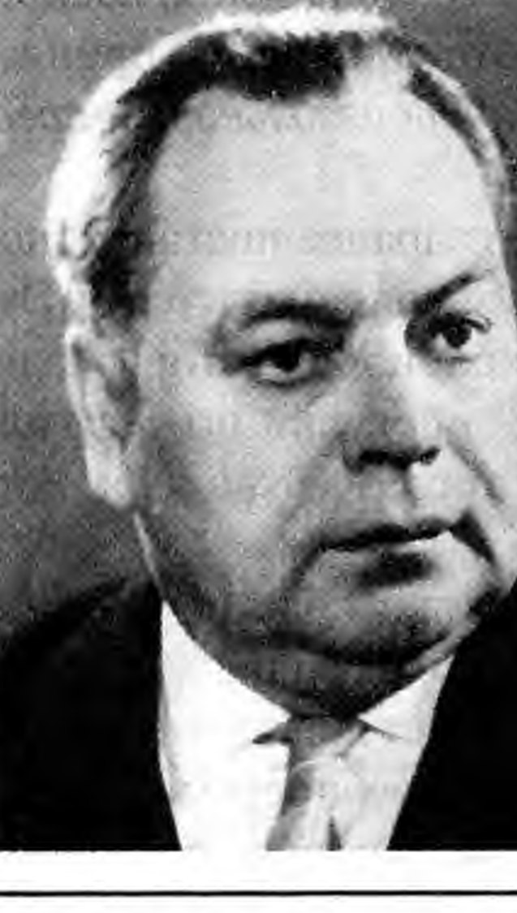
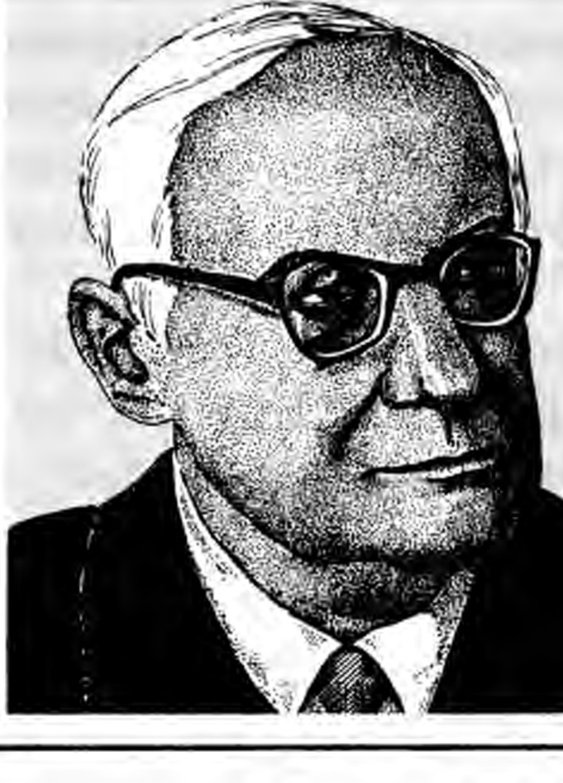
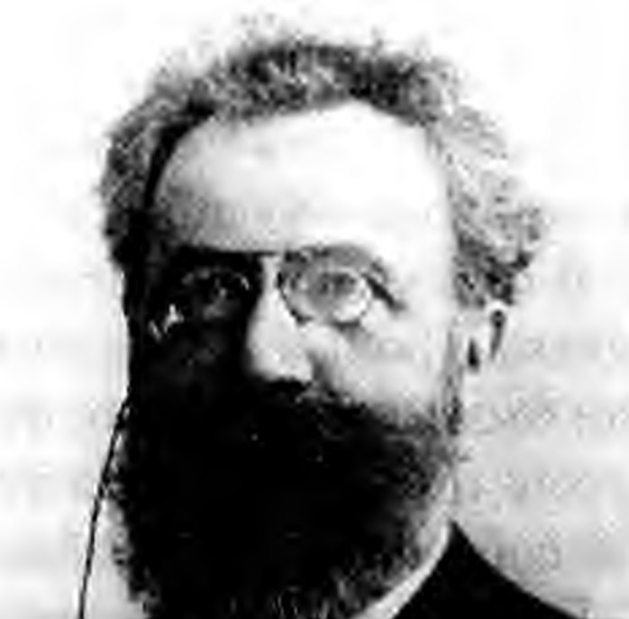

Жалпы психология · Танымдық процестер · 7-дәріс
Есөткен мен бүгіннің көпірі
«Егер адамда ес болмаса, ол әрбір секундта жаңа туған нәресте сияқты күйде болар еді» (И. М. Сеченов). Бұл білім базасы ес туралы алты оқулықтың материалын бір әңгімеге біріктіреді: мидағы іздерден бастап емтиханға дайындалу тәсілдеріне дейін. Мәтін қазақ тілінде жазылған, ал тәжірибелерді өзіңіз орындап көресіз.
Құрметті студенттер!
Атыңыз, достарыңыздың жүзі, домбыраның күйі, бала кезгі ауланың иісі, кеше оқыған тақырып — бәрі есте сақталған. Ес болмаса, біз өзімізді де, бір-бірімізді де танымас едік. Сондықтан ес психологияның ең негізгі танымдық процестерінің бірі саналады.
Білім базасы бес бөлімнен тұрады. Алдымен естің не екенін және оның мидағы негізін анықтаймыз. Содан кейін оның процестерін ретімен қарастырамыз: есте қалдыру, сақтау, қайта жаңғырту және ұмыту. Дәрістің басты екі тақырыбына — интерференция мен реминисценцияға — жеке тарау арналған. Үшінші бөлімде естің түрлерін, төртіншісінде теориялары мен заңдарын көреміз. Соңғы бөлім естің дамуына, бұзылуларына, жалған естеліктерге және есті жақсарту жолдарына арналған.
Тараулар бір-бірімен байланысқан. Әр тарау алдыңғы тарауда туған сұрақтан басталады да, келесі тарауға көпір салып аяқталады. Сондықтан ретімен оқыған дұрыс. Ал керек ұғымды жоғарыдағы іздеу жолағы немесе терминдер сөздігі арқылы таба аласыз.
Әр тараудың соңында негізгі түйіндер, өзін-өзі тексеру сұрақтары және жағдаяттық есептер берілген.
Бастамас бұрын
1-тарау дәрістегі тәжірибемен ашылады: он сөзді есте сақтап көресіз. Нәтижеңіз сақталады: 11-тарауда шеткі эффектіні талдағанда оған қайта ораламыз. Бастау үшін 1-тарауға өтіңіз.
Мазмұны
I БӨЛІМЕс деген не?Естің анықтамасы, маңызы және мидағы негіздері
- 01Ес: анықтамасы мен маңызыБіз күн сайын есімізге сүйенеміз, бірақ оны байқамаймыз. Ес бір сәтке «сөнсе», не болар еді? Психологтар есті қалай анық…
- 02Естің физиологиялық негіздеріАлдыңғы тарауда тәжірибе бізде «із» қалдыратынын айттық. Енді сол іздің табиғатын іздейміз. Із неден тұрады: электр импу…
II БӨЛІМЕстің процестеріЕсте қалдыру, сақтау, қайта жаңғырту, ұмыту; интерференция мен реминисценция
- 03Есте қалдыруАлдыңғы тарауларда ес не екенін және оның мидағы негізін көрдік: әр әсер жүйке жүйесінде із қалдырады. Енді табиғи сұрақ…
- 04Сақтау: естің құрылымыАлдыңғы тарауда ақпараттың есте қалай қалатынын көрдік. Енді келесі сұраққа көшеміз: кодталған ақпарат қайда және қалай …
- 05Қайта жаңғырту және тануАлдыңғы тарауда ақпарат ұзақ мерзімді естің «қоймасына» қалай жететінін көрдік. Бірақ қоймада жатқан білімнің пайдасы он…
- 06ҰмытуАлдыңғы тарауда естің материалды қалай алып шығатынын көрдік. Енді керісінше жағдайды қарастырамыз: ештеңе еске түспеген…
- 07Интерференция және реминисценцияАлдыңғы тарауда біз ұмытудың бірнеше себебін атадық. Солардың бірі — интерференция: бір ақпарат екіншісіне кедергі жасай…
III БӨЛІМЕстің түрлеріЕстің жіктелуі және ұзақ мерзімді естің жүйелері
IV БӨЛІМТеориялар мен заңдарҒалымдар есті қалай түсіндірді және ол қандай заңдарға бағынады
V БӨЛІМЕс адам өміріндеЕстің дамуы, бұзылулары, жалған естеліктер және есті жақсарту
- 12Естің дамуы және жеке ерекшеліктеріЕстің заңдары барлық адамға ортақ. Бірақ бір аудиторияда отырған екі студенттің есі ешқашан бірдей болмайды. Бұл тарауда…
- 13Естің бұзылулары және жалған естеліктерАлдыңғы тарауда ес жас өткен сайын қалай дамитынын және адамдар бір-бірінен қалай ерекшеленетінін көрдік. Енді керісінше…
- 14Есті жақсарту жолдарыАлдыңғы тарауда естің қаншалықты осал екенін көрдік: ол ұмытады, бұрмаланады, бөтен ақпаратты «өз естелігі» деп қабылдай…
Дереккөздер
- 7-дәріс«Ес процесі, оның түрлері. Реминисценция және интерференция». Терминдердің қазақша баламалары осы дәрістен алынды.
- Маклаков А. Г.Общая психология. 10-тарау «Память», 247–281-беттер.
- Немов Р. С., Романова Е. С.Общая психология. I бөлім, 11-тарау «Память», 404–443-беттер.
- БабаевҚазақ тіліндегі психология оқулығы, 12-дәріс «Ес», 132–147-беттер. Дәрісте жоқ терминдердің қазақшасы осы кітап бойынша берілді.
- Крысько В. Г.Общая психология в схемах и комментариях. 2.16–2.18-схемалар, 74–79-беттер.
- OpenStax. Psychology 2e8-тарау «Memory», 247–272-беттер. Суреттердің бір бөлігі осы оқулықтан алынды (CC BY 4.0).
I бөлім · Ес деген не?
Ес: анықтамасы мен маңызы
Біз күн сайын есімізге сүйенеміз, бірақ оны байқамаймыз. Ес бір сәтке «сөнсе», не болар еді? Психологтар есті қалай анықтайды? Ол неге басқа психикалық процестердің бәрін байланыстырып тұрады? Бұл тарауда бүкіл тақырыптың іргетасын қалаймыз: негізгі ұғымдар, естің процестері, оның маңызы және зерттеу тарихы.
- 7-дәріс
- Маклаков, 10.1
- Немов, 11.1
- Крысько, 2.16
- OpenStax, 8-тарау кіріспесі, 8.1
- Бабаев, 12-дәріс
Бастамас бұрын: шағын тәжірибе
Теориядан емес, тәжірибеден бастайық. 7-дәріс те дәл осылай басталады. Төменде экранға он сөз шығады. Оларды 20 секунд ішінде есте сақтауға тырысыңыз. Жазып алмаңыз, бірақ іштей қайталауға болады. Уақыт біткенде сөздер жоғалады, ал сіз есіңізде қалғанын кез келген ретпен жазасыз.
Қанша сөз жаздыңыз? Көп адам онның бәрін емес, бір бөлігін ғана еске түсіреді. Бұл — қалыпты жағдай. Енді не болғанын талдайық. Осы бір минутта сіз естің барлық негізгі процесін қолдандыңыз.
- Есте қалдыру. Сөздерді оқып, оларды «ішке» енгіздіңіз. Кейбірін іштей қайталадыңыз, кейбірін бір-бірімен байланыстырдыңыз («алма қардың үстінде жатыр» сияқты).
- Сақтау. Экран бос тұрған бірнеше секундта сөздер жоғалып кеткен жоқ. Олар ақпарат ретінде есіңізде сақталды.
- Қайта жаңғырту. Сөздер көз алдыңызда жоқ еді. Соған қарамастан сіз оларды ойша қайта жасап, жазып шықтыңыз.
- Ұмыту. Кейбір сөздер мүлде шықпады. Бәлкім, олардың бірін кейін тізімді қайта көргенде «иә, бұл болған!» деп танырсыз.
Нәтижеге тағы бір рет қараңыз. Тізімнің қай жеріндегі сөздер жақсы сақталды: басындағылар ма, ортасындағылар ма, әлде соңындағылар ма? Бұл кездейсоқ емес. Бұл заңдылыққа 11-тарауда қайта ораламыз, сонда осы нәтижеңіз де керек болады.
Ессіз бір күн
OpenStax оқулығы ес тарауын бір ойша тәжірибемен бастайды. Біз де оны өз өмірімізге бейімдеп көрейік. Таңертең ояндыңыз, бірақ бұрын үйренген ештеңені есіңізге түсіре алмайсыз.
Қандай киім кию керек? Түймені қалай салады, сыдырманы қалай тартады? Тісті қалай тазалайды? Біреуден көмек сұрағыңыз келеді. Бірақ үйдегі адамдардың бет-әлпетін танымайсыз. Тоқтаңыз, бұл сіздің үйіңіз бе өзі? Қарныңыз ашты. Тамақ қайда тұрғанын, оны қалай әзірлейтінін білмейсіз. Дастарқандағы бауырсақтың аты да, дәмі де бөтен. Мүмкін, қайтадан төсекке жатқан дұрыс шығар. Төсек... ол не еді?
Бұл сценарий күлкілі көрінуі мүмкін. Бірақ ол бір қарапайым шындықты көрсетеді: біздің әр әрекетіміздің артында ес тұр. Киіну, сөйлеу, жолды табу, жақын адамды тану — бәрі бұрын жинақталған тәжірибеге сүйенеді.
Орыс физиологы И. М. Сеченов мұны бір сөйлеммен жеткізген. Бұл сөзді 7-дәріс те келтіреді.
«Егер адамда ес болмаса, ол әрбір секундта жаңа туған нәресте сияқты күйде болар еді».
— И. М. Сеченов
Ойланып көріңіз. Адамның аты-жөні, сезімдері, әдеттері, басқалармен қарым-қатынасы, тіпті «мен» деген болмысы — бәрі неге сүйенеді? Өткен тәжірибеге және оны сақтайтын еске. Ес болмаса, біз бір-бірімізді де, өзімізді де танымас едік. Сеченов есті психикалық дамудың маңызды шарты деп санаған.
OpenStax авторлары кіріспеде бірнеше сұрақ қояды. Біз ақпаратты қалай өңдеп, қалай сақтаймыз? Естің түрлері бар ма? Естеліктерді қалай «шығарып аламыз»? Неге ұмытамыз? Сайттың барлық тарауы осы сұрақтарға жауап іздейді.
Ес дегеніміз не: бір ұғым, алты анықтама
Күнделікті тілде «есі жақсы», «есімнен шығып кетті» деп айтамыз. Психологияда бұл сөздің нақты мағынасы бар. Есорыс. память · ағыл. memory — адамның өткен тәжірибесін сақтап, кейін пайдалануға мүмкіндік беретін психикалық процесс. Бірақ әр автор оны өзінше, әр қырынан анықтайды. Алдымен оқытушымыздың анықтамасынан бастайық.
Ес (7-дәріс бойынша)
Ес — адамның өткен тәжірибесін мида бекіту, сақтау және кейін қайта жаңғырту процесі. Ол білім алуға, дағды қалыптастыруға және тұлғалық тәжірибенің сабақтастығына мүмкіндік береді.
Ес (Маклаков бойынша)
Ес деп өткен тәжірибенің іздерін есте қалдыруды, сақтауды, кейін тануды және қайта жаңғыртуды айтады.
Маклаков «із» ұғымына ерекше мән береді. Біз білген әр нәрсе, әр сезім, әр әсер, әр қимыл есте белгілі бір ізорыс. след · ағыл. memory trace қалдырады. Бұл із ұзақ уақыт сақтала алады. Қолайлы жағдайда ол қайта жанданып, санаға оралады. Іздің табиғатын 2-тарауда толық қарастырамыз.
Ес (Бабаев бойынша)
Ес — өткен тәжірибе іздерін жадта қалдырып, сақтап, кейін оларды қайта танып, жаңғырту. Ол бір-бірімен ұштасқан дара бөліктерден құралған күрделі психикалық процесс.
Бабаев та іздерге сүйенеді. Ол «ес» сөзімен қатар «жад» сөзін де жиі қолданады: «жадта қалдыру», «жадта сақтау». Бұл екі сөз — синонимдер.
Ес (Крысько бойынша)
Ес — адамның бейнелеген, жасаған немесе бастан кешкен нәрсесін есте қалдыру, сақтау және қайта жаңғырту процесі.
Ес (Немов бойынша)
Есті есте қалдыру, сақтау, қайта жаңғырту, тану және ұмыту процестері арқылы анықтауға болады. Бұл процестер — күрделі құрылымды біртұтас естің әр қыры.
Ес (OpenStax бойынша)
Ес — ақпаратты әртүрлі уақыт аралығында кодтау, сақтау және еске түсіру үшін қолданылатын процестер жиынтығы. Ес — ақпарат өңдейтін жүйе, сондықтан оны жиі компьютермен салыстырады.
Анықтамалар әртүрлі сияқты көрінеді. Бірақ мұқият қарасаңыз, бәрінің өзегі бір: ес — бір процесс емес, өзара байланысқан бірнеше процестің жүйесі. Айырмашылық тек қай процестердің аталатынында.
| Дереккөз | Есте қалдыру | Сақтау | Қайта жаңғырту | Тану | Ұмыту |
|---|---|---|---|---|---|
| 7-дәріс | иә («бекіту») | иә | иә | қайта жаңғыртудың бір түрі ретінде | өзін-өзі тексеру слайдында иә |
| Маклаков | иә («есте қалдыру, бекіту») | иә | иә | иә | анықтамада жоқ |
| Бабаев | иә («жадта қалдыру») | иә | иә («жаңғырту») | иә | анықтамада жоқ |
| Крысько | иә | иә | иә | сызбада бар, «ілеспе құбылыс» | жоқ |
| Немов | иә | иә | иә | иә | иә |
| OpenStax | иә («кодтау») | иә | иә («еске түсіру») | еске түсірудің бір тәсілі ретінде | анықтамада жоқ |
Естің процестері: бір тізбектің буындары
Демек, ес бірнеше процестен тұрады. 7-дәріс оларды бір тізбек етіп көрсетеді:
ЕСТЕ ҚАЛДЫРУ → САҚТАУ → ҚАЙТА ЖАҢҒЫРТУ / ТАНУ
↓
ҰМЫТУ
Бұл процестер өзара байланысты. Олар есте сақтау әрекетінің әр кезеңінде көрінеді. Әрқайсысына қысқаша анықтама берейік. Толық сипаттамасы жеке тарауларда.
Есте қалдыру
Есте қалдыруорыс. запоминание, запечатление · ағыл. encoding — қабылданған ақпаратты бекітіп, кейін сақтауға дайындау процесі. Маклаков бойынша, тану мен қайта жаңғырту алдымен есте қалдыру мен сақтауды қажет етеді. Бекімеген нәрсені кейін еске түсіре алмайсыз.
OpenStax бұл процесті кодтауорыс. кодирование · ағыл. encoding деп атайды. Кодтау — ақпаратты ес жүйесіне енгізу. Ми сезім мүшелерінен келген ақпаратты «белгілейді», ұқсас ақпаратпен топтастырады және жаңа ұғымды бұрыннан барымен байланыстырады. Крысько бойынша, есте қалдырусыз адам тәжірибесі жаңа біліммен және мінез-құлықтың жаңа формаларымен байи алмайды. Толығырақ — 3-тарауда.
Сақтау
Сақтауорыс. сохранение · ағыл. storage — алынған білімді салыстырмалы түрде ұзақ уақыт есте ұстап тұру (Крысько). 7-дәріс бойынша, сақтау — ақпараттың жүйке жүйесінде із ретінде сақталуы. OpenStax сақтауды кодталған ақпараттың тұрақты жазбасын жасау деп сипаттайды. Сақтаудың қалай ұйымдасқанын 4-тарау көрсетеді.
Қайта жаңғырту, еске түсіру және тану
Қайта жаңғыртуорыс. воспроизведение · ағыл. retrieval, recall — бұрын қабылданған, бірақ дәл қазір қабылданбай тұрған заттың бейнесін қайта жасау процесі (Маклаков). Біз көрген заттарды ғана жаңғыртпаймыз. Ойларымыз, бастан кешкен сезімдеріміз, тілектеріміз, қиялдарымыз да қайта жаңғырады. Крысько қайта жаңғыртуды психиканың бұрын бекіген мазмұнын белсендіру деп атайды.
Тануорыс. узнавание · ағыл. recognition — дәл қазір қабылданып тұрған зат немесе құбылыс бұрын да қабылданғанын сезіну (Маклаков). Бұрын көрген зат қайта кездессе, ол бізге таныс болып көрінеді. Дәріс тану мен еске түсіруді нақты ажыратады. Тану — объектіні қайта көргенде оның бұрын қабылданғанын білу. Еске түсіруорыс. припоминание · ағыл. recall — объект көз алдында жоқ кезде ақпаратты ойша жаңғырту.
OpenStax ақпаратты естен шығарып алудың үш жолын атайды: еске түсіру (ешқандай белгі, тірек берілмейді), тану (материал қайта кездескенде салыстырамыз) және қайта үйренуорыс. повторное заучивание, метод сбережения · ағыл. relearning. Мысалы, эссе түріндегі емтиханда сіз еске түсіресіз. ҰБТ-дағы тест сұрағында дұрыс нұсқаны танисыз. Мектепте оқып, кейін ұмытып қалған ағылшын тілін екінші рет әлдеқайда тез үйренесіз — бұл қайта үйрену. Толығырақ — 5-тарауда.
Ұмыту
Ұмытуорыс. забывание · ағыл. forgetting — материалды қайта жаңғыртудың қиындауы немесе бұрмалануы (7-дәріс). Дәріс бір маңызды ой қосады: ұмыту ақпараттық жүктемені реттеуге қатысуы мүмкін. Яғни ұмыту тек «ақау» емес, ол миды керексіз ақпараттан арылтады. Ұмыту — 6-тараудың тақырыбы.
Психологияда ең жақсы зерттелген процестер — есте қалдыру мен еске түсіру. Немов мұны төрт себеппен түсіндіреді:
- Бұл — естің басты процестері. Негізгі жүктеме соларға түседі, адам оларды ең жиі қолданады.
- Естің өнімділігі ең алдымен осы процестерге байланысты.
- Адамның есінде қиындық туса, ол көбіне есте қалдыруға не еске түсіруге қатысты болады.
- Оларды тәжірибе жүзінде зерттеу салыстырмалы түрде оңай.
Естің маңызы: «өтпелі» процесс
Танымдық процестердің арасында естің орны ерекше. Маклаков атап өткендей, көп зерттеуші оны «өтпелі» процессорыс. «сквозной» процесс деп сипаттайды. Ол психикалық процестердің сабақтастығын қамтамасыз етеді және барлық танымдық процестерді біртұтас жүйеге біріктіреді. Ес бір бөлмеде ғана тұрмайды. Ол «үйдің» дәлізі сияқты барлық бөлмені жалғап тұрады.
Ес не береді?
7-дәріс естің психологиялық маңызын төрт тармақпен көрсетеді. Ес:
- білім мен тәжірибені жинақтайды;
- дағдылардың қалыптасуына көмектеседі;
- өткен тәжірибені қазіргі әрекетпен байланыстырады;
- тұлғаның психикалық өмірінің сабақтастығын қамтамасыз етеді.
Маклаков та осыны айтады: біз жинаған тәжірибе мен білімді сақтайтындықтан ғана психикалық дамуымыз мүмкін. Ес арқылы адам бұрынғы білімі мен дағдысын жоғалтпай, жаңа ақпарат жинай алады.
Немов естің маңызын кеңірек, бүкіл адамзат деңгейінде қарастырады. Оқыту, тәрбие, кәсіби әрекет, адамдардың қарым-қатынасы мен өзара әрекеті — бәрі еске сүйенеді. Білім мен тәжірибе ұрпақтан ұрпаққа берілгендіктен, материалдық және рухани мәдениет пайда болды. Адамның барлық қабілеті осы сақталған, берілген және меңгерілген білімге, іскерлікке, дағдыға сүйенеді.
Немов тағы бір қызық ой айтады. Әр жаңа ұрпақтың ес мүмкіндігі, қолжетімді білімінің көлемі, есте қалдыру мен сақтау құралдары алдыңғы ұрпақтікінен асып түседі. Бұл саладағы ең жаңа әрі басты жетістік, оның пікірінше, — Интернет. Онда Интернетті пайдаланатын жер бетіндегі барлық адамның «есі» сақталады. Ауызша жатталған жыр мен шежіреден бастап кітапханаға, одан Интернетке дейінгі жолды осылай елестетуге болады.
Есті ежелгі гректер мен римдіктер де жоғары бағалаған. Немовтың жазуынша, олардың мәдениетінде жақсы ес адамның басты қасиеттерінің бірі саналған, есі мықты адамдар құрметке ие болған. Қазақ даласындағы жыраулар мен ақындардың мыңдаған жол жырды жатқа айтуы да осы құрметтің бір көрінісі деуге болады.
Ес және басқа психикалық процестер
Ес «өтпелі» процесс болғандықтан, басқа процестермен тығыз байланысты. Дереккөздер бұл байланыстың бірнеше мысалын келтіреді.
- Қабылдау. Крысько бойынша, қайта жаңғырту кезінде ми қыртысында қабылдау кезіндегідей физиологиялық процестер жүреді. Ес пен қабылдау бір жүйке аппаратын пайдаланады. Айырмашылығы 2-тарауда түсіндіріледі.
- Зейін. Маклаков бойынша, зейіннің ортасында болған материал ықтиярсыз есте қалады, әсіресе онымен қандай да бір ой жұмысы байланысты болса.
- Ойлау. Немов бір заңды былай тұжырымдайды: адам материал туралы неғұрлым көп ойланса, соғұрлым оны жақсы есте сақтайды. А. А. Смирнов есті ойлаумен байланыстырып зерттеген.
- Қиял. Немов бойынша, адам жарқын көрнекі бейне ретінде елестете алатын материал бірден және ұзақ есте қалады.
- Сөйлеу. Маклаков бойынша, қабылдау кезінде сөзбен аталған, сипатталған нәрсе кейін дәлірек жаңғырады. Ойлар тілсіз өмір сүрмейді, сондықтан оларды есте сақтауды сөздік-логикалық ес дейді.
- Эмоция. Немов бойынша, есте қалдыруға ілескен кез келген эмоция оның тиімділігін арттырады. Эмоцияның есте қалдыруға әсерін ми деңгейінде 2-тарау, заң ретінде 11-тарау қарастырады.
Ес — көшірме емес, қайта құрастыру
Көп адам есті бейнекамераға немесе флешкаға ұқсатады: жазып алдық, сақтадық, кейін сол күйінде «ойнаттық». Ғылым бұл бейнені қолдамайды.
Немов бұл туралы тікелей жазады. Бір қарағанда есте қалдыру — материалды көшіріп алу, ал еске түсіру — оны сақталған күйінде қайта шығару сияқты. Шын мәнінде олай емес. Есте қалдыру кезінде де, қайта жаңғырту кезінде де материал заңды түрде өзгереді. Бірақ ең бастысы — адамға қажет мазмұн — сақталып қалады.
- Есте қалдыру кезінде адам материалдан өзіне дәл сол сәтте қызықты нәрсені бөліп алады. Қызықты әрі қажеттілігіне сай нәрсе бірінші есте қалады.
- Маңызсыз, қызықсыз бөлшектерді адам байқамайды. Олар көбіне ұзақ сақталмайды немесе мүлде есте қалмайды.
- Сақтау кезінде материал түрленеді: осылайша ол жақсырақ есте қалады, ұзағырақ сақталады және жеңілірек жаңғырады.
Қайта жаңғырту — материалды сөзбе-сөз немесе механикалық түрде еске түсіру емес. Ол, керісінше, материалды белсенді түрде ойша қайта құрастыру, яғни оны мақсатқа сай өзгерістермен қалпына келтіру.
— А. А. Смирнов (Немов бойынша)
Смирнов мұндай өзгерістердің алты түрін сипаттаған: жалпылау мен қысқарту, нақтылау, алмастыру, орын ауыстыру, біріктіру не бөлу және толықтыру. Немов бойынша, бұл өзгерістер естің қатесі емес. Олар мақсатқа сай әрі пайдалы. Солардың арқасында қайта жаңғырту ақылға қонымды, шығармашылық процеске айналады. Толығырақ — 5-тарауда.
Маклаков та осыған ұқсас ой айтады. Ұзақ мерзімді естегі материал міндетті түрде қайта құрылады. Кейбір маңызсыз бөлшектер жоғалып, басқасымен алмасады. Материалдың реті өзгереді. Оның жалпылану дәрежесі де өзгереді. Бұл өзгерістердің басты себебі — сезім мүшелерінен үздіксіз келіп жатқан жаңа ақпарат.
OpenStax бұл ойды одан әрі жалғастырады: адамның есі бейнежазбаға ұқсамайды. Естеліктің әр бөлігі — уақыты, көрнекі бөлшектері, иістері — әр жерде сақталады. Еске түсіргенде олар қайта біріктіріледі. Әр біріктіру сәтінде қате кіріп кетуі мүмкін. Сондықтан кейде болмаған нәрсені де «анық есімде» деп айтамыз. Бұл — жалған естеліктер мәселесі. Оны 13-тарауда талқылаймыз.
Ес туралы ғылымның қысқа тарихы
Ес — психологиядағы ең ескі тақырыптардың бірі. Немовтың жазуынша, оны ғылыми тұрғыда зерттегеніне кем дегенде екі жарым мың жыл болды. Негізгі кезеңдерді уақыт ретімен қарастырайық. Әр теорияның мазмұны 10-тарауда толық ашылады.
- Ежелгі дәуір. Ес туралы алғашқы пайымдар ежелгі грек философы Аристотельдің (б. з. д. IV ғ.) еңбектерінде кездеседі. Ол түсініктер бір-бірімен қандай ұстаным бойынша байланысатынын анықтауға тырысты. Кейін бұл ұстанымдарды ассоциация ұстанымдары деп атады.
- XVIII ғасыр. Немов бойынша, естің алғашқы тұтас тұжырымдамасы ассоциативтік психологияда, Д. Гартли мен Д. Пристлидің еңбектерінде пайда болды.
- XIX ғасырдың соңы: эксперимент. Ес психологияда алғаш эксперимент әдісі қолданылған салалардың бірі болды. Неміс психологы Г. Эббингауз XIX ғасырдың 80-жылдарында мағынасыз буындарды жаттау әдісін ұсынды. Ол өз әдістерін 1885 жылы жариялады және ұмыту заңын ашты. Сол кезеңде Г. Э. Мюллер есте бекіту мен жаңғырту заңдарын, ал Э. Крепелин психикалық науқастардың есін зерттеді.
- XIX ғасырдың соңы — XX ғасырдың басы. Американдық психолог Э. Торндайк жануарларда дағдының қалай қалыптасатынын алғаш рет зерттеу нысанына айналдырды.
- XX ғасырдың бірінші жартысы. Зерттеулер ассоциативтік теорияның шеңберінен шықты. Гештальтпсихология (В. Келер, К. Коффка, Б. В. Зейгарник), психоанализ (З. Фрейд), бихевиоризм, мағыналық теория (А. Бине, К. Бюлер) пайда болды. Француз ғалымы П. Жане есті материалды есте қалдыруға, өңдеуге және сақтауға бағытталған әрекеттер жүйесі ретінде түсіндірді.
- 1920–1960 жылдар, кеңестік психология. Л. С. Выготский 1920 жылдардың соңында естің жоғары формаларын зерттей бастады. Ол естің жоғары формалары шығу тегі жағынан әлеуметтік екенін көрсетті. А. Н. Леонтьев, А. Р. Лурия, А. А. Смирнов, П. И. Зинченко есті мақсатты әрекет ретінде зерттеді.
- XX ғасырдың екінші жартысы. Бастаманы когнитивтік психология алды. Ол есті электронды есептеуіш машинаның жадына ұқсатып қарастырды (Р. Аткинсон мен Р. Шиффрин және т.б.). Сонымен қатар ғалымдар естің физиологиялық және биохимиялық негіздерін белсенді зерттей бастады.
Ғасырлар бойы зерттеушілер қандай сұрақтарға жауап іздеді? Маклаков психология ғылымының ес саласындағы міндеттерін былай тізбелейді:
- іздер қалай бекиді, бұл процестің физиологиялық механизмдері қандай;
- бекуге қандай жағдайлар көмектеседі, оның шегі қандай;
- есте қалатын материалдың көлемін қандай тәсілдер кеңейтеді;
- іздер қанша уақыт сақтала алады;
- іздерді қысқа және ұзақ уақыт сақтаудың механизмдері қандай;
- жасырын (латентті) күйдегі ес іздері қандай өзгерістерге ұшырайды және бұл өзгерістер танымдық процестерге қалай әсер етеді.
Сайттың тараулары дәл осы сұрақтарға бірінен соң бірі жауап береді.
Тақырып картасы
Ес — үлкен тақырып. Онда адасып қалмау үшін бізге карта керек. В. Г. Крысько естің мәнін бір сызбаға жинаған. Сызба бес деңгейден тұрады: жоғарыда — ұғымның өзі, ортада — процестер мен түрлер, ең төменде — бүкіл жүйені «ұстап тұрған» физиологиялық негіз. Блокты бассаңыз, ол туралы қай тарауда толық айтылатынын көресіз.
Сызбаны жоғарыдан төмен оқиық.
- Процестер: есте қалдыру, сақтау, қайта жаңғырту, тану. Олар II бөлімде қарастырылады (3, 4, 5-тараулар). Крысько сызбасында ұмыту жоқ, бірақ біз оған 6 және 7-тарауларды арнаймыз.
- Түрлер (мазмұны бойынша): көрнекі-бейнелі, сөздік-логикалық, қозғалыс және эмоционалдық ес. Крысько бойынша, көрнекі-бейнелі ес көру, есту, сипап сезу, иіс және т.б. бейнелерді сақтайды. Сөздік-логикалық ес сөзбен берілген ақпараттың мағынасын, логикасын, бөліктерінің арақатынасын есте сақтайды. Қозғалыс есі қимылдарды, эмоционалдық ес бастан кешкен сезімдерді сақтайды. Толығырақ — 8-тарауда.
- Жаттау тәсілі бойынша: механикалықорыс. механическая ес ақпаратты қалай қабылданса, сол күйінде есте қалдырады; мағыналы (логикалық)орыс. логическая, смысловая ес сыртқы формасын емес, мағынасын есте қалдырады. Бұл айырмашылық 3-тарауда сандармен көрсетіледі.
- Физиологиялық негіздер: Крысько сызбасының табанында былай жазылған: «ми қыртысында сақталған, бұрын болған жүйке процестерінің іздері». Бұл — келесі тараудың тақырыбы.
Негізгі түйіндер
- Ес — адамның өткен тәжірибесін бекіту, сақтау және кейін қайта жаңғырту процесі (7-дәріс). Барлық анықтамада ес бір процесс емес, өзара байланысқан процестер жүйесі ретінде көрінеді.
- Естің негізгі процестері: есте қалдыру (кодтау), сақтау, қайта жаңғырту (еске түсіру мен тану) және ұмыту. Ұмыту мен тануды авторлар әртүрлі бағалайды.
- OpenStax есті ақпарат өңдейтін жүйе ретінде сипаттайды: кодтау — сақтау — еске түсіру. Естен ақпаратты шығарып алудың үш жолы бар: еске түсіру, тану және қайта үйрену.
- Ес — «өтпелі» процесс: ол психикалық өмірдің сабақтастығын қамтамасыз етеді және қабылдау, зейін, ойлау, қиял, сөйлеу, эмоциямен тығыз байланысты.
- Сеченов бойынша, ессіз адам әр секундта жаңа туған нәресте күйінде болар еді. Ес — психикалық дамудың шарты.
- Ес — көшірме емес. Есте қалдыру мен қайта жаңғырту кезінде материал заңды түрде өзгереді. Смирнов бойынша, қайта жаңғырту — материалды белсенді түрде ойша қайта құрастыру.
- Ес ғылымы Аристотельден басталады. Экспериментті Эббингауз (1885) енгізді. XX ғасырда гештальт, психоанализ, бихевиоризм, әрекеттік және когнитивтік бағыттар пайда болды.
Өзін-өзі тексеру
7-дәріс пен Маклаковтың ес анықтамаларының ұқсастығы мен айырмашылығы неде?
Екеуі де есті өткен тәжірибені сақтау және пайдалану процесі деп санайды. Екеуінде де есте қалдыру (бекіту), сақтау және қайта жаңғырту аталады. Маклаков анықтамасына тануды қосады және «із» ұғымына сүйенеді: ес — өткен тәжірибе іздерін есте қалдыру, сақтау, тану және қайта жаңғырту. Дәріс анықтамасы естің қызметіне — білім алуға, дағды қалыптастыруға, тұлға тәжірибесінің сабақтастығына назар аударады.
Тану мен еске түсірудің айырмашылығы қандай? Әрқайсысына оқу өмірінен мысал келтіріңіз.
Тану — объектіні қайта қабылдағанда оның бұрын қабылданғанын сезіну. Ол салыстыруға сүйенеді. Мысалы, тестте дұрыс жауапты нұсқалардың ішінен табу. Еске түсіру — объект көз алдында жоқ кезде ақпаратты ойша жаңғырту, ешқандай белгісіз. Мысалы, ауызша емтиханда билет сұрағына жауап беру немесе эссе жазу.
Неліктен Маклаков есті «өтпелі» процесс деп атайды?
Өйткені ес жеке бір процесс ретінде ғана жұмыс істемейді. Ол психикалық процестердің сабақтастығын қамтамасыз етеді және барлық танымдық процестерді біртұтас жүйеге біріктіреді. Қабылдау, ойлау, қиял, сөйлеу бұрын жинақталған тәжірибеге сүйенеді, ал бұл тәжірибені ес сақтайды.
«Ес — бейнекамера сияқты» деген пікірмен келісесіз бе? Жауабыңызды дәлелдеңіз.
Келісуге болмайды. Немов бойынша, есте қалдыру мен қайта жаңғырту кезінде материал заңды түрде өзгереді: адамға қызықты нәрсе бөлініп алынады, маңызсыз бөлшектер түсіп қалады, материал жалпыланады немесе нақтыланады. Смирнов қайта жаңғыртуды белсенді ойша қайта құрастыру деп атады. OpenStax естеліктің бөліктері әртүрлі жерде сақталып, еске түсіргенде қайта біріктірілетінін және әр кезеңде қате кіруі мүмкін екенін айтады.
Немов бойынша, естің процестерін неге бөлек зерттейді?
Төрт себеп бар: 1) адам өмірінде әр процестің маңызы әртүрлі; 2) олар бір адамда да, әр адамда да әртүрлі деңгейде дамиды; 3) әртүрлі заңдарға бағынады; 4) анатомия мен физиология деңгейінде оларға әртүрлі жүйке құрылымдары жауап береді.
Крысько сызбасы бойынша естің физиологиялық негізі не?
Бұрын болған жүйке процестерінің ми қыртысында сақталған іздері. Сызбада бұл негіз ең төменде тұр және бүкіл жүйені — процестерді де, түрлерді де — «ұстап тұрады».
Біз есті бірнеше процестің жүйесі деп анықтадық. Анықтамаларда «із» сөзі қайта-қайта кездеседі: тәжірибе бізде із қалдырады. Бірақ бұл із қайда және неден тұрады? Ол мидың белгілі бір жерінде «жатыр» ма, әлде бүкіл миға таралған ба? Неге бір әсер жылдар бойы сақталады, ал екіншісі бірнеше секундта өшеді? Бұл сұрақтарға физиология мен нейроғылым жауап береді (2-тарау).
I бөлім · Ес деген не?
Естің физиологиялық негіздері
Алдыңғы тарауда тәжірибе бізде «із» қалдыратынын айттық. Енді сол іздің табиғатын іздейміз. Із неден тұрады: электр импульсінен бе, химиялық өзгерістен бе, әлде нейрондардың жаңа байланысынан ба? Ес мидың қай бөлігінде сақталады? Бұл тарауда естің физиологиясын қарапайымнан күрделіге қарай қарастырамыз: жүйке жүйесінің пластикалығынан бастап ми құрылымдары мен нейромедиаторларға дейін.
- Маклаков, 10.1–10.2
- Крысько, 2.16
- OpenStax, 8.2
- 7-дәріс
- Бабаев, 12-дәріс
Досыңыздың телефон нөмірін бір рет естідіңіз. Оны терген бойда ұмытып қалдыңыз. Ал балалық шақтағы бір жазғы күн, ауылдағы киіз үйдің иісі мен қымыздың дәмі отыз жыл өтсе де есіңізде. Екі жағдайда да ақпарат бір мидан өтті. Неге бірі секундта өшеді, екіншісі өмір бойы сақталады? Жауапты мидың жұмысынан іздейміз.
Ес — материяның қасиеті ме, мидың қызметі ме?
Маклаков бірден мойындайды: психология көп табысқа жетсе де, іздің бекуінің физиологиялық механизмі мен естің табиғаты әлі толық зерттелген жоқ. Дегенмен ғалымдар бұл салада біртіндеп көп нәрсені анықтады.
- XIX ғасырдың соңы — XX ғасырдың басы. Философтар мен психологтар есті тек «материяның жалпы қасиеті» деп атаумен шектелді.
- XX ғасырдың 40-жылдары. Отандық психологияда ес — мидың қызметі, ал оның физиологиялық негізі — жүйке жүйесінің пластикалығы деген пікір қалыптасты.
- Кейінгі онжылдықтар. Ғалымдар іздің бекуі, сақталуы және жаңғыруы терең биохимиялық процестермен байланысты екенін анықтады. Олар қозудың реверберациясын, іздің консолидациясын және ес үшін қажетті ми аймақтарын белсенді зерттей бастады.
Бүгін есті бірнеше деңгейде зерттейді: психологиялық, физиологиялық, нейрондық және биохимиялық. Маклаков бір заңдылықты атап өтеді: ес жүйесі неғұрлым күрделі болса, оның механизмін іздейтін теория да соғұрлым күрделі болады.
Бабаев естің үш теориясын атайды: ассоциативтік, нейрондық және биохимиялық. Ассоциативтік теорияны 10-тарауда қарастырамыз. Нейрондық және биохимиялық теориялар — осы тараудың тақырыбы.
Із және жүйке жүйесінің пластикалығы
Крысько естің физиологиялық негізін былай анықтайды. Бұл — бұрын болған жүйке процестерінің іздері. Олар жүйке жүйесінің пластикалығы арқасында ми сыңарларының қыртысында сақталады.
Жүйке жүйесінің пластикалығы (Маклаков бойынша)
Әрбір жүйке-ми процесі өзінен кейін із қалдырады. Бұл із кейінгі процестердің сипатын өзгертеді. Сондай-ақ тітіркендіргіш сезім мүшелеріне әсер етпей тұрғанда да сол процестің қайта пайда болуына мүмкіндік береді.
Жүйке жүйесінің пластикалығы (икемділігі)орыс. пластичность нервной системы · ағыл. neural plasticity — жүйке тінінің әсерлерден кейін өзгеріп, сол өзгерісті сақтай алу қабілеті. Крысько оның мәнін түсіндіреді. Сыртқы тітіркендіргіш тудырған кез келген жүйке процесі — қозуорыс. возбуждение болсын, тежелуорыс. торможение болсын — жүйке тінінен ізсіз өтпейді. Ол тінде белгілі бір функционалдық өзгеріс түрінде ес ізінорыс. след памяти · ағыл. memory trace қалдырады. Бұл өзгерістер екі нәрсе береді:
- қайталанатын жүйке процестерінің жүруін жеңілдетеді;
- оларды тудырған тітіркендіргіш жоқ кезде де қайта пайда болуына мүмкіндік береді.
Мысалы, домбырада жаңа күйді алғаш тартқанда саусақтар баяу, қателесіп қозғалады. Әр қайталау сайын бұрынғы қозудың ізі жолды «тапап» отырады, сондықтан қимыл жеңілдей береді. Бұл — бірінші қасиет. Ал қолыңызда домбыра болмаса да, күйдің әуенін іштей «естисіз» — бұл екінші қасиет.
Маклаков пластикалық жүйке процестеріне ғана емес, психикалық процестерге де тән екенін қосады. Процестер арасында байланыстар пайда болады. Нәтижесінде бір психикалық процесс екіншісін шақыра алады. Бұл байланыстардың ең белгілісі — ассоциацияорыс. ассоциация · ағыл. association. И. П. Павлов бойынша, ассоциация — екі немесе бірнеше тітіркендіргіштің бір мезгілде не бірінен соң бірі әсер етуінен пайда болатын уақытша байланыс. Маклаков бойынша, ми қыртысындағы мұндай уақытша байланыстар — есте қалдыру мен қайта жаңғыртудың физиологиялық негізі. Ассоциация түрлері мен ассоциативтік теорияны 10-тарауда толық қарастырамыз.
Ес пен қабылдау: бір аппарат, әртүрлі тірек
Көз алдыңызда алма тұр. Енді көзіңізді жұмып, сол алманы елестетіңіз. Мида не өзгерді?
Крысько бір қызық фактіні атап өтеді: қайта жаңғырту кезінде ми қыртысында жүретін физиологиялық процестердің мазмұны қабылдау кезіндегідей. Тітіркендіргіш сезім мүшелеріне тікелей әсер еткенде, қабылдау белгілі бір орталық жүйке аппараттарын пайдаланады. Ес те дәл сол аппараттардың жұмысын қажет етеді. Яғни алманы көргенде де, оны еске түсіргенде де мидың бір бөліктері жұмыс істейді.
Онда айырмашылық неде? Крысько бойынша, айырмашылық тек процестерді не «қоректендіретінінде».
| Қабылдау | Ес (қайта жаңғырту) | |
|---|---|---|
| Қандай жүйке аппараттары жұмыс істейді? | Орталық жүйке аппараттары | Сол орталық жүйке аппараттары |
| Процестер неге сүйенеді? | Рецепторлардың үздіксіз тітіркенуіне | Тек бұрын болған жүйке процестерінің «іздеріне» |
Маклаков осы ойды өз сөзімен айтады. Қайта жаңғырту қабылдаудан кейін және одан тыс жүреді. Сондықтан оның физиологиялық негізі — заттар мен құбылыстарды қабылдау кезінде бұрын пайда болған жүйке байланыстарының қайта жандануы.
Нейрон, синапс және реверберация
Енді ізді нейрондар деңгейінде іздейік. Маклаков нейрондық және биохимиялық теорияларды шолғанда бір ортақ пікірді атап өтеді: ақпаратты тұрақты сақтау мидағы химиялық немесе құрылымдық өзгерістермен байланысты. Бұл пікірге ғалымдардың дерлік бәрі келіседі.
Ал есте қалдыру электр белсенділігі арқылы жүреді. Демек, химиялық не құрылымдық өзгерістер электр белсенділігіне әсер етуі керек, ал электр белсенділігі — оларға. Жүйке импульсінің табиғаты электрлік. Олай болса, ес іздерін жүйке тізбектері іске асырады.
Импульс нейроннан нейронға қалай өтеді?
Белсенді нейронның электр импульсі жасуша денесінен аксонорыс. аксон · ағыл. axon арқылы келесі жасушаның денесіне өтеді. Аксон келесі жасушаға жанасатын жер синапсорыс. синапс · ағыл. synapse деп аталады. Маклаков синапстар туралы бірнеше маңызды дерек келтіреді:
- бір жасуша денесінде мыңдаған синапс болуы мүмкін;
- синапстар екі негізгі түрге бөлінеді: қоздырушы және тежеуші. Қоздырушы синапс қозуды келесі нейронға береді, тежеуші синапс оны бөгейді;
- нейронның «разрядталуы» үшін көбіне бір импульс жеткіліксіз. Оған едәуір көп импульс қажет болуы мүмкін.
Тұйық шеңбер: реверберация
Енді ең қызық жеріне келдік. Жаңа қозған жасушаның импульсі өзін қоздырған нейронға оңай қайта орала алады. Сонда естің ең қарапайым тізбегі — тұйық ілмек пайда болады. Қозу шеңбердің барлық буынын бірінен соң бірі айналып өтеді де, қайтадан жаңа айналым бастайды.
Реверберация (Маклаков бойынша)
Қозудың тұйық нейрондық тізбек бойымен бірізді айналып, шеңберді аяқтап, жаңа айналым бастауы.
Реверберация (қозудың тұйық айналымы)орыс. реверберация возбуждения · ағыл. reverberation не береді? Рецепторлардан келген сенсорлық сигнал электр импульстерінің тізбегін тудырады. Бұл тізбек сигнал тоқтағаннан кейін де белгісіз ұзақ уақыт сақтала алады. Яғни тітіркендіргіш жоқ, ал ол туралы ақпарат әлі «айналып» жүр. Қысқа уақытқа есте сақтау осылай жүруі мүмкін.
Төмендегі анимацияда тұйық нейрондық ілмекті көресіз. Алдымен тітіркендіргіш беріп, қозудың қалай айнала бастайтынын бақылаңыз. Содан кейін «жаңа сигнал» және «шаршау» батырмаларын басып, айналымның не себепті тоқтайтынын көріңіз. Соңында «көп рет қайталау» батырмасын басыңыз.
Анимацияда көргеніңіздей, реверберация мәңгі созылмайды. Маклаков мұның дәлелі ретінде ұмыту фактісін келтіреді. Нақты жүйке тізбегі анимациядағыдан әлдеқайда күрделі. Реверберация не себепті тоқтайды? Маклаков төрт себеп атайды.
- Тізбектің күрделілігі. Нақты реверберациялық тізбек екі жасушаның байланысынан әлдеқайда күрделі ұйымдасқан. Нейрондардың фондық белсенділігі мен ілмекке сырттан келетін көптеген әсерлер импульстің айналымын бұзады.
- Жаңа сигналдар. Жаңадан келген сигналдар бұрынғы реверберациялық белсенділікті белсенді түрде тежей алады.
- Тізбектің сенімсіздігі. Бір буынға келген импульс келесі буында әрдайым белсенділік тудыра бермейді. Сөйтіп импульстер ағыны сөнеді.
- «Химиялық» шаршау. Нейрондар мен синапстарда химиялық шаршау пайда болады.
Консолидация: іздің бекуі
Реверберация тез өшеді. Бірақ бізде өмір бойы сақталатын ақпарат бар. Демек, оны сақтайтын басқа механизм болуы керек. Маклаков танымал теориялардың бірін келтіреді: нейрондық тізбектердегі көп рет қайталанған электр белсенділігі нейрондардың өзінде химиялық немесе құрылымдық өзгерістер тудырады. Осының нәтижесінде жаңа нейрондық тізбектер пайда болады.
Консолидация (Маклаков бойынша)
Көп рет қайталанған электр белсенділігінің нәтижесінде нейрондық тізбектің өзгеруі. Іздің консолидациясы ұзақ уақыт бойы жүреді.
Сонымен, консолидация (іздің бекуі)орыс. консолидация · ағыл. consolidation уақытша «айналымды» тұрақты құрылымға айналдырады. Маклаковтың қорытындысы: ұзақ мерзімді ес нейрондық тізбектер құрылымының тұрақтылығына сүйенеді. Анимациядағы «көп рет қайталау» батырмасы дәл осы процесті көрсетеді: ілмек тұрақты болып қалады.
OpenStax консолидацияны қарапайым тілмен анықтайды: жаңа білімді ұзақ мерзімді еске көшіру процесі. Ол механизмін де нақтылайды. Нейрондардың қайталанған белсенділігі синапстардағы нейромедиаторлардың көбеюіне әкеледі. Синапстық байланыстар көбейіп, тиімдірек бола түседі. Консолидация осылай жүреді.
7-дәріс бір құбылысты осы механизммен байланыстырады. Кейде жаңа ғана жатталған мәтінді толық айта алмайсыз, ал бір-екі күннен кейін оны анығырақ еске түсіресіз. Дәріс бұл реминисценция құбылысын нейрондық байланыстардың беки түсуімен түсіндіреді. Сондықтан материалды меңгерген соң демалыс пен ұйқыға уақыт беруге кеңес береді. Реминисценцияны және оның басқа түсіндірмелерін 7-тарауда толық талдаймыз. Консолидацияның естің құрылымындағы орнына 4-тарауда ораламыз.
Биохимиялық теориялар
Маклаков соңғы онжылдықтардағы бір бағытты атап өтеді. Зерттеулер іздің бекуі, сақталуы және жаңғыруы терең биохимиялық процестермен, атап айтқанда РНҚ-ның түрленуімен (модификациясымен) байланысты екенін көрсетті. Ғалымдар ес іздерін гуморалдық, биохимиялық жолмен тасымалдауға болады деген пікір де айтты. Бұл зерттеулер ес тек «сымдарда», яғни жүйке тізбектерінде ғана емес, жасушаның химиясында да жазылатынын көрсетеді.
Бабаев «естің биохимиялық теориясын» толығырақ баяндайды. Ағзаның генетикалық ақпараты ДНҚ (дезоксирибонуклеин қышқылы) молекулаларында жинақталады, ал оны РНҚ молекулалары тасымалдайды. ДНҚ ағзаның генетикалық «есін» сақтайды. Сондықтан ғалымдар болжам жасады: ДНҚ немесе РНҚ игерілген тәжірибені де сақтап, оны бір ағзадан екіншісіне өткізе алуы мүмкін. Тәжірибелер жануар тәжірибе жинаған сайын молекуланың химиялық құрылымы өзгеретінін көрсетті. Енді келесі сұрақ туды: үйрену кезінде өзгерген РНҚ жаңа дағды туралы ақпаратты сақтай ма?
Бабаев осы сұраққа жауап берген екі тәжірибені сипаттайды.
- РНҚ-ны егу. Жануарды белгілі бір әрекетке үйретті. Сосын оның жүйке жүйесінің бір аймағынан РНҚ молекуласын бөліп алып, екінші жануарға егті. РНҚ-ны қабылдаған жануар (жалпақ құрт) алғашқысының дағдысын қайталады.
- Планариялар тәжірибесі (Д. Мак-Коннелл). Жалпақ құрттар — планариялар бір-бірін жейді. Бір планарияны белгілі бір тітіркендіргішке үйретті. Сосын оны турап, үйретілмеген планарияға жегізді. Кейінгі құрт та алғашқысының әрекетін қайталады.
Энграмманы іздеу: Лешли тәжірибелері
Ес мидың бір жерінде сақтала ма, әлде көп жерінде ме? OpenStax бұл сұраққа шамамен жүз жыл бұрын жауап іздей бастаған К. Лешлиден бастайды. Ол егеуқұйрықтар мен маймылдардың миын зақымдап, энграмманыорыс. энграмма · ағыл. engram іздеді. Энграмма — «естің физикалық көрінісін» құрайтын нейрондар тобы (Джосселин, 2010).
- Лешли (1950) алдымен егеуқұйрықтарды лабиринттен жол табуға үйретті.
- Содан кейін сол кездегі құралмен — дәнекерлегішпен — олардың ми қыртысын зақымдады. Ол лабиринт туралы бастапқы ес ізін, яғни энграмманы «өшіргісі» келді.
- Нәтиже күтпеген болды. Лешли энграмманың дәлелін таппады. Зақымның көлемі мен орнына қарамастан, егеуқұйрықтар лабиринттен жолды бәрібір тапты.
Осы нәтижелерге сүйеніп, Лешли эквипотенциалдық гипотезасынорыс. гипотеза эквипотенциальности · ағыл. equipotentiality hypothesis ұсынды. Бұл гипотеза бойынша, ес қызметіне қатысатын ми аймағының бір бөлігі зақымданса, сол аймақтың басқа бөлігі бұл қызметті өз мойнына ала алады.
Лешлидің алғашқы жұмыстары энграмманың бар екенін растамады. Бірақ қазіргі ғалымдар оны табуға біртіндеп жақындап келеді. Мысалы, Э. Кандел ондаған жыл бойы синапсты зерттеді. Оны әсіресе синапстың ес сақтауға қажетті жүйке тізбектеріндегі ақпарат ағынын қалай басқаратыны қызықтырды (Мэйфорд, Сигельбаум және Кандел, 2012).
OpenStax бүгінгі пікірлердің екі жағын да көрсетеді. Көп ғалым еске бүкіл ми қатысады деп санайды. Ал Лешлиден кейінгі зерттеушілер миды мұқиятырақ зерттеді. Олар естің мидың белгілі бір бөліктерінде орналасатынын дәлелдеді. Сондай-ақ ес қалыптастыруға қатысатын нақты нейрондарды анықтауға болатынын көрсетті.
Естің ми құрылымдары
OpenStax бойынша, еске қатысатын мидың негізгі бөліктері — амигдала, гиппокамп, мишық және маңдай алды қыртысы. Төмендегі суреттегі қазақша белгілерді басып, әр құрылымның қызметін оқыңыз. Содан кейін әрқайсысын жеке талдаймыз.
Амигдала: қорқыныш пен эмоцияның есі
Амигдаланыңорыс. миндалина, миндалевидное тело · ағыл. amygdala басты міндеті — қорқыныш пен агрессия сияқты эмоцияларды реттеу. OpenStax бойынша, ол естеліктердің сақталуына да қатысады, өйткені сақтауға стресс гормондары әсер етеді.
Егеуқұйрықтардың қорқыныш реакциясымен жасалған бір тәжірибені қарастырайық (Джосселин, 2010).
- Зерттеуші Павловтың шартты рефлекс әдісін қолданды: бейтарап дыбысты аяққа берілетін электр соққысымен қатар берді. Нәтижесінде егеуқұйрықтарда қорқыныш есі пайда болды.
- Енді егеуқұйрықтар сол дыбысты естіген сайын «қатып қалатын» болды. Бұл — егеуқұйрықтың қорғаныс реакциясы. Ол жануардың алдағы соққыны «есте сақтағанын» көрсетеді.
- Содан кейін зерттеушілер амигдаланың бүйір бөлігіндегі нейрондарды жойды. Бұл — мидың қорқыныш естеліктеріне жауап беретін нақты аймағы.
- Нәтижесінде қорқыныш есі сөнді.
Амигдала эмоционалдық ақпаратты өңдейтіндіктен, консолидацияға да қатысады. OpenStax бойынша, оқиға эмоцияны қатты қоздырған кезде амигдала естеліктерді тереңірек деңгейде кодтауға көмектесетін сияқты. Эмоционалдық естің психологиялық сипаттамасын 8-тарауда береміз.
Гиппокамп: жаңа естеліктердің «есігі»
Тағы бір топ зерттеуші гиппокамптыңорыс. гиппокамп · ағыл. hippocampus қызметін егеуқұйрықтарға тәжірибе жасап зерттеді. Олар егеуқұйрықтардың гиппокамптарын зақымдады. Нәтижесінде егеуқұйрықтар түрлі тапсырмаларды — заттарды тануды, лабиринттен өтуді — нашар орындады. Зерттеушілер гиппокамп еске, атап айтқанда қалыпты тану есіне және кеңістік есіне қатысады деген қорытындыға келді (Кларк, Зола және Сквайр, 2000).
Гиппокамптың тағы екі қызметі бар. Біріншіден, ол ақпаратты ми қыртысының белгілі бір аймақтарына жібереді. Сол аймақтар естеліктерге мағына береді және оларды басқа естеліктермен байланыстырады. Екіншіден, ол да консолидацияға — жаңа білімді ұзақ мерзімді еске көшіруге қатысады.
Бұл аймақ зақымданса, адам жаңа декларативтік естеліктерді қалыптастыра алмайды. Мұның айқын мысалы — ұзақ жылдар бойы тек «Г. М.» деген атпен белгілі болған науқас. Оны көп жыл бойы құрысу ұстамалары мазалаған. Ұстамаларды тоқтату үшін оның екі самай бөлігі (гиппокамптары) алынып тасталды. Нәтижесінде ол жаңа естеліктер қалыптастыру қабілетінен айырылды. Бірақ операцияға дейінгі оқиғалар мен ақпаратты есінде сақтады. Г. М. жағдайын және амнезияның басқа мысалдарын 13-тарауда толық қарастырамыз.
Мишық: дағдылар мен шартты рефлекстер
OpenStax бойынша, гиппокамп көбіне эксплициттік (саналы) естеліктерді өңдейтін аймақ сияқты. Оны жоғалтсаңыз да, имплициттік естеліктерді — процедуралық есті, қозғалысқа үйренуді және классикалық шартты рефлексті — қалыптастыра бересіз. Бұған мишықорыс. мозжечок · ағыл. cerebellum мүмкіндік береді.
Классикалық шартты рефлекс туралы бір тәжірибені алайық. Көзге ауа үрлегенде тіршілік иесі көзін жыпылықтатады. Осы реакцияны белгілі бір тітіркендіргішке байлап, шартты жыпылықтау рефлексін қалыптастыруға болады. Зерттеушілер үй қояндарының мишығын зақымдағанда, қояндар шартты жыпылықтау реакциясын үйрене алмады (Стейнметц, 1999; Грин және Вудрафф-Пак, 2000). Эксплициттік және имплициттік ес — 9-тараудың тақырыбы.
Маңдай алды қыртысы: мағыналы өңдеу
Басқа зерттеушілер адамның ақпаратты қалай өңдеп, сақтайтынын білу үшін мидың бейнесін түсіретін әдістерді, соның ішінде позитрондық-эмиссиялық томографияны (ПЭТ)орыс. позитронно-эмиссионная томография · ағыл. positron emission tomography, PET қолданды. Бұл зерттеулерге қарағанда, маңдай алды қыртысыорыс. префронтальная кора · ағыл. prefrontal cortex да еске қатысады.
Бір зерттеуде (Капур және т.б., 1994) қатысушылар екі түрлі тапсырманың бірін орындады:
- қабылдау тапсырмасы: сөздердің ішінен «а» әрпін іздеу;
- семантикалық (мағыналық) тапсырма: зат есімді «тірі» немесе «өлі табиғат» деп жіктеу.
Содан кейін қатысушылардан қай сөздерді бұрын көргенін сұрады. Семантикалық тапсырмадан кейін сөздер қабылдау тапсырмасынан кейінгіге қарағанда әлдеқайда жақсы еске түсті. ПЭТ нәтижелері бойынша, семантикалық тапсырма кезінде сол жақ төменгі маңдай алды қыртысы әлдеқайда белсенді болды. Тағы бір зерттеуде кодтау сол жақ маңдай бөлігінің белсенділігімен, ал ақпаратты еске түсіру оң жақ маңдай аймағымен байланысты болды (Крейк және т.б., 1999).
Мағынаға терең үңілу есте қалдыруды жақсартады. Бұл заңдылыққа 3-тарауда Крейк пен Тульвингтің өңдеу деңгейлері тұрғысынан ораламыз.
| Құрылым | Еске қатысы | Негізгі дәлел |
|---|---|---|
| Амигдала | Қорқыныш пен эмоционалдық естеліктер; эмоция қоздырған оқиғаны тереңірек кодтау; консолидация | Бүйір амигдаладағы нейрондарды жойғанда егеуқұйрықтардың шартты қорқыныш есі сөнді (Джосселин, 2010) |
| Гиппокамп | Декларативтік және эпизодтық ес, тану есі, кеңістік есі; ақпаратты қыртысқа жіберу; консолидация | Гиппокампы зақымданған егеуқұйрықтар заттарды тану мен лабиринттен өту тапсырмаларында қателесті (Кларк, Зола, Сквайр, 2000); Г. М. жағдайы |
| Мишық | Имплициттік ес: процедуралық ес, қозғалысқа үйрену, классикалық шартты рефлекс | Мишығы зақымданған қояндар шартты жыпылықтау рефлексін үйрене алмады (Стейнметц, 1999) |
| Маңдай алды қыртысы | Семантикалық тапсырмаларды есте сақтау; кодтау (сол жақ) және еске түсіру (оң жақ) | ПЭТ зерттеулері (Капур және т.б., 1994; Крейк және т.б., 1999) |
Бұл қызық: кодтау мен сақтаудың ми негізі
Маклаков оқулығындағы «Бұл қызық» айдарымен берілген қосымша мәтін (Р. Л. Аткинсон, Р. С. Аткинсон, Э. Е. Смит және т.б. «Психологияға кіріспе» оқулығы бойынша) OpenStax деректерін жақсы толықтырады. Онда қазіргі психологиядағы естің үш негізгі жіктелуі аталады:
- естің үш сатысына негізделген жіктеу: кодтау, сақтау және қайта жаңғырту;
- ақпаратты қысқа немесе ұзақ уақыт сақтауға арналған ес түрлерін бөлетін жіктеу;
- сақталатын ақпараттың мазмұнына қарай бөлетін жіктеу (мысалы, бір ес жүйесі — фактілерге, екіншісі — дағдыларға).
Деректерге қарағанда, әр жіктеудегі бөліктерге (мысалы, қысқа және ұзақ мерзімді еске) мидың әртүрлі құрылымдары жауап береді. Қосымша мәтін мұны екі тәжірибемен көрсетеді.
1. ПЭТ тәжірибесі: кодтау мен қайта жаңғырту. Тәжірибе екі бөліктен тұрды. Кодтау кезеңінде қатысушылар сөздер жиынтығын жаттады. Мысалы, санат атауы мен оның нақты өкілінен тұратын жұптарды: «жиһаз — сервант». Қайта жаңғырту кезеңінде қатысушыларға санат атауы берілді, олар сол сөздерді тануы немесе еске түсіруі керек болды. Зерттеушілер мидың белсенділігін ПЭТ арқылы өлшеді. Нәтиже: кодтау кезінде белсенді аймақтардың көбі сол жақ ми сыңарында, ал қайта жаңғырту кезінде оң жақ ми сыңарында болды. Демек, кодтау мен қайта жаңғыртудың айырмашылығының нақты биологиялық негізі бар.
2. Егеуқұйрықтармен тәжірибе: қысқа және ұзақ мерзімді ес. Зерттеушілер бір топ егеуқұйрықтың гиппокампы мен оны қоршаған қыртысын зақымдады. Екінші топта алдыңғы (фронталдық) қыртыстың бір бөлігін зақымдады. Содан кейін егеуқұйрықтар кешіктірілген реакция тапсырмасын орындады. Алдымен оларға бір тітіркендіргішті (шаршыны) көрсетті. Біраз уақыттан кейін екіншісін (үшбұрышты) көрсетті. Жануар екінші тітіркендіргіш біріншісінен өзгеше болғанда ғана әрекет етуі керек еді.
| Кідіріс | Гиппокампы зақымданған егеуқұйрықтар | Фронталдық қыртысы зақымданған егеуқұйрықтар | Қорытынды |
|---|---|---|---|
| Ұзақ (15 с және одан көп) | Нашар орындады | Салыстырмалы түрде қалыпты орындады | Бірінші тітіркендіргішті сақтау үшін ұзақ мерзімді ес керек; гиппокамп ұзақ мерзімді ес үшін аса маңызды |
| Қысқа (бірнеше секунд) | Салыстырмалы түрде жақсы орындады | Нашар орындады | Фронталдық қыртыстың аймақтары қысқа мерзімді еске қатысады |
Қорытынды: қысқа және ұзақ мерзімді еске мидың әртүрлі аймақтары жауап береді. Қосымша мәтінде тағы бір маңызды ой бар. Бұрын ғалымдар ұзақ мерзімді есті ұзақ уақыт бойы түрлерге бөлмеген. Мемлекетті кім басқаратыны туралы ақпарат та, велосипед тебу дағдысы да бір есте сақталады деп ойлаған. Жаңа деректер бұл пікірдің дұрыс емес екенін көрсетті. Бүгінде естің үш түрін бөледі: эксплициттік, имплициттік және қысқа мерзімді ес. Бұл жіктеуге 9-тарауда ораламыз.
Нейромедиаторлар және эмоцияның рөлі
Нейрондар бір-бірімен химиялық заттар — нейромедиаторларорыс. нейромедиаторы · ағыл. neurotransmitters арқылы «сөйлеседі». OpenStax бойынша, ес процесіне бірнеше нейромедиатор қатысатын сияқты: адреналин (эпинефрин), дофамин, серотонин, глутамат және ацетилхолин (Майрер, 2003).
Әр нейромедиатордың нақты қызметі туралы зерттеушілер әлі де пікірталасып жүр (Блокланд, 1996). Олардың әрқайсысы еске қалай қатысатыны әлі белгісіз. Бірақ бір нәрсе анық: жаңа естеліктердің қалыптасуы нейрондардың нейромедиаторлар арқылы байланысуына тікелей тәуелді. Жоғарыда айтқанымыздай, нейрондардың қайталанған белсенділігі синапстардағы нейромедиаторларды көбейтіп, синапстық байланыстарды көбейтеді және тиімдірек етеді. Бұл — консолидация.
Қозу теориясы
Неге бір оқиға «есте мәңгі қалады», ал екіншісі ізсіз кетеді? OpenStax бір түсіндірмені ұсынады: күшті эмоция күшті естелік, ал әлсіз эмоционалдық тәжірибе әлсіз естелік тудырады. Бұл — қозу теориясыорыс. теория возбуждения · ағыл. arousal theory (Кристиансон, 1992).
- Күшті эмоционалдық тәжірибе нейромедиаторлар мен гормондардың бөлінуін іске қосуы мүмкін. Олар есті күшейтеді.
- Сондықтан эмоционалдық оқиғаны әдетте эмоциясыз оқиғадан жақсы есте сақтаймыз.
- Адам мен жануар стресс жағдайында болғанда ми глутаматты көбірек бөледі. Бұл стресті оқиғаны есте сақтауға көмектеседі (Макгоу, 2003).
Мысалы, ҰБТ нәтижесі шыққан күнді көп адам ұзақ жылдар бойы анық есінде сақтайды: қайда отырғанын, кіммен болғанын, қандай хабарды естігенін. Ал сол аптадағы кәдімгі сабақтардың бірін еске түсіру қиын.
Қозу теориясының ең жарқын дәлелі — «жарқыл» естеліктерорыс. «вспышка» памяти, фотографическое воспоминание · ағыл. flashbulb memory. Бұл — маңызды оқиға туралы ерекше анық естелік (Браун мен Кулик, 1977). OpenStax бір дерек келтіреді: Pew зерттеу орталығының 2011 жылғы сауалнамасы бойынша, 2001 жылғы 11 қыркүйекте террорлық шабуылдар болған кезде 8 жастан асқан американдықтардың 97%-ы он жыл өткен соң да бұл хабарды естіген сәтін есінде сақтаған. Бірақ мұндай естеліктер көрінгендей дәл бе? Уақыт өте олардың да дәлдігі төмендейді екен. Бұл туралы — 13-тарауда.
Қорытынды: физиология не айтты, не айтпады?
Енді бүкіл тарауды бір тізбекке жинайық. Әсер келеді. Ол нейрондарда электр импульстерін тудырады. Импульстер тұйық ілмекте біраз уақыт «айнала» алады — реверберация. Әсер маңызды болса, жиі қайталанса немесе эмоция тудырса, нейрондарда химиялық және құрылымдық өзгерістер басталады. Синапстар тиімдірек болады, жаңа тізбектер пайда болады — консолидация. Бұл процеске гиппокамп пен амигдала қатысады. Дағдылар мен шартты рефлекстерге мишық жауап береді. Мағыналы өңдеу мен кодтауда маңдай алды қыртысы белсенді.
Бірақ Маклаков бір маңызды ескерту жасайды. Естің физиологиялық механизмдерінің толық бейнесі әлі жоқ. Естің физиологиясы — физиологтар шешетін дербес мәселе. Психолог үшін басты сұрақ басқа: адам есте қалдыру процесін қалай ұйымдастырады, оған қандай мақсат, мотив, тәсіл әсер етеді? Нейрондар мен синапстар «қалай» деген сұраққа жауап береді. Ал адамның неге бір нәрсені есте сақтап, екіншісін ұмытатынын түсіну үшін психологиялық деңгейге көтерілу керек.
Негізгі түйіндер
- XX ғасырдың 40-жылдарына қарай ес мидың қызметі, ал оның физиологиялық негізі жүйке жүйесінің пластикалығы деген пікір қалыптасты.
- Кез келген жүйке процесі (қозу да, тежелу де) ми қыртысында із қалдырады. Із қайталанатын процестерді жеңілдетеді және тітіркендіргіш жоқ кезде олардың қайта пайда болуына мүмкіндік береді (Крысько).
- Ес пен қабылдау бір орталық жүйке аппаратын пайдаланады. Айырмашылығы: қабылдауды рецепторлардың үздіксіз тітіркенуі қолдайды, ал ес тек іздерге сүйенеді.
- Реверберация — қозудың тұйық нейрондық тізбек бойымен айналуы; ол тітіркендіргіш тоқтаған соң да ақпаратты біраз уақыт сақтайды. Ол тізбектің күрделілігі, жаңа сигналдар, тізбектің сенімсіздігі және химиялық шаршау салдарынан тоқтайды.
- Консолидация — қайталанған белсенділік нәтижесінде нейрондық тізбектің тұрақты өзгеруі. Ұзақ мерзімді ес нейрондық тізбектер құрылымының тұрақтылығына сүйенеді. Іздің бекуіне биохимиялық процестер (РНҚ-ның түрленуі) де қатысады.
- Лешли энграмманы таба алмады, сондықтан эквипотенциалдық гипотезасын ұсынды. Қазіргі зерттеулер (Кандел т.б.) энграмманы синапс деңгейінде іздеп, алға жылжып келеді.
- Еске қатысатын негізгі ми құрылымдары: амигдала (эмоция мен қорқыныш естеліктері), гиппокамп (декларативтік ес, консолидация), мишық (имплициттік ес), маңдай алды қыртысы (семантикалық өңдеу). ПЭТ бойынша, кодтау көбіне сол жақ, қайта жаңғырту оң жақ ми сыңарымен байланысты.
- Еске адреналин, дофамин, серотонин, глутамат, ацетилхолин қатысады. Қозу теориясы бойынша, күшті эмоция күшті естелік тудырады.
Өзін-өзі тексеру
Жүйке жүйесінің пластикалығы дегеніміз не және оның еске қандай қатысы бар?
Пластикалық — әрбір жүйке-ми процесінің өзінен кейін із қалдыру қасиеті. Бұл із кейінгі процестердің сипатын өзгертеді және тітіркендіргіш жоқ кезде де процестің қайта пайда болуына мүмкіндік береді (Маклаков). Крысько бойынша, ми қыртысында сақталатын осы іздер — естің физиологиялық негізі. Олар қайталанатын процестерді жеңілдетеді және олардың тітіркендіргішсіз қайта пайда болуына мүмкіндік береді.
Крысько бойынша, ес пен қабылдаудың физиологиялық айырмашылығы неде?
Екеуі де бір орталық жүйке аппараттарын пайдаланады, сондықтан ми қыртысындағы процестердің мазмұны бірдей. Айырмашылық тірегінде: қабылдау кезінде орталық физиологиялық процестерді рецепторлардың үздіксіз тітіркенуі қолдайды, ал ес кезінде олар тек бұрын болған жүйке процестерінің «іздеріне» сүйенеді.
Реверберация мен консолидацияның айырмашылығы қандай?
Реверберация — қозудың тұйық нейрондық ілмек бойымен айналуы. Ол ақпаратты тітіркендіргіш тоқтаған соң біраз уақыт сақтайды, бірақ тұрақсыз: жаңа сигнал, шаршау, тізбектің күрделілігі мен сенімсіздігі оны тоқтатады. Консолидация — көп рет қайталанған электр белсенділігі нейрондарда химиялық не құрылымдық өзгерістер тудырып, жаңа тұрақты тізбектер құруы. Ол ұзақ жүреді және ұзақ мерзімді естің негізін құрайды.
Лешли тәжірибесінің мәні неде және ол неге «сәтсіз» болса да маңызды?
Лешли лабиринтті үйренген егеуқұйрықтардың ми қыртысын зақымдап, ес ізін — энграмманы — «өшіруге» тырысты. Бірақ зақымның көлемі мен орнына қарамастан, егеуқұйрықтар жолды бәрібір тапты. Бұдан ол эквипотенциалдық гипотезасын шығарды: ес аймағының бір бөлігі зақымданса, басқа бөлігі оның қызметін атқара алады. Тәжірибе естің бір нүктеде «жатпайтынын» көрсетті және энграмманы іздеудің кейінгі зерттеулеріне жол ашты.
Маклаковтағы қосымша мәтінде сипатталған егеуқұйрықтармен тәжірибе қандай қорытындыға әкелді?
Ұзақ кідірісте (15 с және одан көп) гиппокампы зақымданған егеуқұйрықтар тапсырманы нашар, фронталдық қыртысы зақымданғандар салыстырмалы түрде қалыпты орындады. Қысқа кідірісте (бірнеше секунд) керісінше болды. Демек, гиппокамп ұзақ мерзімді ес үшін, ал фронталдық қыртыс аймақтары қысқа мерзімді ес үшін маңызды. Қысқа және ұзақ мерзімді еске мидың әртүрлі аймақтары жауап береді.
Гиппокамп пен мишық зақымдарының салдары қалай ерекшеленеді?
Гиппокамп зақымданса, адам жаңа декларативтік (эксплициттік) естеліктерді қалыптастыра алмайды, ал бұрынғылары сақталуы мүмкін (Г. М. жағдайы). Бірақ ол имплициттік естеліктерді — дағдыларды, қозғалысқа үйренуді, шартты рефлекстерді — қалыптастыра береді, өйткені оған мишық жауап береді. Мишығы зақымданған қояндар шартты жыпылықтау рефлексін үйрене алмады.
Енді естің физиологиялық негізін білеміз: із, реверберация, консолидация, ми құрылымдары. Бірақ бір сұрақ ашық қалды. Неге адам бір нәрсені арнайы тырыспай-ақ есте сақтайды, ал екіншісін ондаған рет қайталаса да есте қалдыра алмайды? Мақсат, ниет, түсіну, қайталау тәсілі есте қалдыруға қалай әсер етеді? Келесі тарауда естің бірінші процесін — есте қалдыруды психологиялық тұрғыдан қарастырамыз (3-тарау).
II бөлім · Естің процестері
Есте қалдыру
Алдыңғы тарауларда ес не екенін және оның мидағы негізін көрдік: әр әсер жүйке жүйесінде із қалдырады. Енді табиғи сұрақ туады: неге бір із берік, ал екіншісі тез өшеді? Неге кейбір нәрсе бір көргеннен есте қалады да, кейбірін он рет оқысақ та ұмытамыз? Бұл тарау естің алғашқы процесі — есте қалдыру туралы. Оның түрлерін, тиімділік шарттарын және «кодтау» туралы заманауи зерттеулерді қарастырамыз.
- Маклаков, 10.3
- Немов, 11.2–11.4
- OpenStax, 8.1
- Крысько, 2.16
- 7-дәріс
- Бабаев, 12-дәріс
Кеше түскі асқа не ішкеніңізді есіңізге түсіріңізші. Бәлкім, бірден еске түсер. Ал оны есте сақтауға тырыстыңыз ба? Сірә, жоқ. Енді өткен сессияда оқыған бір анықтаманы еске алыңыз. Оны ұзақ отырып, бірнеше рет қайталап жаттадыңыз, бірақ қазір есіңізде шала-шарпы ғана қалған. Бұл екі мысал бір сұраққа әкеледі: бір нәрсенің есте қалуы неге байланысты — күш салуға ма, әлде басқа бір нәрсеге ме?
Психологтар бұл сұраққа жүз жылдан астам уақыт бойы жауап іздеп келеді. Төменде сол іздеудің негізгі нәтижелерін ретімен көреміз.
Есте қалдыру деген не?
Естің барлық процесі есте қалдырудан басталады. Ол болмаса, сақтайтын да, кейін жаңғыртатын да ештеңе болмас еді.
Есте қалдыру (Маклаков бойынша)
Есте қалдыруорыс. запоминание (запечатление) · ағыл. encoding — қабылданған ақпаратты бейнелеп бекіту және кейін сақтау процесі.
В. Г. Крысько да осыған жақын анықтама береді: есте қалдыру — алынған ақпараттың адам санасында бекуі. Ол — адам тәжірибесінің жаңа біліммен және мінез-құлықтың жаңа түрлерімен байуының қажетті шарты.
OpenStax оқулығы бұл процесті ақпарат теориясының тілімен сипаттайды. Ол есті компьютерге ұқсатады, ал есте қалдыруды кодтауорыс. кодирование · ағыл. encoding деп атайды. Кодтау — ақпараттың ес жүйесіне енуі. Сезім мүшелерінен келген ақпаратты ми «белгілейді», ұқсас ақпаратпен топтастырады, жаңа ұғымдарды бұрынғы ұғымдарға жалғайды.
Автоматты және күш салып өңдеу
OpenStax кодтаудың екі жолын ажыратады. Біріншісі — автоматты өңдеуорыс. автоматическая обработка · ағыл. automatic processing. Бұл уақыт, орын, жиілік және сөз мағынасы сияқты мәліметтердің өздігінен кодталуы. Ол әдетте саналы бақылаусыз жүреді. Түскі асқа не ішкеніңіз немесе емтиханға соңғы рет қашан дайындалғаныңыз осылай есте қалады.
Екіншісі — күш салып өңдеуорыс. усилие при обработке · ағыл. effortful processing. Ал емтиханға дайындалғанда оқитын материал өздігінен есте қалмайды. Оны кодтау үшін көп еңбек пен зейін керек.
Осы екі ұғым отандық психологиядағы ықтиярсыз және ықтиярлы есте қалдыруға ұқсас. Бірақ толық сәйкес емес. Келесі бөлімде мұны көреміз.
Ықтиярсыз және ықтиярлы есте қалдыру
Отандық психологияда есте қалдыруды әрекеттің белсенділік дәрежесіне қарай екі түрге бөледі. 7-дәрісте олардың анықтамасы мынадай:
Ықтиярсыз және ықтиярлы есте қалдыру (7-дәріс)
Ықтиярсыз есте қалдыруорыс. непроизвольное (непреднамеренное) запоминание — арнайы мақсатсыз, материалдың өз әсерімен жүретін есте қалдыру.
Ықтиярлы есте қалдыруорыс. произвольное (преднамеренное) запоминание — есте сақтау мақсаты мен саналы күш салуды қажет ететін есте қалдыру.
Дәрістегі мысал қарапайым: қызықты оқиға өздігінен есте қалуы мүмкін, ал емтиханға дайындалу — ықтиярлы есте қалдыру.
Қазақша оқулықтарда бұл терминдердің синонимдері де кездеседі. Бабаев ықтиярлы есті ырықты, ықтиярсыз есті ырықсыз деп атайды. Есте қалдыру туралы айтқанда ол ниеттелген және ниеттелмеген есте қалдыру деген атауларды да қолданады. Бабаев бойынша ырықсыз және ырықты ес — ес дамуының бірінен соң бірі келетін екі деңгейі. Адамның өмірлік тәжірибесінің көбі ырықсыз жинақталады. Ал іс-әрекет барысында қажетті материалды алдын ала ниет етіп жаттау керек болғанда, ырықты ес іске қосылады.
А. Г. Маклаков ықтиярсыз есте қалдыруды «қарапайым бейнеленіп қалу» дейді. Оған алдын ала мақсат та, арнайы тәсіл де, ерік күші де керек емес. Мысалы, орманда серуендеп немесе театрдан келген соң көп нәрсені айтып бере аламыз, бірақ оны есте сақтауды мақсат етпеген едік.
Ықтиярсыз есте қалдыру кездейсоқ жүре ме? Жоқ. Маклаков та, Р. С. Немов та оның таңдамалы екенін атап өтеді. Біз өміріміз үшін маңызды нәрсені — қажеттіліктерімізге, қызығушылықтарымызға, әрекетіміздің мақсатына қатыстыны жақсы есте сақтаймыз. Немов бойынша мұндай ықтиярсыз процестерді санадан тыс деңгейде адамның қызығушылықтары мен қажеттіліктері басқарады. Мысалы, футболға қызығатын студент кешегі матчтың есебін әдейі жаттамай-ақ біледі, ал қасындағы құрбысы матч болғанын да білмеуі мүмкін.
Ықтиярлы есте қалдыруда адам белгілі бір ақпаратты есте сақтауды мақсат етеді және арнайы тәсілдер қолданады. Маклаков бойынша бұл — есте сақтау міндетіне бағынған ерекше, күрделі ақыл-ой әрекеті. Оның негізгі тәсілі — жаттауорыс. заучивание, яғни материалды толық әрі қатесіз есте қалғанша қайта-қайта қайталау. Өлеңді, анықтаманы, формуланы, тарихи даталарды осылай жаттаймыз.
Маклаковтың негізгі тұжырымы: басқа жағдайлар бірдей болса, ықтиярлы есте қалдыру ықтиярсыздан едәуір өнімді. Оның басты белгісі — ерік күші: адам өзіне есте сақтау міндетін қояды. Мұндай міндет қойылмаса, өмірде көп рет көрген нәрсеміз де есте қалмайды. Мысалы, күнде мінетін автобусыңыздың барлық аялдамасын ретімен атай аласыз ба?
Радоссавлевичтің тәжірибесі
Міндеттің маңызын Маклаков А. А. Смирнов келтірген бір тәжірибемен көрсетеді. Югославиялық психолог П. Радоссавлевич эксперимент жүргізілген тілді нашар түсінетін адаммен жұмыс істеді. Тапсырма — мағынасыз буындар қатарын жаттау. Әдетте бұған бірнеше қайталау жетеді.
- Сыналушы қатарды 20, 30, 40 рет, ақырында 46 рет оқыды. Бірақ «жаттадым» деп белгі бермеді.
- Психолог қатарды жатқа айтып беруді сұрады. Тапсырманың мақсатын түсінбеген сыналушы таңғалды: «Қалай? Мен оны жатқа білуім керек пе еді?»
- Осыдан кейін ол қатарды тағы алты рет қана оқып, қатесіз айтып берді.
Яғни міндет қойылмағанда 46 рет оқу нәтиже бермеді, ал міндет қойылған соң алты рет оқу жеткілікті болды. Қорытынды: жақсы есте сақтау үшін материалды тек қабылдап, түсіну жеткіліксіз — оны есте сақтауды мақсат ету керек.
Маклаков бұған тағы бір нәрсені қосады. Тек жалпы міндет («есте сақта») емес, жеке, арнайы міндеттер де маңызды: тек мәнін, негізгі ойларын есте сақтау; сөзбе-сөз есте сақтау; фактілердің ретін дәл есте сақтау және т.б. Міндет өзгерсе, есте қалдыру процесінің өзі өзгереді. Мысалы, ҰБТ-ға тарих оқығанда «жылдарды дәл білу» мен «оқиғалардың себебін түсіну» — екі түрлі міндет, сондықтан оқу тәсілі де екі түрлі болады.
Ықтиярсыз есте қалдыру қашан ұтады?
Жоғарыдағы тұжырым толық па? С. Л. Рубинштейн бұған күмән келтірді. Оның пікірінше, есте қалдыру қандай әрекет барысында жүретініне қатты байланысты. Сондықтан ықтиярлы немесе ықтиярсыз есте қалдырудың қайсысы тиімді екенін біржақты айту мүмкін емес. Ықтиярлы есте қалдырудың артықшылығы бір қарағанда ғана айқын.
Бұл ойды П. И. Зинченко мен А. А. Смирнов тәжірибе жүзінде дәлелдеді.

Петр Иванович Зинченко 1903–1969
Белгілі кеңес психологы, Харьков университетінің профессоры. Алғашқы зерттеулерін 1930-жылдары А. Н. Леонтьевтің жетекшілігімен жүргізді. Кейін негізінен ықтиярсыз есті зерттеді. Басты нәтижелері «Ықтиярсыз есте қалдыру» (1961) кітабында жинақталған. Сондай-ақ оқытудың тиімділігі мен ес өнімділігін зерттеген ғылыми топты басқарды.
Зинченконың тәжірибелері мынаны көрсетті: есте сақтауды тікелей мақсат ететін ұстанымның өзі шешуші емес. Кейбір жағдайда ықтиярсыз есте қалдыру ықтиярлыдан тиімдірек болады. Сыналушылар суреттерді топтастырды (жіктеді), бірақ оларға суреттерді есте сақтау міндеті қойылмады. Кейін тексергенде, осылай ықтиярсыз есте қалған суреттер арнайы есте сақтауға тырысқан жағдайдағыдан анағұрлым көп болып шықты.

Анатолий Александрович Смирнов 1894–1980
Ес психологиясының, сондай-ақ жалпы, жас ерекшелік және педагогикалық психологияның, психология тарихының маманы. 1945–1972 жылдары КСРО ПҒА Психология институтын басқарды. Ықтиярсыз және ықтиярлы есте қалдырудың, сондай-ақ ес пен ойлаудың өзара байланысын ашты. Ықтиярсыз есте қалдырудың сипаты субъект әрекетінің құрылымына байланысты екенін тәжірибе жүзінде дәлелдеді. Еңбектері: «Есте қалдыру психологиясы» (1948), «Ес психологиясының мәселелері» (1966).
Смирновтың зерттеуі де ықтиярсыз есте қалдырудың өнімдірек бола алатынын растады: адамдар әрекет барысында жол-жөнекей есте қалдырған нәрсені арнайы жаттауға тырысқан нәрседен берік есте сақтады. Маклаков осы ойды мына тәжірибемен көрсетеді.
- Экспериментатор сыналушыларға екі сөйлем берді. Әрқайсысы бір емле ережесіне сәйкес келді (орыс тіліндегі «учит» және «учиться» сияқты).
- Тапсырма: сөйлем қай ережеге жататынын анықтау және сол тақырыпқа өзі тағы бір жұп сөйлем ойлап табу. Сөйлемдерді есте сақтау талап етілмеді.
- Бірнеше күннен кейін сыналушылардан екі түрлі сөйлемді де еске түсіруді сұрады.
Нәтиже: сыналушылардың өздері белсенді әрекетте ойлап тапқан сөйлемдері экспериментатор берген сөйлемдерден шамамен үш есе жақсы есте қалды.
Маклаковтың қорытындысы: қандай да бір әрекетке енгізілген есте қалдыру ең тиімді болады. Санада алдымен әрекеттің мақсаты бейнеленеді, сондықтан есте де алдымен сол мақсат қалады. Ал әрекет мақсатына қатысы жоқ нәрсе нашар есте қалады — сол материалды арнайы, ықтиярлы түрде есте қалдырғаннан да нашар.
Немов осы деректерден екі қорытынды жасайды:
- Ықтиярлы ес әрдайым ықтиярсыздан өнімді бола бермейді. Ықтиярлы есті пайдалану үшін қосымша күш салу және күрделі мнемотехникалық тәсілдерді меңгеру керек.
- Екі түрді тікелей салыстыру орынсыз. Бір жағдайда ықтиярлы ес, екіншісінде ықтиярсыз ес өнімдірек. Оларды тек нақты адамға, нақты материалға немесе белгілі бір мнемикалық міндетке қатысты ғана салыстыруға болады.
Немовтың айтуынша, ықтиярсыз естің өнімділігі әсіресе балаларда байқалады. Мектеп оқушысы көлемді материалды есте сақтауға мәжбүр, ал оның ықтиярлы есі әлі нашар дамыған — дәл осындай жағдайда ықтиярсыз ес ұтады.
Әрекеттік заңдар: генерация эффектісі
Зинченко мен Смирновтың еңбектері әрекеттік-мағыналық теорияның негізін қалады. Немов осы теория аясында ашылған бірнеше заңдылықты атайды:
- Генерация эффектісіорыс. эффект генерации · ағыл. generation effect: адамның өзі жасаған нәрсесі (ойлап тапқаны, құрастырғаны, өзгерткені) дайын күйде алғанынан жақсы есте қалады, жақсы сақталады және жеңіл еске түседі.
- Әрекеттің негізгі мазмұны оған кірмейтін нәрседен жақсы есте қалады.
- Әрекеттің мақсаты оның құралдарынан жақсы есте қалады.
- Ұйымдасқан әрекет және оған қатысты нәрсенің бәрі ұйымдаспаған әрекеттен жақсы есте қалады. Әрекет жақсы ұйымдасса, арнайы есте сақтау тәсілін ойлап табудың қажеті жоқ.
- Шығармашылық әрекеттің мазмұны шығармашылық емес әрекеттікінен жақсы есте қалады.
Тәжірибеде бұл не береді? Конспектіні кітаптан көшіргеннен гөрі, оқығаныңызды өз сөзіңізбен жазу, өз мысалыңызды ойлап табу, досыңызға түсіндіру әлдеқайда тиімді. Бұл кеңестерді 14-тарауда толығырақ қарастырамыз, ал естің заңдарын 11-тарауда жинақтаймыз.
Мнемикалық әрекет
Дегенмен Маклаков еске салады: жүйелі білімнің басым бөлігі арнайы әрекеттің нәтижесінде қалыптасады. Бұл әрекеттің мақсаты — материалды есте сақтау.
Мнемикалық әрекет (Маклаков бойынша)
Мнемикалық әрекеторыс. мнемическая деятельность — материалды есте қалдыруға және сақталған материалды қайта жаңғыртуға бағытталған әрекет.
Мнемикалық әрекет — тек адамға тән құбылыс. Тек адамда есте қалдыру арнайы міндетке, ал жаттау, сақтау және еске түсіру саналы әрекеттің ерекше түріне айналады. Адам есте сақтауы керек материалды басқа әсерлерден нақты ажыратуы тиіс. Сондықтан мнемикалық әрекет әрдайым таңдамалы болады.
Маклаков мнемикалық әрекетті зерттеудің үш негізгі міндетін атайды: адамға қолжетімді ес көлемін, материалды есте қалдырудың ең жоғары жылдамдығын және материалдың есте қанша уақыт сақтала алатынын анықтау.
Есте қалдыруға мақсаттың бар-жоғы ғана емес, тағы бір нәрсе әсер етеді — материалды қаншалықты түсінгеніміз. Келесі бөлім осы туралы.
Механикалық және мағыналы есте қалдыру
Маклаков есте қалдыру процесінің тағы бір сипаттамасын бөліп көрсетеді — материалдың мағыналану дәрежесі. Осыған қарай ол механикалық және мағыналы есте қалдыруды ажыратады.
Механикалық және мағыналы есте қалдыру
Механикалық есте қалдыруорыс. механическое запоминание — қабылданған материалдың бөліктері арасындағы логикалық байланысты ұғынбай есте қалдыру (Маклаков). Крысько бойынша — ақпаратты қалай қабылданса, сол күйінде есте сақтау.
Мағыналы (логикалық) есте қалдыруорыс. осмысленное (смысловое, логическое) запоминание — материал бөліктерінің ішкі логикалық байланыстарын түсінуге негізделген есте қалдыру (Маклаков). Крысько бойынша — ақпараттың сыртқы түрін емес, мағынасын есте сақтау.
Механикалық есте қалдырудың негізі — жанасу ассоциациясы. Материалдың бір бөлігі екіншісімен тек уақыт жағынан бірінен соң бірі келгені үшін байланысады. Бабаев та осыны айтады: механикалық жаттауда адам заттардың кеңістік пен уақыттағы өзара жақындығына сүйенеді. Мұндай байланыс орнату үшін материалды көп рет қайталау керек. Статистикалық мәліметтерді, тарихи даталарды, телефон нөмірін көбіне осылай жаттаймыз. Немовтың айтуынша, механикалық есте бөліктер арасындағы байланыстар кездейсоқ қалыптасады, адам оларды ойластырмайды.
Мағыналы есте қалдыруда тұжырым алдыңғы тұжырымнан туындағаны үшін, яғни олардың логикалық байланысы болғаны үшін есте қалады. Сондықтан ол әрдайым ойлау процестерімен байланысты. Маклаков бойынша ол материал бөліктері арасындағы жалпыланған байланыстарға, екінші сигнал жүйесі деңгейіне сүйенеді. Немов тағы бір қызық жайтты айтады: жақсы түсінілген материал көбіне мнемикалық міндет қойылмаса да, өздігінен есте қалады. Бұл жағдайда материал сөзбе-сөз емес, ондағы ойлар мен идеялар түрінде сақталады. Еске түсіргенде адам алдымен негізгі ойды, содан кейін онымен байланысты бөлшектерді еске алады.
Сандар не дейді?
Маклаков мағыналы есте қалдырудың механикалықтан бірнеше есе өнімді екенін сандармен көрсетеді.
- Механикалық есте қалдырғанда 1 сағаттан кейін материалдың тек 40%-ы, тағы бірнеше сағаттан кейін небәрі 20%-ы қалады.
- Мағыналы есте қалдырғанда материалдың 40%-ы 30 күннен кейін де сақталады.
Материал көлемі өскенде айырмашылық тіпті айқын көрінеді.
| Материал | Көлемі | Қайталау саны |
|---|---|---|
| Мағынасыз сөздер | 6 сөз | 1 |
| Мағынасыз сөздер | 12 сөз | 14–16 |
| Мағынасыз сөздер | 36 сөз | 55 |
| Мағыналы материал (өлең) | аз көлемнен көп көлемге | 2 → 15 |
Мағынасыз материалдың көлемі 6 есе өскенде қайталау саны 55 есе өседі. Ал өлеңнің көлемі өскенде қайталау 2-ден 15-ке дейін, яғни 7,5 есе ғана көбейеді. Механикалық есте қалдыру үнемсіз: көп қайталауды талап етеді. Оның үстіне механикалық жатталған нәрсені адам әрдайым «орнында және уақытында» еске түсіре алмайды.
Шартты логикалық тізбек
Мағынасыз материалды да мағыналы ете аламыз ба? Маклаков бір тәсілді сипаттайды: ол бір-бірімен байланыссыз сөздерді есте қалдырудың көлемі мен беріктігін арттырады. Ол — сөздер арасында шартты логикалық байланыс құру. Бұл байланыс мазмұны жағынан мағынасыз болуы мүмкін, бірақ көз алдыңызға келетін бейне ретінде өте жарқын болуы керек.
Мысалы, сөздер қатары: қарбыз, үстел, піл, тарақ, түйме. Тізбек: «Қарбыз үстелде жатыр. Үстелдің басында піл отыр. Оның жилетінің қалтасында тарақ жатыр, ал жилеті бір ғана түймеге түймеленген». Әрі қарай да осылай жалғаса береді. Маклаков бойынша осы тәсілмен бір минутта, бір рет қайталап, 30 және одан да көп сөзді (жаттығу дәрежесіне қарай) есте сақтауға болады.
Төмендегі тәжірибені орындап көріңіз. Алдымен бірінші тізімді жай ғана жаттаңыз, ал екіншісін әңгіме құрастырып есте сақтаңыз. Содан кейін нәтижелерді салыстырыңыз.
Екінші тізім жақсы есте қалды ма? Көпшілікте солай болады. Себебі әңгіме сөздерді бір-біріне жалғайды: бір сөзді еске түсірсеңіз, ол келесісін «тартып шығарады». Оның үстіне әр сөз көз алдыңызда сурет болып тұрады. Яғни сөз екі жолмен кодталады — бұл туралы осы тараудың соңында OpenStax деректерімен тағы айтамыз.
Мағыналандыру тәсілдері
Мағыналы есте қалдыру өздігінен келмейді, оны ұйымдастыру керек. Маклаков материалды берік есте қалдыруға көмектесетін бірнеше тәсілді атайды.
- Негізгі ойларды бөліп, жоспар түрінде топтастыру. Мәтінді есте сақтағанда біз оны азды-көпті дербес бөлімдерге — ойлар топтарына бөлеміз. Әр топқа ортақ мағыналық өзегі, ортақ тақырыбы бар ойлар кіреді.
- Мағыналық тірек пункттерін бөлу. Әр мағыналық бөлікті оның негізгі идеясын бейнелейтін бір сөзбен немесе ұғыммен алмастырамыз. Содан соң оларды ойша жоспарға біріктіреміз. Жоспардың әр тармағы — мәтін бөлігінің жалпыланған тақырыбы. Еске түсіргенде материал осы тақырыптардың айналасына жиналады. Жоспар құру ойланып оқуға, бөліктерді салыстыруға үйретеді. Маклаков бойынша мәтінді жоспар құрып есте сақтаған оқушылардың білімі жоспарсыз жаттағандарға қарағанда берігірек болады.
- Салыстыру — заттар, құбылыстар, оқиғалар арасындағы ұқсастық пен айырмашылықты табу. Жаңа материалды бұрын оқығанмен салыстыруға немесе жаңа ғана алынған басқа ақпаратпен салыстыруға болады. Маклаковтың мысалы: М. Ю. Лермонтовтың туған және қайтыс болған жылдарын бір-бірімен салыстырсаңыз, оңай есте қалады — 1814 және 1841 (сандары орын ауыстырған).
- Нақтылау — жалпы ережелерді мысалдармен түсіндіру, ереже бойынша есеп шығару, бақылау, зертханалық жұмыс жүргізу.
Немов те осыған ұқсас тұжырым жасайды. Мағынасыз буындарды мағыналы сөздермен, жеке сөздерді сөйлемге біріккен сөздермен салыстырсақ, бір заңдылық көрінеді: ес мағыналық байланыстардың бар-жоғына және олардың қолданылуына тікелей тәуелді.
Бабаев түсінікті әрі берік есте қалдырудың шарттары ретінде де осы тәсілдерді атайды: жоспар құру, салыстыру, нақтылау және белсенді, алуан түрлі қайталау. Оның айтуынша, мұғалім жаңа тақырыпты өткен материалмен салыстырып түсіндіргенде, жаңа білім оқушылардың бұрынғы білім жүйесіне енеді.
Бабаев тағы бір тиімді жолды қосады — материалды жүйелеу. Есте сақтайтын заттарды қандай да бір белгісі бойынша топқа бөліп, біріктіреді: түріне, көлеміне, пішініне, оқиғалардың өткен уақытына қарай және т.б. Мысалы, дүкенге баратын тізімді «көкөніс», «сүт өнімдері», «нан» деп топтасаңыз, оны еске түсіру жеңілдейді.
Қайталау заңдылықтары
Маклаков бойынша мағыналы есте қалдырудың және материалды берік сақтаудың ең маңызды әдісі — қайталауорыс. повторение · ағыл. rehearsal. Бірақ қайталаудың бәрі бірдей пайдалы емес. Өнімді болу үшін ол белгілі талаптарға сай болуы керек. Алдымен қайталаудың өзіндік заңдылықтарын көрейік.
- Жаттау біркелкі жүрмейді. Еске түсірілген көлем өскеннен кейін біраз төмендеуі мүмкін. Бұл уақытша: жаңа қайталаулар қайтадан елеулі өсім береді.
- Жаттау секірмелі жүреді. Кейде қатарынан бірнеше қайталау айтарлықтай өсім бермейді, ал содан кейін есте қалған көлем кенеттен күрт артады. Себебі әр қабылдаудан қалған із алғашында еске түсіруге жеткіліксіз. Бірнеше қайталаудан кейін олардың әсері жинақталып, бірден көп сөзде көрінеді.
- Материал жеңіл болса, алғашқы қайталаулар кейінгілерден көп нәтиже береді. Жеңіл бөлігі тез есте қалады, ал қалған қиын бөлігі көп қайталауды талап етеді.
- Материал қиын болса, керісінше, есте қалдыру алдымен баяу, кейін тез жүреді.
- Қайталау тек жаттау кезінде емес, жатталғанды бекіту үшін де керек. Жатталған материалды қайталағанда оның беріктігі мен сақталу ұзақтығы бірнеше есе артады.
Белсенді әрі алуан түрлі қайталау
Маклаковтың бірінші шарты: қайталау белсенді әрі алуан түрлі болуы керек. Жаттаушыға түрлі міндет қойылады: мысал ойлап табу, сұрақтарға жауап беру, сызба сызу, кесте құру, көрнекі құрал жасау. Белсенді қайталау байланыстарды жандандырады, ал алуан түрлі қайталау материал мен бұрынғы тәжірибе арасында жаңа байланыстар түзеді.
Енжар қайталау мұндай нәтиже бермейді. Тәжірибеде оқушылар мәтінді бес рет қайталап жаттады. Зерттеушілер әр оқудың тиімділігін талдап, мынаны анықтады: қайталау енжар сипат ала бастаған сәттен жаттау өнімсіз болып қалады.
Бабаев та қайталаудың белсенді әрі алуан түрлі болуын талап етеді. Оның түсіндіруінше, белсенді қайталау кезінде екінші сигнал жүйесі жанданады, сондықтан материал тереңірек ұғынылады. Қайталау түрлі формада жүріп, материал күнделікті тәжірибемен ұштасса, есте қалдыру толыққанды болады. Енжар қайталаудан пайда шамалы екенін ол да атап өтеді.
Жинақты және бөлшектенген қайталау
Екінші шарт — қайталауды уақыт бойынша дұрыс бөлу. Маклаков екі тәсілді ажыратады:
- Жинақты қайталауорыс. концентрированное повторение · ағыл. massed practice — материалды бір отырыста жаттайды, қайталаулар үзіліссіз бірінен соң бірі жүреді. Мысалы, өлеңді жаттауға 12 қайталау керек болса, оқушы оны жаттағанша 12 рет қатарынан оқиды.
- Бөлшектенген (аралықпен) қайталауорыс. распределённое повторение · ағыл. distributed practice — оқулардың арасында белгілі бір үзіліс болады.
Бөлшектенген қайталау тиімдірек: уақыт пен күшті үнемдейді және білімді берік етеді. Зерттеуде екі топ оқушы өлең жаттады. Бірінші топ жинақты тәсілмен толық жаттау үшін 24 қайталау жасады, ал бөлшектенген тәсілмен қайталаған екінші топқа небәрі 10 қайталау жетті — 2,4 есе аз. Сондықтан тәжірибелі мұғалімдер оқу материалын жыл бойы қайталатады, бірақ балалардың белсенділігі төмендемеуі үшін қайталау тәсілдерін өзгертіп, материалды жаңа байланыстарға енгізеді.
Немов бұған тағы бір нақтылау қосады: қайталауды жаттаудың ортасынан гөрі басы мен соңына көбірек келетіндей етіп бөлген жөн. Оның үстіне қайталау жай механикалық жаңғыртудан шығып, мақсатты ұйымдастырылған әрекетке айналса, өнімдірек болады.
Жаттау кезінде жаңғырту
Бөлшектенген қайталауға өте жақын тағы бір әдіс бар. Материалды екі жолмен жаттауға болады:
- тек оқумен шектелу, «жаттап алдым» деген сенім пайда болғанша оқи беру;
- материалды бір-екі рет оқып, айтып беруге тырысу, содан кейін тағы бірнеше рет оқып, қайта айтып көру және т.с.с.
Маклаков бойынша тәжірибелер екінші жолдың әлдеқайда өнімді екенін көрсетеді: жаттау тезірек жүреді, ал сақталу берігірек болады. Мұның себебі — өзін-өзі бақылау. Жаттау кезінде айтып көрсек, не есте қалғанын, қандай қате жібергенімізді және келесі оқығанда неге көңіл бөлу керегін көреміз. Маклаков есте қалдырудың табысы өзін-өзі бақылау деңгейіне көп байланысты екенін атап өтеді.
Тұтастай, бөліктеп және аралас тәсіл
Көлемді материалды қалай жаттаған дұрыс — бүтіндей ме, бөліктеп пе? Маклаков үш тәсілді атайды. Бабаевта олар «тұтастай, шамалап, аралас» деп берілген. Біз «шамалап» орнына түсініктірек «бөліктеп» сөзін қолданамыз.
- тұтастай тәсіл — мәтінді толық меңгергенше басынан аяғына дейін бірнеше рет оқу;
- бөліктеп тәсіл — материалды бөліктерге бөліп, әрқайсысын жеке жаттау;
- аралас тәсіл — алдымен материалды бір немесе бірнеше рет тұтас оқып, жалпы мағынасын түсіну, содан кейін қиын жерлерін бөлек жаттау, соңында мәтінді қайтадан тұтас оқу. Үлкен өлеңді шумақтарға, логикалық аяқталған бөліктерге бөледі.
М. Н. Шардаковтың зерттеулері бойынша ең тиімдісі — аралас тәсіл. Бұл тәсілде барлық бөлік біркелкі есте қалады. Ол терең түсінуді және негізгіні бөліп алуды талап етеді, зейінді көбірек шоғырландырады, сондықтан өнімдірек.
| Тәсіл | Қайталау саны |
|---|---|
| Жинақты қайталау | 24 |
| Бөлшектенген қайталау | 10 |
| Тұтастай тәсіл (Шардаков) | 14 |
| Бөліктеп тәсіл (Шардаков) | 16 |
| Аралас тәсіл (Шардаков) | 9 |
Төмендегі интерактивті диаграммада Маклаков келтірген деректерді салыстырып көріңіз: механикалық және мағыналы материал, жинақты және бөлшектенген қайталау, жаттаудың үш тәсілі.
Барлық үш салыстыруда бір заңдылық көрінеді: материалды ойлап, ұйымдастырып жаттаған сайын қайталау азаяды. Жай ғана көп оқу ең қымбат жол болып шығады.
Материалдың сипаты
Есте қалдырудың өнімділігі материалдың өзіне де байланысты. Маклаков бойынша көрнекі-бейнелі материал сөздік материалдан жақсы есте қалады. Логикалық байланысқан мәтін бытыраңқы сөйлемдерден толығырақ жаңғыртылады. Кіші және орта сынып оқушылары көркем үзінділер мен жаратылыстану сипаттамаларын жақсы, ал қоғамдық-тарихи мәтіндерді нашарлау есте сақтайды. Жоғары сыныптарда бұл айырмашылық жойыла бастайды.
Бабаевтың деректері де осыған сәйкес: көрнекі-бейнелі материал жалаң сөзден жақсы бекиді, мағынасы ұштасқан мәтін байланыссыз сөйлемдерден оңай жаңғыртылады. Ол тағы бір жайтты қосады. Суреттеме (сипаттама) мәтіндер түсіндірме мәтіндерге қарағанда оқушылардың есінде тез орнығады және ұзақ сақталады.
Маклаков есте қалдыру механизмдерін бір сызбаға жинақтайды. Оның әр блогын басып, түрлерін, негізгі айырмашылығын және тиімділік шарттарын қараңыз.
Кодтаудың үш түрі
Енді когнитивтік психологияның тіліне ораламыз. OpenStax алдымен қарапайым бір жайтты еске салады: тіпті қарапайым сөйлем де мағыналы болса, жеңіл еске түседі (Андерсон, 1984). Оқулықта Брансфорд пен Маккарреллдің (1974) тәжірибесі келтіріледі. Мағынасы түсініксіз сөйлемдерді оқып, оларды кейін жазып шығу қиын. Ал әр сөйлемге бір кілт сөз берілсе (мысалы, «шотланд сыбызғысы», «кемені суға түсіру салтанаты», «парашютші»), сол сөйлемдер әлдеқайда жақсы есте қалады. Себебі әр сөйлем мәнмәтінге енеді. Материалды мағыналы етсеңіз, ол әлдеқайда жақсы кодталады.
OpenStax кодтаудың үш түрін ажыратады.
| Түрі | Не кодталады | Негізгі зерттеу |
|---|---|---|
| Семантикалық кодтау | сөздер мен олардың мағынасы | У. Боусфилд (1935) |
| Көрнекі кодтау | бейнелер | А. Пайвио (1986) |
| Акустикалық кодтау | дыбыстар, әсіресе сөздердің дыбысы | ән, ұйқас, ырғақ арқылы үйрену |
Семантикалық кодтауорыс. семантическое кодирование · ағыл. semantic encoding — сөздер мен олардың мағынасын кодтау. Оны алғаш У. Боусфилд (1935) көрсетті. Ол адамдарға 60 сөзді есте сақтауды тапсырды. Сөздер мағынасы бойынша 4 категорияға жататын, бірақ оларды кездейсоқ ретпен бергендіктен сыналушылар мұны білмеді. Соған қарамастан, еске түсіргенде олар сөздерді категориялар бойынша топтап атады. Демек, сыналушылар сөздерді үйреніп жатқанда олардың мағынасына назар аударған.
Көрнекі кодтауорыс. визуальное кодирование · ағыл. visual encoding — бейнелерді кодтау. Мына сөздерді оқыңыз: көлік, деңгей, ит, ақиқат, кітап, құндылық. Кейін қайсысы жақсы есте қалады? Көбіне «көлік», «ит», «кітап» сөздері. Себебі оларды оқығанда көз алдыңызға бейнесі келді. Бұл — нақты, бейнелілігі жоғары сөздер. Ал «деңгей», «ақиқат», «құндылық» — дерексіз, бейнелілігі төмен сөздер. А. Пайвио (1986) бойынша бейнелілігі жоғары сөздер әрі көрнекі, әрі семантикалық жолмен кодталады, сондықтан ізі берігірек болады. Шартты логикалық тізбектің жақсы жұмыс істеуінің бір себебі де осында.
Акустикалық кодтауорыс. акустическое кодирование · ағыл. acoustic encoding — дыбыстарды, әсіресе сөздердің дыбысын кодтау. Радиодан он жыл естімеген әніңіз шықса, сөздерін түгел қосылып айтасыз. АҚШ-та балалар әліпбиді әнмен, айлардағы күн санын өлең арқылы үйренеді. Сол сияқты біздің балалар да әліппені, санамақтарды әнмен, ұйқаспен тез жаттайды. Балаларға көп нәрсені ән, ұйқас, ырғақ арқылы үйретудің бір себебі де — акустикалық кодтау.
Өңдеу деңгейлері және өзіне қатыстылық
Сөздік ақпарат кодтаудың қай түрінде ең жақсы есте қалады? Мұны Ф. Крейк пен Э. Тульвинг (1975) бірқатар тәжірибеде тексерді. Олар сыналушыларға сөздер мен сол сөздер туралы сұрақтар берді. Сұрақтар сөзді үш деңгейдің бірінде өңдеуді талап етті:
- көрнекі сұрақтар — әріптердің қарпі туралы;
- акустикалық сұрақтар — сөздің дыбысы немесе ұйқасы туралы;
- семантикалық сұрақтар — сөздің мағынасы туралы.
Содан кейін зерттеушілер сыналушыларға күтпеген жерден еске түсіру немесе тану тапсырмасын берді. Төмендегі шағын тәжірибе осы зерттеуді қайталайды. Әр сөзге берілген сұраққа жауап беріңіз. Сөздерді есте сақтауға тырыспаңыз — тек сұрақтарға жауап беріңіз.
Нәтижеңіз қандай болды? Крейк пен Тульвингтің тәжірибесінде семантикалық кодталған сөздер көрнекі немесе акустикалық кодталғандардан жақсы есте қалды. Семантикалық кодтау — терең өңдеу деңгейі, ал көрнекі мен акустикалық кодтау — үстірт деңгейлер.
Бұл нәтиже Ф. Крейк пен Р. Локхарт (1972) ұсынған өңдеу деңгейлеріорыс. уровни обработки · ағыл. levels of processing гипотезасына сәйкес келеді: бір нәрсе туралы неғұрлым терең ойласаңыз, соғұрлым жақсы есте сақтайсыз.
Өзіне қатыстылық эффектісі
Крейк пен Тульвинг сөздік ақпаратты семантикалық кодтау арқылы ең жақсы өңдейміз деген қорытындыға келді. Әсіресе мұнда өзіне қатыстылық эффектісіорыс. эффект самоотнесения · ағыл. self-reference effect көмектеседі. Бұл — адамның өзіне қатысты ақпаратты өзіне қатысы аз материалға қарағанда жақсы есте сақтау бейімділігі (Роджерс, Кайпер және Кёркер, 1977).
Мысалы, «проактивті интерференция» терминін жай жаттаудың орнына өз өміріңізден мысал іздеңіз: жаңа телефон нөміріңізді айтамын деп ескісін айтып қойған сәтіңіз болды ма? Сол сәтті еске алсаңыз, термин сіздің жеке тәжірибеңізге «байланады» және әлдеқайда берік есте қалады. OpenStax осы тарауды оқығанда да семантикалық кодтауды қолдануды ұсынады.
Негізгі түйіндер
- Есте қалдыру (кодтау) — қабылданған ақпараттың бекуі. Ми ақпаратты көшірмейді, оны өз «тіліне» аударады.
- OpenStax кодтауды автоматты (уақыт, орын, жиілік, сөз мағынасы) және күш салып өңдеуге бөледі.
- Ықтиярсыз есте қалдыру мақсатсыз жүреді, бірақ таңдамалы: қажеттіліктер мен қызығушылықтар бағыттайды. Ықтиярлы есте қалдыру мақсат пен ерік күшін талап етеді.
- Есте сақтау міндетінің маңызын Радоссавлевичтің тәжірибесі көрсетеді: міндетсіз 46 оқу нәтиже бермеді, міндет қойылған соң 6 оқу жетті.
- Зинченко мен Смирнов бойынша материалмен белсенді жұмыс істеген жағдайда ықтиярсыз есте қалдыру ықтиярлыдан тиімдірек бола алады. Өзі ойлап тапқан нәрсе жақсы есте қалады (генерация эффектісі).
- Мағыналы есте қалдыру механикалықтан бірнеше есе өнімді: мағынасыз материал көлемі 6 есе өскенде қайталау 55 есе, мағыналы материалда 7,5 есе ғана артады.
- Қайталау белсенді әрі алуан түрлі болуы керек. Бөлшектенген қайталау жинақты қайталаудан тиімді (24 орнына 10 қайталау). Көлемді материалға аралас тәсіл тиімді (Шардаков: 9 қайталау).
- Кодтаудың үш түрі бар: семантикалық, көрнекі, акустикалық. Терең (семантикалық) өңдеу ең жақсы есте қалдырады (Крейк пен Тульвинг), әсіресе ақпарат өзімізге қатысты болса.
Өзін-өзі тексеру
Ықтиярсыз есте қалдыру неліктен «кездейсоқ» емес?
Ықтиярсыз есте қалдыруда мақсат та, арнайы тәсіл де жоқ. Бірақ ол таңдамалы: адам өзі үшін маңызды нәрсені, яғни қажеттіліктеріне, қызығушылықтарына, әрекет мақсатына қатыстыны жақсы есте сақтайды (Маклаков). Немов бойынша мұндай процестерді санадан тыс деңгейде қызығушылықтар мен қажеттіліктер басқарады.
Радоссавлевичтің тәжірибесі нені дәлелдейді?
Сыналушы мағынасыз буындарды 46 рет оқыса да, оларды жатқа білу керек екенін түсінбегендіктен жаттамады. Міндетті түсінген соң қатарды тағы 6 рет оқып, қатесіз айтып берді. Демек, тек қабылдау мен қайталау жеткіліксіз. Есте сақтау мақсатын саналы түрде қою есте қалдыруды күрт жақсартады.
Зинченконың тәжірибесінде суреттер неліктен ықтиярсыз жағдайда жақсы есте қалды?
Сыналушылар суреттерді топтастырды. Ол үшін әр суреттің мағынасын ойлап, басқаларымен салыстыру керек болды. Есте қалған материал әрекеттің мақсатына айналды. Ал «есте сақта» деген нұсқау кейде тек үстірт шолуға әкеледі. Яғни есте қалдырудың тиімділігін ниеттің өзі емес, әрекеттің ұйымдасуы анықтайды.
Механикалық және мағыналы есте қалдырудың негізі неде? Олардың өнімділігін қандай сандар көрсетеді?
Механикалық есте қалдыру жанасу ассоциациясына сүйенеді: бөліктер тек уақыт бойынша бірінен соң бірі келгені үшін байланысады. Мағыналы есте қалдыру бөліктер арасындағы логикалық байланысты түсінуге негізделеді. Маклаков бойынша механикалық материалдың 1 сағаттан кейін 40%-ы, бірнеше сағаттан кейін 20%-ы қалады, ал мағыналы материалдың 40%-ы 30 күннен кейін де сақталады. Мағынасыз материал көлемі 6 есе өскенде қайталау 55 есе, өлеңде 7,5 есе ғана көбейеді.
Емтиханға дайындалатын студентке қайталау туралы қандай кеңестер беруге болады?
Бір түнде жинақты қайталаудың орнына қайталауды бірнеше күнге бөлшектеген жөн (Маклаков: 24 орнына 10 қайталау). Қайталау белсенді және алуан түрлі болсын: сызба сызу, мысал ойлап табу, сұрақтарға жауап беру. Тек оқи бермей, жабық кітаппен айтып көру керек — бұл өзін-өзі бақылау. Үлкен тақырыпты алдымен тұтас оқып, қиын жерлерін бөлек жаттап, соңында қайта тұтас шолған жөн (аралас тәсіл). Немов бойынша қайталаудың көбі жаттаудың басы мен соңына келгені дұрыс.
Крейк пен Тульвингтің тәжірибесі не көрсетті және оның өзіне қатыстылық эффектісіне қандай байланысы бар?
Сөз туралы сұрақтар оны көрнекі (қаріп), акустикалық (ұйқас) немесе семантикалық (мағына) деңгейде өңдеуді талап етті. Күтпеген тестте семантикалық өңделген сөздер ең жақсы есте қалды: терең өңдеу берік із қалдырады. Өзіне қатыстылық эффектісі — семантикалық кодтаудың ең күшті түрі: өзімізге қатысты ақпаратты басқа ақпаратқа қарағанда жақсы есте сақтаймыз.
Сонымен, ақпарат кодталды. Бірақ ол енді қайда барады? Неге телефон нөмірін бірнеше секундқа ғана есте ұстап, сосын ұмытамыз, ал балалық шақтағы оқиға ондаған жыл сақталады? Ақпарат бір ғана «қоймада» сақтала ма, әлде бірнеше? Бұл сұрақтарға келесі тарау — естің құрылымы және сақтау процесі жауап береді (4-тарау).
II бөлім · Естің процестері
Сақтау: естің құрылымы
Алдыңғы тарауда ақпараттың есте қалай қалатынын көрдік. Енді келесі сұраққа көшеміз: кодталған ақпарат қайда және қалай сақталады? Неге бір нәрсені бірнеше секундтан кейін ұмытамыз, ал басқасы өмір бойы сақталады? Бұл тарауда ес бір ғана «қойма» емес, бірнеше өзара байланысқан жүйе екенін көреміз: сенсорлық, қысқа мерзімді, жедел және ұзақ мерзімді ес. Сондай-ақ ақпараттың бір жүйеден екіншісіне қалай өтетінін қарастырамыз.
- Крысько, 2.17–2.18
- Немов, 11.2–11.3
- Маклаков, 10.2–10.3
- OpenStax, 8.1, 8.4
- 7-дәріс
- Бабаев, 12-дәріс
Дүкенге бара жатқаныңызда анаңыз телефон соғып: «Нан, сүт, жұмыртқа, қант, шай, күріш, сабын ал» дейді. Дүкенге жеткенше тізімді іштей қайталап келесіз. Сөйте тұра, үйге келген соң бір-екі зат бәрібір ұмыт қалады. Ал бала кезде үйреніп алған «Менің Қазақстаным» әнінің сөздерін ешқашан қайталамасаңыз да білесіз. Демек, ес әр ақпаратты әртүрлі мерзімге сақтайды. Неге бұлай? Осы тарау соған жауап береді.
Сақтау деген не?
Сақтау (Крысько бойынша)
Сақтауорыс. сохранение · ағыл. storage — алынған білімді салыстырмалы түрде ұзақ уақыт бойы есте ұстау.
7-дәрісте сақтау ақпараттың жүйке жүйесінде із ретінде сақталуы деп анықталады. Із туралы 2-тарауда айттық. OpenStax оқулығында сақтау — кодталған ақпараттың тұрақты жазбасын жасау. Ми кодталған ақпаратты алып, оны «қоймаға» орналастырады.
Маклаков сақтаудың өз заңдылықтары бар екенін атап өтеді. Ол сақтаудың екі түрін ажыратады:
- Динамикалық сақтауорыс. динамическое сохранение жедел есте көрінеді. Мұнда материал аз өзгереді.
- Статикалық сақтауорыс. статическое сохранение ұзақ мерзімді есте көрінеді. Мұнда материал міндетті түрде реконструкцияға, яғни белгілі бір өңдеуге ұшырайды.
Ұзақ мерзімді естегі материалдың реконструкциясына ең алдымен сезім мүшелерінен үздіксіз келіп жатқан жаңа ақпарат себеп болады. Маклаков оның үш түрін атайды: маңызы аз кейбір бөлшектердің жойылып, басқа бөлшектермен алмасуы; материал ретінің өзгеруі; жалпылау дәрежесінің өзгеруі.
Бабаев та сақтаудың осы екі түрін ажыратады: динамикалық сақтау жедел есте, статикалық сақтау ұзақ мерзімді есте көрінеді. Ұзақ мерзімді естегі өзгерістерді де ол осылай сипаттайды: кейбір бөліктер жойылады, бірінің орнына екіншісі келеді, материалдың реті өзгереді, ол жалпыланады. Бабаев тағы бір жайтты қосады. Материалдың сақталғанын немесе өзгергенін біз естің келесі екі процесінде — тану мен қайта жаңғырту кезінде байқаймыз.
Сақтау қалай ұйымдасқан? Бұған XX ғасырдың екінші жартысында когнитивтік психология жүйелі жауап берді.
Аткинсон мен Шиффриннің моделі
Немовтың айтуынша, XX ғасырдың екінші жартысында ғалымдар адам есін электронды есептеуіш машиналардың, байланыс құралдарының жады блоктарына ұқсатып қарастыра бастады. Осы тәсілмен американдық ғалымдар Р. Аткинсон мен Р. Шиффрин (1968) модель ұсынды. Ол естің әртүрлі түрлері біртұтас жүйе ретінде қалай жұмыс істейтінін көрсетеді. OpenStax бойынша ұзақ мерзімді есте сақталу үшін ақпарат үш кезеңнен өтуі керек: сенсорлық есорыс. сенсорная память · ағыл. sensory memory, қысқа мерзімді есорыс. кратковременная память (КВП) · ағыл. short-term memory (STM) және ұзақ мерзімді есорыс. долговременная память (ДВП) · ағыл. long-term memory (LTM). Бабаевта сенсорлық ес «сезімдік әсердің тікелей, нақты ізі» деп аталады (толығырақ төменде).
Компьютерге ұқсатсақ, ақпараттың жолы мынадай. Сенсорлық ес — экранға «жарқ» етіп түскен сурет. Қысқа мерзімді ес — экранда ашық тұрған құжат. Ұзақ мерзімді ес — қатқыл диск. Құжатты сақтасаңыз, ол дискке түседі. Сақтамай жапсаңыз, ол жойылады.
Төмендегі интерактивті модельдің әр блогын басып, оның сипаттамасын оқыңыз. Содан кейін бір ақпаратты жүйе арқылы жіберіп көріңіз: алдымен зейінсіз, содан кейін зейінмен, ақырында зейінмен және қайталаумен. Ақпарат қай жерде жоғалатынын бақылаңыз.
Байқағаныңыздай, зейін аударылмаған ақпарат сенсорлық естен әрі өтпейді. Зейін аударылған ақпарат қысқа мерзімді еске өтеді, бірақ қайталанбаса, бірнеше секундтан кейін жоғалады. Ал қайталау ақпаратты ұзақ мерзімді еске жеткізеді.
Крысько бойынша модельдің негізгі ережелері
В. Г. Крысько модельді қарапайым сызбамен береді: кіретін ақпарат → қысқа мерзімді ес → ауыстыру → ұзақ мерзімді ес. Ауыстыру жолынан жоғары қарай «қайталау» ілмегі шығып, ақпаратты қысқа мерзімді еске қайтарады. Ал қысқа мерзімді естен төмен қарай «ығыстыру» бағыты кетеді: ұзақ мерзімді еске ауыспаған ақпарат жоғалады. Крысько теорияның бес ережесін атайды:
- Ұзақ мерзімді естің көлемі іс жүзінде шексіз. Бірақ ондағы ақпаратты ықтиярлы түрде еске түсіру мүмкіндігі шектеулі.
- Ақпарат қысқа мерзімді қоймадан ұзақ мерзімдіге өтуі үшін, ол қысқа мерзімді есте тұрған кезде-ақ онымен белгілі бір жұмыс жасау керек. Бұл — ақпаратты қайта кодтау, яғни ми түсінетін тілге аудару. Крысько мұны ЭЕМ-ге мәлімет енгізумен салыстырады: компьютер ақпаратты тек екілік кодпен сақтайды, сондықтан кез келген мәліметті алдымен осы түрге келтіру керек.
- Өмірдің көп жағдайында қысқа мерзімді және ұзақ мерзімді ес бір-бірімен байланысты әрі қатар жұмыс істейді. Мысалы, қысқа мерзімді ес көлемінен асатын нәрсені есте сақтау керек болса, адам материалды мағыналық өңдеуге және топтастыруға жүгінеді. Ал топтастыру үшін ұзақ мерзімді естегі бұрынғы тәжірибе керек.
- Ақпаратты ұзақ мерзімді еске ауыстыру жиі қиындық тудырады. Мұны жақсы жасау үшін материалды алдымен түсіну, белгілі бір құрылымға келтіру және адам жақсы білетін нәрсемен байланыстыру керек.
- Адамдар бұл жұмысты жеткілікті жасамайды немесе оны тез әрі тиімді жасай алмайды. Сондықтан олардың есі «әлсіз» болып көрінеді. Шын мәнінде естің әлеуеті өте зор.
Немов бойынша жүйенің жұмысы
Немов модельге жедел есті қосады. Бабаев бұл есті «нақты қызметтік ес» деп атайды. Оның сызбасында (25-сурет) «кіріс / сезім мүшелері» бағыты қысқа мерзімді еске кіреді. Қысқа мерзімді естен төмен қарай «ығыстыру» кетеді. Ал оңға қарай «кодтау (декодтау)» бағыты ұзақ мерзімді еске апарады. Бұлардың үстінде пунктирмен қоршалған «жедел ес» блогы тұр. Оның ішіндегі «қайталау» бағыты ақпаратты қысқа мерзімді еске қайтарады.
Немов жүйенің жұмысын кезең-кезеңімен сипаттайды:
- Сезім мүшелерінің бәрінен үздіксіз ағынмен келген ақпарат қысқа мерзімді ес қоймасына түседі.
- Ақпарат мұнда 15–30 секунд сақталады. Бұл уақыт оны алғашқы өңдеуден өткізіп, екі сұраққа жауап табуға жетеді. Бұл мәліметтер маған керек пе, яғни өзекті қажеттіліктерім мен қызығушылықтарыма сай ма? Оны қалай пайдаланған дұрыс: қазіргі міндетті шешуге ме, әлде болашаққа сақтауға ма?
- Бірінші сұраққа жауап теріс болса, ақпарат 15–30 секундтан кейін қысқа мерзімді естен ығыстырылып, ұмытылады.
- Ақпарат тек қазіргі міндетке керек болса, ол жедел ес қоймасына ауысады. Ол міндет шешілгенше сонда сақталады. Адам оны саналы пайдалана алуы үшін ақпарат қысқа мерзімді еске қайта-қайта оралып отырады (қайталау). Міндет шешілген бойда ақпарат ұмытылады.
- Ақпарат болашақта керек болады деп шешілсе, ол ұзақ мерзімді еске ауысып, қажет болғанша сонда сақталады. Бұл ауысу өздігінен болмайды: ақпаратты кодтауға қосымша күш пен уақыт керек. Кодтауға ақпаратты түсіну, оны сөздік, бейнелі немесе есте оңай қалатын басқа түрге келтіру кіреді.
- Еске түсіргенде процесс кері бағытта жүреді: алдымен ақпарат декодталады (шифры ашылады), сосын жедел еске, одан әрі қысқа мерзімді еске ауысады. Ақпарат қысқа мерзімді еске жеткен бойда адам оны бірден сезінеді.
Қайталаудың екі түрі
OpenStax бойынша ақпаратты қысқа мерзімді естен ұзақ мерзімдіге қайталау ауыстырады. Оның екі түрі бар:
- Белсенді қайталауорыс. активное повторение · ағыл. active rehearsal — есте сақтау керек ақпаратты қайта-қайта айту (жаттығу). Жеткілікті қайталасаңыз, ақпарат ұзақ мерзімді еске ауысуы мүмкін. Балалар әліпбиді әнмен айтып осылай үйренеді.
- Элаборативтік қайталауорыс. элаборативное повторение · ағыл. elaborative rehearsal — жаңа ақпаратты бұрыннан білетін ақпаратпен байланыстыру. OpenStax мысалы: жаңа танысыңыздың телефон коды ағаңыз тұратын өңірдің кодымен бірдей болса, оны ағаңыз арқылы оңай есте сақтайсыз. Біздің жағдайымызда да солай: жаңа танысыңыздың нөмірі 8 701-ден басталса, «менің нөмірім де 701» деп байланыстыра аласыз.
Мұнда 3-тараудағы өңдеу деңгейлері гипотезасы (Крейк пен Локхарт, 1972) тағы көрінеді: неғұрлым терең ойласаңыз, соғұрлым жақсы есте сақтайсыз. Элаборативтік қайталау белсенді қайталаудан тереңірек.
Линдсей мен Норманның үш жүйесі
Бабаев естің құрылымын П. Линдсей мен Д. Норман бойынша сипаттайды. Олар естің бір-біріне ұқсамайтын үш жүйесін бөледі:
- Сезімдік әсердің тікелей, нақты ізі. Бұл жүйе сезім мүшелері қабылдаған көріністі толық әрі дәл сақтайды. Бірақ із өте қысқа: ол 0,1–0,5 секунд ішінде жойылады.
- Қысқа мерзімді ес. Мұнда із сезімдік деңгейдегідей толық көрініс болмайды, оқиғаның бір қыры ғана сақталады. Мысалы, естіген сөзіміз жеке дыбыстар түрінде емес, бүтін сөздер түрінде есте қалады. Әдетте материалдың ең мәнді 3–4 бірлігі немесе соңғы элементтері ғана қабылданады. Сөздік материалды саналы түрде бірнеше рет қайталасақ, оны біршама ұзақ сақтауға болады. Ал сезімдік із қайталанбайды: ол секундқа жетпей жойылады.
- Ұзақ мерзімді ес. Алғашқы екі жүйенің мүмкіндігі шектеулі. Біріншісі өте қысқа уақыт жұмыс істейді, екіншісі материалдың шағын бөлігін ғана ұстайды. Ал ұзақ мерзімді естің уақыты да, көлемі де шексіз. Бірнеше минуттан артық сақталғанның бәрі ұзақ мерзімді еске жатады.
Бұл жіктеу Аткинсон–Шиффрин моделінің үш кезеңіне сәйкес келеді. Тек кейбір сандар өзгеше, оларды төменде салыстырамыз.
Сенсорлық ес
Аткинсон–Шиффрин моделінде қоршаған ортадан келген тітіркендіргіштер алдымен сенсорлық есте өңделеді. OpenStax бойынша бұл — көрінген, естілген, татылған қысқа сенсорлық оқиғаларды сақтау. Ол өте қысқа — бірнеше секундқа дейін.
Бізге үнемі сенсорлық ақпарат ағыны келіп жатады. Оның бәрін, тіпті көбін де қабылдай алмаймыз. Ал ақпараттың басым бөлігі өмірімізге ешқандай әсер етпейді. OpenStax мысалы: өткен сабақта оқытушыңыз не киіп келді? Ол лайықты киінсе болды, не кигені маңызды емес. Біз құнды деп санамаған көріністерді, дыбыстарды, иістерді, тіпті заттар бетінің бұдырын тастай саламыз. Ал бір нәрсені маңызды деп санасақ, ол қысқа мерзімді ес жүйесіне өтеді.
Немов сенсорлық естің екі түрін атайды:
- Икондық есорыс. иконическая память · ағыл. iconic memory — ең қысқа ес: ол ақпаратты қабылдағаннан кейін 1–2 секундтан аспай сақтайды. Атауы ағылшынның icon — «бейне» сөзінен шыққан. Ол алғаш көру қабылдауын зерттеу барысында ашылып, көру бейнесі ретінде сипатталды.
- Эхоикалық есорыс. эхоическая память · ағыл. echoic memory — есту жүйесіндегі осындай қысқа ес. Мұнда ақпарат икондық естен сәл ұзағырақ, бірақ 2–3 секундтан аспай сақталады деп болжанады.
Эхоикалық естің әсерін өзіңіз де байқаған шығарсыз. Досыңыз бірдеңе айтады, сіз «а?» деп сұрайсыз да, ол қайталамай тұрып-ақ не айтқанын «естіп» қоясыз. Сөз сол бір-екі секунд «жаңғырық» болып сақталған.
Қысқа мерзімді ес
Қысқа мерзімді ес
Маклаков бойынша — қабылданған ақпараттың өте қысқа уақыт сақталуымен сипатталатын ес түрі. Крысько бойынша — бір рет және өте қысқа қабылдаудан кейін ақпаратты қысқа мерзімге есте қалдыру және сақтау. OpenStax бойынша — сенсорлық естен келген ақпаратты өңдейтін уақытша сақтау жүйесі.
Үш дереккөз де (Немов, OpenStax, 7-дәріс) қысқа мерзімді естің ұзақтығын бірдей атайды: 15–30 секунд. Немов бойынша қысқа мерзімді естің икондық естен айырмашылығы мынада: ол қабылданған ақпаратты толық әрі дәл көшірмейді, тек адам үшін ең маңызды, елеулі бөлігін сақтайды.
Немов қысқа мерзімді естің маңызын төрт тұжырыммен көрсетеді:
- Бұл — қазір саналы түрде сезілетін ес. Адам қазіргі сәтте не сезініп тұрса, соның бәрі оның қысқа мерзімді есінде.
- Адам қабылдаған немесе еске түсірген ақпараттың бәрі қысқа мерзімді ес арқылы өтеді.
- Ұзақ мерзімді немесе жедел еске бұрын қысқа мерзімді есте болған нәрсе ғана түсе алады.
- Ақпаратты өңдеу (кодтау) қысқа мерзімді есте басталады. Бұл ақпаратты жедел немесе ұзақ мерзімді еске ауыстыруды жеңілдетеді.
Маклаков та осы ойды айтады: жақсы қысқа мерзімді ессіз ұзақ мерзімді ес қалыпты жұмыс істей алмайды. Қысқа мерзімді ес — ұзақ мерзімді еске тек керекті, іріктелген ақпаратты ғана өткізетін ерекше буфер. Оның арқасында көп ақпарат өңделіп, керексізі бірден іріктеліп тасталады. Нәтижесінде ұзақ мерзімді ес шамадан тыс жүктелмейді. Маклаков бойынша қысқа мерзімді ес ойлауды ұйымдастыру үшін де өте маңызды, бұл жағынан ол жедел еске ұқсайды.
Маклаков бұған тағы бір ерекше көзқарас қосады. Қысқа мерзімді ес бір жағынан ықтиярсыз еске ұқсайды: мұнда да арнайы мнемикалық тәсілдер қолданылмайды. Бірақ одан айырмашылығы — есте сақтау үшін белгілі бір ерік күші жұмсалады. Мысалы, сыналушыға сөздерді өте аз уақыт (шамамен бір минут) оқуға беріп, бірден айтып беруді сұрайды. Адамдардың есінде қалған сөз саны әртүрлі болады. Маклаков бойынша қысқа мерзімді ес көлемі — әр адамның дара ерекшелігі. Ол адамның табиғи есін, яғни арнайы тәсілсіз, механикалық түрде есте сақтау қабілетін сипаттайды. Бұл көлем әдетте өмір бойы сақталады.
Ес көлемі: «сиқырлы сан» 7 ± 2
Қысқа мерзімді ес бір мезетте қанша ақпарат сыйғыза алады? Немов бойынша ес көлеміорыс. объём памяти · ағыл. memory span — адам бір рет қабылдағаннан кейін қысқа мерзімді есте сақтай алатын нысандардың ең көп саны. Өзіңіздің ес көлеміңізді тексеріп көріңіз. Цифрлар экранда секундына бір-бірден шығады. Олар жоғалған соң сол ретпен теріңіз. Қатар ұзара береді, екі рет қателескенде тест тоқтайды.
Нәтижеңіз 5 пен 9-дың арасында болса, сіз көпшілік сияқтысыз. OpenStax бойынша Дж. Миллер 1956 жылы қысқа мерзімді ес көлемі туралы зерттеулердің көбін шолып, адамдар 5-тен 9-ға дейін элемент есте сақтайтынын анықтады. Ол мұны «сиқырлы сан» 7 ± 2 деп атады. Немов та ересек адамның қысқа мерзімді ес көлемін орташа 7 ± 2 бірлік (5-тен 9-ға дейін) деп көрсетеді.
OpenStax бұған екі қосымша дерек келтіреді. Кездейсоқ цифрлар кездейсоқ әріптерге қарағанда сәл жақсы есте қалады (Джейкобс, 1887). Естіген ақпарат (акустикалық кодтау) көрген ақпаратқа (көрнекі кодтау) қарағанда көбіне сәл жақсы еске түседі (Андерсон, 1969).
Ақпарат қысқа мерзімді естен неге жоғалады?
OpenStax бойынша қысқа мерзімді естің сақталуына екі фактор әсер етеді: ес ізінің ыдырауы және интерференция.
Петерсон мен Петерсон (1959) қысқа мерзімді есті үш әріптік тіркестермен — триграммалармен (мысалы, CLS) зерттеді. Сыналушылар триграмманы 3-тен 18 секундқа дейінгі әртүрлі аралықтан кейін еске түсіруі керек болды.
| Кідіріс | Дұрыс еске түсірілген триграммалар |
|---|---|
| 3 секунд | шамамен 80% |
| 18 секунд | шамамен 10% |
Осы нәтижеден Петерсондар қысқа мерзімді естегі із 18 секунд ішінде ыдырайды деген қорытындыға келді. Ыдырауорыс. угасание (распад) следа · ағыл. trace decay кезінде ес ізі уақыт өте әлсірейді, ақпарат ұмытылады.
Алайда Кеппел мен Андервуд (1962) тек тәжірибенің алғашқы сынақтарын бөлек талдады. Сөйтіп, қысқа мерзімді естің сақталуына проактивті интерференция да әсер ететінін анықтады. Проактивті интерференцияда бұрын үйренген ақпарат жаңа ақпаратты үйренуге кедергі жасайды. Қорытынды: қысқа мерзімді еске іздің ыдырауы да, проактивті интерференция да әсер етеді. Интерференция туралы толығырақ 7-тарауда айтамыз.
Топтастыру
Егер қысқа мерзімді ес тек 7 ± 2 элемент сыйғызса, онда 11 цифрлы телефон нөмірін қалай есте сақтаймыз? Жауабы — топтастыру (чанкинг)орыс. группировка, укрупнение · ағыл. chunking. OpenStax бойынша бұл — ақпаратты басқаруға ыңғайлы бөліктерге, «топтарға» ұйымдастыру. Ол даталар мен телефон нөмірлері сияқты ақпаратты есте сақтағанда пайдалы. OpenStax мысалы: 5205550467 нөмірін жаттаудың орнына оны 520-555-0467 түрінде есте сақтайсыз.
Төмендегі тәжірибеде бір ғана цифрлар қатарын екі түрде көресіз: топтастырылмаған және топтастырылған. Қайсысы жеңіл есте қалады?
Неге топтастыру жұмыс істейді? Ес көлемі цифрлармен емес, мағыналық бірліктермен өлшенеді. «8 7 0 1 5 5 5 0 4 6 7» — он бір бөлек элемент. Ал «8 · 701 · 555 · 04 · 67» — бес-ақ топ. Егер топтың өзі таныс болса (мысалы, 1991 — Қазақстан тәуелсіздігін алған жыл), ол бір ғана бірлік ретінде сақталады.
Жедел ес және жұмыс есі
Есептің шартын оқып, аралық нәтижелерді ойда ұстап отырып шығарған кезіңіз болған шығар. Мұнда ақпарат міндет шешілгенше ғана керек. Бұл — жедел естің жұмысы.
Жедел ес
Маклаков бойынша жедел есорыс. оперативная память · ағыл. working memory — адам тікелей орындап жатқан өзекті әрекеттерге, операцияларға қызмет ететін мнемикалық процестер. Немов бойынша — ақпаратты бір міндетті шешуге қажетті уақыт бойы сақтайтын ес. Крысько бойынша — материал бекігеннен кейін оны міндетті орындауға қажетті уақытқа сақтау.
Маклаковтың мысалы: күрделі (мысалы, арифметикалық) әрекетті біз бөлік-бөлікпен орындаймыз, аралық нәтижелерді олармен жұмыс істеп жатқанша «ойда» ұстаймыз. Соңғы нәтижеге жақындаған сайын «өңделіп болған» материал ұмытыла береді. 7-дәрістің мысалы да осындай: есеп шығару кезінде аралық сандарды есте ұстау — жедел ес.
Бабаев нақты қызметтік есті осылай сипаттайды. Әрекеттің әр бөлігінің нәтижесі қажет болғанша есте тұрады. Мақсатқа жақындаған сайын алдыңғы нәтижелер ұмытылып, келесі бөліктің ақпаратына орын босатады. Бөліктердің көлемі әртүрлі: бала әріптерді қиналып таниды, ал ересек адам кітап бетінің мазмұнын тұтастай қабылдай алады. Бабаев бойынша бұл естің нәтижелі болуы адамның жаттығуына байланысты.
Немов бойынша міндет шешілген бойда жедел естегі ақпарат та ұмытылады. Ол мұны мнемикалық міндетпен де байланыстырады: егер материалды белгілі бір уақытқа ғана есте сақтау міндеті қойылса, ол сол мерзімде жақсы сақталады. Ал мерзім біткенде, материал пайдаланылып болған соң, ұмыту механизмдері өздігінен іске қосылуы мүмкін. Емтиханнан кейін билеттердің жауабы тез ұмытылатыны осыдан болуы мүмкін.
Бэддели мен Хитчтің моделі
OpenStax Аткинсон–Шиффрин моделі жалғыз модель емес екенін атап өтеді. А. Бэддели мен Г. Хитч (1974) жұмыс есіорыс. рабочая память · ағыл. working memory моделін ұсынды. Онда қысқа мерзімді ес бірнеше түрде болады. Ақпаратты қысқа мерзімді есте сақтау компьютерде әртүрлі файлдарды ашып, оларға мәлімет қосуға ұқсайды. Жұмыс есінің «файлдары» шектеулі ақпаратты ғана сыйғызады. Файлдың түрі келген ақпараттың түріне байланысты: бірінде көру-кеңістіктік ақпарат, екіншісінде айтылған немесе жазылған материал сақталады.
Модельдің төрт құрамдас бөлігі бар. Сызбадағы әр блокты басып, оның қызметін оқыңыз.
- Фонологиялық ілмекорыс. фонологическая петля · ағыл. phonological loop — айтылған немесе жазылған сөздік материалды ұстайды.
- Көру-кеңістіктік блокноторыс. зрительно-пространственный блокнот · ағыл. visuospatial sketchpad — бейнелер мен кеңістіктік ақпаратты ұстайды.
- Эпизодтық буферорыс. эпизодический буфер · ағыл. episodic buffer — модельге кейін қосылған үшінші қысқа мерзімді жүйе (Бэддели, 2000).
- Орталық атқарушыорыс. центральный исполнитель · ағыл. central executive — үш қысқа мерзімді жүйеге кіретін және олардан шығатын ақпарат ағынын бақылайды, басқарады. Ақпаратты ұзақ мерзімді еске ауыстыру да соның міндеті.
Ұзақ мерзімді ес
Ұзақ мерзімді ес — ақпараттың тұрақты сақталуы (OpenStax). Немов оны адам өмір бойы үнемі пайдаланатын ақпараттың негізгі қоймасы деп атайды. Мұнда адамның бүкіл өмір тәжірибесі — білімі, іскерлігі, дағдылары жинақталған. 7-дәріс бойынша ұзақ мерзімді ес ақпаратты ұзақ уақыт, айлар мен жылдар бойы сақтайды. Крысько бойынша ұзақ мерзімді ес — жиі қайталанатын және көп рет есте қалдырылатын ақпаратты ұзақ сақтау процесі.
Қысқа мерзімді естен айырмашылығы — ұзақ мерзімді естің көлемі шексіз деп саналады (OpenStax). Немовтың айтуынша да, көптеген ғалымдар оның мазмұны мен көлемінде шек жоқ деп санайды. Ұзақ мерзімді ес адам еске түсіре алатын, бірнеше минуттан бұрын болған нәрсенің бәрін қамтиды.
Бабаев бұған бір ескерту жасайды. Есімізде мәлімет соншалық көп, оны санап шығу мүмкін емес. Дегенмен ұзақ мерзімді естің де шегі бар, өйткені ол миға байланысты. Бабаев бойынша ми 10 млрд нейроннан тұрады, әр нейрон өте көп ақпарат сақтай алады. Ал әр адамның есте қалдыру және сақтау мүмкіндігі оның биологиялық және әлеуметтік дамуына байланысты.
Бірақ сақтау мен еске түсіру — басқа-басқа нәрсе. Крысько айтқандай, көлем шексіз болғанмен, ықтиярлы түрде еске түсіру шектеулі. Бабаев та ұзақ мерзімді естің басты қиындығын осыдан көреді: санадағы көп ақпараттың ішінен қажеттісін іздеп, таңдап, тауып алу. Соған қарамастан қажетті дерек көбіне дер кезінде ойға орала кетеді. Немов адамның ұзақ мерзімді естегі ақпаратты әрдайым, уақтылы және толық жаңғырта алмауының алты себебін атайды:
- ақпаратқа сирек жүгіну, оны ұзақ уақыт пайдаланбау;
- ақпаратқа апаратын жолдың немесе «кілттің» жоғалуы;
- сол сәттегі қолайсыз физикалық немесе психологиялық күй;
- З. Фрейд ашқан психологиялық қорғаныс механизмдерінің әсері;
- ұзақ мерзімді естегі іздердің уақыт өте бұзылуы;
- есте қалдыру кезінде сақтау процесінің аяқталмауы немесе дұрыс ұйымдаспауы.
Немов бойынша ұзақ мерзімді естен ақпаратты шығарып алу қысқа мерзімді немесе жедел естен гөрі көп уақыт алады. Есте қалдыру мен сақтау да мұнда көбірек күш пен уақытты талап етеді. Бұл себептердің көбіне 6-тарауда (ұмыту) ораламыз.
Маклаков егеуқұйрықтарға жасалған бір тәжірибені келтіреді. Ол ұзақ және қысқа мерзімді естің мидың әртүрлі құрылымдарына сүйенетінін көрсетеді. Кідіріс ұзақ болғанда (15 секунд және одан көп) гиппокампы зақымдалған жануарлар тапсырманы нашар орындады. Ал кідіріс қысқа болғанда (бірнеше секунд), керісінше, маңдай қыртысы зақымдалған жануарлар нашар орындады. Яғни ұзақ мерзімді ес үшін гиппокамп, қысқа мерзімді ес үшін маңдай қыртысының бөліктері маңызды. Бұл туралы 2-тарауда толығырақ айттық.
Семантикалық желілер
Ұзақ мерзімді естегі шексіз ақпарат қалай ұйымдасқан? Ойланбай жауап беріңізші: «қымыз» дегенде алғаш қандай сөз ойыңызға келді? Бәлкім, «бие» немесе «сабадағы». OpenStax-та бұған ұқсас мысал бар: «жержаңғақ майы» дегенде американдықтардың көбі «джем» деп жауап береді. Бұл екі ұғымның санада бір-бірімен байланысқанын көрсетеді.
OpenStax бойынша естеліктер семантикалық (ассоциативтік) желілердеорыс. семантические сети · ағыл. semantic networks ұйымдасқан деген пікір жалпы қабылданған (Коллинз және Лофтус, 1975). Семантикалық желі ұғымдардан тұрады. Ұғым — тілдік ақпараттың, бейнелердің, идеялардың немесе өмір тәжірибесі сияқты естеліктердің категориялары, топтары. Жеке тәжірибе мен кәсіби білім ұғымдардың орналасуына әсер еткенімен, ұғымдар санада иерархиялық түрде орналасқан деп саналады. Байланысты ұғымдар бір-бірімен жалғасады, ал байланыстың беріктігі екі ұғымның қаншалықты жиі бірге кездескеніне байланысты. Семантикалық желілер әр адамның жеке тәжірибесіне қарай әртүрлі болады.
Ес үшін ең маңызды жайт: желінің бір бөлігі белсендірілгенде, онымен байланысқан ұғымдар да әлсізірек дәрежеде белсендіріледі. Бұл процесс белсенділіктің таралуыорыс. распространение активации · ағыл. spreading activation деп аталады (Коллинз және Лофтус, 1975). Желінің бір бөлігі белсендірілсе, онымен байланысқан ұғымдарға жету жеңілдейді, өйткені олар ішінара белсендіріліп қойған. Белсенділік тек бір бағытта таралмайды. Бір нәрсені еске түсіргенде, оған әдетте бірнеше жол бар. Ұғымға апаратын байланыс неғұрлым көп болса, оны еске түсіру мүмкіндігі соғұрлым жоғары.
OpenStax ұзақ мерзімді естің екі түрін ажыратады: эксплициттік және имплициттік ес. Эксплициттік естің ішінде эпизодтық және семантикалық ес, имплициттік естің ішінде процедуралық ес, прайминг және эмоционалдық шартты рефлекс бар. Бұл жүйелерді 9-тарауда толық қарастырамыз.
| Қойма | Сақтау ұзақтығы | Көлемі | Ақпаратты әрі қарай не өткізеді |
|---|---|---|---|
| Сенсорлық ес | 0,2–0,5 с (7-дәріс); икондық 1–2 с, эхоикалық 2–3 с (Немов); бірнеше секундқа дейін (OpenStax); 0,1–0,5 с (Бабаев) | сезім мүшелеріне түскеннің бәрі | зейін: маңызды деп танылған ақпарат |
| Қысқа мерзімді ес | 15–30 с (Немов, OpenStax, 7-дәріс) | 7 ± 2 (Миллер, Немов); 4 ± 1 (Коуэн); соңғы 5–6 бірлік (Маклаков); ең мәнді 3–4 бірлік немесе соңғы элементтер (Бабаев) | қайталау, кодтау, мағыналық өңдеу |
| Ұзақ мерзімді ес | айлар мен жылдар, өмір бойы | іс жүзінде шексіз (Крысько, Немов, OpenStax, Бабаев) | еске түсіру: декодтау арқылы қайтадан қысқа мерзімді еске |
Консолидация: із қалай бекиді?
Ақпарат ұзақ мерзімді еске жетті делік. Ол бірден берік бола ма? Жоқ. OpenStax бойынша ақпарат ұзақ мерзімді еске жеткен соң екі деңгейде консолидацияданорыс. консолидация · ағыл. consolidation (іздің бекуінен) өтуі керек:
- синапстық деңгейде — бұл бірнеше сағатқа созылады;
- ес жүйесі деңгейінде — бұл бірнеше аптаға немесе одан да ұзаққа созылуы мүмкін.
Маклаков консолидацияның физиологиялық мәнін былай түсіндіреді. Нейрон тізбектеріндегі көп рет қайталанған электрлік белсенділік нейрондардың өзінде химиялық немесе құрылымдық өзгерістер тудырады. Нәтижесінде жаңа нейрон тізбектері пайда болады. Тізбектің осылай өзгеруі консолидация деп аталады. Ол ұзақ уақыт бойы жүреді. Демек, ұзақ мерзімді естің негізі — нейрон тізбектері құрылымының тұрақтылығы.
Ал оған дейін із қалай ұсталады? Маклаков мұны реверберациямен түсіндіреді. Реверберация — қозудың тұйық тізбек бойымен айналуы. Ол сигнал тоқтағаннан кейін де біраз уақыт сақталады. Бірақ реверберация шексіз жалғаса алмайды: оны жаңа сигналдар тежейді, тізбектің өзі сенімсіз, нейрондар мен синапстар «химиялық» шаршайды. Сондықтан ақпарат өмір бойы сақталуы үшін тізбектің құрылымы өзгеруі, яғни консолидация керек. Бұл механизмдерді 2-тарауда толығырақ қарастырдық.
Когнитивтік модельдің сыны
Аткинсон–Шиффрин моделі өте әсерлі, түсінуге оңай. Бірақ Немов когнитивтік ес теориясына айтылған үш сынды келтіреді. Бұл теория психология тарихындағы ең соңғы теория болғандықтан, ғылым мен техниканың жаңа жетістіктерін де, бұрынғы психологтардың жетістіктерін де қамтуы тиіс еді. Алайда:
- Теория негізінен ой жүзінде жасалған. Ол салыстырмалы түрде аз зертханалық экспериментке сүйенеді. Бұл эксперименттер жасанды жағдайда өткен, олардың экологиялық валидтілігіорыс. экологическая валидность · ағыл. ecological validity жеткіліксіз. Экологиялық валидтілік — зерттеу нәтижелерін нақты өмірге көшіру мүмкіндігі. Эксперименттер теорияның кейбір ережелерін ғана растайды, қалғаны — әлі тексерілуі керек гипотезалар.
- Теория ес процестерінің адамның тұлғалық ерекшеліктеріне, қызығушылықтарына, мотивтеріне, эмоцияларына тәуелді екенін ескермейді.
- Теория басқа психологтардың екі жарым мың жылдан астам уақыт бойы ес туралы жинақтаған еңбегін елемейді. Егер олардың жетістіктері ескірсе, когнитивистер мұны дәлелдеуі керек еді. Ал ескірмесе — өз идеяларының оларға қалай сәйкес келетінін көрсетуі керек еді. Немов бойынша когнитивтік психологтар екеуін де жасаған жоқ.
Негізгі түйіндер
- Сақтау — алынған білімді ұзақ уақыт есте ұстау. Маклаков бойынша сақтау динамикалық (жедел ес, материал аз өзгереді) және статикалық (ұзақ мерзімді ес, материал реконструкцияланады) болады.
- Аткинсон мен Шиффриннің (1968) моделі бойынша ақпарат сенсорлық ес → қысқа мерзімді ес → ұзақ мерзімді ес жолымен өтеді. Қайталау мен кодтау ақпаратты ұзақ мерзімді еске ауыстырады, ал өңделмеген ақпарат ығыстырылады.
- Крысько, Немов және OpenStax модельді әртүрлі егжей-тегжеймен береді: Немов жедел есті және кері бағытты (декодтау), OpenStax сенсорлық есті қосады.
- Сенсорлық ес — секундтың бөлігінен бірнеше секундқа дейін (икондық, эхоикалық). Қысқа мерзімді ес — 15–30 секунд, көлемі 7 ± 2 (Миллер, 1956) немесе 4 ± 1 (Коуэн, 2010).
- Петерсондар: 3 секундтан кейін триграммалардың 80%-ы, 18 секундтан кейін 10%-ы есте қалды. Кеппел мен Андервуд мұнда проактивті интерференцияның да әсері барын көрсетті.
- Топтастыру (чанкинг) ақпаратты мағыналық бірліктерге біріктіріп, қысқа мерзімді естің шектеулі көлемін «кеңейтеді».
- Жедел (жұмыс) ес ақпаратты міндет шешілгенше ұстайды. Бэддели мен Хитч моделінде оның төрт бөлігі бар: орталық атқарушы, фонологиялық ілмек, көру-кеңістіктік блокнот, эпизодтық буфер.
- Ұзақ мерзімді естің көлемі шексіз. Ол семантикалық желілерде ұйымдасқан, еске түсіру белсенділіктің таралуы арқылы жеңілдейді. Із синапстық (бірнеше сағат) және жүйелік (апталар) деңгейде консолидацияланады.
Өзін-өзі тексеру
Динамикалық және статикалық сақтаудың айырмасы неде?
Маклаков бойынша динамикалық сақтау жедел есте көрінеді, мұнда материал аз өзгереді. Статикалық сақтау ұзақ мерзімді есте көрінеді, мұнда материал міндетті түрде реконструкцияланады: маңызы аз бөлшектер жойылып, басқаларымен алмасады, материал реті және жалпылау дәрежесі өзгереді. Бұл өзгерістер жаңа ақпараттың әсерінен болады.
Немов бойынша қысқа мерзімді естегі ақпарат жөнінде қандай екі сұрақ шешіледі және одан кейін не болады?
15–30 секунд ішінде адам бұл ақпарат өзіне керек пе және оны қалай пайдаланған дұрыс деген сұрақтарға жауап табады. Ақпарат керек болмаса, ол ығыстырылып ұмытылады. Тек қазіргі міндетке керек болса, жедел еске ауысады да, міндет шешілген соң ұмытылады. Болашақта керек болса, кодталып, ұзақ мерзімді еске ауысады.
Аткинсон–Шиффрин моделінің Крысько, Немов және OpenStax нұсқалары несімен ерекшеленеді?
Крысько екі блокты (қысқа және ұзақ мерзімді ес), «ауыстыру», «қайталау» және «ығыстыруды» көрсетеді. Немов жедел ес блогын қосады, ал ауыстыруды «кодтау (декодтау)» деп атап, еске түсіру кері бағытта жүретінін айтады. OpenStax сенсорлық ес → қысқа мерзімді ес → ұзақ мерзімді ес деген үш кезеңді береді, ал жұмыс есін бөлек модельде (Бэддели мен Хитч) қарастырады. Бұл — бір модельдің әртүрлі егжей-тегжейлі нұсқалары.
Петерсондардың тәжірибесі нені көрсетті және Кеппел мен Андервуд оған қандай түзету енгізді?
Петерсондар (1959) үш әріптік триграммаларды 3–18 секундтан кейін еске түсіртті. 3 секундтан кейін шамамен 80%, 18 секундтан кейін 10% қана есте қалды. Олар қысқа мерзімді естегі із 18 секундта ыдырайды деп қорытты. Кеппел мен Андервуд (1962) тек алғашқы сынақтарды талдап, ұмытуға проактивті интерференция, яғни алдыңғы триграммалардың кедергісі де әсер ететінін анықтады.
Неліктен 87015550467 нөмірін топтастырып есте сақтау оңай? Мұнда ұзақ мерзімді естің қандай рөлі бар?
Қысқа мерзімді ес көлемі шектеулі (7 ± 2 немесе 4 ± 1 бірлік). Он бір бөлек цифр осы шектен асады. Ал «8 · 701 · 555 · 04 · 67» түрінде олар бес топқа айналады. Таныс топтар (мысалы, ұялы байланыс коды 701) ұзақ мерзімді естегі білімге сүйенеді, сондықтан бір бірлік ретінде сақталады. Крысько айтқандай, топтастыру ұзақ мерзімді естегі тәжірибені пайдаланып, материалды қысқа мерзімді ес көлемінен аспайтын мағыналық бірліктерге келтіреді.
Белсенділіктің таралуы дегеніміз не және ол есте сақтауға қалай көмектеседі?
Ұзақ мерзімді ес семантикалық желілерде ұйымдасқан (Коллинз және Лофтус, 1975). Желінің бір ұғымы белсендірілгенде, онымен байланысқан ұғымдар да ішінара белсендіріледі. Сондықтан оларды еске түсіру жеңілдейді. Ұғымға апаратын байланыс неғұрлым көп болса, оны еске түсіру мүмкіндігі соғұрлым жоғары. Демек, жаңа білімді бұрынғы біліммен көп жолмен байланыстыру тиімді.
Сонымен, ақпарат кодталып, ұзақ мерзімді есте сақталды. Бірақ сақталған нәрсені әрдайым қажет кезде шығарып ала аламыз ба? Неге емтиханда жауапты «тілдің ұшында тұр» деп сезінеміз де, есімізге түсіре алмаймыз, ал тест нұсқаларын көргенде бірден танимыз? Келесі тарау естің үшінші процесіне — қайта жаңғырту мен тануға арналған (5-тарау).
II бөлім · Естің процестері
Қайта жаңғырту және тану
Алдыңғы тарауда ақпарат ұзақ мерзімді естің «қоймасына» қалай жететінін көрдік. Бірақ қоймада жатқан білімнің пайдасы оны қажет сәтте алып шыққанда ғана білінеді. Бұл тарау осы соңғы қадамға арналған. Біз есте сақталғанды сыртқа шығарудың екі жолын — қайта жаңғырту мен тануды — салыстырамыз. Сосын еске түскен нәрсенің неге ешқашан дәл көшірме болмайтынын түсінеміз.
- Маклаков, 10.1, 10.3
- Немов, 11.1, 11.4, 11.7, 11.8
- OpenStax, 8.1, 8.3
- Крысько, 2.16
- 7-дәріс
- Бабаев, 12-дәріс
Емтиханда екі түрлі сұрақ кездеседі деп елестетіңіз. Біріншісі: «Естің негізгі процестерін атаңыз». Алдыңызда тек бос парақ, сүйенетініңіз — өз есіңіз. Екіншісі: «Төмендегі төрт нұсқаның қайсысы — естің процесі?» Мұнда жауап алдыңызда тұр, оны тек табу керек. Қай сұрақ оңай? Көпшілік бірден екіншісін атайды. Неліктен солай екенін осы тарауда анықтаймыз.
Есте қалдыру мен сақтау — естің «жасырын» жұмысы. Оларды сырттан көру қиын. Ал біз «ес жақсы» немесе «ес нашар» дегенде, көбіне соңғы кезеңді айтамыз: қажет нәрсе есімізге түсті ме, жоқ па. Немовтың айтуынша, психологияда ең жақсы зерттелген процестер — есте қалдыру мен еске түсіру. Себебі адам оларды жиі пайдаланады. Естің өнімділігі де осыларға байланысты. Ес «ақсаса», ең алдымен осы процестер бұзылады. Оның үстіне оларды тәжірибеде зерттеу салыстырмалы түрде оңай.
Естегіні сыртқа шығарудың екі жолы
Маклаков бойынша, материалды естен екі процесс арқылы аламыз. Бірі — қайта жаңғыртуорыс. воспроизведение · ағыл. recall, reproduction. Екіншісі — тануорыс. узнавание · ағыл. recognition. Олардың айырмасы бір сұраққа келіп тіреледі: зат қазір көз алдыңызда ма, жоқ па?
Қайта жаңғырту (Маклаков бойынша)
Бұрын қабылданған, бірақ дәл қазір қабылданбай тұрған заттың бейнесін қайта жасау процесі.
Тану (Маклаков бойынша)
Дәл қазір қабылданып тұрған зат не құбылыс бұрын да қабылданғанын сезіну (сану).
Дәрістегі анықтамалар да осы ойды айтады. Тану — объектіні қайта көргенде оның бұрын қабылданғанын білу. Еске түсіру — объект көз алдыңызда жоқ кезде ақпаратты ойша жаңғырту. Мысалы, базарда әжеңіздің бауырсағына ұқсас бауырсақ көріп, «дәл соның иісі» деп ойлайсыз — бұл тану. Ал үйден алыс жатақханада отырып, сол бауырсақтың дәмін, пішінін, иісін көз алдыңызға елестетсеңіз — бұл қайта жаңғырту.
Қайта жаңғыртылатын нәрсе тек заттар емес. Маклаков атап өткендей, біз бұрынғы ойларымызды, сезімдерімізді, тілектерімізді, қиялдарымызды да қайта жаңғыртамыз.
Крысько бұл процестерге қысқа анықтама береді. Қайта жаңғырту — бұрын бекіген психикалық мазмұнның қайта белсендірілуі. Ал тануды ол естің басқа процестерімен қатар жүретін құбылыс деп сипаттайды: тану олардың тиімдірек жұмыс істеуіне көмектеседі.
Қайта жаңғыртудың физиологиялық негізі қандай? Маклаковтың жауабы: бұрын заттар мен құбылыстарды қабылдағанда пайда болған жүйке байланыстарының қайта жандануы. Қайта жаңғырту қабылдаудан кейін және одан тыс жүреді. Крысько да осыны айтады: еске түсіру кезінде ми қабылдау кезіндегі сол жүйке аппараттарын іске қосады. Айырмасы — қабылдау кезінде бұл процестерді рецепторлардан келетін тітіркену үздіксіз қолдап тұрады, ал есте олар бұрынғы процестердің «іздеріне» ғана сүйенеді (толығырақ 2-тарауда).
Қайта жаңғырту түрлері
Есте қалдыру сияқты, қайта жаңғырту да ықтиярсыз және ықтиярлы болады (есте қалдырудың осы түрлерін 3-тарауда қарастырдық).
Ықтиярсыз қайта жаңғырту
Ықтиярсыз қайта жаңғыртуорыс. непреднамеренное (непроизвольное) воспроизведение өзімізге күтпеген жерден келеді. Біз оны мақсат етпейміз. Маклаковтың мысалы: бұрын оқыған мектебіңіздің жанынан өтіп бара жатып, кенет мұғаліміңіздің немесе сыныптастарыңыздың бейнесін көз алдыңызға келтіресіз. Сол сияқты, тойда бір ән шырқалғанда, оны алғаш естіген күніңіз бүкіл бояуымен еске түсуі мүмкін. Бабаевтың айтуынша, ықтиярсыз қайта жаңғырту өздігінен жүреді. Оның негізінде заттардың уақыт пен кеңістіктегі байланыстары жатады: ұқсастық, жанасу немесе контраст.
Ықтиярсыз қайта жаңғыртудың ерекше жағдайы — персеверациялық бейнелерорыс. персеверирующие образы. Олар ерекше тұрақтылығымен көзге түседі: бейне қайта-қайта келе береді. Мысалы, күні бойы ҰБТ-ның сынақ тесттерін шешкен соң, кешке көзіңізді жұмсаңыз да, сұрақтар мен жауап нұсқалары көз алдыңызда тұра беруі мүмкін.
Ықтиярлы қайта жаңғырту
Ықтиярлы қайта жаңғыртуорыс. преднамеренное (произвольное) воспроизведение кезінде біз саналы түрде мақсат қоямыз: өткен тәжірибеден бір нәрсені еске түсіргіміз келеді. Маклаков жақсы жатталған өлеңді мысалға алады. Бұл жағдайда сөздер, әдетте, «өзінен-өзі ағып шығады». Абайдың «Ғылым таппай мақтанба» өлеңін мектепте жаттаған адам алғашқы жолын бастаса болды, қалғаны жалғаса береді.
Бабаев қайта жаңғыртуды тағы бір белгісі бойынша бөледі: тікелей және жанама. Тікелей қайта жаңғыртуда аралық байланыстарды еске түсірудің қажеті жоқ. Мысалы, көбейту кестесін жатқа айтып беру. Жанама қайта жаңғыртуда адам аралық тіректерге сүйенеді. Олар — еске түсірілетін материалға қатысы бар тірек сөздер, бейнелер, сезімдер мен әрекеттер.
Еске түсіру: ойлау мен ерік жұмысы
Бірақ өлең әрдайым «ағып» шыға бермейді. Кейде қайта жаңғырту ұзақ, қиын жұмысқа айналады. Маклаков мұны еске түсіруорыс. припоминание деп атайды. Мұнда басты мақсатқа (бір нәрсені есіне алуға) аралық мақсаттар арқылы жетеміз. Бір оқиғаны еске түсіру үшін онымен қандай да бір байланысы бар барлық фактілерді есімізге аламыз.
Мысал келтірейік. Курстасыңыз «Былтырғы күзде ауылға барғанда бізге кім келіп еді?» деп сұрайды. Сіз бірден жауап бере алмайсыз. Сосын өз-өзіңізге сұрақ қоясыз: «Ол қай ай еді? Қазан. Қазанда немере ағамның үйлену тойы болды. Тойдан кейін бізде қонақтар болды...» Әр қадам — аралық мақсат. Олар сізді ізделген естелікке біртіндеп жақындатады.
Маклаков еске түсірудің екі ерекшелігін атап көрсетеді.
- Еске түсіру — ойлау процесі. Аралық буындарды саналы түрде пайдаланамыз. Нені еске алу пайдалы болатынын ойластырамыз. Ізделген нәрсенің оған қандай қатысы барын пайымдаймыз. Еске түскенді бағалаймыз, неге сай келмейтінін талдаймыз. Сондықтан еске түсіру ойлаумен тығыз байланысты.
- Еске түсіру — ерік процесі. Жиі қиындыққа тап боламыз: алдымен басқа нәрсе еске түседі, біз оны жоққа шығарып, міндетті қайта қоямыз. Бұл ерік күшін талап етеді. Сондықтан еске түсіру бір мезгілде ерік процесі де болады.
Бабаев та осылай дейді: еске түсіру — әрқашан ықтиярлы, мақсатты әрекет. Адам алдына еске түсіруді мақсат етіп қояды, ойға батып, ерік күшін жұмсайды.
Сөз «тілдің ұшында тұрып», бірақ айтылмай қоятын жағдай бәрімізге таныс. Бұл — еске түсірудің уақытша бөгелуі. Оны 6-тарауда Шактердің «естің жеті күнәсі» арасынан табамыз.
Немов еске түсірудегі қиындықтардың себептерін жүйелеп берген. Ол үш түрлі мәселені бөледі: адам қажет сәтте еске түсіре алмайды, еске қате түсіреді немесе дұрыс, бірақ өте баяу еске түсіреді. Алғашқы екеуінің себептері кестеде берілген.
| Қиындық | Мүмкін себептері |
|---|---|
| Қажет сәтте еске түсіре алмау | материал бекімеген, іздері өшкен; есте қалдыру кезінде адам материалға «кілт» дайындамаған немесе сол кілтті ұмытқан; еске түсіру сәтінде дене не психикалық күйі қолайсыз; материал адамды аз қызықтырған; еске түсіру сәтінде бір нәрсе алаңдатқан |
| Қате еске түсіру | есте қалдырғаннан бері көп уақыт өтіп, материал өзгерген; адам материалды дәл қайта жаңғыртуды мақсат етпеген; материалды үстірт, бөлшектерге назар аудармай есте қалдырған; материал бастапқыда-ақ қате жатталған, бірақ адам оны байқамаған |
Кестедегі «кілт» сөзі ұмытудың бір теориясына қатысты. Бұл теория туралы келесі тарауда айтамыз.
Тану және оның айқындығы
Енді екінші жолға көшейік. Маклаков бойынша, тану зат дәл қабылданып тұрған сәтте жүреді. Тану дегеніміз — адамда бұрыннан қалыптасқан бейнеге сәйкес затты қабылдау. Ал бұл бейне екі түрлі жолмен пайда болуы мүмкін:
- жеке әсерлер негізінде — бұл ес бейнесі (представление памяти);
- сөзбен сипаттау негізінде — бұл қиял бейнесі (представление воображения).
Екінші жолға Маклаковтың мысалы бар. Біз досымыздың үйінде ешқашан болмасақ та, оны танып аламыз. Себебі біреу бізге сол үйді сипаттап, оны қандай белгілерінен табуға болатынын түсіндірген. Сол сипаттама біздің бейнемізге айналған. Ауылға алғаш барған қонаққа «дүкеннің жанындағы көк қақпалы, ауласында киіз үй тігулі үй» деп айтсаңыз, ол оны бірден таниды.
Танудың айқындық дәрежесі
Тану әрдайым бірдей анық бола бермейді. Маклаков екі шеткі жағдайды бөледі.
- Анық емес тану. Бұл — шырамытуорыс. чувство знакомости · ағыл. familiarity: зат бізге таныс сияқты сезіледі. Бірақ оны өткен тәжірибедегі нақты бір нәрсемен байланыстыра алмаймыз. Мысалы, автобуста бір адамның жүзі таныс көрінеді. Бірақ оның кім екенін, қай жерде кездескеніңізді есіңізге түсіре алмайсыз.
- Толық тану. Мұнда толық айқындық бар: адамды бірден нақты бір тұлға ретінде танисыз — «бұл менің мектептегі физика мұғалімім».
Бұл екі жағдайдың ортақ жағы көп. Екеуі де біртіндеп өрбиді. Сондықтан олар көбіне еске түсіруге жақын келеді, яғни күрделі ойлау әрі ерік процесіне айналады. Автобустағы таныс жүзді ойлап отырғанда, сіз өзіңізге сұрақ қоясыз: «Университеттен бе? Көршіміз бе?» Бұл — танудың ішіндегі еске түсіру.
Бабаев та танудың дәрежелерін бөледі. Ол тануды затты белгілі бір санатқа жатқызу деп сипаттайды. Танудың ең төменгі дәрежесі — шырамыту: адам алдындағы затты дәл біле алмайды. Ең жоғары дәрежесі — толық тану. Мұнда адамда ешқандай күмән болмайды. Ол затты белгілі бір топқа нақты жатқызады, онымен қай жерде кездескенін айтып бере алады немесе танитынын дәлелдейтін қосымша белгілер келтіреді.
Қате тану
Тану да қателеседі. Маклаковтың сипаттауынша, алғаш қабылданып тұрған нәрсе кейде таныс, бұрын дәл осындай күйде бастан кешірілгендей көрінеді. Бұл затты ешқашан көрмегенімізді немесе мұндай жағдайда болмағанымызды анық білсек те, ол бізге таныс сияқты сезіле береді. Маклаков қате танудыорыс. ошибочное узнавание қате еске түсірумен қатар ұмытудың бір формасы деп санайды (толығырақ 6-тарауда).
Тану неге жеңіл?
Енді тараудың басындағы сұраққа оралайық. Маклаков екі процестің әрдайым бірдей сәтті жүрмейтінін көрсетеді. Кейде затты танимыз, бірақ ол жоқ кезде оны қайта жаңғырта алмаймыз. Кейде керісінше болады: бейне пайда болады, бірақ оның немен байланысты екенін айта алмаймыз. Маклаковтың мысалы — бір әуен «қуалап» жүреді, бірақ оны қайдан естігеніңізді айта алмайсыз.
Дегенмен қиындық көбіне қайта жаңғыртуда туады, тануда әлдеқайда сирек. Әдетте біз қайта жаңғырта алмайтын нәрсені тани аламыз. Маклаковтың қорытындысы:
Маклаковтың қорытындысы
Тану қайта жаңғыртуға қарағанда жеңілірек жүреді.
Бабаев та осы қорытындыға келеді: қайта жаңғырту танудан күрделірек. Ол танудан кейін жүреді, кейде тіпті танусыз-ақ, одан тыс іске асады. Материалдың бөліктері кезекпен еске түседі, сондықтан мұнда белсенді ерік күші қажет. Бабаевтың мысалы: оқушы мәтінді қайта оқығанда, оны оңай таниды. Ал кітап жабық тұрса, мәтінді көрмей айтып беру үшін біраз қиналады.
Мұны өз тәжірибеңізде тексеріп көріңіз. Төмендегі тапсырмада алдымен 12 сөзді көресіз. Сосын екі тест болады. Біріншісінде есіңізде қалған сөздерді өзіңіз жазасыз — бұл еске түсіру. Екіншісінде 24 сөздің ішінен бұрын көргендеріңізді таңдайсыз — бұл тану. Соңында сайт екі нәтижені салыстырады.
Нәтижеңіз қандай болды? Көп адамда тану тестінің ұпайы еске түсіру тестінен жоғары шығады. Себебі тануда «тірек» алдыңызда тұр: ес тек оны бұрынғы іздермен салыстырады. Ал еске түсіруде із іздеуді ес өзі бастауы керек. Дегенмен жеке нәтиже әртүрлі болуы мүмкін. Тану тестінде де қате таңдау кездеседі: кейбір «жаңа» сөздер бұрын көргендей көрінеді. Бұл — жоғарыда айтылған қате тану.
OpenStax: ақпаратты алудың үш жолы
OpenStax оқулығы ұзақ мерзімді естен ақпаратты алудың үш жолын атайды: еске түсіру, тану және қайта үйрену.
- Еске түсіру (recall) — ақпаратқа ешқандай тірексіз қол жеткізу. Мысалы, эссе түріндегі емтиханда осыны қолданасыз. Бізде оның жақсы мысалы — ауызша емтихан немесе билеттегі сұраққа жазбаша толық жауап.
- Тану (recognition) — бұрын үйренген ақпаратты қайта кездестіргенде оны айыру. Ол салыстыруға негізделеді. Бірнеше нұсқасы бар тест шешкенде тануға сүйенесіз. ҰБТ-ның көп бөлігі — дәл осындай тапсырмалар. OpenStax-тың тағы бір мысалы: мектеп бітіргеніңізге он жыл болды, түлектер кездесуіне келдіңіз. Барлық сыныптасыңыздың атын еске түсіре алмауыңыз мүмкін. Бірақ көбін мектеп альбомындағы суреттерінен танисыз.
- Қайта үйрену (relearning) — бұрын үйренген ақпаратты қайтадан үйрену. OpenStax-та Уитни есімді әйелдің мысалы бар. Ол мектепте испан тілін оқыған, бірақ кейін 13 жыл бұл тілде сөйлемеген. 31 жасында оған Мехикодағы кеңседе жұмыс ұсынылады. Ол тіл курсына жазылып, тілді таң қаларлықтай тез меңгереді. Бұл — қайта үйрену. Мектепте ағылшын тілін оқып, кейін ұмытып қалған студент те курсқа барғанда осыны байқайды: ештеңе есінде жоқ сияқты, бірақ екінші рет үйрену әлдеқайда жеңіл.
Қайта үйренудің ғылымдағы маңызы зор. Немов Г. Эббингауздың әдістерін сипаттағанда үнемдеу әдісінорыс. метод сбережения (экономии) · ағыл. savings method атайды. Алдымен зерттеуші адамға материалды толық жаттау үшін неше қайталау керек екенін анықтайды. Біраз уақыттан кейін (бірнеше сағат не күннен соң) адам материалды есінен айтып береді, қате жіберсе — қайта жаттайды. Бірінші жаттау мен қайта жаттауға кеткен қайталау санының айырмасы «үнем» деп есептеледі. Адам материалды мүлде айта алмаса да, екінші рет тезірек жаттаса, демек естен бір нәрсе сақталған. Эббингауз әйгілі ұмыту қисығын осы әдіспен алған (6-тарау).
Естің үш деңгейі
Демек, «есте бар» мен «есте жоқ» деген екі ғана күй жоқ. Маклаковтың айтуынша, толық қайта жаңғырту мен толық ұмытудың арасында қайта жаңғырту мен танудың әртүрлі дәрежелері бар. Кейбір зерттеушілер оларды естің деңгейлеріорыс. уровни памяти деп атайды. Бабаев та «ес деңгейлерін» осы атаулармен береді және дәл осы мысалды келтіреді.
Маклаковтың мысалы: оқушы өлең жаттады. Біраз уақыттан кейін не болуы мүмкін?
| Деңгей | Атауы | Белгісі (өлең мысалында) |
|---|---|---|
| 1 (ең жоғары) | Қайта жаңғыртушы ес | Өлеңді қатесіз айтып береді |
| 2 | Тану есі | Айтып бере алмайды, бірақ кітаптан көрсе немесе біреу оқығанда оңай таниды |
| 3 | Тану мен қайта жаңғыртуды жеңілдетуші ес | Өзі не еске түсіре, не тани алмайды, бірақ қайта жаттағанда өлеңді толық айтып беру үшін бірінші реттегіден аз уақыт кетеді |
Қайта жаңғырту — көшірме емес
Енді ең қызықты сұраққа келейік. Еске түскен нәрсе біз бір кезде қабылдаған нәрсемен дәл сәйкес келе ме? Бір қарағанда, иә: ес материалды көшіріп алады да, кейін сол күйінде шығарады. Немов мұның олай емес екенін айтады. Есте қалдыру кезінде де, қайта жаңғырту кезінде де материал белгілі бір заңдылықпен өзгереді. Бірақ бұл өзгерістер ең бастысын — адамға қажет нәрсені — сақтап қалады.
Кеңестік ес зерттеушісі А. А. Смирнов былай деген: қайта жаңғырту — материалды сөзбе-сөз, механикалық түрде еске түсіру емес. Бұл, керісінше, материалды белсенді түрде ойша қайта құру, яғни реконструкцияорыс. реконструкция · ағыл. reconstruction. Материалды қалпына келтіргенде оған орынды өзгерістер енеді.
Смирнов бойынша алты өзгеріс
Немов Смирнов сипаттаған өзгерістердің алты түрін келтіреді. Әрқайсысына мысал ретінде бір дәрісті алайық: оқытушы бір сағат бойы естің түрлері туралы айтты, ал сіз бір аптадан кейін оны курстасыңызға әңгімелеп бересіз.
- Жалпылау және қысқарту. Бастапқыда кең түрде берілгенді қысқа, жалпы түрде айтасыз: «Естің төрт түрі бар екен».
- Нақтылау немесе бөлшектеу. Есте жалпы, қысқа түрде қалғанды керісінше кеңейтесіз: «қозғалыс есі» деген ұғымға өз мысалыңызды — домбыра тартуды — қосасыз.
- Ауыстыру. Бір мазмұнды мағынасы тең басқа мазмұнмен алмастырасыз: оқытушының сөзін өз сөзіңізбен айтасыз.
- Ығыстыру немесе орын ауыстыру. Жекелеген бөлшектердің орны өзгереді: соңында айтылған мысалды басында айтасыз.
- Біріктіру немесе бөлу. Бөлек айтылған екі ойды біріктіресіз, немесе керісінше, бірге айтылғанды бөліп жібересіз.
- Толықтыру. Түпнұсқада болмаған нәрсені қосасыз: дәрісте айтылмаған, бірақ сізге қисынды көрінген тұжырымды «оқытушы айтты» деп қосып жібересіз.
Немовтың маңызды ескертпесі бар: бұл өзгерістердің ешқайсысы естің бұрмалануы немесе қатесі емес. Олар орынды әрі пайдалы. Олар материалды жақсырақ түсінуге, берік есте қалдыруға, кейін дәл әрі толық қайта жаңғыртуға көмектеседі. Сондықтан қайта жаңғырту — саналы және шығармашылық процесс.
Ұзақ сақтау кезіндегі өзгерістер
Маклаков бұл мәселеге сақтау тұрғысынан келеді. Оның айтуынша, сақтау динамикалық және статикалық болады (4-тарау). Динамикалық сақтау жедел есте жүреді, онда материал аз өзгереді. Статикалық сақтау ұзақ мерзімді есте жүреді. Онда материал міндетті түрде реконструкцияланады және белгілі бір өңдеуден өтеді. Бұған, ең алдымен, сезім мүшелерінен үздіксіз келіп жатқан жаңа ақпарат әсер етеді. Маклаков реконструкцияның үш формасын атайды:
- кейбір маңызы аз бөлшектердің жоғалып, орнына басқа бөлшектердің келуі;
- материалдың реттілігінің өзгеруі;
- материалдың жалпылану дәрежесінің өзгеруі.
Немов уақыт өте материалдың сана мен ерік бақыламайтын үш түрлі өзгеріске ұшырайтынын көрсетеді.
| Өзгеріс | Мәні | Мысал (иллюстрация) |
|---|---|---|
| Теңестіру | Жекелеген нақты оқиғалар ұмытылады, қалған ақпарат жалпы, сызбалық сипат алады | Мектептегі он бір жылдың нақты күндері ұмытылып, «мектепте көңілді болды» деген жалпы сурет қалады |
| Нақтылану | Кейбір бөлшектер уақыт өте ерекше анық болып, еске түсіргенде әрдайым автоматты түрде қайталанады | Бітіру кешінің бәрі бұлыңғыр, бірақ досыңыздың қалай күлгені айқын есте |
| Ассимиляция | Оқиға сақталады, бірақ шын болған күйінде емес, адамға қандай да бір себеппен ыңғайлы күйде қайта жаңғыртылады | Жеңіліп қалған спорт жарысын кейін «төреші әділетсіз болды» деп еске алу |
Эббингауздың жеке заңдарының бірі де осыған саяды. Немов оны былай береді: кез келген жаңа әсер есте оқшау әрі өзгеріссіз қалмайды. Ол есте белгілі бір күйде қалады, бірақ уақыт өте басқа әсерлермен ассоциативтік байланысқа түседі. Ол оларға әсер етеді, өзі де олардың ықпалымен өзгереді.
OpenStax та осы ойды айтады. Жаңа естеліктің қалыптасуын кейде конструкция деп, ескі естелікті шығаруды реконструкция деп атайды. Ұзақ мерзімді естен қысқа мерзімді еске шығарылған естелік икемді болады. Оған жаңа оқиғалар қосылуы мүмкін. Біз өткен оқиғалар туралы есімізде қалған деп ойлайтын нәрсені өзгертіп жібере аламыз. Нәтижесінде дәлсіздіктер мен бұрмалаулар пайда болады. Адамдар фактіні бұрмалауды көздемеуі мүмкін. Бірақ ескі естеліктерді шығарып, оларды жаңаларымен біріктірген кезде бұл бәрібір болады.
Негізгі түйіндер
- Материалды естен екі жолмен аламыз: қайта жаңғырту (зат көз алдында жоқ) және тану (зат қазір қабылданып тұр).
- Қайта жаңғыртудың физиологиялық негізі — қабылдау кезінде пайда болған жүйке байланыстарының қайта жандануы.
- Қайта жаңғырту ықтиярсыз (персеверациялық бейнелерді қоса) және ықтиярлы болады. Ұзақ әрі қиын түрі — еске түсіру. Ол ойлау мен ерік күшін талап етеді.
- Тану ес бейнесіне немесе қиял бейнесіне сүйенеді. Ол анық емес (шырамыту) немесе толық болады. Тану да қателеседі.
- Тану қайта жаңғыртуға қарағанда жеңіл (Маклаков). OpenStax ақпаратты алудың үш жолын атайды: еске түсіру, тану, қайта үйрену.
- Естің үш деңгейі: қайта жаңғыртушы ес, тану есі және жеңілдетуші ес.
- Қайта жаңғырту — көшірме емес, реконструкция. Смирнов алты өзгерісті сипаттаған. Уақыт өте материал теңестіріледі, нақтыланады және ассимиляцияланады.
Өзін-өзі тексеру
Қайта жаңғырту мен танудың басты айырмасы неде?
Айырма зат қазір қабылданып тұр ма, жоқ па, соған байланысты. Тану — дәл қазір қабылданып тұрған заттың бұрын қабылданғанын сезіну. Қайта жаңғырту — бұрын қабылданған, бірақ дәл қазір көз алдыңызда жоқ заттың бейнесін қайта жасау. Сондықтан тануда «тірек» бар, ал қайта жаңғыртуда ес іздеуді өзі бастайды.
Неліктен Маклаков еске түсіруді әрі ойлау, әрі ерік процесі деп санайды?
Еске түсіруде біз аралық мақсаттарды саналы түрде пайдаланамыз: не көмектесетінін ойластырамыз, ізделген нәрсенің оған қатысын пайымдаймыз, еске түскенді бағалаймыз. Бұл — ойлау. Сонымен бірге, алдымен басқа нәрсе еске түседі, оны жоққа шығарып, міндетті қайта қоюға тура келеді. Бұл ерік күшін талап етеді.
Анық емес тану мен толық танудың айырмасы қандай? Олардың ортақ жағы бар ма?
Анық емес тануда адам затты тек шырамытады, бірақ оны нақты бір тәжірибемен байланыстыра алмайды (жүзі таныс, бірақ кім екені есте жоқ). Толық тануда затты бірден нақты бір нәрсе ретінде танимыз. Ортақ жағы — екеуі де біртіндеп өрбиді, сондықтан еске түсіруге жақын келеді және күрделі ойлау әрі ерік процесіне айналады.
Маклаковтың естің үш деңгейін атаңыз. Үшінші деңгей нені дәлелдейді?
Қайта жаңғыртушы ес (қатесіз айтып береді), тану есі (айта алмайды, бірақ таниды) және жеңілдетуші ес (не айта, не тани алмайды, бірақ қайта жаттау тезірек жүреді). Үшінші деңгей адам ештеңе есінде жоқ деп санаса да, ес іздері сақталатынын көрсетеді. Эббингауздың үнемдеу әдісі дәл осыған негізделген.
Смирнов бойынша қайта жаңғырту кезінде материал қалай өзгереді? Бұл өзгерістер естің қатесі ме?
Алты өзгеріс бар: жалпылау мен қысқарту, нақтылау мен бөлшектеу, мағынасы тең мазмұнмен ауыстыру, бөлшектердің орнын ауыстыру, біріктіру немесе бөлу, түпнұсқада жоқ нәрсемен толықтыру. Немовтың айтуынша, олар қате емес: орынды, бастысын сақтайды және материалды жақсырақ түсінуге көмектеседі. Ал OpenStax мұндай реконструкцияның бұрмалауға да әкелетінін ескертеді.
Немов сипаттаған теңестіру, нақтылану және ассимиляция дегеніміз не?
Бұл — уақыт өте естегі материалдың сана мен ерік бақыламайтын өзгерістері. Теңестіру — нақты оқиғалар ұмытылып, қалғаны жалпы, сызбалық сипат алады. Нақтылану — кейбір бөлшектер ерекше айқын болып, әрдайым автоматты түрде еске түседі. Ассимиляция — оқиға шын болған күйінде емес, адамға ыңғайлы күйде еске түседі.
Сонымен, ес материалды тек өзгертіп қана қоймайды. Кейде қанша тырыссақ та, ештеңе еске түспейді: не айта алмаймыз, не тани алмаймыз. Ақпарат қайда кетеді? Ол қаншалықты тез жоғалады? Оны қалай тоқтатуға болады? Бұл сұрақтарға 6-тарау — ұмыту туралы тарау жауап береді.
II бөлім · Естің процестері
Ұмыту
Алдыңғы тарауда естің материалды қалай алып шығатынын көрдік. Енді керісінше жағдайды қарастырамыз: ештеңе еске түспеген кезді. Ұмыту қаншалықты тез жүреді? Оған не әсер етеді? Ақпарат шынымен жоғала ма, әлде біз оған жол таба алмаймыз ба? Бұл тарауда Эббингауздың әйгілі қисығымен, ұмытудың теорияларымен және Д. Шактердің «естің жеті күнәсімен» танысасыз.
- Маклаков, 10.1, 10.3
- Немов, 11.1, 11.3, 11.4, 11.7, 11.8
- OpenStax, 8.3
- 7-дәріс
- Бабаев, 12-дәріс
Емтиханға дейін бір түн қалды. Сіз билеттерді таңға дейін оқып шықтыңыз. Таңертең бәрі есіңізде сияқты. Емтиханды тапсырдыңыз. Бір айдан кейін сол пән бойынша қайта сұрақ қойса, не айтар едіңіз? Шынын айтсақ, көпшілігіміздің жауабы: «аз нәрсе». Бұл таныс жағдай. Бірақ оның артында ғылым ұзақ зерттеген заңдылық жатыр.
OpenStax ұмыту тақырыбын шотланд жазушысы Роберт Льюис Стивенсонның әзіл сөзімен бастайды: «Менің ұмытуға арналған керемет есім бар». Біз бәріміз ұмытамыз: жақын адамның туған күнін, біреудің атын, кілтті қайда қойғанымызды. Ұмыту ыңғайсыз, кейде ұят. Бірақ ол — естің қалыпты бөлігі.
Ұмыту деген не?
Ұмыту (Маклаков бойынша)
Бұрын қабылданған ақпаратты қалпына келтіре алмау.
Ұмытуорыс. забывание · ағыл. forgetting анықтамасын әр дереккөз өзінше береді. OpenStax бойынша, ұмыту — ұзақ мерзімді естен ақпараттың жоғалуы. Дәрісте ұмыту материалды қайта жаңғыртудың қиындауы немесе бұрмалануы деп анықталады. Соңғы анықтаманың маңызды жағы бар: ұмыту тек «ештеңе еске түспеуі» емес, «қате еске түсуі» де болуы мүмкін.
Дәрісте тағы бір ой айтылады: ұмыту ақпараттық жүктемені реттеумен байланысты болуы мүмкін. Яғни ұмыту тек кемшілік емес. Біз күн сайын мыңдаған әсер аламыз. Олардың бәрін сақтасақ, қажеттісін табу қиындар еді.
Физиологиялық негізі
Маклаков бойынша, ұмытудың физиологиялық негізі — ми қыртысындағы тежелудің кейбір түрлері. Бұл тежелу уақытша жүйке байланыстарының қайта жандануына кедергі жасайды. Көбіне бұл — сөну тежелуіорыс. угасательное торможение. Ол байланыс бекітілмеген, яғни қуатталмаған кезде дамиды. Қарапайым тілмен айтсақ: бір байланысты ұзақ уақыт пайдаланбасақ, ол «сөне» бастайды.
Бабаев та ұмытудың негізін ми қыртысындағы тежелуден көреді: ол уақытша жүйке байланыстарының жандануына кедергі жасайды. Бабаевтың айтуынша, бұл тежелу көбіне материалды сақтауға арналған қайталау уақытында болмағанда пайда болады.
Ұмытудың формалары
Маклаков ұмытудың екі негізгі формасын бөледі:
- Еске түсіре немесе тани алмау. Ақпарат мүлде шықпайды.
- Қате еске түсіру немесе қате тану. Ақпарат шығады, бірақ бұрмаланып шығады.
Толық қайта жаңғырту мен толық ұмытудың арасында көптеген аралық күйлер бар. Маклаков оларды естің үш деңгейі деп атайды: қайта жаңғыртушы ес, тану есі және жеңілдетуші ес (5-тарауда толық қарастырдық). Бабаев бұл деңгейлерді дәл осы ұмыту тақырыбында береді. Адам өлеңді айта алмаса да, оны тануы мүмкін. Тани алмаса да, екінші рет тезірек жаттауы мүмкін. Демек, «ұмыттым» деген сөз әрдайым «естен мүлде өшті» дегенді білдірмейді.
Ұмыту әртүрлі көрінуі мүмкін. Маклаков үш сипатты атайды:
- материалдың сызбаға айналуы (схематизация) — тек жалпы қаңқасы қалады;
- жекелеген, кейде маңызды бөліктердің түсіп қалуы;
- жаңа түсініктердің бұрынғы, үйреншікті түсініктерге келтірілуі.
Қате еске түсіру және қате тану
Уақыт өте естеліктер жарқындығы мен анықтығын жоғалтып, бозарып, бұлыңғырланады. Мұны бәрі біледі. Бірақ Маклаков өзгерістің басқа түрін де көрсетеді. Кейде еске түскен нәрсе шын қабылданғанмен мүлде сәйкес келмейді. Біз болмаған нәрсені еске аламыз. Себебі ұмыту барысында материал тереңірек қайта құрылып, сапалық тұрғыдан өңделеді.
Мысалы, адам жекелеген оқиғаларды анық есіне алады, бірақ олардың уақыт бойынша реттілігін дұрыс еске түсіре алмайды. Л. В. Занковтың зерттеулері бойынша, мұның басты себебі мынада: ұмыту барысында уақыт бойынша кездейсоқ байланыстар әлсірейді. Ал алдыңғы орынға заттардың маңызды, ішкі қатынастары шығады — логикалық байланыстар, ұқсастық және т.б. Бұл қатынастар уақыт бойынша байланыстармен әрдайым сәйкес келе бермейді. Мысалы, екі жыл бұрынғы екі тойды еске алғанда, «қайсысы бірінші болды?» деген сұраққа қиналасыз. Бірақ қай тойда кім асаба болғаны, қайсысы көңілдірек өткені есіңізде.
Ұмыту қисығы: Эббингауздың ашқаны
Ұмыту қандай жылдамдықпен жүреді? Бұл сұраққа алғаш тәжірибе жүзінде жауап берген ғалым — неміс психологы Г. Эббингауз.

Герман Эббингауз 1850–1909
Неміс психологы, эксперименттік психологияның негізін салушылардың бірі. Фехнердің психофизикалық зерттеулеріне қызыққан. Тек қарапайым психикалық процестерді (түйсікті) ғана емес, есті де тәжірибе арқылы сандық түрде зерттеуге болатынын іс жүзінде дәлелдеді. Материал ретінде мағынасыз буындарды алды: екі дауыссыз дыбыс пен олардың арасындағы бір дауысты дыбыстан тұратын жасанды тіркестер. 2300 мағынасыз буыннан тұратын тізім құрап, жаттау мен ұмытуды өз басында зерттеді. Ұмыту қисығын шығарды. Бұл қисық кейін дағдының қалыптасуы, мәселені шешу сияқты қисықтардың үлгісіне айналды. Ес туралы зерттеулері «Ес туралы» (1885) кітабында жарияланған. Балалардың ақыл-ой қабілеттерін де зерттеп, өз атымен аталатын тест жасады (Маклаков бойынша).
Эббингауз неге мағынасыз буындарды таңдады? Маклаков пен Немовтың түсіндіруінше, ол ассоциативтік теорияны жақтаған. Ол ойлауға тәуелсіз «таза» естің заңдарын зерттегісі келді. Мағыналы сөз бірден басқа ойларды, бейнелерді оятады. Ал мағынасыз буындарорыс. бессмысленные слоги · ағыл. nonsense syllables ешқандай мағыналық ассоциация тудырмайды. Мысалы, «БАЙ» — сөз, ал «ЖОФ», «ЦУК», «ДЫП» — мағынасыз буындар.
Тәжірибенің барысы мынадай болды. Эббингауз буындар тізімін бір рет қатесіз айтып шыққанша жаттады. Сосын әртүрлі уақыт өткен соң тізімнен қанша буын сақталғанын тексерді. OpenStax мұнда маңызды бөлшекті атап өтеді: Эббингауз сақталғанды тізімді қайта жаттау арқылы өлшеген, яғни үнемдеу әдісін қолданған (5-тарау). Ол өзін 20 минуттан бастап 30 күнге дейінгі аралықтарда тексерген.
Нәтижесінде ұмыту қисығыорыс. кривая забывания · ағыл. forgetting curve шықты. Оның басты заңдылығын Маклаков былай береді: ұмыту уақыт бойынша біркелкі жүрмейді. Материалдың ең көп бөлігі қабылдағаннан кейін бірден жоғалады. Ал кейін ұмыту баяулайды.
Төмендегі интерактив қисықта сақталған материалдың пайызын әртүрлі уақыт нүктелерінде көресіз: 20 минут, 1 сағат, 9 сағат, 1 күн, 2 күн, 6 күн, 31 күн. Әртүрлі дереккөздердің нұсқаларын ауыстырып көріңіз. Джонс тәжірибесінің деректерін және қайталаудың әсерін қосыңыз. Төменде олардың әрқайсысын талдаймыз.
Қисықтың пішініне назар аударыңыз. Басында ол құлдилап түседі, кейін жайпақ болып, бір деңгейде тұрақтап қалады. OpenStax осыны қысқа түйіндейді: жаңа ақпарат есте тез ыдырайды, кейін біртіндеп тұрақталады.
Эббингауз заңы (Немов бойынша)
Немов ұмыту заңын естің жеті заңының біріншісі деп атайды (11-тарау). Оның сипаттауында тәжірибеге қатысқандар бірнеше ондаған мағынасыз буынды көп рет механикалық қайталау арқылы жаттаған. Сосын зерттеушілер бір ай бойы олардың қаншасы есте сақталғанын бақылаған. Немов үш заңдылықты бөледі:
- Ұмыту біркелкі жүрмейді. Жаттағаннан кейінгі алғашқы сағаттарда немесе күндерде ол өте тез жүреді: бір-екі тәулікте жатталған буындардың жартысынан көбі ұмытылады.
- Уақыт өте ұмыту баяулайды. Шамамен бір айдан кейін ұмыту іс жүзінде тоқтайды да, алғаш жатталған материалдың 19–20 %-ы деңгейінде тұрақтайды.
- Ақыр соңында есте алғашқы материалдың шамамен бестен бір бөлігі ғана қалады.
Бірақ Немов бұл заңның әмбебап емес екенін ескертеді. Егер адам материалды мағынасын түсініп немесе мнемотехникалық құралдар арқылы (жанама түрде) жаттаса, ұмыту басқаша, әлдеқайда баяу жүреді. Ал адам материалды үнемі пайдаланса немесе қайталап тұрса, ол мүлде ұмытылмайды.
Мағыналы материал: Джонс тәжірибесі және қайталаудың күші
Мағынасыз буындар — жасанды материал. Ал мағыналы мәтін ше? Маклаковтың айтуынша, мағыналы материалды ұмыту да осындай заңдылықпен жүреді. Мұны американдық психолог М. Джонстың тәжірибесі көрсетеді.
Джонс психология дәрісі басталмас бұрын студенттерге ескертті: дәріс соңында олар дәрістің мазмұны бойынша сұрақтар жазылған парақ алады да, оларға жазбаша жауап береді. Дәріс минутына 75 сөз жылдамдықпен, анық әрі түсінікті оқылды. Жазбаша сауалнама әртүрлі уақыт өткен соң бес рет қайталанды.
| Дәрістен кейінгі уақыт | Дұрыс қайта жаңғыртылған негізгі ойлар |
|---|---|
| Дәрістен кейін бірден | 65 % |
| 3–4 күннен кейін | 45,3 % |
| 1 аптадан кейін | 34,6 % |
| 2 аптадан кейін | 30,6 % |
| 8 аптадан кейін | 24,1 % |
Салыстыру үшін Джонс тәжірибеге көрнекті бір лекторды шақырды. Нәтиже іс жүзінде бірдей болды. Дәрістен кейін бірден студенттер негізгі ойлардың 71 %-ын қайта жаңғыртты. Кейін ұмыту алдымен тез, сосын баяу жүрді.
Маклаковтың қорытындысы студенттер үшін маңызды. Егер оқу материалын бекіту үшін ештеңе істемесеңіз, екі айдан кейін одан 25 % қана қалады. Ал ең көп жоғалту (55 %) қабылдағаннан кейінгі алғашқы 3–4 күнде болады.
Қайталау ұмытуды баяулатады: Шардаков деректері
Ұмытуды қалай тежеуге болады? Маклаков бойынша, қабылданған материалды ұзаққа қалдырмай, уақытында қайталау керек. Бұған М. Н. Шардаковтың зерттеулері дәлел болады.
| Тексеру мерзімі | Алған күні қайталамаса | Бірінші күні қайталаса |
|---|---|---|
| Бір күннен кейін | 74 % | 88 % |
| 3–4 күннен кейін | 66 % | 84 % |
| Бір айдан кейін | 58 % | 70 % |
| 6 айдан кейін | 38 % | 60 % |
Кестені оқып көріңіз. Бірінші күні бір рет қайталау алты айдан кейін сақталған материалды 38 %-дан 60 %-ға көтерген. Ал қайталауды мерзім сайын жүргізсеңіз, ұзақ уақыт бойы әлдеқайда көп ақпарат сақталады. Жоғарыдағы интерактив қисықтағы «қайталау қосу» батырмасын басып, қисықтың қалай жайпақталатынын көріңіз.
Эббингауздың жеке заңдарының бірі де осыны айтады: қатарынан бірнеше рет қайталағаннан гөрі қайталауды уақытқа бөліп (бірнеше сағатқа не күнге) жүргізу тиімдірек (Немов). Жинақты және бөлшектенген қайталау туралы 3-тарауда, есті жақсарту жолдары туралы 14-тарауда толығырақ айтылады.
Ұмытуға не әсер етеді?
Бір материалды біз тез ұмытамыз, екіншісін жылдар бойы есте сақтаймыз. Маклаков ұмыту жылдамдығына әсер ететін факторларды атайды.
- Түсіну. Материал жеткілікті түсінілмесе, тез ұмытылады.
- Қызығушылық және қажеттіліктермен байланыс. Материал адамға қызықсыз болса, оның практикалық қажеттіліктерімен тікелей байланыспаса, тез ұмытылады. Сондықтан ересектер мамандығына және өмірлік мүдделеріне қатыстыны жақсы есте сақтайды. Оқушылар өздерін қызықтыратын материалды жақсы есте сақтап, қызықсызын тез ұмытады.
- Материалдың көлемі мен қиындығы. Көлемі неғұрлым үлкен немесе қабылдауға неғұрлым қиын болса, соғұрлым тез ұмытылады.
- Жаттаудан кейінгі әрекеттің кері әсері. Бұл — ретроактивті тежелуорыс. ретроактивное торможение. А. А. Смирнов оны тәжірибе жүзінде зерттеген. Оның тәжірибелері мен педагогикалық қорытындыларын 7-тарауда толық қарастырамыз.
- Жас. Жас ұлғайған сайын естің көптеген функциялары нашарлайды: есте қалдыру қиындайды, ұмыту жылдамдайды.
- Аурулар мен жарақаттар. Ұмыту орташа көрсеткіштерден асып кетсе, оның басты себептері — жүйке жүйесінің түрлі аурулары, ауыр психикалық және дене жарақаттары (есінен тану жағдайымен болатын соққылар, эмоциялық жарақаттар). Кейде ретроградтық амнезия пайда болады: ұмыту амнезияға себеп болған оқиғаның алдындағы кезеңді қамтиды. Уақыт өте бұл кезең қысқаруы, ал ұмытылған оқиғалар толық қалпына келуі мүмкін (толығырақ 13-тарауда).
- Шаршау. Ақыл-ой немесе дене шаршауы кезінде ұмыту тезірек жүреді.
- Бөгде тітіркендіргіштер. Қажет материалға зейін қоюға кедергі жасайтын тітіркендіргіш дыбыстар, көз алдындағы заттар.
Немов те ұқсас себептерді атайды. Ол бір рет дұрыс қайта жаңғыртылған материалдың неге сақталмайтынын жеке қарастырады.
| Себеп | Студент өмірінен мысал (иллюстрация) |
|---|---|
| Адам материалды жақсылап есте қалдыруға тиісті күш салмаған | Конспектіні бір рет көз жүгіртіп оқып шықты |
| Есте қалдырып болған соң оның сәтті болғанын тексермеген, айтып көруге тырыспаған | Оқыдым да, кітапты жаптым, өзімді тексермедім |
| Материал психологиялық қорғаныс механизмдерінің әсерімен санадан ығыстырылған | Сәтсіз өткен сынақтың егжей-тегжейі есте жоқ |
| Материал алғашқы есте қалдырудан кейін ұзақ уақыт қайта жаңғыртылмаған | Бірінші курста өткен формулаларды үшінші курста ешкім сұрамады |
Неге ұмытамыз? Ұмыту теориялары
Ұмытуды бір ғана себеппен түсіндіру мүмкін емес. Немов түрлі түсіндірмелерді жинақтап береді, ал OpenStax ұмытуды тағы бір қырынан қарайды. Негізгі түсіндірмелерді қатар қояйық.
1. Іздің ыдырауы
Немов бойынша, іздің ыдырауы гипотезасыорыс. гипотеза разрушения (угасания) следов · ағыл. storage decay былай дейді: ес «іздері» уақыт өте өздігінен бұзылуға бейім. Адам ақпаратты ұзақ уақыт пайдаланбаса, қайталамаса, бұл тезірек болады. OpenStax та осыны айтады: пайдаланылмаған ақпарат уақыт өте өше бастайды. OpenStax-тың мысалы: ана ұлына мектепте тапсырылған романды бір кезде өзі де оқыған, тіпті ұнатқан. Бірақ кейіпкерлердің бірі-екеуінің атынан басқа ештеңе есінде жоқ. Сіздің әке-шешеңіз мектепте жаттаған Абай өлеңдерінің бәрін бүгін айтып бере ала ма? Көбіне тек алғашқы жолдарын ғана айтады.
2. Интерференция
Екінші түсіндірме бойынша, ақпарат естен жоғалмайды, бірақ басқа ақпарат оған кедергі жасайды. Немов интерференцияныорыс. интерференция · ағыл. interference есте қалдырылатын, есте қалған және еске түсірілетін ақпарат арасындағы қақтығыс деп анықтайды. Бұл теорияның негізгі қағидаларын неміс ғалымы Г. Э. Мюллер тұжырымдаған. OpenStax та бұл құбылысты ұмыту себептерінің бірі ретінде атайды: ақпарат есте сақталған, бірақ қандай да бір себеппен оған қол жеткізу мүмкін емес. Интерференцияның түрлері мен оны азайту жолдарын 7-тарауда толық талдаймыз.
3. Материалдың нашар ұйымдасуы
Немов үшінші гипотезаны да келтіреді. Ұзақ мерзімді есте материал «жаман жатыр», «өз орнында жатқан жоқ» немесе басқа материалдың арасында «жоғалып кеткен». Оған қол жеткізу жолы, яғни кілті жоқ. Сондықтан оны қажет сәтте толық әрі дәл қайта жаңғырту мүмкін болмайды. Бұл гипотеза қарапайым тұрмыстық ойға сүйенеді: бір нәрсені дұрыс емес жерге қойсақ, оны уақытында таба алмаймыз. Үйдегі қазан-аяқ қоятын сөреге кітап қойып кетсеңіз, кейін оны кітап сөресінен іздейсіз.
4. Ығыстыру (З. Фрейд)
Немов психоаналитикалық түсіндірмені де береді. З. Фрейд бойынша, еске психологиялық қорғаныс механизмдері кері әсер етеді. Олардың екеуі бар:
- ығыстыру механизміорыс. вытеснение · ағыл. repression — жағымсыз эмоциялық бастан кешулермен байланысты естеліктерді санадан бейсанаға ығыстырады;
- цензура механизміорыс. механизм цензуры — керісінше, ауыр, жағымсыз бастан кешулерге қатысты нәрсені бейсанадан санаға өткізбейді.
Фрейдтің теориясы бойынша, ес адамның мотивациясына тәуелді. Адам негізінен өз мүдделері мен қажеттіліктеріне сай келетінді есте қалдырады, сақтайды және еске түсіреді (Немов). Маклаков та психоанализдің еңбегін осыдан көреді: ол есте қалдыру мен ұмытудағы эмоциялардың, мотивтер мен қажеттіліктердің маңызын ашып берді. Ығыстырылған естеліктер туралы қазіргі дау 13-тарауда сипатталады.
5. Кодтау сәтсіздігі
OpenStax тағы бір маңызды жайтты атап өтеді. Кейде ес процесі басталмай жатып-ақ ақпарат жоғалады. Бұл — кодтау сәтсіздігіорыс. сбой кодирования · ағыл. encoding failure. Ешқашан есте сақталмаған нәрсені еске түсіре алмаймыз. OpenStax-тың теңеуі: бұл электрондық кітапханаңыздан ешқашан сатып алмаған, жүктемеген кітапты іздегенмен бірдей. Бір нәрсені есте сақтау үшін, әдетте, бөлшектерге назар аударып, ақпаратты белсенді өңдеу керек, яғни күш салып кодтау керек (3-тарау). Көп жағдайда біз мұны жасамаймыз.
Ойша бір тәжірибе жасап көріңіз. 100 теңгелік тиынды өміріңізде неше рет ұстадыңыз? Жүздеген, мыңдаған рет болар. Енді оны қалтаңыздан шығармай, екі жағын да көз алдыңызға елестетіңіз. Онда қандай сурет бар? Жазулар қай жерде? Шетінде не бар? Көпшілік бұл сұрақтарға сенімді жауап бере алмайды.
OpenStax осындай тәжірибені АҚШ тиындарымен сипаттайды. Зерттеушілер Р. Никерсон мен М. Адамс (1979) американдықтардан бір центтік тиынның алдыңғы беті қандай екенін сұраған. Көпшілігі дұрыс нұсқаны таба алмаған. Себебі, бәлкім, кодтау сәтсіздігінде. Біз тиынның бөлшектерін ешқашан кодтамаймыз. Оны басқа тиындардан ажыратуға жететін ақпаратты ғана кодтаймыз. Ақпарат кодталмаса, ол ұзақ мерзімді есте жоқ, демек оны еске түсіре алмаймыз.
Енді өзіңізді тексеріңіз. Төменде АҚШ-тың бес центтік тиынының (никель) төрт нұсқасы берілген. Қайсысы дұрыс?
Дұрыс жауап — (c). Таптыңыз ба? Тиынды күнделікті ұстайтын американдықтардың өзі бұл тапсырмада қиналады. Бұл ес «нашар» болғандықтан емес. Тиынның бөлшектері бізге ешқашан қажет болмағандықтан, олар мүлде кодталмаған.
| Түсіндірме | Ақпаратқа не болады? | Дереккөз |
|---|---|---|
| Іздің ыдырауы | Пайдаланылмаған із уақыт өте өздігінен бұзылады | Немов; OpenStax |
| Интерференция | Із бар, бірақ басқа ақпарат кедергі жасайды | Немов (Мюллер); OpenStax |
| Нашар ұйымдасу | Із бар, бірақ оған «кілт» жоқ | Немов |
| Ығыстыру және цензура | Із бар, бірақ қорғаныс механизмдері оны санаға жібермейді | Немов (Фрейд) |
| Кодтау сәтсіздігі | Із мүлде қалыптаспаған | OpenStax |
Шактердің «естің жеті күнәсі»
Ес бізді қандай жолдармен «алдайды»? Танымал ес зерттеушісі, психолог Д. Шактер (2001) естің жеті түрлі сәтсіздігін сипаттайды. Ол оларды естің жеті күнәсіорыс. семь грехов памяти · ағыл. seven sins of memory деп атап, үш топқа бөледі: ұмыту, бұрмалану және еріксіз ену.
| Күнә | Түрі | Сипаттамасы | Мысал |
|---|---|---|---|
| Өтпелілік transience | Ұмыту | Уақыт өте естің қолжетімділігі азаяды | Баяғыда болған оқиғаларды ұмыту |
| Алаңғасарлық absentmindedness | Ұмыту | Зейіннің бөлінуінен болатын ұмыту | Телефонды қайда қойғанды ұмыту |
| Бөгелу blocking | Ұмыту | Ақпаратқа қол жеткізу уақытша жабылады | «Тілдің ұшында тұр» |
| Дереккөзді шатастыру misattribution | Бұрмалану | Естеліктің қайдан келгені шатастырылады | Түсті өңде болған оқиға деп еске алу |
| Сендірілгіштік suggestibility | Бұрмалану | Жалған естеліктер | Жетелейтін сұрақтардың салдары |
| Бұрмалау bias | Бұрмалану | Естеліктерді қазіргі сенімдер бұрмалайды | Естеліктерді қазіргі көзқарасқа икемдеу |
| Арылмау persistence | Еріксіз ену | Қаламаған естеліктерді ұмыта алмау | Жарақаттық оқиғалар |
Ұмыту тобындағы күнәлер
Өтпелілік — естеліктердің уақыт өте өше беруі. Бұл — жоғарыда сипатталған іздің ыдырауы. OpenStax оны тікелей Эббингауз қисығымен байланыстырады.
Алаңғасарлық — зейін бөлініп, басқа нәрсеге ауған кезде болатын ес сәтсіздігі. Телефонды үнемі жоғалтасыз ба? Пешті сөндірдім бе деп үйге қайта оралдыңыз ба? Бір бөлмеге бір нәрсе алуға кіріп, не алуға келгеніңізді ұмыттыңыз ба? OpenStax-тың айтуынша, бұл жағдайлардың кем дегенде біреуі бәрімізге таныс. Себебі — зейіннің басқа нәрсеге ауып кетуі.
Бөгелу — сақталған ақпаратқа қол жеткізе алмау. Оның басқа атауы — «тілдің ұшында тұр» құбылысыорыс. феномен «на кончике языка» · ағыл. tip-of-the-tongue (TOT). OpenStax-тың мысалында адам бір танымал актердің жүзін көз алдына елестетеді, дауысын естігендей болады, бірақ атын айта алмайды. Бізде де солай: қонаққа келген әпкеңіздің күйеуінің атын білесіз, «А» әрпінен басталатыны есіңізде, бірақ айтылмай тұр.
Бұрмалану тобындағы күнәлер
Дереккөзді шатастыру — ақпараттың қайдан келгенін шатастыру. OpenStax-тың мысалы: бір жігіт фильмнің бірінші бөлімін бір қызбен, екінші бөлімін басқа біреумен көрген. Кейін ол алғашқы қызға «екінші бөлімді сенімен көргенім қандай керемет еді» дейді. Тағы бір мысал — австралиялық куәгерлер маманы Дональд Томсон оқиғасы. Ол куәгер есінің сенімсіздігі туралы тікелей эфирдегі телехабарға қатысқан. Кейін бір әйел оны өзіне шабуыл жасаған адам деп таныған. Шабуыл дәл сол хабар көрсетіліп жатқан кезде болған: әйел шабуылдаушының жүзін теледидардан көрген жүзбен шатастырған. Томсон кейін ақталды.
Сендірілгіштік де жалған естеліктерге қатысты, бірақ дереккөзді шатастырудан өзгеше. Дереккөзді шатастыруда адам жалған естелікті толығымен өзі жасайды. Ал сендірілгіштікте ол сырттан келеді: мысалы, тергеуші немесе терапевт куәгерге жетелейтін сұрақтар қояды. Бұл тақырып 13-тарауда толық қарастырылады.
Бұрмалау — сезімдеріңіз бен дүниетанымыңыз өткен оқиғалар туралы естелікті бұрмалайды (Шактер). OpenStax бұрмалаудың үш түрін атайды:
- стереотиптік бұрмалау — нәсілдік және гендерлік алалау естелікке әсер етеді;
- эгоцентрлік бұрмалау — өткендегі өз рөлімізді әсірелеп еске алу. Жарыста шешуші голды шынымен сіз соқтыңыз ба, әлде тек пас бердіңіз бе?
- «бұрыннан білгем» бұрмалауы (hindsight bias) — оқиға болып өткен соң, оның нәтижесі сөзсіз болатынын алдын ала білгендей сезіну. Естің реконструктивтік табиғаты бұған жол ашады (5-тарау).
Еріксіз ену: арылмау
Арылмау — Шактердің жетінші күнәсі. Бір нәрсе қайта-қайта есіңізге түседі, оны «басыңыздан шығара алмайсыз». Ол басқа нәрсеге зейін қоюға кедергі жасайды. Бұл да ес жүйесінің сәтсіздігі: біз қаламаған, әсіресе жағымсыз естеліктерді еріксіз еске аламыз. OpenStax-тың мысалы: жұмысқа бара жатып ауыр жол апатын көрдіңіз, енді жұмыста ойыңызды жинай алмайсыз, көз алдыңызға сол көрініс келе береді. Басыңызда бір ән тоқтамай айналып жүруі де осыған жақын.
Енді жеті күнәні ажыратып көріңіз. Төмендегі ойында қысқа жағдаяттар беріледі. Әрқайсысына сәйкес күнәні таңдаңыз.
Негізгі түйіндер
- Ұмыту — бұрын қабылданған ақпаратты қалпына келтіре алмау (Маклаков); ұзақ мерзімді естен ақпараттың жоғалуы (OpenStax). Оның физиологиялық негізі — ми қыртысындағы тежелу, көбіне сөну тежелуі.
- Ұмытудың екі формасы бар: еске түсіре не тани алмау және қате еске түсіру не тану. Аралықта естің үш деңгейі жатыр.
- Эббингауз қисығы: ұмыту біркелкі жүрмейді — алдымен өте тез, кейін баяу, соңында тұрақты деңгейде. Нақты сандар оқулықтарда әртүрлі, бірақ қисықтың пішіні бірдей.
- Мағыналы материал да осы заңдылықпен ұмытылады (Джонс: екі айдан кейін ширегі ғана қалады). Уақытында қайталау ұмытуды айтарлықтай баяулатады (Шардаков).
- Ұмыту жылдамдығына түсіну, қызығушылық, көлем мен қиындық, кейінгі әрекет (ретроактивті тежелу), жас, аурулар, шаршау және бөгде тітіркендіргіштер әсер етеді.
- Ұмытудың түсіндірмелері: іздің ыдырауы, интерференция, нашар ұйымдасу, ығыстыру мен цензура (Фрейд), кодтау сәтсіздігі.
- Шактердің жеті күнәсі үш топқа бөлінеді: ұмыту (өтпелілік, алаңғасарлық, бөгелу), бұрмалану (дереккөзді шатастыру, сендірілгіштік, бұрмалау) және еріксіз ену (арылмау).
Өзін-өзі тексеру
Маклаков ұмытудың қандай екі формасын бөледі? Оның физиологиялық негізі неде?
Екі форма: (а) еске түсіре немесе тани алмау; (б) қате еске түсіру немесе қате тану. Физиологиялық негізі — ми қыртысындағы тежелудің кейбір түрлері. Көбіне бұл сөну тежелуі: уақытша жүйке байланысы қуатталмаған кезде дамиды да, оның қайта жандануына кедергі жасайды.
Эббингауз қисығының басты заңдылығы қандай? Немов оның шегін қалай көрсетеді?
Ұмыту біркелкі жүрмейді: материалдың ең көп бөлігі жаттағаннан кейін бірден жоғалады, кейін ұмыту баяулап, тұрақты деңгейге жетеді (Немов бойынша, бір айдан кейін 19–20 %). Немов бұл заңның әмбебап емес екенін айтады: мағыналы немесе мнемотехникалық құралдармен жатталған материал әлдеқайда баяу ұмытылады, ал үнемі пайдаланылатын не қайталанатын материал мүлде ұмытылмайды.
Неліктен Эббингауз қисығының сандары әр оқулықта әртүрлі?
Біріншіден, өлшемдер әртүрлі: Эббингауз сақталғанды қайта жаттаудағы үнем арқылы өлшеген, ал оқулықтар оны көбіне есте қалған буындардың үлесі ретінде береді. Екіншіден, материал (тізімнің ұзындығы, жаттау дәрежесі) әртүрлі. Үшіншіден, оқулықтар бастапқы деректі жуықтап қайта баяндайды. Бірақ қисықтың пішіні — алдымен тез, кейін баяу ұмыту — барлық дереккөзде бірдей.
Джонс пен Шардаковтың деректері студентке қандай практикалық кеңес береді?
Джонс тәжірибесі бойынша, материалды бекіту үшін ештеңе істемесе, екі айдан кейін одан 25 % қана қалады, ал ең көп жоғалту алғашқы 3–4 күнде болады. Шардаков деректері бойынша, бірінші күні бір рет қайталау алты айдан кейін сақталатын материалды 38 %-дан 60 %-ға көтереді. Демек, дәрісті сол күні не ертеңіне қайталап, кейін мерзім сайын қайталап отыру керек. Сессияны күтудің қажеті жоқ.
Кодтау сәтсіздігі ұмытудың басқа түсіндірмелерінен немен ерекшеленеді?
Іздің ыдырауында із қалыптасып, кейін бұзылады. Интерференцияда, нашар ұйымдасуда және ығыстыруда із сақталған, бірақ оған жол жабық. Ал кодтау сәтсіздігінде із мүлде қалыптаспаған: ақпарат естің ішіне кірмеген. Мысалы, тиынның бөлшектерін біз ешқашан кодтамаймыз, тек оны басқа тиындардан ажыратуға жеткілікті белгілерін ғана есте қалдырамыз.
Шактердің дереккөзді шатастыру мен сендірілгіштік күнәлерінің айырмасы неде?
Екеуі де бұрмалану тобына жатады және жалған естеліктерге әкеледі. Дереккөзді шатастыруда адам жалған естелікті толығымен өзі жасайды: ақпараттың қайдан келгенін шатастырады (Дональд Томсон оқиғасы). Сендірілгіштікте жалған естелік сырттан келеді: мысалы, тергеушінің жетелейтін сұрақтарынан.
Ұмыту теорияларының бірін — интерференцияны — бұл тарауда тек атап өттік. Бірақ ол ерекше назарды қажет етеді: ескі білім жаңасына, жаңа білім ескісіне қалай кедергі жасайды? Ал керісінше құбылыс та бар: кейде бүгін еске түспеген нәрсе бір-екі күннен кейін өзі толығырақ еске түседі. Бұл екі «жұмбақ» құбылыс — интерференция мен реминисценция — 7-тараудың тақырыбы.
II бөлім · Естің процестері
Интерференция және реминисценция
Алдыңғы тарауда біз ұмытудың бірнеше себебін атадық. Солардың бірі — интерференция: бір ақпарат екіншісіне кедергі жасайды. Ал кейде керісінше болады: кеше есіңізге түспеген нәрсе бүгін өзі оралады. Бұл тарауда осы екі «жұмбақ» құбылысты қатар қарастырамыз. Екеуі де — 7-дәрістің басты тақырыптары.
- 7-дәріс
- Маклаков, 10.3
- Немов, 11.4
- OpenStax, 8.2–8.4
- Бабаев, 12-дәріс
Жаңа телефон нөмірін алдыңыз делік. Бір апта бойы досыңыз сұраса, аузыңызға ескі нөмір түсе береді. Енді басқа жағдай: емтиханда бір сұрақтың жауабын еске түсіре алмадыңыз. Кешке жатаханаға келіп, шай ішіп отырғанда жауап өзі есіңізге түсті.
Бірінші жағдайда ақпарат естен өшпеген. Ескі нөмір де, жаңасы да сақталған. Бірақ олар бір-біріне кедергі жасайды. Екінші жағдайда уақыт өткен соң еске түсіру нашарламады, керісінше жақсарды. Бұл Эббингауздың ұмыту қисығына қайшы келетін сияқты (6-тарау).
Екі құбылыс — бір жұп
Интерференция мен реминисценцияны бірге оқу ыңғайлы. Екеуі де «ес — жай сақтау қоймасы емес» деген ойды дәлелдейді. Естегі материал тыныш жатпайды. Ол басқа материалмен әрекеттеседі, уақыт өте өзгереді, бекиді немесе басылады.
| Интерференция | Реминисценция | |
|---|---|---|
| Мәні | Ақпарат ақпаратқа кедергі жасайды | Уақыт өткен соң еске түсіру жақсарады |
| Нәтижесі | Еске түсіру қиындайды, бұрмаланады | Еске түсіру толығырақ, дәлірек болады |
| Мысал | Жаңа нөмірдің орнына ескі нөмірді айту | Бүгін толық айта алмаған мәтінді бір-екі күннен кейін анығырақ айту |
| Оқуға берер кеңесі | Ұқсас пәндерді қатар оқымау, үзіліс жасау | Жаттаған соң демалыс пен ұйқыға уақыт беру |
Бір қызығы: екеуінің де практикалық кеңесі ұқсас. Оқығаннан кейін демалыңыз. Неліктен солай екенін тарау соңында көресіз.
Интерференция деген не?
Термин физикадан келген. Физикада толқындар қабаттасып, бірін-бірі күшейтеді немесе әлсіретеді. Психологияда да осыған ұқсас: ақпараттың бір «толқыны» екіншісін басады.
Интерференция (7-дәріс бойынша)
Интерференцияорыс. интерференция · ағыл. interference — бұрынғы немесе кейінгі ақпараттың бірін-бірі басуы, бұрмалауы не еске түсіруге кедергі келтіруі.
Р. С. Немов анықтаманы кеңірек береді. Оның пікірінше, интерференция — есте қалдырылып жатқан, есте сақталған және еске түсірілетін ақпарат арасындағы қақтығыс. Мұндай қақтығыстың салдарынан адамға керек ақпаратты есте қалдыру, сақтау немесе еске түсіру қиынға соғады. Кедергінің екі көзі бар:
- адамның бұрынғы тәжірибесі;
- еске түсірілетін материал бөліктерінің бір-біріне сәйкес келмеуі: бір бөлік екіншісін дұрыс есте қалдыруға немесе еске түсіруге бөгет болады.
Ұмытудың интерференциялық теориясын неміс ғалымы Г. Э. Мюллер негіздеген. Мюллердің ойы қарапайым: адам жаңа материал мен естегі ескі материал бір-біріне сыйыспағандықтан ұмытады. Демек, ұмытудың себебі — уақыттың өзі емес, басқа ақпарат.
Немов интерференцияның қай кезеңде болатынын да ажыратады:
- «кірістегі» интерференция — есте қалдыру кезінде пайда болатын кедергі;
- «шығыстағы» интерференция — еске түсіру, яғни ақпаратты естен іздеп табу кезіндегі қиындық. Мысалы, материалдың бір элементін алдымен еске түсірсеңіз, қалғандарын еске түсіру қиындайды.
OpenStax оқулығы да осы ойды айтады: кейде ақпарат есте сақталған, бірақ әлдебір себеппен оған қол жетпейді. Мұны интерференция дейді. Яғни интерференция — сақтаудың емес, көбіне еске түсірудің сәтсіздігі. Бұл — маңызды айырмашылық. Іздің ыдырауы теориясында ақпарат жойылады (6-тарау). Интерференция теориясында ақпарат орнында, тек басқа ақпарат оны «көлегейлеп» тұр.
Проактивті және ретроактивті интерференция
Кедергі қай бағытта жүреді? Ескі ақпарат жаңасына кедергі жасай ма, әлде жаңасы ескіге ме? Осыған қарай интерференцияның екі түрін ажыратады.
Проактивті интерференция (7-дәріс бойынша)
Проактивті интерференцияорыс. проактивная интерференция · ағыл. proactive interference — бұрын меңгерілген ақпарат жаңа ақпаратты есте сақтауға кедергі жасайды. Мысалы: жаңа телефон нөмірінің орнына ескі нөмірді айту.
Ретроактивті интерференция (7-дәріс бойынша)
Ретроактивті интерференцияорыс. ретроактивная интерференция · ағыл. retroactive interference — жаңадан меңгерілген ақпарат бұрынғы материалды еске түсіруге кедергі жасайды. Мысалы: физика оқығаннан кейін биологияны еске түсіру қиындайды.
Дәрісте қысқа ереже бар: проактивті — ескінің жаңаға әсері; ретроактивті — жаңаның ескіге әсері.
OpenStax күнделікті өмірден тағы екі мысал келтіреді:
- Проактивті интерференция. Жаңа жыл басталды. Сіз дәптерге күнді жазғанда, байқамай өткен жылды жазып қоясыз. Пәтер ауыстырдыңыз, бірақ жаңа мекенжайдың орнына ескісін айтасыз. Ескі ақпарат жаңасын еске түсіруге бөгет болды.
- Ретроактивті интерференция. Осы аптада сіз ес тақырыбын оқып, Эббингауздың ұмыту қисығын үйрендіңіз. Келесі аптада адамның өмір бойғы дамуын оқып, Э. Эриксонның психоәлеуметтік даму теориясымен таныстыңыз. Енді Эббингаузды еске түсірейін десеңіз, ойыңызға тек Эриксон келеді. Жаңа материал ескісін көлегейледі.
Қазақстандық студенттің өмірінен де мысал көп. Мектепте ағылшын тілін оқыдыңыз, университетте неміс тілін бастадыңыз. Неміс сөзінің орнына ағылшын сөзі шыға береді — бұл проактивті интерференция. Ал жазғы демалыста неміс тілін көп қолданып, қыркүйекте ағылшын грамматикасын шатастыра бастасаңыз — бұл ретроактивті интерференция.
Төмендегі сызба екі бағытты көрсетеді. Алдымен көрсеткілерге қараңыз: ескі материалдан жаңаға қарай — проактивті, жаңадан ескіге қарай — ретроактивті. Сосын сегіз жағдаятты екі топқа бөліп көріңіз.
Ойын кезінде қай жағдаят қиын болды? Әдетте студенттер «жаңа ақпарат» сөзін көріп, бірден «проактивті» дейді. Бірақ шешуші сұрақ басқа: қай ақпарат зардап шекті? Зардап шеккен — жаңасы болса, проактивті. Зардап шеккен — ескісі болса, ретроактивті.
Қысқа мерзімді естегі интерференция
Интерференция тек ұзақ мерзімді есте ғана бола ма? Жоқ. Оны бірнеше секундтық есте де байқауға болады. Мұны OpenStax келтіретін екі зерттеу көрсетеді.
1959 жылы Петерсондар (Peterson & Peterson) қысқа мерзімді естің қаншалықты тез өшетінін тексерді. Зерттеушілер қатысушыларға үш әріптен тұратын тіркестер — триграммалар берді (мысалы, CLS). Қатысушылар оларды 3-тен 18 секундқа дейінгі түрлі кідірістен кейін еске түсіруі керек еді.
| Кідіріс | Дұрыс еске түсірілген триграммалар |
|---|---|
| 3 секунд | шамамен 80% |
| 18 секунд | тек 10% |
Петерсондардың қорытындысы: қысқа мерзімді ес 18 секундта ыдырайды. Ыдырау кезінде ес ізі уақыт өте әлсірейді, белсенділігін жоғалтады, сөйтіп ақпарат ұмытылады.
Бірақ 1962 жылы Кеппел мен Андервуд (Keppel & Underwood) сол тәжірибені басқаша талдады. Олар триграммамен жұмыстың тек алғашқы сынақтарын қарастырды. Сөйтіп қысқа мерзімді есте сақтауға проактивті интерференция да әсер ететінін анықтады.
А. А. Смирновтың тәжірибесі: ретроактивті тежелу
А. Г. Маклаков ұмыту жылдамдығына әсер ететін факторларды тізгенде, біреуін ерекше атайды. Ол — жаттаудан кейінгі әрекеттің кері әсері. Мұны ретроактивті тежелуорыс. ретроактивное торможение · ағыл. retroactive inhibition дейді. Мәні жағынан бұл — ретроактивті интерференция: кейінгі әрекет бұрын жатталған материалды «басып тастайды».
Бұл құбылысты кеңестік психолог А. А. Смирнов мектеп оқушыларының қатысуымен зерттеді. Тәжірибе үш нұсқадан тұрды.
- Бірінші нұсқа. Бір топ оқушы сын есімдер қатарын жаттады, содан кейін бірден екінші сөз қатарын жаттады. Екінші қатардан кейін зерттеуші сын есімдердің қаншасы есте қалғанын тексерді. Екінші топ екі қатардың арасында бес минуттық үзіліс жасады. Үзіліссіз жаттағандар үзіліс жасағандардан сын есімді 25%-ға аз еске түсірді.
- Екінші нұсқа. Сын есімдерден кейін балалар сандар қатарын жаттады. Сөздерді еске түсіру тек 8%-ға төмендеді.
- Үшінші нұсқа. Сөздерді жаттаған соң балалар ауыр ой жұмысымен айналысты — күрделі арифметикалық есептер шығарды. Сөздерді еске түсіру 16%-ға төмендеді.
| Сын есімдерді жаттағаннан кейінгі әрекет | Еске түсірудің төмендеуі |
|---|---|
| Бірден екінші сөз қатары (5 минуттық үзіліспен салыстырғанда) | 25%-ға |
| Сандар қатарын жаттау | 8%-ға |
| Күрделі арифметикалық есептер шығару | 16%-ға |
Төмендегі диаграммада үш нұсқаны салыстырыңыз. Әр бағанды басып, оның түсіндірмесін оқыңыз.
Нәтижеден қандай заңдылық шығады? Маклаковтың қорытындысы бойынша, ретроактивті тежелу үш жағдайда күшейеді:
- Кейінгі әрекет үзіліссіз басталса. Сөздерден кейін бірден сөздер — ең үлкен шығын (25%). Бес минуттық үзілістің өзі есте қалғанды сақтап қалды.
- Кейінгі әрекет алдыңғыға ұқсас болса. Сөздерден кейін сөз жаттау сан жаттаудан әлдеқайда зиянды (25% пен 8%). Материал неғұрлым ұқсас болса, соғұрлым қатты араласады.
- Кейінгі әрекет алдыңғыдан қиын болса. Сандар да, арифметикалық есептер де сөзге ұқсамайды. Бірақ қиын есептер жеңіл сандар қатарынан екі есе көп кедергі жасады (16% пен 8%).
Үшінші жағдайдың физиологиялық негізі неде? Маклаков оны теріс индукцияорыс. отрицательная индукция · ағыл. negative induction құбылысымен түсіндіреді. Мидың бір бөлігіндегі күшті қозу көрші бөліктерде тежелу тудырады. Қиын әрекет күшті қозу ошағын жасайды. Ол бұрынғы, жеңілірек әрекеттің іздерін тежейді. Қысқасы, қиын әрекет жеңілін «басып тастады».
Маклаков бұл тәжірибеден педагогикалық қорытынды шығарады:
- сабақтардың арасында үзіліс жасау керек;
- пәндерді кезектестіргенде, қатар тұрған пәндер бір-бірінен айтарлықтай өзгеше болуы керек;
- меңгеруге қиын пәндерді жеңіл пәндерден бұрын қою керек.
Интерференцияны қалай азайтуға болады?
Интерференцияны толық жою мүмкін емес. Біз үнемі жаңа нәрсе үйренеміз, ал естегі білім көбейген сайын ұқсас материал да көбейеді. Бірақ оның әсерін азайтуға болады. Дәрісте төрт жол аталады:
- Оқу блоктарының арасында үзіліс жасау. Смирновтың тәжірибесін еске түсіріңіз: бес минуттың өзі шығынды азайтты.
- Ұқсас пәндерді қатарынан оқымауға тырысу. Ағылшын мен неміс тілін, органикалық және бейорганикалық химияны бірінен соң бірін оқысаңыз, олар араласады.
- Материалды бөлшектеп қайталау. Бөлшектенген, яғни аралықпен жүргізілетін қайталау әр тақырыпты бекітеді, оны басқа материалға «төтеп беретін» етеді (3-тарау).
- Ұйқы мен демалысқа жеткілікті уақыт бөлу. Ұйқы кезінде жаңа әсер аз түседі, ал ми өткен күннің материалын реттейді.
Дәрістегі кеңес: оқу кестесін жоспарлағанда мазмұны әртүрлі пәндерді кезектестіріңіз. OpenStax тағы бір кеңес қосады: интерференцияны азайту үшін тыныш уақытта, теледидар мен музыкасыз, ешкім бөгемейтін жерде оқыңыз.
Мысал ретінде ҰБТ-ға дайындалған кезді еске түсіріңіз. Қазақстан тарихының екі ғасырын бір кеште қатар оқыған оқушы оқиға жылдары мен хандардың есімдерін жиі шатастырады. Ал тарихтан кейін математика шығарып, ертеңіне тарихқа оралған оқушы бұл қатені сирек жасайды. Бұл — оқулықтағы заңдылықтың дәл өзі: материал неғұрлым ұқсас және үзіліс неғұрлым аз болса, кедергі соғұрлым күшті.
Реминисценция: уақыт өте еске түсіру жақсаратын кез
Енді жұптың екінші құбылысына көшейік. Ұмыту қисығы бойынша, уақыт өткен сайын есте азырақ қалады (6-тарау). Бірақ кейде керісінше болады.
Реминисценция (7-дәріс бойынша)
Реминисценцияорыс. реминисценция · ағыл. reminiscence — материалды жаттағаннан біраз уақыт өткен соң оны бастапқы сәттегіден толығырақ әрі дәлірек еске түсіру құбылысы.
Дәрістегі мысал: бүгін толық айта алмаған мәтінді бір-екі күннен кейін анығырақ еске түсіру. Дәріс бойынша реминисценция былай көрінеді:
- бірден еске түсіру толық болмауы мүмкін;
- уақыт өткен соң кейбір бөлшектер айқынырақ жаңғырады;
- балаларда және мағыналы материалды есте сақтауда байқалуы мүмкін.
Маклаковтың анықтамасы осыған жақын. Адам бір нәрсені дәл қазір (мысалы, ақпаратты қабылдаған бойда) еске түсіре алмайды. Бірақ біраз уақыттан кейін оны еске түсіреді немесе таниды. Маклаков жақшаның ішінде сөздің мағынасын да береді: «бұлыңғыр естелік». Құбылыстың мәні мынада: бірден толық айтылмаған материал бір-екі күннен кейін бірінші жаңғыртуда болмаған фактілермен және ұғымдармен толығады.
Маклаков реминисценцияның қашан жиі болатынын да көрсетеді:
- көлемі үлкен сөздік материалды жаңғыртқанда;
- мектеп жасына дейінгі балалар мен бастауыш сынып оқушыларында; ересектерде әлдеқайда сирек.
Бабаев реминисценцияны ұмытудың заңдылықтарының бірі ретінде атайды: қабылдаған бойда ұмытылған материал біраз уақыттан кейін қайта еске оралады.
Неліктен балаларда жиі кездеседі? Красильщикованың деректері
Реминисценцияның жасқа байланысты екенін Д. И. Красильщикованың зерттеуі көрсетті. Ол түрлі жастағы балалар материалды жаңғыртқанда реминисценцияның қаншалықты жиі кездесетінін санады. Маклаков келтірген нәтижелер төмендегі кестеде.
| Топ | Реминисценция жағдайларының үлесі |
|---|---|
| Мектеп жасына дейінгі балалар | 74% |
| Бастауыш сынып оқушылары | 45,5% |
| 5–7-сынып оқушылары | 35,5% |
Диаграммаға қараңыз: бала өскен сайын баған қалай өзгереді?
Заңдылық анық: жас ұлғайған сайын реминисценция сирейді. Мектеп жасына дейінгі балада ол жағдайлардың төрттен үшіне жуығында кездеседі, ал 5–7-сынып оқушыларында үштен бірінен сәл асады.
Маклаков мұны түсінумен байланыстырады. Бала материалды қабылдаған сәтте оны әрдайым дұрыс түсіне бермейді. Сондықтан бірден толық айтып бере алмайды. Материалды ой елегінен өткізуге уақыт керек. Сол уақыт өткен соң жаңғырту толығырақ болады. Ал материал бірден түсінілсе, реминисценция болмайды. Сол себепті оқушы неғұрлым үлкен болса, бұл құбылыс соғұрлым сирек кездеседі.
Реминисценция неліктен болады?
Дереккөздер құбылыстың себебін әртүрлі түсіндіреді. Олар бір-біріне қайшы емес, керісінше бірін-бірі толықтырады.
| Түсіндірме | Мәні | Дереккөз |
|---|---|---|
| Жүйке жасушаларының шаршауы | Үлкен көлемді материалды жаттағанда жүйке жасушалары шаршайды, сондықтан бірден толық жаңғырту мүмкін болмайды. Демалғаннан кейін олар қалпына келеді. | Маклаков |
| Түсінуге уақыт керек | Материал бірден толық түсінілмейді; ой елегінен өткен соң жаңғырту толығады. | Маклаков (Красильщикова деректері негізінде) |
| Нейрондық байланыстардың бекуі | Жаттағаннан кейін ес іздері біртіндеп беки түседі. | 7-дәріс |
Үшінші түсіндірме консолидацияорыс. консолидация · ағыл. consolidation ұғымына жақын (2-тарау, 4-тарау). OpenStax бойынша, ұзақ мерзімді еске жеткен ақпарат екі деңгейде бекуі керек: синапс деңгейінде (бұған бірнеше сағат кетеді) және ес жүйесі деңгейінде (бұл апталарға, тіпті одан да ұзаққа созылуы мүмкін). Яғни жаттау аяқталған соң да ми материалмен «жұмысын» жалғастырады.
Оқудағы мәні: демалыс пен ұйқы
Енді тараудың басындағы сұраққа оралайық. Неліктен екі құбылыстан бір кеңес шығады?
- Интерференция тұрғысынан: жаттағаннан кейін бірден жаңа, ұқсас немесе қиын материалға кіріссеңіз, ол жаңа ғана жатталғанды басады (ретроактивті тежелу). Үзіліс пен ұйқы бұл кедергіні азайтады.
- Реминисценция тұрғысынан: материал «пісіп-жетілуі» үшін уақыт керек. Демалыс кезінде шаршаған жүйке жасушалары қалпына келеді, ой материалды өңдейді, іздер бекиді.
Дәрістің оқу тәжірибесіне берген кеңесі осы: материалды меңгерген соң демалыс пен ұйқыға уақыт беріңіз. OpenStax та жеткілікті ұйықтауға кеңес береді: ұйқы кезінде ми жұмысын тоқтатпайды, ол ақпаратты реттеп, ұзақ мерзімді есте сақтау үшін бекітеді (Abel & Bäuml, 2013).
Бұл тараудан тағы бір ой шығады. Емтиханда бір сұрақтың жауабы бірден есіңізге түспесе, үрейленбеңіз. Басқа сұраққа көшіңіз. Біраз уақыттан кейін жауап өзі оралуы мүмкін: «шығыстағы» кедергі әлсірейді, ал іздер орнында.
Негізгі түйіндер
- Интерференция — ақпараттың ақпаратқа кедергісі; реминисценция — уақыт өткен соң еске түсірудің жақсаруы. Екеуі де естің тірі, өзгермелі жүйе екенін көрсетеді.
- Немов бойынша, интерференция — есте қалдырылатын, сақталған және еске түсірілетін ақпарат арасындағы қақтығыс. Ұмытудың интерференциялық теориясын Г. Э. Мюллер негіздеген. Интерференция «кірісте» (есте қалдыруда) және «шығыста» (еске түсіруде) болады.
- Проактивті интерференция — ескінің жаңаға кедергісі (ескі телефон нөмірі, өткен жылды жазу). Ретроактивті интерференция — жаңаның ескіге кедергісі (физикадан кейін биология, Эриксоннан кейін Эббингауз).
- Петерсондардың тәжірибесінде триграммалар 3 секундтан кейін 80%, 18 секундтан кейін 10% есте қалды. Кеппел мен Андервуд қысқа мерзімді естегі ұмытуға проактивті интерференция да әсер ететінін көрсетті.
- А. А. Смирновтың тәжірибесі: үзіліссіз екінші сөз қатары — −25%, сандар — −8%, қиын есептер — −16%. Ретроактивті тежелу үзіліс болмағанда, әрекеттер ұқсас болғанда және кейінгі әрекет қиын болғанда күшейеді. Соңғысының негізі — теріс индукция.
- Интерференцияны азайту: үзіліс, ұқсас пәндерді қатар оқымау, бөлшектенген (аралықпен) қайталау, ұйқы мен демалыс, қиын пәнді бұрын қою, тыныш орта.
- Реминисценция балаларда жиі (Красильщикова: 74% — 45,5% — 35,5%), ересектерде сирек, себебі ересектер материалды бірден түсінеді. Түсіндірмелері: жүйке жасушаларының шаршауы, түсінуге уақыт керектігі, іздердің бекуі.
Өзін-өзі тексеру
Проактивті және ретроактивті интерференцияның айырмасы неде?
Айырмасы — кедергінің бағытында. Проактивті интерференцияда бұрын меңгерілген ақпарат жаңасын есте сақтауға және еске түсіруге кедергі жасайды: мысалы, жаңа телефон нөмірінің орнына ескісін айтамыз. Ретроактивті интерференцияда жаңа ақпарат бұрынғыны еске түсіруге кедергі жасайды: мысалы, физикадан кейін биологияны еске түсіру қиындайды. Ажырату үшін «нені еске түсіру қиын болды?» деп сұраңыз: жаңаны болса — проактивті, ескіні болса — ретроактивті.
Немов «кірістегі» және «шығыстағы» интерференцияны қалай ажыратады?
«Кірістегі» интерференция есте қалдыру кезінде болады: жаңа материал естегі материалмен қақтығысып, нашар есте қалады. «Шығыстағы» интерференция еске түсіру, яғни ақпаратты естен іздеп табу кезінде болады. Мысалы, материалдың бір элементін алдымен еске түсірсеңіз, қалғандарын еске түсіру қиындайды.
Смирновтың тәжірибесінде неліктен сандар жаттау сөздерді аз (8%), ал қиын есептер көбірек (16%) басты?
Сандар да, есептер де сөзге ұқсамайды, сондықтан ұқсастық әсері екеуінде де аз. Бірақ арифметикалық есептер сандар қатарынан әлдеқайда қиын. Маклаков бойынша, ретроактивті тежелу кейінгі әрекет алдыңғыдан қиын болғанда күшейеді. Оның физиологиялық негізі — теріс индукция: қиын әрекет тудырған күшті қозу ошағы бұрынғы жеңілірек әрекеттің іздерін тежейді.
Кеппел мен Андервуд Петерсондардың қорытындысына не қосты?
Петерсондар триграммалардың 18 секундта ұмытылуын ес ізінің ыдырауымен түсіндірді. Кеппел мен Андервуд тәжірибенің тек алғашқы сынақтарын талдап, қысқа мерзімді есте сақтауға проактивті интерференция да әсер ететінін көрсетті: бұрын көрген триграммалар жаңаларын есте сақтауға кедергі жасайды. Сонымен, қысқа мерзімді естегі ұмытудың екі себебі бар — ыдырау және проактивті интерференция.
Реминисценция деген не және неліктен ол ересектерде балаларға қарағанда сирек кездеседі?
Реминисценция — жаттағаннан біраз уақыт өткен соң материалды бастапқы сәттегіден толығырақ әрі дәлірек еске түсіру. Красильщикованың деректері бойынша, ол мектеп жасына дейінгі балаларда 74%, бастауыш сыныпта 45,5%, 5–7-сыныпта 35,5% жағдайда кездеседі. Маклаков мұны былай түсіндіреді: балалар материалды қабылдағанда оны бірден толық түсінбейді, түсінуге уақыт керек. Ересектер материалды бірден ой елегінен өткізеді, ал материал бірден түсінілсе, реминисценция болмайды.
Емтиханға дайындалатын студентке осы тараудан қандай кеңестер беруге болады?
Ұқсас пәндерді қатарынан оқымау, әртүрлі мазмұндағы пәндерді кезектестіру; оқу блоктарының арасында үзіліс жасау; қиын пәнді жеңілінен бұрын оқу; материалды бөлшектеп, аралықпен қайталау; тыныш, бөгде дыбыссыз ортада оқу; ұйқы мен демалысқа уақыт бөлу. Ұйқы мен демалыс интерференцияны азайтады әрі реминисценцияға және іздердің бекуіне мүмкіндік береді.
Сонымен, біз естің процестерін — есте қалдыруды, сақтауды, қайта жаңғыртуды, ұмытуды және олардың «жұмбақтарын» қарастырдық. Бірақ біз есті бір тұтас нәрсе ретінде айтып келдік. Шын мәнінде, велосипед тебуді, әжеңіздің бауырсағының иісін, Ньютон заңын және тойдағы қуанышты бір ес сақтай ма? 7-дәрістің атауындағы екінші сұрақ — «оның түрлері» — осыдан туады. Естің қандай түрлері бар және оларды қалай жіктейді — бұл 8-тараудың тақырыбы.
III бөлім · Естің түрлері
Естің түрлері
Велосипед тебу, анаңыздың дауысы, Ньютон заңы, бірінші сыныптағы қуаныш — бәрі есте сақталады. Бірақ оларды бір ес сақтай ма? Бұл тарауда психологтар есті қандай белгілер бойынша түрлерге бөлетінін көресіз. Маклаковтың үш критерийінен бастап, Немовтың он негізіне дейін қарастырамыз.
- 7-дәріс
- Маклаков, 10.2
- Немов, 11.2, 11.5
- Крысько, 2.16
- Бабаев, 12-дәріс
Таңертең тұрып, тісіңізді тазаладыңыз. Қолыңыз қимылды өзі біледі — сіз ол туралы ойламайсыз. Ас үйден бауырсақтың иісі шықты, бірден ауылдағы әжеңіздің үйі көз алдыңызға келді. Автобуста келе жатып, кешегі семинардағы ыңғайсыз жағдайды еске алып, бетіңіз қызарды. Университетке жетіп, психология терминдерін қайталадыңыз.
Бір таңның ішінде естің кемінде төрт түрі жұмыс істеді: қозғалыс есі, бейнелі ес, эмоционалдық ес және сөздік-логикалық ес. Олар қалай ажыратылады? Неге оларды бөлу керек? Бұл тарау осы сұрақтарға жауап береді.
Естің неше түрі бар?
Бұл сұраққа бір жауап жоқ. Р. С. Немов пен Е. С. Романова бұл жөнінде ғалымдардың пікірі қатты алшақ екенін көрсетеді:
| Кім атайды | Түрлер саны |
|---|---|
| Қазіргі когнитивтік психологтар | әдетте 2–3, кейде 4–5 түр (көбіне икондық, қысқа мерзімді және ұзақ мерзімді ес) |
| Функционалдық психология өкілдері | шамамен 10–15 түр |
| Қазіргі энциклопедиялар мен психологиялық сөздіктер | отыздан астам түр |
| Ғылыми және оқу әдебиетіндегі мәліметтердің бәрін жинаса | елуге жуық түр |
Неліктен сонша көп? Себебі түрлердің саны жіктеудің негізіне байланысты. Адамдарды бойына, жасына, мамандығына қарай бөлуге болады. Сол сияқты есті де түрлі белгілер бойынша бөлеміз. Әр белгі өз «түрлер жиынын» береді. Сондықтан «естің неше түрі бар?» деген сұрақтан гөрі «есті қандай белгі бойынша бөлеміз?» деген сұрақ дұрысырақ.
Жіктеудің жалпы негізі (Маклаков бойынша)
Қазіргі кезде естің түрлерін бөлудің ең жалпы негізі — ес сипаттамаларының есте қалдыру және қайта жаңғырту әрекетінің ерекшеліктеріне тәуелділігі. Яғни естің түрін адамның не істеп жатқаны, не үшін істеп жатқаны және материалды қанша уақытқа сақтау керектігі анықтайды.
А. Г. Маклаков осы жалпы негізден үш критерий шығарады:
- Әрекетте басым болатын психикалық белсенділіктің сипаты бойынша — қозғалыс есі (Бабаевта: «қозғалысты ес»), эмоционалдық ес (Бабаевта: «сезімдік ес», «көңіл-күй есі»), бейнелі және сөздік-логикалық ес.
- Әрекет мақсатының сипаты бойынша — ықтиярсыз және ықтиярлы ес (Бабаевта: «ырықсыз» және «ырықты» ес).
- Материалды бекіту мен сақтау ұзақтығы бойынша (оның әрекеттегі рөлі мен орнына байланысты) — қысқа мерзімді, ұзақ мерзімді және жедел ес (Бабаевта: «нақты қызметтік ес»).
Бабаевтың қазақ тіліндегі оқулығы да есті дәл осы үш өлшем бойынша бөледі. Тек кейбір түрлердің атауы өзгеше, оларды жақшада бердік.
Төмендегі сызба — Маклаковтың 10.1-суреті. Түрді басып, ол толығырақ сипатталған тарауға өтіңіз.
7-дәріс те осы жолмен жүреді: алдымен естің түрлерін белсенділік сипаты бойынша, сосын сақтау мерзімі бойынша береді. Тарауды осы ретпен құрамыз, ал соңында Немовтың кеңірек жіктеуіне көшеміз.
Белсенділік сипаты бойынша: П. П. Блонскийдің төрт түрі
Естің түрлерін психикалық белсенділік сипаты бойынша жіктеуді алғаш П. П. Блонский ұсынды. Маклаков атап өткендей, төрт түр бір-бірінен оқшау өмір сүрмейді, олар тығыз байланысты. Солай бола тұрса да, Блонский олардың айырмашылығын анықтай алды.
Павел Петрович Блонский отандық психолог
Ес саласында ол екі идеясымен белгілі. Біріншісі — естің төрт түрін (қозғалыс, эмоционалдық, бейнелі, сөздік-логикалық) ажырату. Екіншісі — осы төрт түр адамзат тарихындағы естің дамуының төрт сатысы деген болжам (Немов бойынша). Бұл болжам туралы осы тараудың соңында және 12-тарауда айтамыз.
Дәрістегі қысқа сипаттама мынадай:
| Түрі | Нені сақтайды | Мысал |
|---|---|---|
| Қозғалыс есі | қимылдар мен дағдылар | жазу, велосипед тебу |
| Эмоционалдық ес | сезімдер мен эмоциялар | бір жерге барғанда бұрынғы қуанышты қайта сезіну |
| Бейнелі ес | көру, есту, иіс, дәм, сипап сезу бейнелері | әуеннің дыбысы, бауырсақтың иісі |
| Сөздік-логикалық ес | ойлар, ұғымдар, формулалар, тілдік құрылымдар | теореманың дәлелі, кітаптың мазмұны |
Дәрістің маңызды ескертпесі: бір әрекетте естің бірнеше түрі қатар қатыса алады. Енді әр түрді Маклаков бойынша толығырақ қарастырайық.
Қозғалыс есі
Қозғалыс есі (Маклаков бойынша)
Қозғалыс есіорыс. двигательная (моторная) память · ағыл. motor memory — түрлі қимылдарды есте қалдыру, сақтау және қайта жаңғырту.
Қозғалыс есі — практикалық, еңбек, жүру және жазу дағдыларының негізі. Ол болмаса, әр әрекетті күн сайын қайтадан үйренуге тура келер еді.
Маклаков қозғалыс есінің бірнеше ерекшелігін атайды:
- Жалпы сипат сақталады. Қимылдар дәлме-дәл қайталанбайды, азын-аулақ өзгеріп отырады. Бірақ олардың жалпы сипаты тұрақты. Мысалы, жазу қимылдары (қолтаңба) немесе қимыл әдеттері: таныспен амандасқанда қолды қалай ұсынатынымыз, ас құралдарын қалай ұстайтынымыз.
- Таныс жағдайда дәлірек. Біз қимылдарды бұрын орындаған жағдайда ең дәл қайталаймыз. Жаңа, бейтаныс жағдайда оларды толық дұрыс қайталай алмаймыз. Мысалы, белгілі бір құралмен істеуге үйренген қимылды басқа құралмен қайталау қиын. Күрделі әрекеттің бөлігі болған қимылды жеке қайталау да оңай емес.
- Себебі — байланыстарда. Біз қимылды өзі байланысқан жағдайдан бөлек қайталай алмаймыз. Қимыл бұрын қалыптасқан байланыстарға сүйеніп жаңғырады.
Мысал: өз домбыраңызда күйді еркін тартасыз. Перне аралығы басқа, досыңыздың домбырасын алсаңыз, саусақтарыңыз жаңылыса бастайды. Қозғалыс есі сол құралмен, сол жағдаймен байланысқан.
Бабаев бұл естің адамдарда түрліше дамитынын атап өтеді. Кейбір адамда ол басқа түрлерден басым болады. Мысалы, мұндай адам әуенді дауыспен қайталай алмайды, бірақ оны бимен шебер көрсетеді. Ал енді біреулердің қозғалыс есі өте баяу. Жақсы дамыған қозғалыс есі адамның ептілігінен, еңбектегі ұқыптылығынан көрінеді. Халық мұндай шеберді «бармағынан өнер тамған» дейді.
Дамуы. Қозғалыс есі балада өте ерте пайда болады. Алғашқы көріністері өмірдің бірінші айында байқалады. Бастапқыда ол тек қозғалыс шартты рефлекстері түрінде болады. Кейін қимылдарды есте қалдыру мен жаңғырту саналы сипат алып, ойлаумен, еркпен тығыз байланысады. Бірінші жылдың соңына қарай қозғалыс есі сөйлеуді меңгеруге қажетті деңгейге жетеді. Даму осымен тоқтамайды: мектеп жасына дейінгі балада ол жазбаша тілді меңгеруге қажетті нәзік, үйлесімді қимылдарды орындай алатын деңгейге жетеді.
Эмоционалдық ес
Эмоционалдық ес (Маклаков бойынша)
Эмоционалдық есорыс. эмоциональная (аффективная) память · ағыл. emotional memory — сезімдерге арналған ес; сезімдерді есте қалдыру және қайта жаңғырту қабілеті.
Неліктен бұл ес маңызды? Эмоция әрқашан бізге хабар береді: қажеттіліктеріміз бен қызығушылықтарымыз қаншалықты қанағаттанып жатқанын, қоршаған әлеммен қарым-қатынасымыз қалай екенін білдіреді. Бастан кешкен, есте сақталған сезімдер сигнал қызметін атқарады. Олар бізді әрекетке итермелейді немесе бұрын жағымсыз сезім тудырған әрекеттен тежейді. Ыстық шәйнекке бір рет күйген бала оған қайта жақындамайды — оны эмоционалдық ес тежейді.
Маклаков маңызды жайтты атап өтеді: қайта жаңғыртылған (екінші) сезім алғашқысынан айтарлықтай өзгеше болуы мүмкін. Өзгеріс екі бағытта жүреді:
- Күші өзгереді. Сезім әлсірейді немесе күшейеді. Қайғы мұңға айналады, қатты қуаныш сабырлы ризашылыққа ауысады. Ал өкпе еске алған сайын өршуі, ашу күшеюі мүмкін.
- Мазмұны мен сипаты өзгереді. Кезінде ренжіткен түсініспеушілік уақыт өте күлкілі оқиға ретінде еске түседі. Ұсақ жайсыздықтар көңілді бұзған оқиға кейін өте жағымды болып еске түседі.
Тойда биге шығып, құлап қалған кезіңіз сол сәтте сізге ұят болған шығар. Бірнеше жылдан кейін оны достарыңызға күліп айтасыз — сезімнің мазмұны өзгерді.
Дамуы. Эмоционалдық естің алғашқы көріністері өмірдің бірінші жартыжылдығының соңына қарай байқалады. Бала бұрын ләззат немесе азап әкелген нәрсені көргенде қуанады немесе жылайды. Ерте кезеңде эмоционалдық ес шартты рефлекстік сипатта болады, жоғарырақ сатыларда саналы сипат алады.
Бейнелі ес
Бейнелі ес (Маклаков бойынша)
Бейнелі есорыс. образная память · ағыл. imagery (image) memory — елестерге, табиғат пен өмір көріністеріне, сондай-ақ дыбыстарға, иістерге, дәмдерге арналған ес. Оның мәні: бұрын қабылданған нәрсе кейін елес түрінде жаңғыртылады.
Крысько бұл түрді көрнекі-бейнелі ес деп атайды: көру, есту, сипап сезу, иіс сезу т.б. бейнелеріне арналған ес.
Бейнелі еске елестің ерекшеліктері тән: бозғылттық, үзіктілік және тұрақсыздық. Сондықтан жаңғыртылған бейне түпнұсқадан жиі алшақтайды, ал уақыт өте айырмашылық тереңдей түсуі мүмкін. Елес алғашқы қабылдау бейнесінен екі жолмен алшақтайды:
- Бейнелердің араласуы. Бейне өзіндік белгілерін жоғалтады, ұқсас заттармен ортақ белгілері алдыңғы қатарға шығады.
- Бейнелердің саралануы. Керісінше, бейненің өзіне тән белгілері естелікте күшейеді, заттың ерекшелігі айқындала түседі.
Бейнені жаңғыртудың жеңілдігі екі негізгі факторға байланысты. Біріншісі — бейненің мазмұндық ерекшеліктері, эмоциялық бояуы және қабылдау сәтіндегі адамның жалпы күйі. Маклаковтың айтуынша, күшті эмоциялық соққы алған адам көргенін тіпті галлюцинация түрінде жаңғыртуы мүмкін. Екіншісі — жаңғырту сәтіндегі адамның күйі. Көргеніміз жарқын бейне түрінде көбіне қатты шаршағаннан кейінгі тыныш демалыста немесе ұйқы алдындағы мүлгу күйінде еске түседі.
Жаңғыртудың дәлдігі қабылдау кезінде сөздің қаншалықты қатысқанына байланысты. Қабылдау кезінде аталған, сөзбен сипатталған нәрсе дәлірек жаңғыртылады. Сондықтан мұражайда экспонатты жай қарап өткеннен гөрі, оны іштей «атап», сипаттап шығу пайдалы.
Көптеген зерттеушілер бейнелі есті басым елестің түріне қарай көру, есту, сипап сезу, иіс сезу және дәм сезу есіне бөледі. Көру және есту есі әдетте жақсы дамыған, адам өмірінде олар басты орында тұрады. Ал сипап сезу, иіс сезу және дәм сезу есін белгілі бір мағынада кәсіби ес түрлері деуге болады. Олар сәйкес түйсіктер сияқты әрекеттің ерекше жағдайларында қарқынды дамиды. Олар әсіресе жетіспейтін ес түрлерінің орнын толтырғанда таңғаларлық жоғары деңгейге жетеді, мысалы, зағиптар мен саңырауларда. Бабаев мұны нақтылайды: зағип адамда сипап сезу мен есту, ал саңырауда көру, иіс сезу және сипап сезу күшті дамиды. Тәжірибелі қымызшы қымыздың піскен-піспегенін дәмінен бірден ажыратады — бұл кәсіби дәм сезу есінің мысалы.
Дамуы. Бейнелі ес балада шамамен елестер пайда болған кезде — бір жарым-екі жаста көріне бастайды.
Сөздік-логикалық ес
Сөздік-логикалық ес (Маклаков бойынша)
Сөздік-логикалық есорыс. словесно-логическая память · ағыл. verbal-logical memory — өз ойларымызды есте қалдыру және қайта жаңғырту.
Біз ойланғанда, толғанғанда туған ойларды, оқыған кітаптың мазмұнын, достармен әңгімені есте сақтаймыз. Ойдың ерекшелігі — ол тілсіз өмір сүрмейді. Сондықтан бұл ес жай логикалық емес, сөздік-логикалық деп аталады. Крысько оны мазмұндаманың мағынасына, логикасына, сөз түрінде келген ақпарат элементтерінің арақатынасына арналған ес деп анықтайды.
Маклаков бойынша, сөздік-логикалық ес екі жағдайда көрінеді:
- тек мағына есте қалады, түпнұсқа сөздерді дәл сақтау талап етілмейді;
- мағына да, ойдың сөзбе-сөз берілуі де есте қалады (ойларды жаттау). Егер материал мүлдем мағыналық өңдеуден өтпесе, сөзбе-сөз жаттау енді логикалық емес, механикалық есте қалдыру болады.
Бір адамда бұл екі қабілет бірдей дамымауы мүмкін. Біреулер мағынаны жақсы есте сақтайды, бірақ мәтінді жатқа айта алмайды. Енді біреулер жатқа оңай айтады, бірақ «өз сөзімен» мазмұндай алмайды. Абайдың өлеңін жатқа айтатын, бірақ мағынасын түсіндіре алмайтын оқушыны кездестірген боларсыз. Немесе керісінше: өлеңнің ойын жақсы түсінеді, бірақ бір шумағын да жатқа айта алмайды.
Екі түр бірдей қарқынмен дамымайды. Балаларда жатқа үйрену кейде ересектерге қарағанда жеңілірек. Ал мағынаны есте қалдыруда ересектердің артықшылығы көп. Мағынаны есте қалдырғанда ең алдымен ең маңызды, мәнді нәрсе есте қалады. Маңыздыны бөліп алу материалды түсінуге байланысты, сондықтан ересектер мағынаны жеңілірек есте сақтайды. Балалар бөлшектерді оңай есте қалдырады, ал мағынаны әлдеқайда нашар.
Сөздік-логикалық есте екінші сигналдық жүйенің маңызы басым. Сондықтан бұл ес — тек адамға тән. Қозғалыс, эмоционалдық және бейнелі ес қарапайым түрінде жануарларда да бар. Сөздік-логикалық ес басқа түрлерге сүйеніп дамиды, бірақ кейін олардың арасында жетекші болады. Басқа түрлердің дамуы көбіне соның деңгейіне байланысты.
Төрт түр: даму реті және өзара байланысы
| Түрі | Алғаш көрінуі | Ерте формасы | Кейінгі дамуы |
|---|---|---|---|
| Қозғалыс есі | өмірдің бірінші айы | қозғалыс шартты рефлекстері | бір жастың соңында — сөйлеуді меңгеру деңгейі; мектепке дейін — жазуға қажетті нәзік қимылдар |
| Эмоционалдық ес | бірінші жартыжылдықтың соңы (шамамен 6 ай) | шартты рефлекстік | саналы сипат алады |
| Бейнелі ес | 1,5–2 жас (елестермен бірге) | — | көру мен есту есі жетекші; сипап, иіс, дәм есі — кәсіби, орын толтыру жағдайында күшті дамиды |
| Сөздік-логикалық ес | сөйлеу мен ойлаудың дамуымен бірге | — | жетекші түрге айналады; тек адамға тән |
Барлық түрлер тығыз байланысты. Маклаковтың мысалы: қозғалыс әрекетін меңгергенде біз тек қозғалыс есіне емес, басқа түрлердің бәріне де сүйенеміз. Өйткені тек қимылды ғана емес, бізге берілген түсіндірмені, сол кездегі сезімді, әсерді де есте сақтаймыз. Көлік жүргізуді үйренген жігіт рульді бұру қимылын (қозғалыс есі), нұсқаушының сөзін (сөздік-логикалық), жол белгілерінің түрін (бейнелі) және алғашқы рет жалғыз жүргендегі толқуын (эмоционалдық) қатар есте сақтайды.
Мақсат бойынша: ықтиярсыз және ықтиярлы ес
Екінші критерий — әрекеттің мақсаты. Сіз бір нәрсені әдейі есте сақтағыңыз келді ме, әлде ол өзі есте қалды ма?
Ықтиярсыз және ықтиярлы ес (Маклаков бойынша)
Ықтиярсыз есорыс. непроизвольная память · ағыл. involuntary memory — адамның ерік күшінсіз, сананың бақылауынсыз, автоматты түрде жүретін есте қалдыру және қайта жаңғырту. Мұнда бірдеңені есте қалдыру немесе еске түсіру мақсаты жоқ, яғни арнайы мнемикалық міндет қойылмайды.
Ықтиярлы есорыс. произвольная память · ағыл. voluntary memory — мнемикалық міндет қойылатын, ал процестің өзі ерік күшін талап ететін ес.
Дәрістегі мысал: қызықты оқиға өздігінен есте қалуы мүмкін (ықтиярсыз), ал емтиханға дайындалу — ықтиярлы есте қалдыру. Немовтың анықтамасы да осыған жақын: ықтиярлы ес кезінде есте қалдыру, сақтау, еске түсіру және тану ерікке сүйенеді, ал ықтиярсыз есте ерік қатыспайды.
Бірақ «ықтиярсыз» деген «нашар» деген сөз емес. Маклаковтың айтуынша, ықтиярсыз есте қалған материал көбіне әдейі жатталғаннан да жақсы жаңғыртылады. Кездейсоқ естіген сөз, көзге түскен көрініс көбіне сенімдірек есте қалады. Ықтиярсыз есте зейіннің ортасындағы материал қалады, әсіресе онымен белгілі бір ой жұмысы байланысты болса.
Немов тағы бір маңызды ой қосады. Ықтиярсыз ес кездейсоқ, жүйесіз жұмыс істемейді. Оны санадан тыс деңгейде адамның қызығушылықтары мен қажеттіліктері басқарады. Футболды жақсы көретін жігіт ойыншылардың аты-жөнін, ойын нәтижелерін ешқандай жаттамай-ақ біледі.
Бабаев ықтиярсыз және ықтиярлы есті ес дамуының бірінен соң бірі келетін екі деңгейі деп қарайды. Адамның өмірлік тәжірибесінің көбі ықтиярсыз ес арқылы жиналады. Соның арқасында тұрмысқа керек біліктердің қоры арнайы дайындықсыз-ақ қалыптасады. Бірақ әрекет барысында адамға өз әрекетін басқару қажет болады. Сонда ықтиярлы ес қосылады: керек материалды алдын ала ниет етіп жаттаймыз немесе еске түсіреміз.
Немов пен Романова мынаны атап өтеді: ықтиярлы ес — дамыған түр, бірақ ықтиярсыз ес жиі одан да өнімді болады. Мұны А. Н. Леонтьевтің, П. И. Зинченконың және А. А. Смирновтың зерттеулері көрсетті. Авторлар екі қорытынды жасайды:
- Ықтиярлы ес әрдайым ықтиярсыздан өнімді бола бермейді. Ықтиярлы есті пайдалану қосымша күш пен күрделі тәсілдерді меңгеруді талап етеді.
- Екеуін өнімділігі бойынша тікелей салыстыру орынсыз. Бір жағдайда ықтиярлысы, басқа жағдайда ықтиярсызы өнімдірек. Салыстыру тек нақты адам, нақты материал немесе ерекше мнемикалық міндет туралы сөз болғанда ғана мүмкін.
Зинченко мен Смирновтың ықтиярсыз және ықтиярлы есте қалдыру тәжірибелерін 3-тарауда толық қарастырдық.
Сақтау ұзақтығы бойынша
Үшінші критерий — материал қанша уақыт сақталады. Бұл жіктеуді 4-тарауда естің құрылымы ретінде егжей-тегжейлі қарастырдық. Мұнда тек қысқаша еске саламыз.
| Түрі | Сақтау мерзімі | Ерекшелігі |
|---|---|---|
| Сенсорлық ес (икондық, эхоикалық) | дәріс: шамамен 0,2–0,5 с; Немов: икондық — 1–2 секундтан аспайды, эхоикалық — 2–3 секундтан аспайды | түйсіктің толық, сөзбе-сөз ізі |
| Қысқа мерзімді ес | шамамен 15–30 с | көлемі шектеулі (Немов: 7 ± 2 бірлік); тек ең маңыздысын сақтайды |
| Жедел (жұмыс) есі | міндетті шешуге қажетті уақыт | міндет шешілген соң ақпарат ұмытылады; мысалы, есеп шығарғанда аралық сандарды ұстау |
| Ұзақ мерзімді ес | айлар мен жылдар | көптеген ғалымдардың пікірінше, мазмұны мен көлемі шектелмеген |
Маклаков қысқа мерзімді есті ықтиярсыз еспен салыстырады. Екеуінде де біз арнайы мнемикалық тәсілдерді қолданбаймыз. Бірақ қысқа мерзімді есте біз есте қалдыру үшін белгілі бір ерік күшін жұмсаймыз. Қысқа мерзімді ес — ұзақ мерзімді еске тек іріктелген, қажетті ақпаратты өткізетін өзіндік «буфер». Толығырақ — 4-тарауда.
Ойлаудың қатысуы бойынша: механикалық және логикалық ес
Маклаков бұл жіктеуді үш критерийінің қатарына қоспайды, бірақ Крысько мен Немов оған көп көңіл бөледі.
Крысько бұл түрлерді жаттау тәсіліне қарай ажыратады:
- механикалық есорыс. механическая память · ағыл. rote memory — ақпаратты қабылданған түрінде есте қалдыру;
- логикалық (мағыналы) есорыс. логическая (смысловая) память · ағыл. logical (meaningful) memory — ақпараттың сыртқы формасын емес, мағынасын есте қалдыру.
Немов бұл жіктеуді ойлаудың рөліне байланыстырады. Механикалық ес процестері материалды көп рет мағынасыз қайталаумен байланысты. Материал есте қалай түссе, сол күйінде, адамның санасына тәуелсіз сақталады. Оның бөліктері арасында кездейсоқ байланыстар (ассоциациялар) қалыптасуы мүмкін, бірақ оларды адам ойластырмаған.
Логикалық ес ойлаумен байланысты немесе соған негізделеді. Адам алдымен материалды түсінуге тырысады, сол арқылы оны есте қалдырады. Жақсы түсінілген материал көбіне мнемикалық міндетсіз-ақ, өзінен-өзі есте қалады. Адам материалды сөзбе-сөз сақтамайды, есте тек ондағы ойлар мен идеялар қалады. Еске түсіру керек болғанда, адам алдымен сол ойды, содан кейін онымен байланысқан бөлшектерді еске түсіреді.
Мысал: тест сұрақтарының жауаптарын «А, В, С» деп жаттап алу — механикалық ес. Сұрақтың неге солай шешілетінін түсініп алу — логикалық ес. Сұрақтың реті өзгерсе, біріншісі көмектеспейді, екіншісі көмектеседі.
Механикалық және мағыналы есте қалдырудың тиімділігін салыстыратын деректер мен мағыналандыру тәсілдері 3-тарауда берілді.
Немовтың он негізі
Немов пен Романова ең кең жіктеуді ұсынады. Олар естің түрлерін он негіз бойынша бөледі:
- ес процестері байланысты сезім мүшелері;
- ақпараттың есте сақталу уақыты;
- ес процестерінде мнемотехникалық құралдардың қолданылуы немесе қолданылмауы;
- ес процестеріне еріктің қатысуы;
- ес процестеріндегі ойлаудың рөлі;
- естің адам санасымен байланысы;
- естегі ақпараттың адамның жеке өміріне қатысы;
- естің заттық және процестік мазмұны;
- естің эмоциялармен байланысы;
- есте сақталған ақпараттың ерекшеліктері.
Төмендегі сызба әр негіз бойынша қандай түрлер шығатынын көрсетеді. Жолды басып, түрлерді қараңыз.
Төртінші (ерік), бесінші (ойлау) және екінші (уақыт) негіздерді жоғарыда қарадық. Енді қалғандарына қысқаша тоқталайық.
Сезім мүшелері бойынша
Бұл негіз бойынша Немов көру, есту, сипап сезу, иіс сезу, дәм сезу, қозғалыс және вестибулярлық есті (тепе-теңдік күйіне арналған ес) ажыратады.
- Көру есі заттар мен құбылыстардың бейнелерін сақтайды. Көру қабылдауы сияқты, ол адамда негізгі ес түрлерінің бірі. Ол әсіресе инженерлерге, дизайнерлерге, суретшілерге, жазушыларға, режиссерлер мен актерлерге маңызды.
- Есту есі — дыбыстарды, мысалы, сөйлеу немесе музыка дыбыстарын есте қалдыру және жаңғырту.
- Немов осы қатарда сөздік-логикалық есті ерекше түр ретінде атайды: мұнда сөйлеу материалын есте қалдыру оны түсінумен және сөзбен елестетумен байланысты. Ол ой еңбегімен айналысатын адамдарда кең таралған.
- Қозғалыс есі қимыл іскерліктері мен дағдыларын қалыптастыруға және сақтауға қатысады.
- Сипап сезу есі — тері бетінен алынатын түйсіктерге арналған ес. Ол кеңістікті және заттың қолға тигенде білінетін қасиеттерін (көлемі, үшкірлігі, тегістігі, бұдырлығы, температурасы) қабылдауда маңызды.
- Иіс сезу есі — иістерге арналған ес; дәм сезу есі — түрлі дәм түйсіктеріне арналған ес.
Тікелей және жанама ес
Үшінші негіз — мнемотехникалық құралдар. Немов бойынша, мнемотехникалық деп адамдар ойлап тапқан, есте сақтауға көмектесетін құралдар мен тәсілдерді айтады. Оларды ежелден, кем дегенде біздің заманымызға дейінгі бірінші мыңжылдықтан бері жасап келеді. Олардың қатарында: есте сақтауға пайдаланылатын заттар, белгілер жүйесі мен жазу тәсілдері, материалды құрылымдау мен мағыналандыру тәсілдері, жаңаны бұрын белгілімен байланыстыру, материалды бөліктерге бөлу, есте қалдыруды уақытқа бөлу т.б.
Тікелей және жанама ес (Немов бойынша)
Тікелей есорыс. непосредственная память · ағыл. direct (immediate) memory — материал сезім мүшелеріне тікелей әсер етудің нәтижесінде есте қалатын және ешқандай қосымша құралсыз жаңғыртылатын ес.
Жанама есорыс. опосредствованная память · ағыл. mediated memory — материалды есте қалдыру, сақтау немесе еске түсіру үшін адамға табиғаттан берілгеннен басқа құралдар қолданылатын ес. Солардың арқасында материал жақсы есте қалады, ұзағырақ сақталады, жеңілірек жаңғыртылады.
Жанама естің қарапайым мысалы — орамалға түйін түю немесе телефонға еске салғыш қою. Немовтың айтуынша, әр адам өз есінің ерекшелігіне сай тәсілдерді қолданады. Себебі: тәсілдер адамның жеке танымдық процестеріне сүйенеді; адам оларды ең алдымен өзінде нашар жұмыс істейтін ес түрлерін жақсарту үшін қолданады; тәсілді пайдалану үшін оны жақсы меңгеру керек.
Кейде ес тікелей ме, жанама ма — анықтау қиын. Біріншіден, адам тәсілге әбден үйреніп, оны автоматты түрде, байқамай қолданады. Екіншіден, процесс соншалық тез өтетіндіктен, қай құралдың қашан қолданылғанын адамның өзі де, сырттағы адам да байқамайды. Мнемотехникалық тәсілдер туралы — 14-тарауда.
Саналы және бейсаналы ес
Алтыншы негіз — естің санамен байланысы. Немов бойынша, саналы ес — адам процесті де, оның нәтижесін де саналы түрде бақылайтын ес. Ол есте қалдыру міндетін қояды, процесті ойластырады, нәтижесін тексереді. Бейсаналы ес — адам есте қалдыру міндетін қоймайтын, процесті бақыламайтын, материалдың есте қалған-қалмағанын нақты айта алмайтын ес. Оның процестері мен нәтижелері туралы негізгі ақпарат бейсаналы аймақта жатыр.
Немов бейсаналы есті үлкен кітапханадағы кітап қоймасына теңейді. Адамдар қоймадан анда-санда кітап алып, пайдаланып, қайта орнына қояды. Дәл қазір пайдаланылып жатқан кітап — саналы, жеке есте. Пайдаланылмай тұрғандары ұжымдық, бейсаналы есте сақталады.
Когнитивтік психология осыған жақын эксплициттік және имплициттік есті ажыратады. Немов олардың саналы және бейсаналы еспен едәуір сәйкес келетінін, бірақ толық бірдей емес екенін көрсетеді. Бұл жүйелерді 9-тарауда толық қарастырамыз.
Жеке өмірге, мазмұнға және эмоцияға қатысты түрлер
Өмірбаяндық ес (жетінші негіз). Немов бойынша, бұл — адамның өзі туралы, ол үшін маңызды оқиғалар туралы ақпарат. Оны бөлек атаудың себебі: жеке естеліктер адамға басқа мәліметтерден гөрі көбірек әсер етеді, белгілі бір дәрежеде оны тұлға ретінде анықтайды. Әр адамның өмірбаяндық есі бірегей, ал жеке өмірге қатысы жоқ есте көп адамның ортақ тұсы болады. Толығырақ 9-тарауда.
Рационалдық және эмоционалдық ес (тоғызыншы негіз). Рационалдық ес — идеяларға, ойларға, пайымдауларға, ой қорыту тәсілдеріне арналған ес; оны ақыл, ойлау реттейді. Эмоционалдық ес — эмоциялар басқаратын ес, түрлі бастан кешулерге арналған ес. Немов бойынша, рационалдық ес — объективті, ал эмоционалдық ес — субъективті: ол шындықты адамның өз сезімдері өзгерткен күйде береді. Бірақ авторлар ескертеді: ешбір психикалық процесс толық объективті болмайды. Эмоционалдық есте сезімге тәуелділік тікелей, ал рационалдық есте жасырын.
Процедуралық және декларативтік ес (сегізінші негіз), эпизодтық және семантикалық ес (оныншы негіз) — қазіргі ес зерттеулерінің ең маңызды ұғымдарының қатарында. Оларға 9-тарау толық арналған.
Немов тағы бір жіктеуді атайды: ес процестерін өнімділігі, жылдамдығы және дәлдігі бойынша бағалауға болады. Осыған қарай жоғары өнімді және төмен өнімді, жылдам және баяу, дәл және дәл емес есті ажыратады. Бұл сипаттамалар естің жеке ерекшеліктеріне жатады (12-тарау).
Генетикалық ес және ұжымдық ес
Немов сақтау уақыты бойынша жіктеуге тағы екі ерекше түрді қосады. Олар жеке адамның өмірінен асып түседі.
Генетикалық ес (Немов бойынша)
Генетикалық есорыс. генетическая память · ағыл. genetic memory — дәстүрлі түсінікте генотип арқылы тұқым қуалайтын ақпарат сақталатын ес.
Психологияда бұл ес ең аз зерттелген. Себебі психологтар онымен тікелей айналыса алмайды — бұл генетиканың зерттеу пәні. Ал генетика әзірге адам психикасы мен мінез-құлқы туралы ақпарат қалай кодталатынын, сақталатынын және берілетінін толық аша алмай отыр.
Немов маңызды ойды атап өтеді: өмір бойы жинаған тәжірибе тұқым қуаламайды. Адам ұзақ мерзімді есіндегі білімін басқаларға бере алмаса, ол онымен бірге біржола жоғалады. Авторлардың үміті мынадай: ғалымдар бір кезде өмірлік тәжірибенің мида қалай жазылатынын түсініп, оны «көшіре» алса, бұл адамзат тарихындағы ең ұлы жаңалық болар еді.
Адамзат бұл мәселені басқа жолмен шешті. Немов бойынша, адамдар жинаған ақпараттың басым бөлігі қазір бастың ішінде емес, арнайы құралдарда сақталады: жазылған және басылған мәтіндерде, техникалық құрылғыларда, материалдық және рухани мәдениет заттарында. XX ғасырда адамдар ақпараттың материалдық тасымалдағыштарын — қағаз, магнит, жарық, лазер т.б. тасымалдағыштарды ойлап тапты. Біз оларды өз ұзақ мерзімді есіміз сияқты пайдаланамыз: ақпаратты жазамыз, сақтаймыз, қажет кезде қайта шығарып аламыз.
Ұжымдық ес (Немов бойынша)
XX ғасырда компьютер мен байланыс техникасындағы жаңалықтардың арқасында естің жаңа түрі пайда болды — жалпыадамзаттық, немесе ұжымдық ұзақ мерзімді есорыс. общечеловеческая (коллективная) долговременная память · ағыл. collective memory. Бастан тыс шығарылған бұл ес бір адамның есінен әлдеқайда көп ақпаратты сақтайды.
Немов мұндай сыртқы ес тұқым қуалайтын (генетикалық) ес деп те аталуға лайық дейді: жазбалар арқылы оны ұрпақтан ұрпаққа беруге болады. Авторлардың қорытындысы: жеке адамның есі ақпарат ағынына бұрыннан төтеп бере алмайды. Сондықтан адамдар XX ғасырдан бастап табиғи есін техникалық құралдармен толықтырып келеді. Бүгін солардың ең қуаттысы — Интернет.
Түрлер бір-бірінен бөлек емес
Жіктеулердің бәрі — зерттеушінің құралы. Шын өмірде естің түрлері бір-бірінен бөлек жұмыс істемейді. Дәрістің ескертпесін тағы бір рет еске алайық: бір әрекетте естің бірнеше түрі қатар қатыса алады.
Мысал: студент тойда домбырамен күй тартып тұр. Саусақтардың қимылы — қозғалыс есі. Құлағында тұрған күй әуені — бейнелі (есту) ес. Күйдің тарихы, атауы, оны шығарған күйшінің аты — сөздік-логикалық ес. Алғаш сахнаға шыққандағы толқу — эмоционалдық ес. Ол күйді әдейі жаттаған (ықтиярлы ес), ал тойдағы ән-күйдің біразы өзінен-өзі есінде қалады (ықтиярсыз ес). Ойнау барысында ол келесі буынды ойда ұстайды (жедел ес), ал күйдің өзі жылдар бойы сақталады (ұзақ мерзімді ес).
Енді өзіңізді тексеріңіз. Төмендегі ойында күнделікті жағдаяттарды оқып, естің қай түрі жұмыс істейтінін анықтаңыз: белсенділік сипаты бойынша, ерік бойынша және ұзақтығы бойынша.
Ойында бір жағдаятқа бірнеше жауап «сұранғандай» көрінген шығар. Бұл қалыпты: жоғарыда айтқандай, түрлер бір-бірімен араласады. Сондықтан әр жағдаятта басым түрді іздеңіз: «Мұнда ең алдымен не есте сақталды — қимыл ма, сезім бе, бейне ме, әлде ой ма?»
Негізгі түйіндер
- Естің түрлерінің саны жіктеу негізіне байланысты: когнитивтік психологтарда 2–5, функционалдық психологияда 10–15, сөздіктерде 30-дан астам, әдебиетте барлығы 50-ге жуық түр аталады (Немов).
- Маклаковтың үш критерийі: психикалық белсенділік сипаты (қозғалыс, эмоционалдық, бейнелі, сөздік-логикалық), әрекет мақсаты (ықтиярсыз, ықтиярлы), сақтау ұзақтығы (қысқа мерзімді, ұзақ мерзімді, жедел).
- Блонскийдің төрт түрі балада бірте-бірте пайда болады: қозғалыс есі — бірінші айда, эмоционалдық — алғашқы жартыжылдықтың соңында, бейнелі — 1,5–2 жаста; сөздік-логикалық ес — тек адамға тән, жетекші түр.
- Ықтиярсыз ес әрдайым ықтиярлыдан әлсіз емес: оны қызығушылық пен қажеттілік бағыттайды, ол жиі өнімдірек болады.
- Механикалық ес — материалды қабылданған түрінде, логикалық ес — оның мағынасын есте қалдыру (Крысько); логикалық ес ойлауға негізделеді (Немов).
- Немовтың он негізі: сезім мүшелері, уақыт, мнемотехникалық құралдар (тікелей/жанама), ерік, ойлау, сана, жеке өмір (өмірбаяндық), заттық/процестік мазмұн, эмоция (рационалдық/эмоционалдық), ақпарат ерекшелігі.
- Генетикалық ес — генотип арқылы берілетін ақпарат; өмірлік тәжірибе тұқым қуаламайды. XX ғасырда ұжымдық ұзақ мерзімді ес пайда болды, оның ең қуатты құралы — Интернет.
- Бір әрекетте естің бірнеше түрі қатар жұмыс істейді.
Өзін-өзі тексеру
Маклаков естің түрлерін қандай үш критерий бойынша бөледі?
Жалпы негіз — ес сипаттамаларының есте қалдыру және жаңғырту әрекетінің ерекшеліктеріне тәуелділігі. Осыдан үш критерий шығады: (1) әрекетте басым психикалық белсенділіктің сипаты — қозғалыс, эмоционалдық, бейнелі, сөздік-логикалық ес; (2) әрекет мақсатының сипаты — ықтиярсыз және ықтиярлы ес; (3) материалды бекіту мен сақтау ұзақтығы — қысқа мерзімді, ұзақ мерзімді және жедел ес.
Неліктен сөздік-логикалық ес тек адамға тән және жетекші түр деп саналады?
Ой тілсіз өмір сүрмейді, сондықтан бұл есте екінші сигналдық жүйенің — сөздің маңызы басым. Қозғалыс, эмоционалдық және бейнелі ес қарапайым түрінде жануарларда да бар, ал сөздік-логикалық ес тек адамда. Ол басқа түрлерге сүйеніп дамиды, бірақ кейін олардың арасында жетекші болады. Басқа түрлердің дамуы көбіне соның деңгейіне байланысты (Маклаков).
Эмоционалдық естегі қайта жаңғыртылған сезім алғашқысынан қалай өзгеше болуы мүмкін?
Маклаков бойынша, екі бағытта. Біріншіден, сезімнің күші өзгереді: қайғы мұңға, қатты қуаныш сабырлы ризашылыққа ауысады, ал өкпе немесе ашу, керісінше, күшеюі мүмкін. Екіншіден, мазмұны мен сипаты өзгереді: ренжіткен түсініспеушілік кейін күлкілі оқиға ретінде, ұсақ жайсыздықтар бұзған оқиға жағымды оқиға ретінде еске түседі.
Тікелей ес пен жанама естің айырмасы неде және оларды неліктен кейде ажырату қиын?
Тікелей есте материал сезім мүшелеріне тікелей әсер етіп, ешқандай қосымша құралсыз есте қалады және жаңғыртылады. Жанама есте адам табиғаттан берілгеннен басқа құралдарды — заттарды, белгілерді, жазбаны, мағыналандыру тәсілдерін — пайдаланады. Ажырату қиын, өйткені адам тәсілге үйреніп, оны автоматты түрде, байқамай қолдануы мүмкін. Сонымен қатар процесс соншалық тез өтетіндіктен, оны ешкім байқамайды (Немов).
Ықтиярсыз ес ықтиярлы естен әлсіз деу дұрыс па?
Жоқ. Маклаковтың айтуынша, ықтиярсыз есте қалған материал жиі әдейі жатталғаннан да жақсы жаңғыртылады, әсіресе ол зейіннің ортасында болса және онымен ой жұмысы байланысты болса. Немов бойынша, ықтиярсыз ес кездейсоқ жұмыс істемейді, оны қызығушылықтар мен қажеттіліктер бағыттайды. Леонтьев, Зинченко және Смирновтың зерттеулері оның жиі өнімдірек екенін көрсетті. Екеуін тікелей салыстыру тек нақты адам, материал және міндет жағдайында ғана мағыналы.
Генетикалық ес пен ұжымдық есті Немов қалай сипаттайды?
Генетикалық ес — генотип арқылы тұқым қуалайтын ақпарат сақталатын ес; оны генетика зерттейді, психологияда ол ең аз зерттелген. Өмір бойы жиналған тәжірибе тұқым қуаламайды. Ұжымдық (жалпыадамзаттық) ұзақ мерзімді ес XX ғасырда компьютер мен байланыс техникасының арқасында пайда болды: ақпарат бастан тыс тасымалдағыштарда сақталады және жазбалар арқылы ұрпақтан ұрпаққа беріледі. Оның ең қуатты құралы — Интернет.
Сонымен, біз естің көптеген түрімен таныстық. Бірақ бір сұрақ ашық қалды. Ұзақ мерзімді ес бір қойма ма? Велосипед тебуді, Астананың елорда екенін және өткен жылғы туған күніңізді бір жерде сақтаймыз ба? Амнезиясы бар науқас өткенін есіне түсіре алмаса да, неліктен жаңа дағдыны үйрене алады? Бұл сұрақтарға қазіргі ғылымның жауабы — ұзақ мерзімді естің бірнеше жүйесі туралы ілім. Ол — 9-тараудың тақырыбы.
III бөлім · Естің түрлері
Ұзақ мерзімді естің жүйелері
Өткен тарауда естің түрлерін әртүрлі белгі бойынша жіктедік. Ал ұзақ мерзімді естің өзі біртұтас қойма ма? Таңертеңгі ас мәзірі, «Қазақстанның астанасы — Астана» деген дерек және велосипед тебу дағдысы бір жерде, бір тәсілмен сақтала ма? Бұл тарауда ұзақ мерзімді естің ішкі жүйелерімен танысамыз: саналы түрде еске түсірілетін эксплициттік ес және тек әрекеттен көрінетін имплициттік ес.
- OpenStax, 8.1, 8.2, 8.3
- Немов, 11.2
- Маклаков, 10.2
Бір күнді елестетіп көріңіз. Таңертең тісіңізді жудыңыз. Ол үшін ешқандай нұсқаулық еске түсірген жоқсыз — қолыңыз өзі істеді. Автобуста кешегі туған күн кешін ойладыңыз: кім келді, не айтылды, торт қандай болды. Сабақта оқытушы «Ес дегеніміз не?» деп сұрады, сіз анықтаманы айтып бердіңіз. Кешке радиодан бір ән естідіңіз де, көңіліңіз неге екені белгісіз жайланып қалды.
Осы төрт жағдайдың бәрінде ұзақ мерзімді ес жұмыс істеді. Бірақ төртеуі бір-біріне ұқсамайды. Біреуін сөзбен айтып бере аласыз, біреуін айта алмайсыз. Біреуі белгілі бір күнге байланысты, біреуі нақты уақытқа байланбайды. Біреуін саналы түрде іздедіңіз, біреуі өзінен-өзі «қосылды». Психологтар осындай айырмашылықтардан ұзақ мерзімді естің бірнеше жүйеден тұратынын байқады.
Ұзақ мерзімді ес: шексіз қойма
Алдымен еске салайық. Ұзақ мерзімді есорыс. долговременная память · ағыл. long-term memory, LTM — ақпаратты үздіксіз, ұзақ сақтайтын жүйе. OpenStax оның көлемін шексіз деп есептейді. Бірнеше минут бұрын болғанның бәрі, балалық шақтан бергі естеліктер, білім мен дағды — осы қоймада.
Қойма ретсіз емес. Естеліктер семантикалық (ассоциативтік) желі құрып ұйымдасқан. Ұғымдар бір-бірімен байланысты: желінің бір бөлігі белсенсе, көршілес ұғымдар да ішінара белсенеді (белсенділіктің таралуы). Бұл туралы толығырақ 4-тарауда айтылды. Бұл желілер бізге осы тарауда тағы керек болады — праймингті түсіндіргенде.
Психологтар ұзақ уақыт бойы ұзақ мерзімді ес түрлерге бөлінбейді деп ойлады. Маклаков келтірген қосымша мәтінде бұл айқын жазылған: бұрын бір ғана ес әрі мемлекетті кім басқаратынын, әрі велосипед тебу дағдысын сақтайды деп есептеген. Жаңа деректер бұл пікірдің қате екенін көрсетті. Енді осы деректерге көшейік.
Екі үлкен тармақ: эксплициттік және имплициттік ес
OpenStax ұзақ мерзімді есті екіге бөледі: эксплициттік және имплициттік. Бұл бөліністі білу неге маңызды? Себебі қартаю, мидың белгілі бір жарақаттары және кейбір аурулар осы екі жүйеге әртүрлі әсер етеді. Біреуі бұзылғанда, екіншісі сау қалуы мүмкін.
Эксплициттік ес (OpenStax бойынша)
Эксплициттік есорыс. эксплицитная (явная) память · ағыл. explicit memory — біз саналы түрде есімізге түсіруге, еске алуға және айтып беруге тырысатын естеліктер. Оны декларативтік есорыс. декларативная память · ағыл. declarative memory деп те атайды, өйткені оның мазмұнын сөзбен жеткізуге болады.
Химия емтиханына дайындалып отырсаңыз, оқып жатқан материалыңыз эксплициттік есте сақталады. OpenStax мұны компьютермен салыстырады. Қысқа мерзімді ес — компьютердің «жұмыс үстелі». Эксплициттік ес — қатты дискіде сақталған файлдар. Файл үстелде тұрған жоқ, бірақ керек кезде көбіне ашып аласыз.
Бірақ ұзақ мерзімді естеліктің бәрі бірдей берік емес. Кейбірі тек тұспал арқылы еске түседі. Еліміздің астанасын бірден айтасыз. Ал өткен жазда көрші қалада тамақ ішкен мейрамхананың атын есіңізге түсіре алмайсыз. Біреу «ол иесінің атымен аталған еді ғой» деп тұспалдаса, ат бірден есіңізге оралуы мүмкін.
Имплициттік ес (OpenStax бойынша)
Имплициттік есорыс. имплицитная (неявная) память · ағыл. implicit memory — санаға енбейтін ұзақ мерзімді естеліктер. Олар біздің хабарымызсыз қалыптасады, оларды саналы түрде еске түсіре алмаймыз. Бірақ олар белгілі бір тапсырманы орындағанда көрінеді.
Компьютер метафорасына қайта оралсақ, имплициттік ес — фонда жұмыс істеп тұрған бағдарлама сияқты. Ол бақыланатын мінез-құлыққа да, ойлау тапсырмаларына да ықпал етеді, бірақ сіз оның әсерін байқамайсыз. Екі жағдайда да оны сөзбен жеткілікті дәл сипаттай алмайсыз.
Төмендегі сызба ұзақ мерзімді естің құрылымын көрсетеді. Әр тармақты басып, қысқаша сипаттамасын оқыңыз. Тарау бойы осы «ағашты» бұтақ-бұтағымен толтырып шығамыз.
Эпизодтық ес: не, қайда, қашан
Эксплициттік ес өз кезегінде екіге бөлінеді: эпизодтық және семантикалық.
Эпизодтық есорыс. эпизодическая память · ағыл. episodic memory — біз өзіміз бастан кешкен оқиғалар (эпизодтар) туралы ақпарат. Соңғы туған күніңіздің естелігі — эпизодтық ес. Мұндай естелікті әдетте әңгіме түрінде айтамыз: «Сол күні таңертең...»
Бұл ұғымды алғаш 1970-жылдары Э. Тульвинг ұсынды (Tulving, 1972). Кейін Тульвинг пен басқа ғалымдар теорияны қайта тұжырымдады. Қазіргі түсінік бойынша эпизодтық ес — белгілі бір орында, белгілі бір уақытта болған оқиғалар туралы ес. Яғни ол оқиғаның үш сұрағына жауап береді: не болды, қайда болды, қашан болды (Tulving, 2002). Мұндай еске түсіру көрнекі бейнелерді және шырамытуды, яғни бір нәрсенің таныс сияқты сезілуін, қамтиды (Hassabis & Maguire, 2007).
Немов эпизодтық естің құрылымы біркелкі емес екенін атап өтеді. Ол оның екі түрін ажыратады:
- ретроспективтік есорыс. ретроспективная память · ағыл. retrospective memory — адамның өткен өміріндегі эпизодтар туралы ақпаратты сақтайды;
- проспективтік есорыс. проспективная память · ағыл. prospective memory — адамның болашаққа арналған жоспарлары мен ниеттерін сақтайды.
«Былтырғы Наурыз тойында әжем бауырсақ пісірді» — ретроспективтік ес. «Ертең сабақтан кейін дәріханаға соғуым керек» — проспективтік ес. Екіншісі өткенге емес, болашаққа қарайды. Бірақ бұл да ес: ниетті сақтап, оны керек сәтте «еске салу» қажет.
Немов эпизодтық есті ақпаратты «үстірт» өңдеуге негізделген ес деп сипаттайды. Сондықтан ол уақыт өте өзгеріп, жоғалуы мүмкін. Соған қарамастан бұл ес өте маңызды. Ол өткен тәжірибеміздің негізін құрайды. Адамдарды, оқиғаларды, заттарды, орындарды тану үшін де керек.
Семантикалық ес: әлем туралы білім
Семантикалық есорыс. семантическая (смысловая) память · ағыл. semantic memory — сөздер, ұғымдар, тілге негізделген білім мен деректер туралы ес (OpenStax). «Семантикалық» сөзі тіл мен тіл туралы білімге қатысты дегенді білдіреді. Мұндай естелікті әдетте дерек түрінде айтамыз. «Психология дегеніміз не?» немесе «АҚШ-тың алғашқы афроамерикалық президенті кім?» деген сұрақтардың жауабы семантикалық есте сақталады.
Немовтың анықтамасы сәл басқа қырын көрсетеді. Ол семантикалық есті сөздер мен оқиғалардың мағыналары мен мәндері сақталатын ес деп анықтайды. Бұл ес әлем туралы, онда не болып жатқаны туралы білімді ұғымдар деңгейінде сақтайды. Немов мұнда екі сөзді ажыратады:
- мағына (значение) — сөздің жалпы қабылданған ұғымдық мазмұны;
- мән (смысл) — сөздің адамның өз бастан кешулерімен, мотивтерімен және қажеттіліктерімен байланысты жеке мазмұны.
Ұғымдармен ойлау үшін семантикалық ес қажет. «Киіз үй» сөзінің мағынасын (көшпелілердің жиналмалы баспанасы) бәріміз білеміз. Ал оның мәні әркімде әртүрлі: біреу үшін ол — ауылдағы жаз, біреу үшін — мұражай экспонаты.
| Белгі | Эпизодтық ес | Семантикалық ес |
|---|---|---|
| Мазмұны | өзіміз бастан кешкен оқиғалар | сөздер, ұғымдар, деректер, мағыналар |
| Байланысы | белгілі бір орын мен уақытқа байланған (не, қайда, қашан) | нақты орын мен уақыттан тыс |
| Еске түсіру формасы | әңгіме, оқиға | дерек, анықтама |
| Мысал | «Мектептің соңғы қоңырауында жыладым» | «Абай Құнанбайұлы — ақын, ағартушы» |
| Тұрақтылығы (Немов) | уақыт өте өзгеріп, жоғалуы мүмкін | ұғымдық деңгейде сақталады, ойлауға негіз болады |
Эпизодтық және семантикалық естің шынымен екі бөлек жүйе екенін амнезия жағдайлары айқын көрсетеді. Тульвинг пен әріптестері (Торонто университеті) К. С. деген науқасты көп жыл зерттеді. Ол мотоцикл апатында басынан жарақат алып, ауыр амнезияға ұшыраған. Тульвингтің жазуынша, К. С. өз өміріндегі ешбір оқиғаны, жағдайды есіне түсіре алмайды. Оның эпизодтық амнезиясы туғаннан бүгінге дейінгі бүкіл өмірін қамтиды. Ерекшелік — тек соңғы бір-екі минуттағы тәжірибесі (Tulving, 2002). Амнезия туралы толығырақ 13-тарауда оқисыз.
Имплициттік ес: «білемін, бірақ айта алмаймын»
Енді ағаштың екінші тармағына көшейік. Адам оны еске түсіре алмаса, имплициттік есті қалай зерттеуге болады? Жауабы: тапсырманы орындау барысында оның әсерін байқау керек.
OpenStax бойынша зерттеушілер имплициттік есті ойлауды қажет ететін тапсырмалар арқылы зерттеген. Мысалы: жасанды грамматиканы меңгеру (Reber, 1976), сөздерді есте сақтау (Jacoby, 1983; Jacoby & Witherspoon, 1982), айтылмаған және жазылмаған заңдылықтар мен ережелерді үйрену (Greenspoon, 1955; Giddan & Eriksen, 1959; Krieckhaus & Eriksen, 1960). Бұлардың бәріне ортақ бір нәрсе бар: адам ережені үйренеді, оны дұрыс қолданады, бірақ ережені өзі тұжырымдап бере алмайды.
Ана тілімізді осылай меңгердік. Бес жасар бала «кітаптар», «қалалар», «үйлер» деп дұрыс айтады. Бірақ одан «көптік жалғауы неге бірде -тар, бірде -лар болады?» деп сұраңызшы. Ол үндестік заңын білмейді, бірақ қолданады.
OpenStax имплициттік естің үш түрін атайды: процедуралық ес, прайминг және эмоционалдық шартты рефлекс.
Процедуралық ес
Процедуралық есорыс. процедурная память · ағыл. procedural memory бір нәрсені қалай істеу керектігі туралы ақпаратты сақтайды. Бұл — шебер әрекеттердің есі: тіс жуу, велосипед тебу, көлік жүргізу. Оны көбіне бақыланатын мінез-құлық арқылы зерттейді (Adams, 1957; Lacey & Smith, 1954; Lazarus & McCleary, 1951).
Велосипедке алғаш мінгеніңізді еске алыңыз. Сірә, жақсы тебе алмадыңыз. Бір жылдан кейін әлдеқайда жақсы теуіп кеттіңіз. Себебі тепе-теңдікті сақтауды үйрендіңіз. Басында құлап қалмауды ойладыңыз, енді жай ғана тебесіз. Тепе-теңдікті жақсы сақтайсыз, бірақ мұны қалай істейтініңізді біреуге дәл түсіндіріп бере алмайсыз. Көлік жүргізу де солай: алғашында көп нәрсені ойлап істедіңіз, қазір ойланбай істейсіз.
OpenStax маңызды бір нәзік тұсты атап өтеді. Үйреніп жатқанда біреу сізге қалай істеу керектігін айтқан шығар. Бірақ сол нұсқаулықтан кейін үйренгеніңіздің бәрі имплициттік ес болады. Оны басқа адамға «былай істейді» деп оңай түсіндіре алмайсыз.
Прайминг
Праймингорыс. прайминг · ағыл. priming — имплициттік естің тағы бір түрі (Schacter, 1992). Праймингте бір тітіркендіргіш кейінгі тітіркендіргішке берілетін жауапқа ықпал етеді. Тітіркендіргіш ретінде сөздерді, суреттерді және басқа нәрселерді қолданады. Олар белгілі бір жауапты тудырады немесе тануды жеңілдетеді.
Төмендегі тәжірибені орындап көріңіз. Алдымен шағын мәтінді оқыңыз. Сосын әріптерді ретке келтіріп, сөз құрастырыңыз. Ойланбай, алғаш келген сөзді жазыңыз.
Қандай сөз шықты? Сіздің жауабыңыз, сірә, жаңа ғана оқыған мәтіннің тақырыбына жақын болды. OpenStax-тағы түпнұсқа тәжірибеде мәтін пикник туралы еді: адамдар табиғатқа барып, жерге көрпе төсеп, дәмді ас ішеді. Сосын әріптерден оқырмандардың көбі «plate» (тәрелке) сөзін құрастырған. Ал мәтін гүл өсіру туралы болса — бақшаға шығып, гүлдерді тыңайтып, суарады — сол әріптерден «petal» (күлте) сөзі шығатын.
Неліктен? Семантикалық желілерді еске алыңыз. Пикник пен тәрелке бір-бірімен байланысқан. Пикник туралы оқығанда желінің сол бөлігі белсенеді, ал «тәрелке» ұғымы ішінара белсенеді. Сондықтан ол бірінші болып ойға оралады. «Күлте» де «гүл» ұғымымен байланысты, сондықтан гүл туралы мәтін оны праймингтейді. Маңыздысы — сіз бұл әсерді байқамайсыз. Мәтін жауабыңызды «бағыттағанын» сезбейсіз. Міне, сондықтан прайминг имплициттік еске жатады.
Эмоционалдық шартты рефлекс
Эмоционалдық шартты рефлексорыс. эмоциональное обусловливание · ағыл. implicit emotional conditioning — классикалық жолмен шартталған эмоциялық жауаптарға қатысты ес (Olson & Fazio, 2001). Мұндай эмоциялық байланыстарды айтып беру де, еске түсіру де мүмкін емес. Бірақ олар әртүрлі тітіркендіргіштермен байланыса алады.
Мысалы, кейбір адамдарда белгілі бір иіс белгілі бір эмоцияны тудырады. Бір иіс сізге жылы, сағынышты сезім береді, бірақ ол сезімнің қайдан шыққанын білмейсіз делік. Бұл — имплициттік эмоциялық жауап. Көп адамда ерекше эмоция тудыратын бір ән болады. Сол әннің әсері де имплициттік эмоциялық ес болуы мүмкін (Yang, Xu, Du, Shi, & Fang, 2011). Жаңа піскен бауырсақтың иісі кейбіреуді бірден балалық шаққа, әжесінің үйіне апарады — ал неге екенін ол өзі түсіндіре алмайды.
Немов бойынша: декларативтік пен процедуралық, саналы мен бейсаналы
Немов ұзақ мерзімді естің жүйелерін когнитивтік психологиядан алып, өзінің он негізді жіктеуіне енгізеді (8-тарау). Оның сипаттамалары OpenStax-пен жалпы сәйкес келеді, бірақ кейбір тұстарда өзгеше.
Процедуралық және декларативтік ес
Немов бойынша процедуралық ес — адамның әртүрлі әрекеттерді (процедураларды) орындауына байланысты ес бөлігі. Әрекеттер қарапайым (көбіне туа біткен) де, күрделі (негізінен жүре пайда болған) де болады. Бұл ес әрекеттің қалай орындалатыны туралы сұраққа жауап береді. Ол заттың қызметіне, оны қолдану тәсілдеріне немесе онымен әрекет етуге қатысты. Сондықтан Немов оны функционалдық есорыс. функциональная память деп те атайды.
Декларативтік ес — Немовтың сөзімен, адам онда сақталған ақпарат туралы басқа адамдарға мәлімдей (хабарлай, «декларациялай») алатын саналы ес. Немовтың атап өтуінше, ол негізінен әртүрлі заттар мен оқиғалардың бейнелі елестерімен байланысты.
Бұл екі ес шынымен бір-бірінен салыстырмалы түрде тәуелсіз бе? Немов дәлел ретінде естің жасқа байланысты өзгерістерін келтіреді: жастар декларативтік еске негізделген әрекеттерде жақсы нәтиже көрсетеді, ал егде адамдар — процедуралық есті қажет ететін әрекеттерде. Ауылдағы атаңыз жаңа телефонның мәзірін есте сақтай алмай қиналуы мүмкін, бірақ ер-тұрманды қолы әлі мүлтіксіз жасайды. Немовтың дерегі мұндай күнделікті бақылауға сәйкес келеді.
Саналы және бейсаналы ес, эксплициттік және имплициттік ес
Немов тағы бір жіктеу ұсынады — естің санамен байланысы бойынша. Саналы есорыс. осознаваемая память — адам естің процесін де, нәтижесін де саналы түрде бақылайтын ес. Ол бірдеңені есте қалдыруды немесе еске түсіруді мақсат етіп, процесті ойластырып, нәтижесінің дұрыстығын тексере алады. Бейсаналы есорыс. неосознаваемая (бессознательная) память — адам есте қалдыруды мақсат етпейтін, процесті бақыламайтын, материалдың есте қалғанын-қалмағанын дәл айта алмайтын ес.
Немов бейсаналы есті үлкен кітапханадағы кітап қоймасына теңейді. Адамдар қоймадан анда-санда кітап алып, пайдаланып, қайта орнына қояды. Дәл қазір пайдаланып жатқаны — саналы, жеке есте. Пайдаланбай жатқаны — ұжымдық, бейсаналы есте.
Эксплициттік және имплициттік ес ұғымдарын Немов когнитивтік психологиядан алып, былай анықтайды:
- имплициттік (жасырын, астарлы) ес — ұзақ мерзімді естегі ақпараттың адам дәл қазір сезінбейтін, бірақ оған ықтимал қолжетімді бөлігі. Қажет болса, адам бұл ақпаратты есіне түсіріп, пайдалана алады деп болжанады;
- эксплициттік (ашық) ес — адам естен оңай қалпына келтіре алатын ақпараттың есі.
Немовтың пікірінше, имплициттік ес бейсаналы болса да, оған ақыл мен сана арқылы мақсатты әсер етуге болады. Мысалы, адам бір материалды бұрын сезім мүшелері арқылы қабылдады делік. Оның имплициттік есін бірнеше жолмен белсендіруге болады: сол материалға байланысты тапсырмалар шешу, оны қысқа аралықпен қайталау және мнемотехникалық құралдарды қолдану.
Имплициттік естің бар екенін не дәлелдейді? Немов амнезия жағдайларын келтіреді. Адам бұрын үйренген материалды еске түсіре алмайды. Бірақ қысқа аралықтан кейін сол ақпаратты пайдаланатын тапсырмаларды орындауға дайындығы сақталады. OpenStax-тағы атақты Г. М. науқасы да осыны көрсетеді: ол бір басқатырғышты бірнеше күн қатарынан шешкен. Оны бұрын көргенін есіне түсірмесе де, күн сайын тезірек шешкен (Corkin, 1965, 1968). Антероградтық амнезиясы бар көп адам жаңа эпизодтық не семантикалық естелік қалыптастыра алмайды, бірақ жаңа процедуралық естелік қалыптастыра алады (Bayley & Squire, 2002).
Сонымен, бейсаналы мен имплициттік, саналы мен эксплициттік ес бір нәрсе ме? Немов оларды мұқият ажыратады.
| Жұп | Ұқсастығы | Айырмашылығы |
|---|---|---|
| Бейсаналы ес — имплициттік ес | көлемі мен мазмұны жағынан едәуір дәрежеде сәйкес келеді | имплициттік ес бейсаналы естен кіші: бейсаналы естің бір бөлігі (мысалы, генетикалық ес) санаға мүлде қолжетімсіз |
| Саналы ес — эксплициттік ес | едәуір дәрежеде сәйкес келеді | саналы ес эксплициттік естен үлкен: оған адам қиындықпен еске түсіретін, керек сәтте есіне түспейтін, бірақ қандай да бір жағдайда (мысалы, кездейсоқ) еске түсіре алатын ақпарат та кіреді |
Өмірбаяндық ес және гипертимезия
Немов тағы бір жіктеу негізін атайды — ақпараттың адамның жеке өміріне қатысы. Өмірбаяндық есорыс. автобиографическая память · ағыл. autobiographical memory — адамның өзі туралы, өзі үшін маңызды оқиғалар туралы естегі ақпарат. Немов оған жеке өмірге қатысы жоқ есті қарсы қояды.
Неге бұл есті бөлек атау керек? Немов бойынша жеке естеліктер адамға басқа мәліметтердің бәрінен көбірек әсер етеді. Олар белгілі бір дәрежеде адамды тұлға ретінде анықтайды. Әр адамның өмірбаяндық есі бірегей. Ал жеке өмірге қатысы жоқ есте көп адамға ортақ нәрсе көп болуы мүмкін. Сіз бен курстасыңыз көбейту кестесін бірдей білесіз. Бірақ әрқайсыңыздың алғашқы мектеп күніңіз — тек өзіңіздікі.
OpenStax эпизодтық естеліктерді өмірбаяндық естеліктер деп те атайды. Ол оқырманға шағын сынақ ұсынады. Дәл бес жыл бұрын бүгін не кидіңіз? 2009 жылғы 10 сәуірде түскі асқа не жедіңіз? Бұған жауап беру қиын, тіпті мүмкін емес шығар. Өміріңіздегі әр оқиғаны — тамақты, әңгімені, киімді, ауа райын — есіңізге түсіре аласыз ба? Біздің ешқайсымыз оған жақындай да алмаймыз.
Бірақ мұны істей алатын адамдар бар. Америкалық актриса Марилу Хеннер (көпшілікке «Такси» телехикаясымен танымал) өміріндегі оқиғаларды осылай есіне түсіре алады. Оның өмірбаяндық есі ерекше жоғары деңгейде. Мұндай қабілет гипертимезияорыс. гипертимезия · ағыл. hyperthymesia деп аталады.
OpenStax келтірген деректер бойынша, оқиғаларды осылай еске түсіретін адамдар өте аз. Әзірге мұндай қабілеті бар 20-дан аз адам анықталған, олардың тек бірнешеуі ғана зерттелген (Parker, Cahill & McGaugh, 2006). Гипертимезия әдетте жасөспірім шақта байқалады. Алайда АҚШ-тағы екі балада он жасқа толғанға дейінгі кезеңнің естеліктері бар сияқты.
Үш жүйе — үш түрлі ми құрылымы
Ұзақ мерзімді естің жүйелерге бөлінуі тек психологтардың ыңғайлы жіктеуі ме, әлде мида шынымен бар бөлініс пе? Маклаков Аткинсондардың оқулығынан алынған «Бұл қызық» деген қосымша мәтінде осы сұраққа жауап береді.
Осы қосымша мәтін бойынша қазіргі психологияда естің үш негізгі жіктеуі бар:
- естің үш кезеңіне байланысты жіктеу: кодтау, сақтау, еске түсіру;
- ақпаратты қысқа немесе ұзақ сақтайтын ес түрлерін ажырататын жіктеу;
- сақталатын ақпараттың мазмұнына қарай жіктеу: мысалы, бір жүйе деректерге, екіншісі дағдыларға арналған.
Әр жіктеу үшін бір маңызды дерек бар: ажыратылатын бөліктерді (мысалы, қысқа және ұзақ мерзімді есті) мидың әртүрлі құрылымдары қамтамасыз етеді. Қосымша мәтінде мұны дәлелдейтін екі зерттеу келтірілген: кодтау мен еске түсірудің мидың әртүрлі жарты шарында жүретінін көрсеткен ПЭТ-зерттеу және гиппокамп пен маңдай қыртысы зақымдалған егеуқұйрықтармен жүргізілген тәжірибе. Екеуі де 2-тарауда толық сипатталған. Мұнда тек қорытындыны еске салайық: қысқа мерзімді ес пен ұзақ мерзімді ес мидың әртүрлі бөліктеріне сүйенеді.
Осыдан кейін қосымша мәтін бүгінгі түсінікті тұжырымдайды. Ес бүгінде үш түрге бөлінеді:
- эксплициттік ес — адам өткен оқиғаны саналы түрде еске алатын ес. Еске алу белгілі бір орын мен уақытта болып жатқандай сезіледі;
- имплициттік ес — дағдылармен байланысты ұзақ мерзімді ес түрі;
- қысқа мерзімді ес.
Байқадыңыз ба? Маклаковтағы эксплициттік естің анықтамасы Тульвингтің эпизодтық есіне өте жақын: «белгілі бір орын мен уақыт». OpenStax-тағы ми құрылымдарына шолу да осы бөліністі растайды. Гиппокамп декларативтік және эпизодтық еспен, сондай-ақ танумен байланысты. Мишық процедуралық естеліктерді өңдеуге қатысады — мысалы, пианинода ойнау. Маңдай алды қыртысы семантикалық тапсырмаларды есте сақтауға қатысатын сияқты. Ал амигдала қорқыныш және қорқыныш естеліктерімен байланысты (толығырақ 2-тарауда).
| Жүйе | Не сақтайды? | Санаға қатысы | Мысал | Негізгі ми құрылымы (OpenStax) |
|---|---|---|---|---|
| Эпизодтық (ретроспективтік, проспективтік) | бастан кешкен оқиғалар (не, қайда, қашан); болашақ жоспарлар (Немов) | эксплициттік | «Түлектер кешінде би биледік» | гиппокамп |
| Семантикалық | сөздер, ұғымдар, деректер, мағыналар | эксплициттік | «Ес — психикалық процесс» | маңдай алды қыртысы |
| Процедуралық | әрекетті қалай орындау керектігі | имплициттік | домбыра тарту, велосипед тебу | мишық |
| Прайминг | бұрынғы тітіркендіргіштің кейінгі жауапқа әсері | имплициттік | дастархан туралы оқыған соң ыдыс-аяқ туралы сөздің ойға келуі | — |
| Эмоционалдық шартты рефлекс | тітіркендіргішке шартталған эмоциялық жауап | имплициттік | бір әннен себепсіз мұңаю | амигдала (қорқыныш естеліктері) |
Негізгі түйіндер
- Ұзақ мерзімді ес — біртұтас қойма емес. OpenStax оны эксплициттік (декларативтік) және имплициттік деп екіге бөледі; қартаю, жарақат, аурулар бұл екі жүйеге әртүрлі әсер етеді.
- Эксплициттік ес саналы түрде еске түсіріледі және сөзбен айтылады. Оның екі түрі: эпизодтық (Тульвинг, 1972; «не, қайда, қашан» — 2002) және семантикалық (сөздер, ұғымдар, деректер).
- Немов эпизодтық естің ішінен ретроспективтік (өткен эпизодтар) және проспективтік (жоспарлар мен ниеттер) есті ажыратады; семантикалық есте сөздердің мағынасы мен мәні сақталады.
- Имплициттік ес санаға енбейді, тек тапсырма орындаудан көрінеді. Оның түрлері: процедуралық ес, прайминг, эмоционалдық шартты рефлекс.
- Немов бойынша декларативтік пен процедуралық естің тәуелсіздігін жас ерекшелігі дәлелдейді: жастар декларативтік, егде адамдар процедуралық еске сүйенетін әрекеттерде күштірек.
- Немов бойынша имплициттік ес бейсаналы естен кіші, саналы ес эксплициттік естен үлкен. Оның «имплициттік ес» анықтамасы OpenStax анықтамасынан өзгеше.
- Өмірбаяндық ес — адамның өзі туралы бірегей естеліктері. Оның ерекше күшті түрі — гипертимезия (Марилу Хеннер; 20-дан аз адам анықталған).
- Маклаков келтірген қосымша мәтін бойынша ес бүгінде үш жүйеге бөлінеді: эксплициттік, имплициттік, қысқа мерзімді; олар мидың әртүрлі құрылымдарына сүйенеді.
Өзін-өзі тексеру
Эксплициттік ес пен имплициттік естің басты айырмашылығы неде?
Эксплициттік естеліктерді біз саналы түрде еске түсіріп, сөзбен айтып бере аламыз (сондықтан оны декларативтік ес деп те атайды). Имплициттік естеліктер санаға енбейді: олар біздің хабарымызсыз қалыптасады, саналы түрде еске түспейді, бірақ тапсырма орындағанда көрінеді (OpenStax). Мысалы, Абайдың туған жылы — эксплициттік, велосипед тебу — имплициттік ес.
Тульвинг эпизодтық естің мәнін қандай үш сұрақпен сипаттады? Бұл семантикалық естен қалай ерекшеленеді?
Тульвинг (2002) бойынша эпизодтық ес — белгілі бір орында, белгілі бір уақытта болған оқиғалардың есі: не болды, қайда болды, қашан болды. Ол әдетте әңгіме түрінде айтылады. Семантикалық ес нақты орын мен уақытқа байланбаған білімді — сөздерді, ұғымдарды, деректерді сақтайды және дерек түрінде айтылады.
Ретроспективтік және проспективтік ес дегеніміз не? Мысал келтіріңіз.
Немов бойынша бұл эпизодтық естің екі түрі. Ретроспективтік ес адамның өткен өміріндегі эпизодтар туралы ақпаратты сақтайды («өткен жылы ауылға бардым»). Проспективтік есте адамның болашаққа арналған жоспарлары мен ниеттері сақталады («жұмада курстасыма кітапты қайтаруым керек»).
Праймингтің себебін семантикалық желілер арқылы түсіндіріңіз.
Ұзақ мерзімді естегі ұғымдар желіге байланысқан. Бір ұғым белсенгенде, онымен байланысты ұғымдар да ішінара белсенеді (белсенділіктің таралуы). Пикник туралы мәтін «тәрелке» ұғымын ішінара белсендіреді, сондықтан әріптерден сол сөз бірінші құралады. Адам бұл әсерді сезбейді — сондықтан прайминг имплициттік еске жатады.
Немов декларативтік және процедуралық естің салыстырмалы тәуелсіз екенін немен дәлелдейді?
Естің жасқа байланысты өзгерістерімен: жастар декларативтік еске негізделген әрекеттерде, ал егде адамдар процедуралық есті қажет ететін әрекеттерде жақсы нәтиже көрсетеді. Егер екеуі бір жүйе болса, жас оларға бірдей әсер етер еді.
Немов бойынша имплициттік ес пен бейсаналы ес бір нәрсе ме?
Жоқ. Олар көлемі мен мазмұны жағынан едәуір сәйкес келеді, бірақ имплициттік ес бейсаналы естен кіші. Себебі бейсаналы естің бір бөлігі (мысалы, генетикалық ес) санаға мүлде қолжетімсіз, ал Немов бойынша имплициттік ес ықтимал қолжетімді ақпаратты қамтиды. Сол сияқты саналы ес эксплициттік естен үлкен: оған қиын еске түсетін, бірақ негізінен қолжетімді ақпарат та кіреді.
Бұл тарауда есті «жүйелер», «кодтау», «желілер» деген сөздермен сипаттадық. Бұл — қазіргі когнитивтік психологияның тілі. Бірақ ол бірден пайда болған жоқ. Аристотель есті ассоциациялармен түсіндірді, гештальтшылар тұтастықпен, Фрейд мотивтермен, Выготский әрекетпен түсіндірді. Әр теория алдыңғысының қандай әлсіз жеріне жауап берді, ал өзі қай жерде сүрінді? Мұны 10-тарауда көреміз.
IV бөлім · Теориялар мен заңдар
Естің теориялары
Алдыңғы тарауларда естің процестерін, түрлері мен жүйелерін сипаттадық. Енді басты сұраққа көшеміз: ес неге осылай жұмыс істейді? Оны немен түсіндіруге болады? Ғалымдар бұл сұраққа екі жарым мың жыл бойы әртүрлі жауап берді. Бұл тарауда сол жауаптарды бір әңгіме ретінде оқимыз: әр жаңа теория алдыңғысының әлсіз жерін түзетуге тырысты, бірақ өзі де жаңа сұрақ қалдырды.
- Маклаков, 10.1
- Немов, 11.1, 11.3
- OpenStax, 8.1, 8.4
- Крысько, 2.17
- Бабаев, 12-дәріс
Теория дегеніміз — фактілерді бір идеяның төңірегіне жинайтын түсіндіру. Жақсы теория көп нәрсені түсіндіреді. Бірақ кез келген теорияның шегі бар: бір күні ол түсіндіре алмайтын факт табылады. Сол кезде жаңа теория туады. Ес туралы ғылым да осылай дамыды.
Мысал келтірейік. Сабақтан кейін үйге келе жатып, жолда бауырсақ сататын дүкенді көресіз. Сол сәтте әжеңіздің үйі, оның дастарханы, тіпті сол үйде естіген ертегі есіңізге түседі. Неге? Бір теория «ассоциация» дейді. Екіншісі «тұтас бейне» дейді. Үшіншісі «сіз ашсыз, мотив жұмыс істеп тұр» дейді. Төртіншісі «ұзақ мерзімді естен ақпарат шығарылды» дейді. Бәрі де жартылай дұрыс. Әр жауаптың қайдан шыққанын білу үшін тарихқа үңілейік.
Тарихқа қысқаша шолу
Немов ес зерттеулерінің тарихы кем дегенде біздің заманымызға дейінгі бірінші мыңжылдықтан басталатынын жазады. Төмендегі уақыт сызығы негізгі кезеңдерді көрсетеді. Әр кезеңді басып, қысқаша сипаттамасын оқыңыз. Сосын әр теорияны жеке талдаймыз.
Немов бойынша тарих былай өрбиді:
- Ежелгі дәуір. Ес туралы пайымдаулар грек философы Аристотельдің (б. з. д. IV ғ.) еңбектерінде кездеседі.
- XVIII ғасыр. Естің алғашқы тұтас тұжырымдамасы ассоциативтік психологияда — Д. Гартли мен Д. Пристлидің еңбектерінде пайда болды. Немовтың атап өтуінше, XX ғасырдың басына дейінгі ес зерттеулеріне ең көп үлесті осы бағыт қосты.
- XIX ғасыр. Ассоциативтік психология тұрғысынан есті Г. Эббингауз, Мюллер, сондай-ақ интроспективтік және функционалдық психологияның өкілдері (В. Вундт, У. Джемс т.б.) теориялық әрі эксперименттік зерттеді. Эббингаудың әдістері 1885 жылы алғаш жарияланды.
- XX ғасырдың бірінші жартысы. Зерттеулер ассоцианизмнің шеңберінен шықты: гештальтпсихология (В. Келер, К. Коффка), функционалдық психология, психоанализ, бихевиоризм. Француз функционалдық психологиясы, ең алдымен П. Жане, жаңа үлес қосты. Ресей психологиясында ес мәселесі бірнеше онжылдық бойы алдыңғы орындардың бірінде болды: Л. С. Выготский, А. Н. Леонтьев, Б. В. Зейгарник, П. И. Зинченко, А. Р. Лурия, А. А. Смирнов.
- XX ғасырдың екінші жартысы. Бастаманы когнитивтік психология өкілдері алды. Олар адам есін электронды есептеуіш машинаның жадына ұқсатып қарастырды (Р. Аткинсон т.б.).
Маклаков та осы тізбекті ұстанады, бірақ басқа қырын көрсетеді: әр бағыт естің не арқылы жұмыс істейтінін түсіндіруге тырысты. Ассоциация, гештальт, күшейту, мотив, мағына, әрекет — бұлар есті түсіндірудің кезекті «кілттері». Енді оларды ретімен ашайық.
Ассоциативтік теория: бәрі байланыстан
Ең көне әрі ең ықпалды түсіндіруден бастайық. Аристотель біздің елестеріміздің бір-бірімен қандай принциптер бойынша байланысатынын анықтауға тырысты. Кейін бұл принциптер ассоциацияорыс. ассоциация · ағыл. association принциптері деп аталды. «Ассоциация» сөзі «байланыс», «қосылыс» дегенді білдіреді. Немов Аристотельдің ес туралы трактатын оның «Жан туралы» шығармасының бөлігі ретінде атайды.
Маклаков Аристотельден бастау алатын үш ассоциация түрін сипаттайды:
- Жанасу ассоциациясыорыс. ассоциация по смежности · ағыл. association by contiguity. Қабылдау бейнесі немесе елес бұрын онымен бір мезгілде не одан кейін бірден бастан кешкен елестерді тудырады. Мысалы, мектептегі досыңыздың бейнесі өміріңіздің жағымды не жағымсыз оқиғаларын есіңізге түсіреді.
- Ұқсастық ассоциациясыорыс. ассоциация по сходству · ағыл. association by similarity. Қабылдау бейнесі немесе елес санада онымен бір белгісі жағынан ұқсас елестерді тудырады. Мысалы, адамның портретін көргенде оның өзі туралы елес пайда болады.
- Контраст ассоциациясыорыс. ассоциация по контрасту · ағыл. association by contrast. Қабылдау бейнесі немесе елес оған бір жағынан қарама-қарсы елестерді тудырады. Қараны елестетсеңіз — ақ түс, алыпты елестетсеңіз — ергежейлі ойға келеді.
Немов бұл тізімді бесеуге дейін кеңейтеді. Ол жанасуды «бір-бірін тұтасқа дейін толықтыратын немесе бір тұтастың бөліктері болатын нәрселердің байланысы» деп анықтайды және тағы екі түрді қосады.
| Ассоциация түрі | Анықтамасы | Мысал |
|---|---|---|
| Ұқсастық | бір-біріне ұқсас элементтердің байланысы; олар бірге есте қалады, сақталады, еске түседі | қымыз — шұбат |
| Контраст | бір-біріне қарама-қарсы элементтердің байланысы; олар да әдетте бірге есте қалады және еске түседі | ыстық — суық |
| Жанасу | бірін-бірі тұтасқа дейін толықтыратын немесе бір тұтастың бөліктері болатын нәрселердің байланысы | домбыра — перне, шанырақ — уық |
| Кеңістіктік жақындық | адам кеңістікте бір-біріне жақын орналасқан деп қабылдайтын нәрселерді біріктіреді | университет ғимараты — оның қасындағы асхана |
| Уақыттық жақындық | бір мезгілде болатын немесе бірінен соң бірі жүретін оқиғаларды байланыстырады | найзағай — күн күркіреуі |
(Кестедегі мысалдар түсінікті болу үшін берілген, кітаптарда олар жоқ.)
Бабаевта алғашқы үш түр Маклаковтағыдай. Жанасу ассоциациясы заттардың уақыт пен кеңістіктегі қатынасынан туады. Ұқсастық ассоциациясы олардың ұқсастығынан туады. Контраст ассоциациясы қарама-қарсылыққа негізделеді. Бабаев бұларға төртінші түрді қосады: себеп-салдар (каузальдық) ассоциациясыорыс. причинно-следственная (каузальная) ассоциация · ағыл. causal association. Ол себеп пен салдардың қатынасынан туындайды. Мысалы, таңертең жердегі шалшықты көрсеңіз, түнде жаңбыр жауғаны ойыңызға келеді (бұл мысал да кітапта жоқ).
Төмендегі ойында идеялар жұбы беріледі. Әр жұптың ассоциация түрін анықтап көріңіз. Кейбір жұпта екі жауап та қисынды болуы мүмкін. Ондайда ойланыңыз: ассоциациялар шынымен бір-бірінен қатаң бөліне ме?
Ассоциациялар неге пайда болады? Маклаков жауап береді: заттар мен құбылыстар шын мәнінде оқшау емес, бір-бірімен байланыста есте қалады және қайта жаңғыртылады. И. М. Сеченовтың сөзімен айтқанда, «топтармен немесе қатарлармен». Бірін жаңғырту екіншісін ілестіреді. Мұның себебі — заттар мен құбылыстардың шынайы, объективті байланыстары. Олардың әсерінен ми қыртысында уақытша байланыстар пайда болады. Есте қалдыру мен қайта жаңғыртудың физиологиялық негізі — осы байланыстар. Бабаевта да осы ой бар: заттар мен құбылыстар «топталған не тізбектелген» қалыпта (Сеченов) есте қалады. Ал мида түзілетін уақытша жүйке байланыстарын психология ассоциациялар деп атайды.
Ассоциативтік психология
Ассоциация туралы ілім әсіресе ассоциативтік психологияда кең тарады. Бұл бағыт ассоциация принципін барлық психикалық құбылыстарға таратты. Маклаков оның өкілдері ретінде Д. Юмді, У. Джемсті, Г. Спенсерді атайды. Бабаев теорияны ұсынып, дамытқандар қатарында Аристотельді, Юмді, Джемсті, Спенсерді, И. М. Сеченов пен И. П. Павловты атайды. Немов теорияның XVIII ғасырда алдымен Англияда, сосын Германияда дамығанын жазады. Ол Д. Локкты, Д. Берклиді, Г. Мюллерді, Г. Эббингаузды, А. Пильцекерді атайды.
Естің ассоциативтік теориясы (Немов бойынша)
Ес — есте қалдырылатын материалдың элементтері арасындағы қысқа мерзімді және ұзақ мерзімді, азды-көпті тұрақты байланыстардың, яғни ассоциациялардың күрделі ұйымдасқан жүйесі. Ассоциациялардың өзі материалды есте қалдыруға, сақтауға және еске түсіруге жеткілікті. Естің барлық процестері мен заңдары тек ассоциацияларға келтіріледі немесе солардан шығарылады.
Бұл көзқарас бойынша есте қалдыру — ассоциация құру, ал қайта жаңғырту — бар ассоциацияларды пайдалану. Ассоциация құрылуының ерекше шарты — бірдей процестердің уақыт бойы көп рет қайталануы (Маклаков).
Эббингауз: тәжірибе ассоциацияға қызмет етеді
Ассоциативтік теорияның ең маңызды жетістігі — эксперимент. Ес — психологияда эксперименттік әдіс алғаш қолданылған салалардың бірі. XIX ғасырдың 80-жылдары неміс психологы Г. Эббингауз мағынасыз буындарды жаттау тәсілін ұсынды. Ол осылайша ойлау әрекетіне тәуелсіз «таза» естің заңдарын зерттеймін деп есептеді (Маклаков). Немов та осыны атап өтеді: Эббингауз ассоциативтік теорияны ұстанды, сондықтан мағыналық ассоциация тудырмайтын үш әріпті «буындарды» ойлап тапты.
Эббингауз жаттау қисықтарын шығарды және ассоциация механизмдерінің бірқатар ерекшеліктерін анықтады. Маклаков оның қорытындыларын былай береді:
- қарапайым, бірақ күшті әсер еткен оқиғалар бірден, берік және ұзақ есте қалады; күрделі, бірақ қызықсыз оқиғалар ондаған рет қайталанса да ұзақ сақталмайды;
- адам оқиғаға мұқият назар аударса, оны кейін дәл жаңғырту үшін бір рет бастан кешу жеткілікті;
- ұзын қатарды есте қалдырғанда басындағы және соңындағы материал жақсы жаңғыртылады — шеткі эффект;
- ең маңызды жаңалық — ұмыту заңы.
Ұмыту қисығы мен оның сандары 6-тарауда, ал Эббингаудың жеке заңдары 11-тарауда толық беріледі.
Маклаков осы кезеңнің басқа зерттеушілерін де атайды. Неміс психиатры Э. Крепелин психикалық науқастардың есте қалдыруын зерттеді. Неміс психологы Г. Э. Мюллер ес іздерінің бекуі мен қайта жаңғыртылуының негізгі заңдарын іргелі түрде зерттеді. Алғашында зерттеулер негізінен арнайы, саналы мнемикалық әрекетке (ықтиярлы жаттау мен жаңғыртуға) арналды. Адамда да, жануарда да бірдей көрінетін іздің табиғи механизмдеріне зерттеушілер аз көңіл бөлді. Маклаков мұны интроспекция әдісінің кең таралуымен байланыстырады. Жануарлардың мінез-құлқын объективті зерттеу дамыған соң сала кеңейді. XIX ғасырдың соңы мен XX ғасырдың басында америкалық психолог Э. Торндайк алғаш рет жануарлардың дағды қалыптастыруын зерттеу нысанына айналдырды.
Сеченов пен Павлов: ассоциацияның ғылыми негізі
Маклаков ассоциация принципінің шынайы ғылыми негіздемесін және оның заңдылықтарын И. М. Сеченов пен И. П. Павлов берді деп есептейді.
И. П. Павлов бойынша ассоциация — екі немесе одан көп тітіркендіргіштің бір мезгілде немесе бірінен соң бірі әсер етуі нәтижесінде пайда болатын уақытша байланыс.
Яғни енді ассоциацияны «идеялардың» өзара тартылысы емес, мидағы нақты физиологиялық процесс деп түсіндірді. Бұл туралы 2-тарауда толығырақ айтылды.
Теорияның жетістігі мен әлсіз жерлері
Ассоциациялардың бар екенін және олардың еске әсерін жоққа шығару қиын. Немов осы теорияның арқасында көптеген ес заңдары, әсіресе Эббингаудың заңдары ашылғанын атап өтеді. Б. Ф. Ломов, А. Г. Асмолов сияқты ресейлік ғалымдардың пікірінше, ассоциативтік теория естің мәселелерін толық түсіндіруге ұмтылатын ең ықпалды тұжырымдамалардың бірі болды және әлі де солай болып қала береді.
Бірақ деректер жинақталған сайын теория қиындықтарға тап болды. Немов төрт сынды атайды:
- Ассоциация — көп механизмнің бірі ғана. Естің жоғары деңгейлерін түсіндіруде теория әсіресе қиналды.
- Ұйымдасқандық пен мақсаттылықты түсіндіре алмайды. Бірдеңені еске түсіргіңіз келгенде, дәл керегін еске түсіресіз. Ал кездейсоқ ассоциациялар тізбегі кез келген жаққа апара алар еді.
- Тұтас есте қалдыруды түсіндірмейді. Теория бойынша адам күрделі материалды алдымен элементтерге бөледі, олардың байланысын анықтайды, сосын ғана есте қалдырады. Бірақ адам суретке бір қарап, оны тұтас есте сақтай алады. Күрделі мәтінді бір рет оқып, бөліктерге бөлмей-ақ мазмұнын толық айтып бере алады.
- Естің басқа психикалық ерекшеліктерге тәуелділігін түсіндірмейді — қажеттіліктерге, эмоцияларға, ойлауға. Ал мұндай тәуелділік бар екені күмән тудырмайды.
Маклаков сынды бір сөзбен түйіндейді: ассоциативтік психология — психикалық құбылыстарды механистік түсіндірудің бір нұсқасы. Онда психикалық процестер өздігінен, заттардың маңызды ішкі байланыстарын ұғынуымызға тәуелсіз байланысады. Бүгінде зерттеушілердің көбі ассоциацияны естің негізгі механизмі де, оның үстіне жалғыз механизмі де емес, тек бір құбылысы деп санайды.
Психологтардың қорытындысы (Немов): ассоциативтік байланыстардан басқа есте қалдырылатын материалдың ішіндегі құрылымдық және мағыналық байланыстардың да маңызы зор. Осы екі сөз келесі екі теорияның «туын» көтерді.
Гештальтпсихология: бөліктер емес, тұтастық
Ассоциативтік теорияның үшінші әлсіз жерін еске алыңыз: адам суретті тұтас есте сақтайды. Жаңа теория осы фактіден туды. Маклаковтың сөзімен, ассоциативтік теорияның орнын гештальттеорияорыс. гештальттеория, гештальтпсихология · ағыл. Gestalt psychology басты.
«Гештальт» — «тұтас», «құрылым», «жүйе» деген сөз. Бұл бағыт XX ғасырдың бірінші үштен бірінде Германияда пайда болды. Оның бағдарламасы — психиканы тұтас құрылымдар (гештальттар) тұрғысынан зерттеу. Басты постулаты: тұтастың жүйелі ұйымдасуы оны құрайтын бөліктердің қасиеттері мен қызметтерін анықтайды.
Ес саласында бұл былай байқалады. Есте қалдырғанда да, қайта жаңғыртқанда да материал кездейсоқ элементтер жиынтығы емес, тұтас құрылым ретінде көрінеді. Маклаков мұны құрылымдық психологияның (В. Вундт, Э. Б. Титченер) көзқарасына қарсы қояды: онда материал ассоциация негізінде құралған кездейсоқ элементтер жиынтығы деп түсіндірілген.
Немов бұл бағытта К. Коффканы атайды. Ол элементтерді ассоциациялау принципін естің жалғыз әрі әмбебап заңы ретінде жоққа шығарып, оның орнына басқа заң ұсынды. Коффка мен әріптестерінің теориясында естің құбылыстарын түсіндіретін бастапқы ұғым — есте қалдырылатын материалдың тұтас, құрылымдық ұйымдасуы. Қабылдау үшін тұжырымдалған гештальт заңдары (құрылымдардың пайда болуы мен өзгеруі заңдары) еске де тән.
Ұстаным және Зейгарник эффектісі
Гештальтпсихология есте қалдыру мен қайта жаңғыртудың динамикасын да түсіндірді. Маклаков бойынша сол сәттегі белгілі бір күй адамда есте қалдыруға немесе жаңғыртуға ұстаныморыс. установка · ағыл. set тудырады. Ұстаным санада белгілі бір тұтас құрылымдарды «оятады». Материал сол құрылымдардың негізінде есте қалады немесе жаңғыртылады. Ұстаным есте қалдыру мен жаңғыртудың барысын бақылайды және керекті мәліметтерді іріктейді.
Осы бағыттағы ең атақты тәжірибені Б. В. Зейгарник жүргізді. Ол сыналушыларға бірқатар тапсырма берді. Кейбірін соңына дейін орындатты, кейбірін аяқтатпай үзіп тастады. Кейін сыналушылар аяқталмаған тапсырмаларды аяқталғандарына қарағанда екі есе жиі еске түсірді.
Мұны қалай түсіндіруге болады? Тапсырманы алғанда адамда оны орындау қажеттілігі пайда болады. К. Левин бұл қажеттілікті квазиқажеттілікорыс. квазипотребность · ағыл. quasi-need деп атады. Ол тапсырманы орындау барысында күшейеді, тапсырма орындалғанда қанағаттанады, ал тапсырма аяқталмаса — қанағаттанбай қалады. Демек, мотивация естің таңдамалылығына әсер етеді: ол аяқталмаған тапсырмалардың іздерін сақтап қалады.
Бұл маңызды бетбұрыс. Ассоциативтік теорияның төртінші әлсіз жері — естің қажеттіліктерге тәуелділігі — алғаш рет эксперимент арқылы көрсетілді. Зейгарник эффектісіне ес заңы ретінде 11-тарауда қайта ораламыз.
Бірақ гештальтпсихологияның да шегі болды. Маклаков бойынша ол ең маңызды сұраққа — естің шығу тегі туралы сұраққа негізделген жауап бере алмады. Тұтас құрылымдар қайдан пайда болады? Олар қалай дамиды? Бұл сұраққа келесі екі бағыт — бихевиоризм мен психоанализ — да жауап бере алмады.
Бихевиоризм: ес — мінез-құлық
Келесі бағыт — бихевиоризморыс. бихевиоризм · ағыл. behaviorism, яғни мінез-құлық психологиясы. Ол интроспекцияның орнына сырттан бақыланатын мінез-құлықты зерттеуді ұсынды. Еске салайық, жануарлардың дағдысын объективті зерттеуді Торндайк бастаған еді.
Немов бойынша бихевиористер есті де, басқа психикалық қызметтер сияқты, мінез-құлық тіліне аударды. Оның орнына тітіркендіргіштер мен реакциялар арасындағы уақытша, шартты және басқа байланыстарды қойды. Басқа ілімдерде «ес» деп аталған нәрсені бихевиористер тек мінез-құлықтың әртүрлі формаларын меңгеру немесе жоғалту деп түсіндірді.
Бұл ассоциативтік теориядан көп өзгеше ме? Екі автор да «жоқ» дейді. Маклаковтың айтуынша, бихевиористер көзқарасы жағынан ассоцианистерге өте жақын. Жалғыз айырмашылығы — олар есте қалдырудағы күшейтудіңорыс. подкрепление · ағыл. reinforcement рөлін ерекше атап өтті: сәтті есте қалдыру үшін процесті қандай да бір тітіркендіргішпен күшейту керек. Немов айырмашылықты басқа жерден көреді: классикалық ассоцианизм психикалық құбылыстардың (түйсіктер, бейнелер, ойлар, бастан кешулер) байланысын қарастырды, ал бихевиоризм — бір жағынан тітіркендіргіштердің, екінші жағынан адамның не жануардың қимылдары, әрекеттері мен реакцияларының байланысын.
Психоанализ: ес мотивке бағынады
Ассоциативтік теория да, гештальтпсихология да ұзақ уақыт бойы екі сұрақты назардан тыс қалдырды. Ес мотивацияға, қызығушылыққа, қажеттілікке қалай тәуелді? Ес сана мен бейсаналықпен қалай байланысады? Немов бойынша бұл сұрақтарды З. Фрейд қойды және өзінше шешті. Оның теориясы психоаналитикалықорыс. психоаналитическая теория памяти · ағыл. psychoanalytic theory теория деп аталды.
Фрейдтің басты идеясы — ес өз заңдарымен ғана жұмыс істейтін дербес психикалық қызмет емес. Ассоциативтік те, гештальтпсихологиялық та теория осы дербестік идеясына сүйенген еді. Фрейд бойынша есті адамның басқа психологиялық ерекшеліктерінен бөліп алып тану іс жүзінде мүмкін емес. Сонымен қатар есте болып жатқан көп нәрсені адам шын мәнінде сезінбейді.
Немов психоаналитикалық теорияның үш негізгі қағидасын атайды:
- Ес адамның мотивациясына тәуелді және соған бағынады. Адам негізінен өз қызығушылықтары мен қажеттіліктеріне сәйкес келетін нәрсені есте қалдырады, сақтайды және еске түсіреді.
- Естің процестері — есте қалдыру, сақтау және ұмыту — негізінен бейсаналы түрде жүреді.
- Адамның есінде кейде қателер мен қиындықтар пайда болады, бірақ олардың себебі естің өзінде емес. Оларды сол сәтте бейсаналық саласында болып жатқан нәрсемен түсіндіруге болады. Бұл, мысалы, әртүрлі сөйлеу қателеріне, белгілі бір адамдармен не оқиғалармен байланысты материалды есте қалдыру, сақтау не еске түсіру қиындықтарына қатысты.
Маклаков психоанализдің еңбегін қысқа тұжырымдайды: бұл бағыт есте қалдыру мен ұмытудағы эмоциялардың, мотивтер мен қажеттіліктердің рөлін анықтады. Маклаковтың жазуынша, оң эмоциялық бояуы бар оқиғалар ең оңай жаңғыртылады, ал жағымсыз оқиғалар тез ұмытылады. Ұмытудың себебі ретінде ығыстыру 6-тарауда қарастырылады.
Мағыналық теория: мағына бірінші орында
Ассоциативтік теорияның тағы бір олқылығы — мағынасыз буындар. Эббингауз мағынаны әдейі алып тастады. Бірақ күнделікті өмірде біз мағынасыз нәрсені сирек есте сақтаймыз. Маклаков бойынша дәл осы кезде, XX ғасырдың басында, естің мағыналық теориясыорыс. смысловая теория памяти пайда болды.
Оның өкілдері естің процестері мағыналық байланыстардың бар-жоғына тікелей тәуелді деп тұжырымдады. Мағыналық байланыстар есте қалдырылатын материалды азды-көпті кең мағыналық құрылымдарға біріктіреді. Бұл бағыттың ең көрнекті өкілдері — А. Бине мен К. Бюлер. Олар есте қалдыру мен жаңғыртуда материалдың мағыналық мазмұны бірінші орынға шығатынын дәлелдеді.
Абайдың бір өлеңін жаттағаныңызды еске алыңыз. Сөздерді бірден ұмытуыңыз мүмкін, бірақ өлеңнің айтар ойы ұзақ сақталады. Біреу «Абай бұл өлеңде не айтты?» десе, өз сөзіңізбен айтып бересіз. Мағыналық теория осы құбылысқа назар аударды. Механикалық және мағыналы есте қалдырудың салыстырмалы тиімділігі 3-тарауда сандармен берілген.
Әрекеттік-мағыналық теория: ес — әрекет
Гештальтпсихология, бихевиоризм және психоанализ естің шығу тегі туралы сұраққа жауап бере алмады. Жоғары, ықтиярлы, саналы ес формалары қайдан пайда болады? Бұл сұраққа әрекеттік көзқарас жауап іздеді.
Маклаков бұл мәселенің тарихын былай баяндайды. Естің жоғары формалары адамға мнемикалық әрекет тәсілдерін саналы қолдануға және өткенінің кез келген бөлігіне ықтиярлы түрде жүгінуге мүмкіндік береді. Бұл формаларға алғаш идеалист философтар назар аударды. Олар бұл құбылыстарды естің табиғи формаларына қарсы қойды. Бабаев мұндай философтардың мысалы ретінде А. Бергсонды атайды. Бабаев бойынша идеалистер жоғары ес формаларын жоғары сананың туындысы деп санады. Сондықтан олардың пайда болу және даму себептері туралы сұрақты тіпті қойған жоқ. Бірақ бұл ойлар арнайы ғылыми зерттеудің нысанына айналмады. Психологтар не ассоциациялардың рөлі туралы айтты, не ойды есте қалдырудың заңдары қарапайым заңдардан өзгеше екенін көрсетті. Ал жоғары ес формаларының шығу тегі мен дамуы туралы сұрақты дерлік ешкім қоймады.
П. Жане: ес — әрекеттер жүйесі
Француз ғалымы П. Жане есті алғашқылардың бірі болып материалды есте қалдыруға, өңдеуге және сақтауға бағытталған әрекеттер жүйесі ретінде түсіндірді. Француз психологиялық мектебі естің барлық процестерінің әлеуметтік шарттылығын, оның адамның практикалық іс-әрекетіне тікелей тәуелділігін дәлелдеді (Маклаков).
Л. С. Выготский: жоғары ес формаларының әлеуметтік тегі
Балалардағы жоғары ес формаларын алғаш жүйелі зерттеген ғалым — Л. С. Выготский. Ол 1920-жылдардың соңында осы жұмысқа кірісті. Шәкірттерімен бірге ол жоғары ес формалары — шығу тегі жағынан әлеуметтік, күрделі психикалық әрекет екенін көрсетті. Жоғары психикалық қызметтердің шығу тегі туралы теория аясында олар естің филогенездік және онтогенездік даму кезеңдерін бөліп көрсетті. Соның ішінде ықтиярсыз және ықтиярлы, тікелей және жанама естің дамуын ажыратты. Маклаков Выготскийдің жұмыстарын Жане зерттеулерінің әрі қарай дамуы деп бағалайды. Естің дамуы 12-тарауда толық қарастырылады.
А. А. Смирнов пен П. И. Зинченко: ес — мағыналы әрекет
Отандық психологтар ықтиярлы мнемикалық әрекеттің ең күрделі формаларын зерттеуді жалғастырды. Бұл формаларда ес процестері ойлау процестерімен байланысады. А. А. Смирнов пен П. И. Зинченко психологиялық әрекет теориясы тұрғысынан есті мағыналы адам әрекеті ретінде қарастырып, оның заңдарын ашты. Олар есте қалдырудың алға қойылған міндетке тәуелділігін анықтап, күрделі материалды есте қалдырудың негізгі тәсілдерін бөліп көрсетті. Мысалы, Смирнов әрекеттер ойларға қарағанда жақсы есте қалатынын, ал әрекеттердің ішінде кедергіні жеңумен байланыстылары берігірек есте қалатынын анықтады (Маклаков). Олардың атақты тәжірибелері 3-тарауда сипатталған.
Теорияның он қағидасы
Немов бұл көзқарасты естің әрекеттік-мағыналық теориясыорыс. деятельностно-смысловая теория памяти деп атайды. Ол XX ғасырдың бірінші жартысында Еуропаның бірнеше елінде, ең алдымен Францияда, Германияда және Ресейде қалыптаса бастады. Ресейде оны Л. С. Выготский, А. Н. Леонтьев, Б. В. Зейгарник, А. Р. Лурия, П. И. Зинченко, А. А. Смирнов т.б. дамытты. Немов теорияның негізгі қағидаларын он тармақпен береді:
- Ес — адамның материалды есте қалдыру, сақтау немесе еске түсіру бойынша ерекше саналы, мақсатты және ұйымдасқан әрекеті.
- Естің ішкі, психикалық процестері адамның сыртқы, практикалық әрекетімен байланысты.
- Процесс ретінде ес — адамның ойлаумен тығыз байланысты белсенді, саналы, мақсатты әрекетінің әртүрлі формалары.
- Есте қалдыру, сақтау және еске түсіру осындай әрекеттің ұйымдастырылуына тікелей тәуелді. Бұл ықтиярлы есте де, ықтиярсыз есте де солай.
- Онымен байланысты әрекет жақсырақ ұйымдастырылса, ықтиярсыз есте қалдыру кейде ықтиярлы есте қалдырудан өнімдірек болуы мүмкін.
- Адам мнемикалық әрекетті ұйымдастыруда және оның нәтижесіне жетуде неғұрлым дербес болса, онымен байланысты нәрсе соғұрлым жақсы есте қалады.
- Ес, кез келген әрекет сияқты, ортада бағдарлауға мүмкіндік беретін мақсатқа сай, бейімделу мінез-құлқын қамтамасыз етеді. Өткен туралы ақпаратты сақтай отырып, ес «қазіргіні ескеріп, болашақ үшін жұмыс істейді». Адам естен негізінен дәл қазір керек нәрсені және ықтимал болашаққа жақсы дайындай алатын нәрсені алады.
- Ес те басқа әрекеттер сияқты барлық әрекетке ортақ заңдар бойынша қалыптасады және дамиды.
- Естің дамуы онтогенезде де, филогенезде де жүруі мүмкін.
- Бұл теориядағы естің жалпы қағидасы (негізгі заңы): адам өз әрекетін неғұрлым жақсы ұйымдастырса, ондағы ес процестері соғұрлым жақсы жұмыс істейді.
Когнитивтік теория: ес — ақпаратты өңдеу жүйесі
XX ғасырдың екінші жартысында компьютерлер пайда болды. Психологтар жаңа метафора тапты. Немов бойынша естің когнитивтік-психологиялық теориясыорыс. когнитивно-психологическая теория памяти · ағыл. cognitive theory of memory, information-processing model адам есін құрылымы мен қызметі жағынан электронды құрылғылардың, ЭЕМ-нің және байланыс құралдарының жады блоктарына ұқсатып қарастырды.
Аткинсон мен Шиффрин моделі (1968)
Әртүрлі ес түрлерінің өзара байланысы мен жүйелі жұмысына Р. Аткинсон мен Р. Шиффрин назар аударды. OpenStax бойынша олардың моделі 1968 жылы ұсынылды. Модельде ақпарат сенсорлық естен қысқа мерзімді еске, одан ұзақ мерзімді еске өтеді. Немов бойынша қысқа мерзімді естегі 15–30 секунд ақпаратты алғашқы өңдеуден өткізуге және екі сұраққа жауап табуға жеткілікті: бұл мәліметтер маған керек пе? Оларды қалай пайдаланған жөн — қазіргі міндетті шешуге ме, әлде болашаққа сақтауға ма? Модельдің толық сипаттамасы 4-тарауда.
Немов бір маңызды тұсты қосады. Ақпаратты жедел естен ұзақ мерзімді еске ауыстыру автоматты түрде жүрмейді. Ол қосымша күш пен уақытты талап етеді. Күш ақпаратты кодтауға жұмсалады: оны ұғыну, сөздік, бейнелі не басқа оңай есте қалатын формаға келтіру. Еске түсіру кері бағытта жүреді: алдымен сақталған ақпаратты декодтау, сосын оны жедел еске, одан қысқа мерзімді еске ауыстыру. Ақпарат қысқа мерзімді естің қоймасына түскен бойда адам оны бірден сезінеді. Крысько да осы ойды айтады: ақпаратты ұзақ мерзімді еске ауыстыру үшін оны алдымен ұғынып, құрылымдап, адам жақсы білетін нәрсемен байланыстыру керек. Ес көбіне осы жұмыстың жеткіліксіздігінен әлсіз болып көрінеді, ал шын мәнінде оның мүмкіндігі зор.
Бэддели мен Хитч (1974): жұмыс есі
OpenStax Аткинсон–Шиффрин моделінің жалғыз модель емес екенін атап өтеді. А. Бэддели мен Г. Хитч 1974 жылы жұмыс есі моделін ұсынды. Онда қысқа мерзімді естің бірнеше жүйесі бар, ал орталық атқарушы бөлік ақпаратты ұзақ мерзімді еске ауыстыруға жауап береді. Бұл модель де 4-тарауда сипатталған.
Өңдеу деңгейлері: үстірт және терең
Когнитивтік бағыттың тағы бір маңызды идеясы — өңдеу деңгейлеріорыс. уровни обработки · ағыл. levels of processing. Немов бойынша Р. Аткинсон естегі ақпарат көп деңгейлі өңдеуден өтеді деген қорытындыға келді. Деңгейлер үстірт және терең болады:
- үстірт өңдеу сезім мүшелері және олармен байланысты ми құрылымдары деңгейінде жүреді. Ақпарат қысқа мерзімге, сезім мүшелері тікелей қабылдаған физикалық қасиеттері түрінде есте қалады;
- терең өңдеу жедел және ұзақ мерзімді ес деңгейінде (ми қыртысының ассоциативтік аймақтарында) жүреді. Ақпарат жалпы елестер немесе ұғымдар түрінде ұзағырақ сақталады.
Ақпаратты өңдеу деңгейі неғұрлым терең болса, ол есте соғұрлым жақсы сақталады.
OpenStax бұл идеяны басқа авторларға телиді: өңдеу деңгейлері гипотезасын Ф. Крейк пен Р. Локхарт 1972 жылы ұсынған. Гипотеза бойынша бір нәрсе туралы неғұрлым терең ойласаңыз, оны соғұрлым жақсы есте сақтайсыз. Крейк пен Тульвингтің семантикалық кодтау туралы тәжірибелері 3-тарауда сипатталған.
Когнитивтік теорияның сыны
Когнитивтік теория тарихтағы ең соңғы теория болды. Ол ғылым мен техниканың жаңа жетістіктерін де, бұрынғы психологтардың жетістіктерін де өз бойына сіңіруі керек еді. Бірақ Немов оған үш сын айтады:
- Экологиялық валидтіліктің жетіспеуі. Теория негізінен ой жүзінде, салыстырмалы түрде аз зертханалық эксперимент негізінде жасалды. Эксперименттер жасанды жағдайда өтті. Олар теорияның кейбір қағидаларын ғана растайды, қалғандары — тексеруді қажет ететін болжамдар. Экологиялық валидтілікорыс. экологическая валидность · ағыл. ecological validity — ғылыми зерттеуде алынған деректерді нақты өмірге көшіру мүмкіндігі.
- Тұлғаның ескерілмеуі. Теория ес процестерінің адамның тұлғалық ерекшеліктеріне, қызығушылықтарына, мотивтері мен эмоцияларына тәуелділігін ескермейді.
- Тарихтың еленбеуі. Теория екі жарым мың жылдан астам уақыт бойы есті зерттеген басқа психологтардың еңбегін дерлік елемейді. Олардың жетістіктері ескірсе, когнитивистер мұны дәлелдеуі керек еді. Ескірмесе — өз идеяларының оларға қалай сәйкес келетінін көрсетуі керек еді. Немовтың сөзінше, когнитивтік психологтар екеуін де істемеді.
Теориялар тізбегі: сұрақ пен жауап
Енді бүкіл әңгімені бір кестеге жинайық. Әр теория алдыңғысының бір әлсіз жеріне жауап берді, бірақ өзі жаңа сұрақ қалдырды. Кестенің соңғы бағанасы келесі жолдың бірінші бағанасына «ұласатынын» байқаңыз.
| Теория, кезең | Өкілдері | Негізгі идея | Не берді? | Әлсіз жері |
|---|---|---|---|---|
| Ассоциативтік (б. з. д. IV ғ.; XVIII–XIX ғ.) | Аристотель; Гартли, Пристли; Юм, Джемс, Спенсер; Локк, Беркли, Мюллер, Эббингауз, Пильцекер; ғылыми негіздеме — Сеченов, Павлов | ес — элементтер арасындағы ассоциациялар жүйесі | алғашқы эксперименттер, Эббингаудың заңдары | механистік; ұйымдасқандықты, тұтас есте қалдыруды, мотивтің әсерін түсіндірмейді |
| Гештальтпсихология (XX ғ. бірінші үштен бірі) | К. Коффка, В. Келер; Б. В. Зейгарник, К. Левин | материал тұтас құрылым ретінде есте қалады; ұстаным | тұтас есте қалдыру; мотивтің әсері (Зейгарник эффектісі) | естің шығу тегін түсіндірмейді |
| Бихевиоризм (XX ғ.) | кітаптарда жеке аталмайды | ес — мінез-құлық формаларын меңгеру; тітіркендіргіш пен реакция байланысы | күшейтудің рөлі; объективті зерттеу | ассоцианизмге жақын; ішкі әлемді елемейді |
| Психоанализ (XX ғ.) | З. Фрейд | ес мотивке тәуелді, негізінен бейсаналы | эмоциялар, мотивтер, қажеттіліктердің рөлі | естің шығу тегін түсіндірмейді |
| Мағыналық (XX ғ. басы) | А. Бине, К. Бюлер | ес мағыналық байланыстарға тәуелді | мағыналық мазмұнның басымдығы | кітаптарда сын айтылмайды |
| Әрекеттік-мағыналық (XX ғ. бірінші жартысы) | П. Жане; Л. С. Выготский, А. Н. Леонтьев, А. Р. Лурия, А. А. Смирнов, П. И. Зинченко, Б. В. Зейгарник | ес — саналы, мақсатты, ұйымдасқан әрекет; әлеуметтік тегі бар | жоғары ес формаларының шығу тегі мен дамуы; есте қалдырудың міндетке тәуелділігі | кітаптарда сын айтылмайды |
| Когнитивтік (XX ғ. екінші жартысы) | Р. Аткинсон мен Р. Шиффрин (1968); Ф. Крейк пен Р. Локхарт (1972); А. Бэддели мен Г. Хитч (1974) | ес — компьютер сияқты ақпаратты өңдеу жүйесі (блоктар, кодтау) | естің құрылымдық моделі; өңдеу деңгейлері | экологиялық валидтілік төмен; тұлғаны ескермейді; бұрынғы теорияларды елемейді |
Сонымен, бір теория «дұрыс», қалғаны «қате» емес. Бүгінгі психологтардың көбі ассоциацияны естің бір құбылысы деп мойындайды (Маклаков). Гештальтшылардың тұтастық идеясы топтастыру ретінде, Зейгарник эффектісі ес заңы ретінде өмір сүруде. Психоанализдің мотив туралы идеясы когнитивтік теорияның сыншыларына қару болды. Ал әрекеттік теорияның «ес — ұйымдасқан әрекет» деген қағидасына есті жақсартудың барлық тәсілдері сүйенеді (14-тарау).
Негізгі түйіндер
- Ес туралы ойлар Аристотельден (б. з. д. IV ғ.) басталады; алғашқы тұтас тұжырымдама XVIII ғасырдағы ассоциативтік психологияда пайда болды (Немов).
- Ассоциативтік теория есті ассоциациялар жүйесі деп түсіндірді. Маклаков үш түрін (жанасу, ұқсастық, контраст), Немов бес түрін (+ кеңістіктік және уақыттық жақындық) атайды, ал Бабаев төртінші түр ретінде себеп-салдар (каузальдық) ассоциациясын қосады. Ғылыми негіздемені Сеченов пен Павлов берді.
- Немов ассоциативтік теорияға төрт сын айтады: ассоциация — көп механизмнің бірі; ұйымдасқандық пен мақсаттылық, тұтас есте қалдыру және естің мотивке, эмоцияға, ойлауға тәуелділігі түсіндірілмейді.
- Гештальтпсихология (Коффка) материалдың тұтас құрылымын бірінші орынға қойды; Зейгарник аяқталмаған тапсырмалардың екі есе жиі еске түсетінін көрсетті, Левин мұны квазиқажеттілікпен түсіндірді.
- Бихевиоризм есті мінез-құлық тіліне аударды және күшейтудің рөлін атап өтті; психоанализ (Фрейд) естің мотивке тәуелділігін және бейсаналылығын көрсетті.
- Мағыналық теория (Бине, Бюлер) мағыналық байланыстардың басымдығын дәлелдеді.
- Әрекеттік-мағыналық теория (Жане, Выготский, Смирнов, Зинченко т.б.) есті саналы, ұйымдасқан, әлеуметтік тегі бар әрекет деп түсіндірді; негізгі заңы — әрекет неғұрлым жақсы ұйымдасса, ес соғұрлым жақсы жұмыс істейді.
- Когнитивтік теория есті компьютерге ұқсатты (Аткинсон мен Шиффрин, 1968; Крейк пен Локхарт, 1972; Бэддели мен Хитч, 1974). Немов оған үш сын айтады: экологиялық валидтіліктің төмендігі, тұлғаның ескерілмеуі, бұрынғы теориялардың еленбеуі.
Өзін-өзі тексеру
Немов ассоциациялардың қандай бес түрін атайды? Маклаковтың тізімінен айырмашылығы неде?
Немов: ұқсастық, контраст, жанасу, кеңістіктік жақындық және уақыттық жақындық ассоциациялары. Маклаков Аристотельден бастау алатын үш түрді ғана атайды: жанасу, ұқсастық, контраст. Маклаковтағы жанасу — бір мезгілде не бірінен соң бірі бастан кешкен елестердің байланысы, яғни Немовтың кеңістіктік-уақыттық жақындығын да қамтиды; Немов жанасуды тұтастың бөліктерінің байланысы деп тарылтады.
Ассоциативтік теорияның негізгі әлсіз жерлері қандай? Олардың қайсысына келесі теориялар жауап берді?
Немов бойынша: ассоциация — көп механизмнің бірі ғана; ол естің ұйымдасқандығы мен мақсаттылығын түсіндірмейді; материалдың тұтас есте қалуын түсіндірмейді; естің қажеттілікке, эмоцияға, ойлауға тәуелділігін түсіндірмейді. Тұтастық мәселесіне гештальтпсихология, мотив пен эмоция мәселесіне гештальтпсихология (Зейгарник, Левин) мен психоанализ, мағына мен мақсаттылық мәселесіне мағыналық және әрекеттік-мағыналық теориялар жауап берді.
Зейгарник эффектісі дегеніміз не және К. Левин оны қалай түсіндірді?
Зейгарниктің тәжірибесінде сыналушылар үзілген, аяқталмаған тапсырмаларды аяқталғандарына қарағанда екі есе жиі еске түсірді. Левин бойынша тапсырма алғанда оны орындау қажеттілігі — квазиқажеттілік пайда болады. Тапсырма орындалса, ол қанағаттанады; аяқталмаса — қанағаттанбай қалады және тапсырманың ізін есте сақтайды. Демек, мотивация естің таңдамалылығына әсер етеді.
Бихевиористік теорияның ассоциативтік теориядан айырмашылығы неде?
Маклаков бойынша бихевиористер ассоцианистерге өте жақын, тек есте қалдырудағы күшейтудің рөлін атап өтті. Немов бойынша классикалық ассоцианизм психикалық құбылыстардың (түйсіктер, бейнелер, ойлар) байланысын, ал бихевиоризм тітіркендіргіштер мен қимылдардың, әрекеттердің, реакциялардың байланысын қарастырды; бихевиористер есті мінез-құлық формаларын меңгеру немесе жоғалту деп түсіндірді.
Әрекеттік-мағыналық теорияның негізгі заңы қандай? Неге бұл теория бойынша ықтиярсыз есте қалдыру ықтиярлыдан өнімдірек болуы мүмкін?
Негізгі заң: адам өз әрекетін неғұрлым жақсы ұйымдастырса, ондағы ес процестері соғұрлым жақсы жұмыс істейді. Есте қалдыру әрекеттің ұйымдастырылуына тәуелді болғандықтан, ықтиярсыз есте қалдырумен байланысты әрекет жақсырақ ұйымдастырылса, ол ықтиярлы есте қалдырудан өнімдірек болады.
Немов когнитивтік теорияға қандай үш сын айтады? Экологиялық валидтілік дегеніміз не?
Біріншіден, теория негізінен ой жүзінде, жасанды жағдайдағы аз зертханалық эксперимент негізінде жасалған, экологиялық валидтілігі жеткіліксіз. Екіншіден, ес процестерінің тұлғалық ерекшеліктерге, қызығушылыққа, мотивтер мен эмоцияларға тәуелділігі ескерілмейді. Үшіншіден, екі жарым мың жыл бойы есті зерттеген басқа ғалымдардың еңбегі еленбейді. Экологиялық валидтілік — ғылыми зерттеуде алынған деректерді нақты өмірге көшіру мүмкіндігі.
Әр теория естің белгілі бір заңдылықтарын ашты: ассоцианистер — ұмыту мен шеткі эффект заңдарын, гештальтшылар — Зейгарник эффектісін, әрекеттік теория — есте қалдырудың міндетке тәуелділігін. Енді сұрақ: осы заңдарды бір жүйеге жинауға бола ма? Естің негізгі заңдары қандай және олар оқуда қалай қолданылады? Бұған 11-тарау жауап береді.
IV бөлім · Теориялар мен заңдар
Естің заңдары
Алдыңғы тарауда көргеніміздей, ғалымдар естің жұмысын әртүрлі түсіндіреді. Бірақ теориялар таласқанымен, тәжірибе дәлелдеген заңдылықтар бар. Олар кез келген адамның есінен байқалады. Бұл тарау — сол заңдардың картотекасы: әр заңның қысқа тұжырымы, өмірден мысал және студентке нақты кеңес.
- Немов, 11.4
- Маклаков, 10.1, 10.3
- OpenStax, 8.2, 8.4
- 7-дәріс
Емтиханға дайындалып отырған кезіңізді еске түсіріңізші. Неге билеттің басы мен соңы есте жақсы қалады, ал ортасы «бұлдырап» кетеді? Неге аяқталмай қалған іс ойдан кетпейді? Неге өзіңіз құрастырған мысал оқулықтағы дайын мысалдан ұзақ сақталады? Бұл сұрақтардың бәріне естің заңдары жауап береді.
Р. С. Немов естің заңдары өте көп екенін айтады. Олардың бір бөлігін адамдар күнделікті өмірде байқап, қолданып жүр. Енді бір бөлігін ғалымдар ашты. Бәрін бір оқулықта қамту мүмкін емес. Сондықтан Немов тек психологтар дәлелдеген, тәжірибемен расталған және әдебиетте жиі аталатын заңдарды таңдап алады.
| № | Заң | Қысқаша мәні |
|---|---|---|
| 1 | Ұмыту заңы (Г. Эббингауз заңы) | Ұмыту алғашында тез, кейін баяу жүреді |
| 2 | Шеткі заң | Тізбектің басы мен соңы жақсы есте қалады |
| 3 | Б. В. Зейгарник заңы | Аяқталмаған іс аяқталғаннан жақсы есте қалады |
| 4 | Ассоциация заңы | Байланыс неғұрлым көп болса, есте қалдыру соғұрлым жақсы |
| 5 | Ес пен қиялдың байланыс заңы | Жарқын бейнеге айналған материал бірден әрі ұзаққа есте қалады |
| 6 | Ес пен ойлаудың байланыс заңы | Ойланған сайын жақсы есте қаласыз |
| 7 | Ес пен эмоцияның байланыс заңы | Эмоция есте қалдыруды күшейтеді |
Бұл жеті заңнан басқа Немов әрекеттік-мағыналық теория аясында ашылған заңдарды, қайталау заңдарын, ұстаным мен мнемикалық міндеттің әсерін және мағыналық байланыстарды да қарастырады. Біз де осы ретпен жүреміз.
Ұмыту заңы және оның шегі
Бұл — тәжірибеде ашылған және расталған алғашқы ес заңы. Оны XIX ғасырдың соңында неміс ғалымы Г. Эббингауз ашты.
Ұмыту заңы (Г. Эббингауз заңы)
Механикалық қайталау арқылы жатталған мағынасыз материал біркелкі ұмытылмайды. Алғашқы сағаттар мен күндері ұмыту өте тез жүреді, кейін баяулайды және шамамен бір айдан кейін тоқтайды.
Немов тәжірибені былай сипаттайды. Сыналушылар бірнеше ондаған мағынасыз буынды көп рет механикалық қайталап жаттады. Мағынасыз буын — сөз емес, үш әріптен тұратын тіркес. Сосын экспериментатор бір ай бойы есте қанша буын сақталғанын бақылады. Нәтижесі мынадай:
- Бір-екі тәулікте жатталған буындардың жартысынан көбі ұмытылады.
- Уақыт өте ұмыту баяулайды.
- Шамамен бір айдан кейін ұмыту бастапқы көлемнің 19–20% деңгейінде тоқтайды. Яғни есте бастапқы материалдың шамамен бестен бірі ғана қалады.
Эббингауз ассоциативтік теорияны жақтаған. Ол естің «таза» заңдарын тек мағынасыз материалмен ашуға болады деп сенген. Міне, заңның шегі осы жерден туады.
Заңның шегі (Немов бойынша)
Ұмыту заңы әмбебап емес. Материал мағыналы немесе жанама түрде (мнемотехникалық құралдар арқылы) есте қалдырылса, ұмыту басқаша, әлдеқайда баяу жүреді. Ал материалды адам үнемі қолданып, қайталап отырса, ол мүлдем ұмытылмайды.
Мысал. ҰБТ-ның алдындағы кеште формулаларды «тығып» жаттадыңыз. Ертесіне олардың жартысы ұшып кетті. Ал күнде қолданатын көбейту кестесін ешқашан ұмытпайсыз.
Студентке кеңес. Жаңа тақырыпты сол күні кешке немесе ертесіне міндетті түрде қайталаңыз: дәл осы кезде ұмыту ең тез жүреді. Материалды түсініп, өз мысалыңызбен байланыстырыңыз — сонда ол Эббингауз қисығындағыдан әлдеқайда баяу ұмытылады.
Немов осы бөлімде ұмытудың себептерін түсіндіретін гипотезаларды да береді: іздің ыдырауы, интерференция, материалдың нашар ұйымдасуы, Фрейдтің ығыстыруы. Біз оларды 6-тарауда және 7-тарауда қарастырдық.
Эббингауздың он бір жеке заңы
Эббингауз жалпы заңды ғана емес, көптеген жеке заңдылықтарды да ашты. Немовтың айтуынша, оларды «Эббингауз заңдары» деп атауға болады. Олар тәжірибелерден де, өмірлік бақылаулардан да шыққан. Төмендегі кестеде әр заңның мәні және одан шығатын кеңес берілген.
| № | Заңдылық | Немен байланысты | Студентке кеңес |
|---|---|---|---|
| 1 | Ерекше күшті әсер қалдырған оқиға бірден әрі ұзаққа есте қалады. Ол бір-ақ рет кездессе де, көп жылдан кейін анық еске түседі. | Эмоция | Тақырыпқа өзіңізді таңғалдыратын, толғандыратын жағынан келіңіз. |
| 2 | Зейін жоғары болса, оқиғаны бір рет бастан кешудің өзі жеткілікті: ол дәл әрі дұрыс ретпен қайта жаңғыртылады. | Зейін | Дәріс кезінде телефонды алыс қойыңыз: бір рет мұқият тыңдау бірнеше рет жартылай тыңдаудан пайдалы. |
| 3 | Адам оқиғаны дұрыс еске түсіріп тұрып, қателесіп тұрмын деп ойлауы мүмкін. Керісінше, қателесіп тұрып, дұрыс айттым деп сенуі мүмкін. | Дәлдік пен сенімділік | «Мен мұны білемін» деген сезімге сенбеңіз. Өзіңізді тест, сұрақ арқылы тексеріңіз. |
| 4 | Тізбектегі элементтер саны қысқа мерзімді ес көлемінен асса, бір рет көрсеткеннен кейін дұрыс жаңғыртылатын элементтер азаяды, ал жаттауға қажетті қайталау саны өседі. | Қысқа мерзімді ес көлемі | Материалды қысқа мерзімді ес көлемінен аспайтын бөліктерге бөліп, топтастырыңыз. |
| 5 | Алдын ала қайталау жаттау уақытын үнемдейді. Бірақ мұндай қайталау саны толық жаттауға қажетті саннан аспауы керек. | Қайталау | Дәріске дейін тақырыпты бір рет шолып шығыңыз. |
| 6 | Әсерлердің ассоциативтік байланысы мен қайта жаңғыртылуы олардың бытыраңқы фактілер ме, әлде біртұтас құрылым ба екеніне байланысты. | Тұтастық | Бөлек фактілерді жаттамай, оларды бір схемаға, бір оқиғаға біріктіріңіз. |
| 7 | Қатарынан бірнеше рет қайталау уақытқа бөлінген қайталаудан гөрі тиімсіз. | Бөлшектенген қайталау | Бір кеште бес рет емес, бес күнде бір реттен қайталаңыз. |
| 8 | Зейін күшейсе, жаттауға қажетті қайталау саны азаяды. Зейіннің жетіспеуін қайталау санын көбейтіп қана толтыру мүмкін емес. | Зейін | Шаршап, ойыңыз басқа жерде болса, оқуды доғарып, демалыңыз: «механикалық» оқу көмектеспейді. |
| 9 | Адам ерекше қызығатын нәрсе ешбір қиындықсыз есте қалады. | Қызығушылық | Тақырыптан өз мамандығыңызға, өміріңізге қатысты сұрақ табыңыз. |
| 10 | Сирек, оғаш, ерекше оқиғалар үйреншікті, жиі кездесетін оқиғалардан жақсы есте қалады. | Ерекшелік | Конспектіде маңызды ойды ерекше етіп белгілеңіз: түс, сурет, күлкілі мысал. |
| 11 | Жаңа әсер есте оқшау әрі өзгеріссіз қалмайды. Ол басқа әсерлермен ассоциативтік байланысқа түсіп, оларға әсер етеді және өзі де өзгереді. | Естің реконструкциясы | Есіңізге толық сенбей, маңызды деректерді (күн, сан, есім) жазып алыңыз. |
Шеткі заң
Шеткі заң (шеткі эффект, позиция эффектісі)
Ұзын тізбектегі фактілер мен оқиғалардың ішінен адам басында, соңында немесе шетінде тұрғанын жақсы есте қалдырады.
Бұл заңды өзіңізде тексере аласыз. 1-тараудағы сөз тізімі тәжірибесін есіңізге алыңыз: дәрістің басында он сөз оқылып, оларды есте қалдыру сұралды. Егер ол тәжірибені сайтта орындасаңыз, төмендегі демо сіздің нәтижеңізді пайдаланады. Ол тізімдегі әр орын бойынша сөзді есте қалдырдыңыз ба, жоқ па, соны көрсетеді. Орындамасаңыз, демо дәл қазір 12 сөзден тұратын жаңа тізім ұсынады. Сосын демо сіздің нәтижеңізді әдеттегі қисықпен салыстырады.
Көп адамда қисық «U» әрпіне ұқсайды. Тізімнің алғашқы бірнеше сөзі мен соңғы бірнеше сөзі жақсы есте қалады. Ортасындағы сөздер жиі ұмытылады. Психологтар бұл екі шетті бөлек атайды: басындағы артықшылық — бастапқы эффекторыс. эффект первичности · ағыл. primacy effect, соңындағы артықшылық — соңғы эффекторыс. эффект недавности · ағыл. recency effect. Бұл терминдер біздің дереккөздерімізде жоқ, бірақ психологияда кеңінен қолданылады. Немов тек жалпы заңды береді: «басында, соңында немесе шетінде».
Мысал. Тойдан кейін асабаның алғашқы және ең соңғы тілегі есіңізде қалады, ал ортадағы он шақты тілек араласып кетеді. Ұзақ дәрісте де басы мен қорытындысы жақсы есте қалады.
Студентке кеңес. Ең маңызды, ең қиын материалды оқу сеансының басына немесе соңына қойыңыз. Ортада қалған бөлімдерді келесі жолы басына ауыстырып, ретін өзгертіп қайталаңыз. Ұзақ сеансты бірнеше қысқа сеансқа бөлсеңіз, «шеттер» көбейеді. Немовтың қайталау заңы да осыған сай: қайталаудың көбі жаттаудың басы мен соңына келуі керек (төменде қараңыз).
Зейгарник заңы
Немов атап өткендей, бұл заң да ұмыту заңы сияқты нақты адамның есімімен аталады. Бұл тегін емес: заңды Б. В. Зейгарник тәжірибе арқылы ашты.
Зейгарник заңы (Зейгарник эффектісі)
Аяқталмаған істерге немесе басталып, бірақ қандай да бір себеппен соңына жеткізілмеген әрекетке қатысты ақпарат аяқталған істерге қатысты ақпараттан жақсы сақталады.
Маклаков тәжірибенің барысын сипаттайды. Экспериментатор сыналушыларға бірнеше тапсырма берді. Кейбірін соңына дейін орындатты, ал кейбірін ортасында тоқтатып тастады. Кейін сыналушылардан тапсырмаларды еске түсіруді сұрады. Олар аяқталмаған тапсырмаларды аяқталғандарға қарағанда екі есе жиі есіне алды.
Неліктен? К. Левин мұны былай түсіндірді. Адам тапсырма алған сәтте онда сол тапсырманы орындау қажеттігі туады. Левин оны квазиқажеттілікорыс. квазипотребность · ағыл. quasi-need деп атады. Тапсырманы орындау барысында бұл қажеттілік күшейеді. Тапсырма аяқталса, қажеттілік қанағаттанады. Ал тапсырма аяқталмаса, қажеттілік қанағаттанбай қалады да, тапсырманың ізін есте ұстап тұрады. Маклаковтың қорытындысы: мотивация естің таңдамалылығына әсер етеді. Гештальт теориясы тұрғысынан бұл құбылыстың толық түсіндірмесі 10-тарауда берілген.
Төмендегі шағын ойында алты кішкентай тапсырма бар: анаграмма, санау және т.б. Кейбір тапсырмаларды сайттың өзі ортасында үзеді. Ойын соңында есіңізде қалған тапсырмаларды тізіп жазыңыз. Сонда сайт аяқталған және аяқталмаған тапсырмалардың қаншасы есте қалғанын салыстырады.
Егер үзілген тапсырмалар сізге көбірек есте қалса, сіз Зейгарник эффектісін өз басыңыздан өткердіңіз. Егер керісінше болса, оның да түсіндірмесі бар: тапсырма сізге қызықсыз болса, оны аяқтауға қажеттілік те әлсіз. Квазиқажеттілік болмаған жерде эффект те көрінбейді.
Мысал. Көріп жүрген сериалыңыз ең қызық жерінде үзілді. Келесі серия шыққанша сюжет ойыңыздан кетпейді. Ал аяқталған сериалдың кейбір кейіпкерлерін бір айдан кейін есіңізге түсіре алмайсыз.
Студентке кеңес. Оқуды тақырыптың дәл соңында емес, қызық сұрақтың үстінде тоқтатыңыз. Мысалы, келесі тақырыптың алғашқы бетін оқып, оны ертеңге қалдырыңыз. Аяқталмаған іс есті «қыздырып» тұрады. Бірақ сақ болыңыз: аяқталмаған істер тым көп жиналса, олар мазасыздық туғызып, басқа жұмысқа кедергі келтіреді. Сондықтан күн соңында не аяқталмағанын қағазға жазып қойыңыз.
Ассоциация, қиял және ойлау заңдары
Келесі үш заң бір ойды әртүрлі жағынан көрсетеді: материалмен неғұрлым белсенді жұмыс істесеңіз, ол соғұрлым жақсы есте қалады.
Ассоциация заңы
Ассоциация заңы (Немов бойынша)
Есте қалдырылатын материалдың ішінде, оның бөліктері арасында, сондай-ақ жаңа материал мен адамға бұрыннан таныс материал арасында неғұрлым көп әрі әртүрлі байланыс (ассоциация) орнатылса, жаңа материал соғұрлым жақсы есте қалады.
Бұл заң ассоциативтік теорияның идеясынан туған. Ассоциация түрлері — жанасу, ұқсастық және контраст ассоциациялары — 10-тарауда сипатталды. OpenStax та осыны басқаша айтады: ұзақ мерзімді естегі ұғымға жететін «жол» неғұрлым көп болса, оны еске түсіру мүмкіндігі соғұрлым жоғары (4-тарау, белсенділіктің таралуы).
Мысал. «Гиппокамп» сөзін «гиппопотам» сөзімен байланыстыратын студент оны тез есте қалдырады. Бұл мысалды OpenStax келтіреді: есі өте жақсы су айғырын елестетіңіз — сонда гиппокамп пен естің байланысы оңай есте қалады.
Студентке кеңес. Әр жаңа терминге кемінде үш «ілгек» табыңыз: ол неге ұқсайды, неге қарама-қарсы, бұрын білетін қай нәрсемен қатар жүреді.
Ес пен қиялдың байланыс заңы
Ес пен қиялдың байланыс заңы
Адам жарқын көрнекі бейне түрінде елестете алатын және шын мәнінде солай елестететін материал бірден әрі ұзаққа есте қалады.
Мысал. Абайдың «Қыс» өлеңін оқығанда «ақ киімді, денелі, ақ сақалды» шалды көз алдыңызға келтірсеңіз, жолдар өздігінен есте қалады.
Студентке кеңес. Абстрактілі ұғымды суретке айналдырыңыз. Мысалы, қысқа мерзімді есті жеті ғана орны бар шағын сөре, ұзақ мерзімді есті үлкен кітапхана ретінде елестетіңіз. Схема, сызба салыңыз.
Ес пен ойлаудың байланыс заңы
Ес пен ойлаудың байланыс заңы
Адам есте қалдырылатын материал туралы неғұрлым көп ойланса, ол соғұрлым жақсы есте қалады.
Бұл заң А. А. Смирнов пен П. И. Зинченконың еңбектерімен және OpenStax сипаттайтын өңдеу деңгейлері идеясымен үндес (3-тарау). Материалды терең өңдеу — оның мағынасын түсіну, басқа біліммен байланыстыру — оны ұзақ мерзімді еске жеткізеді.
Мысал. Екі студентті салыстырыңыз. Біреуі экономика тарауын жай оқып шықты. Екіншісі «бұл теңге бағамына қалай әсер етеді?» деп ойланды. Материалды біріншісі тезірек ұмытады.
Студентке кеңес. Әр абзацтан кейін өзіңізге «неге?», «бұл неден шығады?», «бұған қандай мысал бар?» деп сұрақ қойыңыз.
Эмоция заңы
Немов бойынша, бұл заңның екі тұжырымы бар: жалпы және жеке.
Ес пен эмоцияның байланыс заңы: жалпы тұжырым
Есте қалдыру процесіне енген немесе оны сүйемелдейтін кез келген эмоция материалдың жақсы есте қалуына ықпал етеді.
Жеке тұжырымдар
Есте қалдыру жағымды эмоциямен қатар жүрсе, материал оңай еске түседі. Есте қалдыру жағымсыз эмоция аясында өтсе, материал қиын еске түседі.
Яғни эмоцияның күші есте қалдыруды күшейтеді, ал эмоцияның белгісі (жағымды ма, жағымсыз ба) еске түсірудің жеңіл-ауырлығына әсер етеді. Жағымсыз эмоция туралы жеке тұжырым З. Фрейдтің идеясымен үндеседі: ығыстыру механизмі ауыр бастан кешулерге байланысты естеліктерді санадан бейсаналыққа итереді (6-тарау, 10-тарау).
OpenStax эмоция мен естің физиологиялық жағын қосады. Күшті эмоция күшті естелік туғызады, ал әлсіз эмоция әлсіз естелік қалдырады деген көзқарас қозу теориясыағыл. arousal theory деп аталады (Christianson, 1992). Күшті эмоциялық бастан кешу нейромедиаторлар мен гормондардың бөлінуіне түрткі болады, ал олар естелікті бекітеді. Адам мен жануар стресс жағдайында болғанда ми глутамат нейромедиаторын көбірек бөледі. Ол стресті оқиғаны есте сақтауға көмектеседі (McGaugh, 2003). Амигдаланың қызметі 2-тарауда, ал «жарқыл» естеліктер 13-тарауда сипатталады.
Мысал. Мектепті бітірген соңғы қоңырауды көп жылдан кейін де анық есіңізге аласыз. Ал емтиханда қатты қорыққан сәттегі сұрақтың мәтінін еске түсіру қиынға соғады.
Студентке кеңес. Оқуды жағымды көңіл күймен байланыстырыңыз: өзіңізге ұнайтын орын, топпен талқылау, кішкентай жетістікті марапаттау. Қорқып, ашуланып оқудан аулақ болыңыз — материал есте қалса да, қажет кезде «шықпай» қалуы мүмкін.
Әрекет заңдары және генерация эффектісі
Әрекеттік-мағыналық теория (10-тарау) естің ойлау мен әрекетке тәуелді екенін көрсететін бірнеше заң ашты. Олардың ең танымалы — генерация эффектісі.
Генерация эффектісі (Немов бойынша)
Адамның есте қалдырылатын материалға қатысты ақыл-ой және дене белсенділігі оның есте қалуына оң әсер етеді. Адамның өзі жасаған нәрсесі (ойлап тапқаны, құрастырғаны, түрлендіргені) дайын күйінде алғанынан жақсы есте қалады, сақталады және еске түседі.
Мұның жарқын дәлелі — Маклаков сипаттайтын екі фраза тәжірибесі. Сыналушылар емле ережесіне сай берілген фразаларды талдап, өздері жаңа фразалар құрастырды. Бірнеше күннен кейін тексергенде, өздері құрастырған фразалар экспериментатор берген фразалардан шамамен үш есе жақсы есте қалған. Тәжірибе 3-тарауда толық сипатталған.
Немов генерация эффектісінен басқа мына заңдылықтарды атайды:
- Әрекеттің негізгі мазмұнын құрайтын нәрсе оған кірмейтін нәрседен жақсы есте қалады.
- Әрекеттің мақсаты оның құралдарынан жақсы есте қалады.
- Ұйымдасқан әрекет және онымен байланысты нәрсенің бәрі ұйымдаспаған әрекеттен жақсы есте қалады. Әрекет жақсы ұйымдасса, есте қалдырудың арнайы тәсілін ойлап табудың қажеті жоқ.
Сондай-ақ ес пен әрекетті тікелей байланыстыратын бес заң бар:
- Әрекет шығармашылық сипатта болса, оның мазмұнына қатысты нәрсенің бәрі шығармашылық емес әрекеттегіден жақсы есте қалады.
- Есте қалдыру ақыл-ой өңдеуінің деңгейіне байланысты. «Үстірт» деңгей, яғни тек сыртқы белгілерге назар аудару, есте қалдыруға аз көмектеседі. Терең өңдеуде ойлау қосылып, мағына мен мән түсініледі: материал жақсы есте қалады, ұзақ сақталады, оңай еске түседі.
- Орындалған әрекет туралы естеліктер адам орындау барысында не ойлағанына емес, не істегеніне көбірек қатысты. Есте қалған ойлардың өзі де әдетте орындалған әрекетпен байланысты болып шығады.
- Ес орындалып жатқан, әсіресе қызықты әрекетке қатысты болса, әрекетпен байланыспаған жағдайдағыдан жақсы жұмыс істейді. Немовтың мысалы: жасы ұлғайған сайын адамның есі әлсірейді, бірақ егде адамдар өз кәсіби жұмысына қатысты нәрсені әлдеқайда жақсы есте қалдырып, еске түсіреді.
- Материалды әрекетке белсенді енгізудің өзі оны жақсы есте қалдыруға қолайлы жағдай туғызады.
Маклаков осы топқа А. А. Смирновтың тұжырымын қосады: әрекеттер ойлардан жақсы есте қалады, ал әрекеттердің ішінде кедергіні жеңумен байланыстылары берік есте қалады. Бұл жоғарыдағы тізімдегі Немовтың үшінші заңымен дәл келеді.
Мысал. Дайын конспектіні көшіріп алған студент пен тақырыптан өзі тест сұрақтарын құрастырған студентті салыстырыңыз. Екіншісі материалды әлдеқайда жақсы біледі, өйткені ол оны «генерациялады».
Студентке кеңес. Оқулықтың анықтамасын өз сөзіңізбен қайта жазыңыз. Әр тақырыпқа өзіңіз мысал ойлап табыңыз. Досыңызға түсіндіріңіз. Өзіңізге сұрақ құрастырыңыз. Бұл тараудағы жағдаяттық есептер де осы мақсатқа арналған: оларды шешкенде сіз материалды пайдаланасыз.
Қайталау, ұстаным және мағына заңдары
Жүйелі қайталау заңдары
Жүйелі қайталау заңдары (Немов бойынша)
Қайталаудың өнімділігі оның қаншалықты ақылмен ұйымдастырылғанына байланысты. Қайталау қарапайым механикалық жаңғыртудан шығып, мақсатты ұйымдастырылған әрекетке айналса, ол өнімдірек болады. Қайталауды уақыт бойына ұтымды бөлу жаттауды үнемдейді және ұзақ сақтауға жағдай жасайды. Қайталаудың көбі жаттаудың басы мен соңына, азырағы ортасына келгені тиімді.
Маклаков осы заңдарды нақты деректермен толықтырады. Жинақты қайталаумен (бір отырыста, үзіліссіз) өлеңді толық жаттау үшін 24 қайталау қажет болған, ал бөлшектенген қайталаумен (аралықпен) тек 10 қайталау жеткен. Қайталау белсенді әрі әртүрлі болуы керек. Жаттау біркелкі жүрмейді, «секірмелі» түрде өседі. Бұл заңдылықтар мен Маклаковтың басқа деректері 3-тарауда толық берілген. Дәріс те интерференцияны азайту үшін материалды аралықпен, яғни бөлшектеп қайталауды ұсынады (7-тарау). OpenStax та бөлшектенген қайталауға кеңес береді: консолидацияға уақыт керек, ал бір отырыста «тығып» оқу ұғымдар арасындағы байланыстарды шатастырады.
Студентке кеңес. Қайталаудың кестесін жасаңыз: бірінші күні, екінші күні, бір аптадан соң, емтихан алдында. Әр қайталауда тәсілді өзгертіңіз: бір рет кесте сызыңыз, бір рет сұрақтарға жауап беріңіз, бір рет досыңызға түсіндіріңіз.
Ұстаным және мнемикалық міндет
Ұстаным заңы (Немов бойынша)
Ес адамның есте қалдыруға немесе еске түсіруге деген ұстанымына байланысты. Мұнда ұстаныморыс. установка · ағыл. set дегеніміз — адамның бір нәрсені есте қалдыру, сақтау немесе еске түсіру туралы саналы түрде қабылдаған шешімі не ниеті. Ұстаным материалдың есте қалуына ғана емес, оның қанша уақыт сақталатынына да әсер етеді.
Мнемикалық міндет заңы
Адам саналы түрде мнемикалық міндет (есте қалдыру, сақтау немесе жаңғырту міндетін) қойса, есте қалдыру мен еске түсіру жақсы әрі дәл жүреді. Міндет белгілі бір мерзімге арналса, материал сол мерзім бойы жақсы сақталады. Мерзім өтіп, материал пайдаланылған соң, ұмыту механизмдері автоматты түрде іске қосылуы мүмкін.
Ұстаным ұғымы гештальтпсихологияда да бар. Маклаков бойынша, адамның сол сәттегі күйі есте қалдыруға немесе жаңғыртуға белгілі бір ұстаным туғызады. Ұстаным санада тұтас құрылымдарды оятады, есте қалдыру барысын бақылайды және керекті мәліметтерді іріктейді. Мнемикалық міндеттің рөлі — А. А. Смирнов пен П. И. Зинченко зерттеулерінің басты тақырыбы (3-тарау).
Мысал. Келесі аптадағы бақылау жұмысына ғана дайындалған студент жұмыстан кейін материалды тез ұмытады. Ал «бұл маған мамандығымда керек болады» деп оқыған студент оны ұзақ сақтайды. Бір күндік мақсат — бір күндік ес.
Студентке кеңес. Оқуды бастамас бұрын өзіңізге нақты міндет қойыңыз: «осы тараудан бес негізгі ұғымды анықтамасымен айтып бере алуым керек». Мерзімді де ұзағырақ қойыңыз: «сессияға дейін» емес, «мамандығыма».
Мағыналық байланыстар заңы
Мағыналық байланыстар заңы
Ес материалдағы мағыналық байланыстардың болуына және оларды пайдалануға тікелей тәуелді.
Немов мұны салыстырмалы тәжірибелермен дәлелдейді. Оларда мағынасыз буындар мен мағыналы сөздерді, бөлек байланыссыз сөздер мен сөйлемге біріккен сөздерді жаттау салыстырылады. Мағыналы материал әрқашан жақсы есте қалады. Механикалық және мағыналы есте қалдырудың сандық айырмасы 3-тарауда берілген. Бұл — бүкіл тараудың түйіні: ассоциация, ойлау, генерация заңдары түптеп келгенде материалға мағына беру туралы.
Студентке кеңес. Жеке фактіні жаттамас бұрын «бұл немен байланысты?» деп сұраңыз. Мысалы, Эббингауз мағынасыз буындарды ассоциативтік теорияны жақтағаны үшін таңдады. Осы бір байланыс екі фактіні де есте ұстауға көмектеседі.
Уақыт өте материалдың өзгеруі
Немов осы бөлімде естегі материалдың сана мен ерікке бағынбай өзгеретінін де айтады: теңестіру, нақтылану және ассимиляция. Бұл өзгерістер 5-тарауда толық қарастырылған. Ал естің жасқа байланысты өзгерістері туралы заңдылықтар келесі, 12-тарауда берілген.
Негізгі түйіндер
- Немов естің жеті негізгі заңын атайды: ұмыту (Эббингауз), шеткі заң, Зейгарник, ассоциация, қиял, ойлау және эмоция заңдары.
- Эббингауз заңы бойынша мағынасыз материал алғашында тез ұмытылады, бір айдан кейін ұмыту 19–20% деңгейінде тоқтайды. Бірақ мағыналы, жанама және үнемі қолданылатын материалға заң толық келмейді.
- Эббингауздың он бір жеке заңы есті эмоциямен, зейінмен, қызығушылықпен, ерекшелікпен, ес көлемімен және қайталаумен байланыстырады.
- Тізбектің басы мен соңы жақсы есте қалады (шеткі заң). Аяқталмаған тапсырмалар екі есе жиі еске түседі (Зейгарник); Левин мұны квазиқажеттілікпен түсіндірді.
- Байланыс, бейне, ойлану және эмоция есте қалдыруды күшейтеді. Жағымсыз эмоция еске түсіруді қиындатады.
- Адамның өзі жасағаны дайын алғанынан жақсы есте қалады (генерация эффектісі). Әрекеттің мақсаты құралынан, әрекет ойдан жақсы есте қалады.
- Қайталау ұйымдасқан әрі уақытқа бөлінген болуы керек, оның көбі жаттаудың басы мен соңына келгені жөн. Ұстаным мен мнемикалық міндет естің беріктігі мен мерзімін анықтайды. Ес мағыналық байланыстарға тікелей тәуелді.
Өзін-өзі тексеру
Эббингауздың ұмыту заңының шегі неде?
Заң механикалық жолмен жатталған мағынасыз материал үшін ашылған. Немов оның әмбебап емес екенін айтады: мағыналы немесе мнемотехникалық құралдар арқылы есте қалдырылған материал әлдеқайда баяу ұмытылады, ал үнемі қолданылатын, қайталанатын материал мүлдем ұмытылмайды.
Шеткі заң бойынша сөз тізімінің қай бөлігі нашар есте қалады және бұдан қандай кеңес шығады?
Тізімнің ортасы нашар есте қалады, ал басы мен соңы жақсы сақталады. Сондықтан маңызды материалды оқу сеансының басына немесе соңына қою, ұзақ сеансты қысқа бөліктерге бөлу және қайталағанда ретін өзгерту пайдалы.
Зейгарник тәжірибесінде қандай нәтиже алынды және Левин оны қалай түсіндірді?
Сыналушылар үзілген, аяқталмаған тапсырмаларды аяқталғандарға қарағанда екі есе жиі еске түсірді. Левин бойынша тапсырма алған адамда оны орындауға квазиқажеттілік пайда болады. Тапсырма аяқталса, ол қанағаттанады; аяқталмаса, қанағаттанбаған қажеттілік тапсырманың ізін есте ұстап тұрады. Демек мотивация естің таңдамалылығына әсер етеді.
Эмоция заңының жалпы және жеке тұжырымдары бір-біріне қайшы ма?
Жоқ. Жалпы тұжырым бойынша кез келген эмоция есте қалдыруға ықпал етеді. Жеке тұжырымдар еске түсіру туралы: жағымды эмоциямен есте қалған материал оңай, жағымсыз эмоция аясында есте қалғаны қиын еске түседі. Яғни жағымсыз оқиға есте берік қалуы мүмкін, бірақ оған қол жеткізу қиын.
Генерация эффектісі деген не және оны қандай тәжірибе дәлелдейді?
Адамның өзі ойлап тапқан, құрастырған, түрлендірген материалы дайын күйінде алғанынан жақсы есте қалады. Маклаков сипаттаған тәжірибеде сыналушылар өздері құрастырған фразаларды экспериментатор берген фразалардан шамамен үш есе жақсы есте сақтаған.
Мнемикалық міндеттің мерзімі есте сақтауға қалай әсер етеді?
Міндет белгілі бір мерзімге қойылса, материал сол мерзім бойы жақсы сақталады. Мерзім аяқталып, материал пайдаланылған соң, ұмыту механизмдері автоматты түрде іске қосылуы мүмкін. Сондықтан тек бақылау жұмысы үшін оқылған материал одан кейін тез ұмытылады.
Біз естің заңдарын барлық адамға ортақ заңдылықтар ретінде қарастырдық. Бірақ бір топтағы студенттер бір материалды бірдей оқыса да, біреуі бірден жаттап алады, енді біреуі ұзақ отырады. Біреуі сызбадан, енді біреуі тыңдаудан жақсы есте қалдырады. Ал бала мен ересектің есі қалай ерекшеленеді? Ес қалай дамиды? Бұл сұрақтарға келесі тарау жауап береді (12-тарау).
V бөлім · Ес адам өмірінде
Естің дамуы және жеке ерекшеліктері
Естің заңдары барлық адамға ортақ. Бірақ бір аудиторияда отырған екі студенттің есі ешқашан бірдей болмайды. Бұл тарауда төрт сұрақты қарастырамыз. Ес қандай сипаттамалармен өлшенеді? Адамдардың есі немен ерекшеленеді? Ес адамзат тарихында және бір адамның өмірінде қалай дамиды? Психологтар оны қандай әдістермен зерттейді?
- Крысько, 2.18
- Маклаков, 10.3, 10.4
- Немов, 11.2, 11.4–11.7
- OpenStax, 8.1
Топтағы досыңыз бір рет оқыған мәтінді бірден айтып береді, ал сіз оны үш рет оқисыз. Есесіне ол бір аптадан кейін бәрін ұмытады, ал сіз есте ұстайсыз. Кімнің есі «жақсы»? Жауап оңай емес. Естің бір емес, бірнеше сипаттамасы бар. Олар бір адамда әртүрлі деңгейде дамиды. Ал ес туа біткен ме, әлде дамиды ма? Бұл тараудың екінші жартысы осы сұраққа арналған.
Естің сипаттамалары
Ес те басқа танымдық процестер сияқты белгілі бір сипаттамалармен өлшенеді. Маклаков пен Крысько бес негізгі сипаттаманы атайды.
Естің негізгі сипаттамалары (Маклаков бойынша)
1) көлемі; 2) есте қалдыру жылдамдығы; 3) қайта жаңғырту дәлдігі; 4) сақтау ұзақтығы; 5) сақталған ақпаратты пайдалануға дайындығы.
Крысько осы бес сипаттаманы бір сызбаға біріктіреді. Ол оларды естің өнімділігініңорыс. продуктивность памяти көрсеткіштері деп атайды. Бес сипаттама бірге естің тиімділігінорыс. эффективность памяти анықтайды. Сызбадағы әр сипаттаманы басып, оның анықтамасын оқыңыз.
Енді әр сипаттаманы бөлек қарастырайық. Анықтамалар Крысько мен Маклаковтан алынған.
| Сипаттама | Анықтамасы | Мысал |
|---|---|---|
| Ес көлеміорыс. объём памяти | Естің ең маңызды кіріктірілген (интегралдық) сипаттамасы. Ол ақпаратты есте қалдыру мен сақтау мүмкіндігін көрсетеді. Көрсеткіші — есте қалған ақпарат бірліктерінің саны (Маклаков). | Бір тыңдағаннан кейін телефон нөмірінің неше цифрын қайталай аласыз? |
| Жылдамдық | Ақпаратты есте қалдыру, сақтау және жаңғырту барысында оны өңдеу мен пайдаланудың белгілі бір жылдамдығына жету қабілеті (Крысько). Маклаков жаңғырту жылдамдығын бөліп айтады: біреу «ақпарат қорын» оңай пайдаланады, енді біреу таныс тапсырмаға қажет білімді де әрең еске түсіреді. | Емтиханда жауапты білесіз, бірақ ол бірден ойға келе ме, әлде бес минуттан кейін бе? |
| Дәлдік | Есте қалған ақпаратты дәл сақтау және, ең бастысы, дәл жаңғырту қабілеті. Сақтау барысында ақпараттың бір бөлігі жоғалады, бір бөлігі бұрмаланады, сондықтан адам қателесуі мүмкін (Маклаков). | Тарих сабағында оқиғаның жылын дәл айтасыз ба, әлде шамамен бе? |
| Ұзақтық | Қажетті ақпаратты белгілі бір уақыт бойы ұстап тұру қабілеті. Маклаковтың мысалы: емтиханға дайындалып жатқан адам бір тақырыпты жаттайды, келесісіне кіріскенде алдыңғысын ұмытып қалғанын байқайды. | Бірінші курста өткен анатомияны төртінші курста қанша есте сақтайсыз? |
| Дайындық | Есте қалған ақпаратты әрдайым белсенді пайдалануға бейімділік (Крысько). Маклаковтың мысалы: адам бәрін жаттап алған, бірақ қажет кезде жаңғырта алмаған; біраз уақыттан кейін бәрін есінде сақтағанын таңғала байқайды. | Емтиханнан шыққан соң, дәлізде сұрақтың жауабы кенет есіңізге түседі. |
Естегі жеке айырмашылықтар
Маклаков бойынша, естегі жеке айырмашылықтардың екі негізгі тобы бар: жаттау өнімділігіндегі айырмашылықтар және ес типтеріндегі айырмашылықтар. Ес типтеріне келесі бөлімде тоқталамыз.
Жаттау өнімділігіндегі айырмашылық есте қалдырудың жылдамдығынан, беріктігінен, дәлдігінен және материалды жаңғыртуға дайындықтан көрінеді. Біреу тез жаттайды, біреу баяу. Біреу ұзақ есте сақтайды, біреу тез ұмытады. Біреу дәл айтады, біреу көп қателеседі. Біреу үлкен көлемді есте қалдырады, біреу бірнеше жолды ғана. Күшті есі бар адамдарға тез есте қалдыру мен ұзақ сақтау тән.
Бұл сипаттамалар өзара қалай байланысқан? Маклаков нақты жауап береді:
- Адамның қаншалықты тез жаттайтыны мен қаншалықты ұзақ есте сақтайтыны арасында қатаң заңдылық жоқ. Жиі оң байланыс кездеседі: тез жаттайтын адам ұзақ та есте сақтайды. Бірақ керісінше жағдай да байқалады.
- Есте қалдырудың жылдамдығы мен дәлдігі арасында ешқандай белгілі байланыс жоқ.
Демек «тез жаттайды» деген «жақсы біледі» дегенді білдірмейді. Тез жаттап, тез ұмытатын студенттер де, баяу жаттап, берік сақтайтын студенттер де бар.
Сапалық және сандық белгілер
Немов бір мәселені баса айтады. Естің түрлері мен процестері, олардың даму деңгейлері соншалықты әралуан, есі мүлдем бірдей екі адамды табу мүмкін емес. Дегенмен жеке айырмашылықтардың сапалық және сандық белгілерін бөліп көрсетуге болады.
| Сапалық белгілер | Сандық белгілер |
|---|---|
| 1. Естің қай түрі басым: адамдарда естің әртүрлі түрлері әртүрлі деңгейде дамыған. | 1. Мнемикалық процестердің жылдамдығы. Ол процестердің динамикалық ерекшеліктеріне, материалдың маңыздылығына, темпераментке, мінезге және қабілетке байланысты: қабілетті адам есте қалдырудың тиімді тәсілдерін тез ойлап табады. |
| 2. Естің қай процесі басым: айырмашылық процестердің өнімділігі мен жылдамдығынан көрінеді. | 2. Есте қалдырудың беріктігі немесе сақтау ұзақтығы: біреулер ұзақ сақтайды, біреулер тез ұмытады. |
| 3. Адамға тән мнемотехникалық құралдардың жиынтығы және оларды қолданудың өзіндік ерекшелігі. | 3. Қайта жаңғырту (еске түсіру) дәлдігі. |
| 4. Естің басқа жеке ерекшеліктермен байланысы. Психикасы салыстырмалы түрде төмен деңгейде дамыған адамда ес басқа танымдық процестерден біршама тәуелсіз жұмыс істеуі мүмкін. Психикалық дамуы жоғары адамда ес ойлаумен және сөйлеумен тығыз байланысты. Біреудің есіне эмоциялық күй аз әсер етеді, біреудікіне қатты әсер етеді. | 4. Ес көлемі. Қысқа мерзімді ес көлемі 5-тен 9 бірлікке дейін ауытқиды. Жедел ес көлемі — адам бір тапсырманы шешу барысында ұстай алатын ақпарат мөлшері. Ұзақ мерзімді ес көлемі — естегі мәліметтердің жалпы мөлшері. |
Ұзақ мерзімді ес көлеміне Немов мысал келтіреді: «Что? Где? Когда?» сияқты телешоулар мен сайыстарға қатысатын эрудиттер басқа адамдарға қарағанда әралуан ақпаратты көп сақтайды. Бірақ ол ескертеді: ес көлемі ұғымы тек қысқа мерзімді ес үшін дәл анықталған. Жедел және ұзақ мерзімді естің абсолютті көлемін емес, тек салыстырмалы көлемін айтуға болады, яғни әртүрлі адамдардың нәтижесін бір-бірімен салыстыруға ғана болады. Қысқа мерзімді естің көлемі 4-тарауда толығырақ қарастырылған.
Немов жеке айырмашылықтарды типтік (көп адамға тән) және бірегей (тек бір адамға тән) деп те бөледі. Типтік айырмашылықтар төрт белгі бойынша анықталады: естің қай түрі басым; естің әртүрлі процестері (есте қалдыру, сақтау, жаңғырту, тану, ұмыту) қалай жұмыс істейді; мнемотехникалық құралдар қалай қолданылады; естің жұмысында қандай кемшілік не бұзылыс бар. Процестер бір-бірінен тәуелсіз емес: сақтау есте қалдырумен, есте қалдыру ұмытумен байланысты. Сондықтан процестер бойынша айырмашылықтар көбіне жүйелі, кешенді сипатта болады. Естің бұзылыстары 13-тарауда қарастырылады.
Жеке айырмашылықтардың шығу тегі (Немов бойынша)
Естегі айырмашылықтар бір жағынан ағзаның құрылысы мен жұмысына, екінші жағынан өмір бойғы ықпалдарға (оқу, тәрбие) байланысты. Адамның өмірде иеленгені оның есінің ерекшеліктеріне туа біткен қасиеттерден гөрі көбірек әсер етеді.
Немов тағы екі маңызды ой қосады. Біріншіден, жеке айырмашылықтар пайдалы: олар адамдарды «есі жақсы» және «есі нашар» деп бөлуге мүмкіндік бермейді. Екіншіден, өмірде қалыптасқан ерекшеліктер (аурумен байланыстыларын қоспағанда) әрқашан дерлік бейімделуге қызмет етеді және жалпы естің жақсаруына ықпал етеді.
Ерекше ес: Пушкин, Моцарт және Ш.
Маклаков ерекше естің бірнеше мысалын келтіреді. А. С. Пушкин басқа автордың ұзын өлеңін екі рет оқығаннан кейін жатқа айтып бере алған. В. А. Моцарт ең күрделі музыкалық шығармаларды бір рет тыңдағаннан кейін есте сақтаған.
Ең танымал мысал — А. Р. Лурия зерттеген Ш. есімді адам. Ол әртүрлі материалды, оның ішінде мағынасыз материалды да, бірдей жылдамдықпен әрі өте үлкен көлемде есте қалдырған. Мағынасыз күрделі математикалық формулаларды, мағынасыз сөздерді, геометриялық фигураларды тез жаттап, дәл қайталаған. Оның есі таңғаларлық берік болған: 20 жылдан кейін ол тәжірибе материалын да, тәжірибе өткен орынды да, экспериментатордың қандай киім кигенін де дәл еске түсірген. Ортаның және өз әрекеттерінің ең ұсақ бөлшектерін де ұмытпаған.
Ш. — Лурияның мнемонисі Маклаковтағы «Феноменальная память» қосымша мәтіні бойынша
Маклаков А. Р. Лурияның «Үлкен ес туралы кішкентай кітап» еңбегінен үзінді береді. Лурия Ш.-ны психологқа тән әдеттегі қызығушылықпен зерттей бастаған. Ол үлкен нәтиже күтпеген. Бірақ алғашқы сынақтардың өзі экспериментаторды абдыратып тастаған.
Ш.-ға сөздер, сандар, әріптер қатары оқылды немесе жазбаша көрсетілді. Ол оларды мұқият тыңдап, дәл сол ретпен қайталады. Қатарды 30, 50, 70 сөзге не санға дейін ұзартқанда да ешқандай қиындық туған жоқ. Жаттаудың қажеті болмады. Ол қатарды кері ретпен, яғни соңынан басына қарай да сол жеңілдікпен айтып берді; қай сөздің қай сөзден кейін тұрғанын айта алды. Сөздер мағыналы ма, мағынасыз буын ба, сан ба, дыбыс па, ауызша ма, жазбаша ма — оған бәрібір болды. Тек элементтердің арасында 2–3 секундтық үзіліс болуы керек еді.
Лурия ақыры мойындауға мәжбүр болды: Ш.-ның ес көлемінің айқын шегі жоқ. Психолог үшін «ең қарапайым міндет» — ес көлемін өлшеу — орындалмай қалды. Ес көлемі ғана емес, іздердің беріктігі де шексіз болып шықты. Кейбір тәжірибелер алғашқы есте қалдырудан 15–16 жыл өткен соң, ескертусіз жүргізілді. Ш. көзін жұмып, үзіліс жасап, алдымен сол кездегі ортаны еске алды (кім қай жерде отырды, кім қандай костюм киді), сосын қатарды қатесіз айтып берді. Ол уақытта Ш. танымал мнемонист болған, оған жүздеген, мыңдаған қатарды есте сақтауға тура келген. Бұл факт оның есін одан сайын таңғаларлық етеді.
Ес типтері және ес түрлері
Маклаков бойынша, ес типіорыс. тип памяти · ағыл. memory type адамның материалды қалай есте қалдыратынын анықтайды: көру арқылы, есту арқылы немесе қозғалыс арқылы.
- Көру типіорыс. зрительный тип памяти — есте қалдыру үшін адамға материалды көзбен көру керек.
- Есту типіорыс. слуховой тип памяти — есте қалдыру үшін есту бейнелері қажет.
- Қозғалыс типіорыс. двигательный тип памяти, оның ішінде сөйлеу-қозғалыс типі — есте қалдыру үшін қозғалыс, әсіресе сөйлеу қозғалыстары керек.
Таза типтер сирек кездеседі. Көп адамда аралас типорыс. смешанный тип памяти болады. Ең жиі кездесетіндері — есту-қозғалыс, көру-қозғалыс және көру-есту типтері. Аралас тип тез әрі ұзақ есте қалдыру мүмкіндігін арттырады. Бірнеше анализатор қатысқанда жүйке байланыстарын пайдалану икемді болады: естіп еске түсіре алмасаңыз, көзбен көргеніңізден еске түсіресіз. Сондықтан ақпаратты әртүрлі жолмен есте қалдырған жөн: тыңдап, оқып, суретке қарап, сызып, бақылап.
Ес типі тек жүйке жүйесінің табиғи ерекшеліктеріне ғана емес, тәрбиеге де байланысты. Сабақта әртүрлі анализаторлардың жұмысын белсендіретін мұғалім балаларда аралас типті тәрбиелейді. Ересектерде ес типі кәсіби әрекеттің сипатына байланысты болуы мүмкін. Адамның қай типке жататыны көбіне оның жаттау тәжірибесіне байланысты: нені есте қалдыруға тура келеді және оны қалай есте қалдыруға дағдыланған. Сондықтан белгілі бір типтегі есті жаттығу арқылы дамытуға болады.
Тип пен түрдің айырмасы
Студенттер «ес типі» мен «ес түрін» жиі шатастырады. Маклаков екеуін нақты ажыратады.
| Ес түрлері | Ес типтері | |
|---|---|---|
| Немен анықталады | Біз нені есте қалдыратынымызбен: қозғалыс, бейне, сезім, ой | Біз қалай есте қалдыратынымызбен: көру, есту, қозғалыс арқылы |
| Жеке ерекшелік пе? | Жоқ: естің барлық түрі барлық адамға тән | Иә: тип — адамның жеке ерекшелігі |
| Мысалдар | Қозғалыс, эмоционалдық, бейнелі, сөздік-логикалық ес (8-тарау) | Көру, есту, қозғалыс, аралас типтер |
Негізгі қорытынды (Маклаков бойынша)
Барлық адамда естің барлық түрі бар, бірақ әр адамға естің белгілі бір типі тән.
Студентке кеңес. Өз типіңізді біліп, соған сүйеніңіз, бірақ оған шектелмеңіз. Көру типі басым болса — схема мен түсті белгілер пайдаланыңыз. Есту типі басым болса — дәрісті жазып алып тыңдаңыз, материалды дауыстап айтыңыз. Қозғалыс типі басым болса — қолмен конспект жазыңыз, жүре отырып қайталаңыз. Ең сенімдісі — бәрін араластыру.
Естің филогенезі: адамзат тарихындағы даму
Немов бойынша, ес — күрделі әрі динамикалық нейропсихологиялық жүйе. Ол дамуы да, нашарлауы да мүмкін. Ес филогенездеорыс. филогенез (адамзат тарихында) де, онтогенездеорыс. онтогенез (бір адамның өмірінде) де дамиды. Екі жағдайда да даму екі бағытта жүреді: табиғи естің жетілуі және әлеуметтік тұрғыда шартталған естің қалыптасуы.
Немов естің дамуының екі процесін ажыратады. Табиғи даму — жаңа өмірлік тәжірибе жинақталған сайын естің біртіндеп өзгеруі. Ол әр адамда болады. Мысалы, шамамен 30–40 жасқа дейін ес біртіндеп жақсаруға бейім. Жасанды даму — арнайы ұйымдастырылған, алдын ала ойластырылған мақсатты жетілдіру. Ол естің заңдары мен психологтардың практикалық ұсыныстарына сүйенеді (14-тарау).
Естің филогенезі — адамзат тарихы бойы адамдарда естің біртіндеп жақсаруы. Немов ескертеді: бұл туралы біліміміз негізінен болжам, оны тәжірибе дәлелдемейді. Процесті ес туралы қазіргі білім мен ежелгі адамдардың өмір салты мен мәдениеті туралы мәліметтерге сүйеніп, теориялық тұрғыда қайта құруға тура келеді. Кеңестік психологияда естің филогенезін Л. С. Выготский мен П. П. Блонский зерттеді.
Л. С. Выготский: табиғи ес және жоғары ес
Выготский бұл мәселені жоғары психикалық функциялардың қалыптасуы мен дамуы туралы мәдени-тарихи теориясы аясында шешті. Ежелгі адамдарда тек туғаннан берілген ес болды. Олар оны мүмкіндігінше жетілдірді. Бұл — табиғи есорыс. натуральная память, немесе төменгі психикалық функция ретіндегі ес. Мұндай ес табиғи жағдайда өмір сүретін қазіргі адамдар мен халықтарда да кездеседі. Табиғи ес өнімді болуы мүмкін: ол өте көп ақпаратты тікелей әрі сөзбе-сөз, егжей-тегжейлі есте қалдыруға мүмкіндік береді. Кейбір жағдайларда, мысалы балаларда, ол өнімділігі жағынан жоғары функция ретіндегі естен асып түсуі де мүмкін.
Ұзақ тарих бойы біртіндеп басқа ес қалыптасты. Ол қазір басым. Бұл — жоғары психикалық функция ретіндегі есорыс. память как высшая психическая функция. Оның мүмкіндіктері табиғи естің мүмкіндіктерінен әлдеқайда жоғары. Маклаков мынаны қосады. Балалардағы жоғары ес формаларын жүйелі зерттеуді 1920-жылдардың соңында алғаш Выготский бастады. Ол шәкірттерімен бірге жоғары ес формалары шығу тегі жағынан әлеуметтік, күрделі психикалық әрекет екенін көрсетті. Тікелей және жанама естің айырмасы 8-тарауда талданған.
П. П. Блонский: естің төрт сатысы
Блонскийдің болжамы бойынша, қазіргі адам есінің кейбір түрлері — сонымен бірге естің филогенездік дамуының сатылары. Бұл — қозғалыс, аффективтік (эмоционалдық), бейнелі және логикалық ес. Әр түрі тарихтың белгілі бір кезеңінде пайда болып, дами бастады.
| Реті | Ес түрі | Нені есте сақтайды | Пайда болуы немен байланысты |
|---|---|---|---|
| 1 | Қозғалыс есі | Қимылдарды, ең алдымен еңбек қимылдарын | Еңбек құралдарын жасау және қолдану: оларды жасау тәсілін есте сақтап, бір-біріне және ұрпақтан ұрпаққа беру керек болды. Тұрмыс пен дінге байланысты ғұрыптық қимылдар. Ым-ишара тілі |
| 2 | Аффективтік (эмоционалдық) ес | Эмоциялық бастан кешулерді, оның ішінде өмірлік маңызды қажеттіліктерді қанағаттандырумен байланыстыларын | Қатал ортада аман қалу. Дене тілі эмоцияны жақсы жеткізеді; барлық табиғи тілдердегі алғашқы сөздердің бір бөлігі — эмоция атаулары |
| 3 | Бейнелі ес | Көру, есту және басқа бейнелерді | Дін мен өнердің, әсіресе бейнелеу және театр өнерінің пайда болуы. Еңбек: құралды үлгі немесе сызба бойынша жасау |
| 4 | Логикалық ес | Идеяларды, ойларды, пайымдауларды, ой қорытындыларын | Ғылыми білім мен сөздік-логикалық ойлаудың дамуы |
Естің онтогенезі: нәрестеден студентке дейін
Енді бір адамның өміріне келейік. Маклаков естің онтогенездегі дамуын былай сипаттайды.
Нәресте кезең және «жасырын кезең»
Естің алғашқы көрінісі — шартты рефлекстер. Олар өмірдің алғашқы айларында-ақ байқалады. Мысалы, бала анасы бөлмеге кіргенде жылауын тоқтатады.
Естің айқынырақ көрінісі — заттарды тану. Ол алғаш рет өмірдің бірінші жартыжылдығының соңында байқалады. Басында тану тар шеңбермен шектеледі: бала анасын, үнемі қасында жүретін адамдарды, жиі ұстайтын заттарды таниды. Бірақ қабылдауда ұзақ үзіліс болмауы керек.
«Жасырын кезең» (Маклаков бойынша)
Затты бұрын қабылдау мен оны тану арасындағы уақыт аралығы. Ол тым ұзақ болса, бала затты танымауы мүмкін. Бірінші жартыжылдықтың соңында жасырын кезең бірнеше күннен аспауы керек.
Бала өскен сайын танитын заттарының шеңбері кеңейеді, жасырын кезең де ұзарады.
| Жасы | Бала нені тани алады |
|---|---|
| Бірінші жартыжылдықтың соңы | Анасын, жақындарын, үйреншікті заттарды; жасырын кезең — бірнеше күннен аспайды |
| Екінші жылдың соңы | Бірнеше апта бұрын көргенін |
| Үшінші жылдың соңы | Бірнеше ай бұрын қабылдағанын |
| Төртінші жылдың соңы | Шамамен бір жыл бұрын болғанды |
Алдымен тану пайда болады, қайта жаңғырту әлдеқайда кейін келеді. Жаңғыртудың алғашқы белгілері өмірдің екінші жылында ғана байқалады. Маклаков бойынша, жасырын кезеңнің қысқалығы балалық шақ туралы алғашқы естеліктердің 4–5 жасқа жататынын түсіндіреді. Тану мен жаңғыртудың айырмасы туралы 5-тарауда айтылды.
Мектепке дейінгі және мектеп жасы
Алғашында ес ықтиярсыз болады. Мектепке дейінгі және одан кіші жастағы балалар әдетте бір нәрсені есте қалдыруды мақсат етпейді. Мектепке дейінгі жаста ықтиярлы ес ойын мен тәрбие барысында дамиды. Есте қалдыру баланың қызығушылығына байланысты: қызық нәрсе жақсы есте қалады. Мектепке дейінгі бала мағыналы есте қалдыра бастайды, яғни нені есте қалдырып жатқанын түсінеді. Бірақ ол ұғымдар арасындағы абстрактілі-логикалық қатынастарға емес, заттар мен құбылыстардың көзбен көрінетін байланыстарына сүйенеді.
Естің қарқынды дамуы мектеп жылдарында жүреді. Ол оқумен байланысты. Жаңа білімді меңгеру ең алдымен ықтиярлы естің дамуын қамтамасыз етеді. Мектепке дейінгі баладан айырмашылығы, оқушы өзіне қызық нәрсені емес, мектеп бағдарламасы талап ететін нәрсені есте қалдыруға мәжбүр. Мектеп талаптарының әсерімен есте қалдыру мен жаңғырту барған сайын ықтиярлы әрі белсенді бола түседі. Маклаков мектептегі оқуды жас адамның есін жаттықтыратын кешенді жүйе деп атайды. Оқушы жаттаудың әртүрлі міндеттерін қоюды үйренеді: материалдың күрделілігіне қарай жаттау мен жаңғырту тәсілін таңдайды және біртіндеп мағыналы есте қалдыруды меңгереді.
Есті тәрбиелеу және гипнопедия
Маклаков ескертеді: ес өздігінен дамымайды, оған есті тәрбиелеу жүйесі қажет. Естің жағымды қасиеттерін тәрбиелеуге ақыл-ой және практикалық жұмысты ұтымды ұйымдастыру көмектеседі:
- жұмыс орнындағы тәртіп, жоспарлау, өзін-өзі бақылау;
- есте қалдырудың ақылға қонымды тәсілдерін қолдану;
- ақыл-ой жұмысын практикалық жұмыспен ұштастыру;
- өз әрекетіне сын көзбен қарау, тиімсіз тәсілдерден бас тартып, басқалардың тиімді тәсілдерін үйрену.
Маклаков бойынша, естегі кейбір жеке айырмашылықтар миды артық ақпараттан қорғайтын арнайы механизмдермен тығыз байланысты. Бұл механизмдердің белсенділігі әр адамда әртүрлі. Миды қажетсіз ақпараттан қорғау гипнопедияорыс. гипнопедия · ағыл. hypnopedia, sleep learning құбылысын да түсіндіреді. Гипнопедия — ұйқыда оқыту. Маклаковтың түсіндірмесі бойынша, ұйқыда миды артық ақпараттан қорғайтын кейбір механизмдер өшеді, сондықтан есте қалдыру тезірек жүреді.
А. Н. Леонтьевтің зерттеуі: даму параллелограмы
Естің онтогенездегі дамуы туралы ең танымал эксперименттік зерттеулердің бірін Л. С. Выготскийдің идеялары аясында А. Н. Леонтьев жүргізді. Ол әртүрлі жастағы балалармен және студенттермен бірқатар тәжірибе өткізді. Сол арқылы 4–5 жастан 18–20 жасқа дейінгі кезеңде естің төменгі және жоғары психикалық функция ретінде қалай дамитынын анықтап, екі график салды.
Еске салайық: төменгі функция ретіндегі ес — тікелей ес, ал жоғары функция ретіндегі ес — жанама, яғни қосымша құралға сүйенетін ес. Төмендегі графикте әр жас тобының екі көрсеткіші берілген. Нүктелерді басып немесе үстіне меңзерді апарып, нақты мәндерді көріңіз.
| Сыналушылар тобы | Төменгі функция ретіндегі ес (тікелей) | Жоғары функция ретіндегі ес (жанама) | Айырмасы |
|---|---|---|---|
| 4–5 жас | 2,9 | 2,2 | 0,7 |
| 6–7 жас | 8,1 | 4,7 | 3,4 |
| I–II сынып оқушылары | 11,4 | 6,3 | 5,1 |
| III–IV сынып оқушылары | 12,4 | 7,2 | 5,2 |
| V–VI сынып оқушылары | 13,1 | 7,9 | 5,2 |
| Студенттер | 13,4 | 10,1 | 3,3 |
Немов графиктерден мынадай қорытынды жасайды:
- Мектепке дейінгі жастан жасөспірім жасына дейін балаларда төменгі психикалық функция ретіндегі ес тезірек дамиды. Жоғары функция ретіндегі естің дамуы одан қалып қояды. Кестеде бұл айырманың 0,7-ден 5,2-ге дейін өсуінен көрінеді.
- Жасөспірім жасында динамика өзгереді: жоғары психикалық функция ретіндегі ес тезірек дами бастайды. V–VI сыныптан студенттік жасқа дейін тікелей ес тек 13,1-ден 13,4-ке өссе, жанама ес 7,9-дан 10,1-ге өседі.
- Екі график біртіндеп жақындасуға бейім: жоғары функция ретіндегі ес өз дамуында төменгі функция ретіндегі есті біртіндеп қуып жетеді.
Немовтың айтуынша, естің онтогенездегі дамуын А. Н. Леонтьевтен басқа П. И. Зинченко, А. А. Смирнов, З. М. Истомина және В. Я. Ляудис те зерттеген. Немов тарау мазмұнында «В. Я. Ляудис бойынша естің жетілу концепциясын» атайды, бірақ біздің дереккөзде оның мазмұны берілмеген.
Ес жасқа қарай қалай өзгереді?
Ес жасқа қарай тек нашарлай ма? Бұл — Немов қойған сұрақ. Оның жауабы көпшілік ойлағандай біржақты емес.
Өзгерістер болатыны дәлелденген: жасы ұлғайған сайын ұмыту жағдайлары көбейеді, есіне шағымданатындар жиілейді. Бірақ есіне шағымданбайтын, оны соңғы күндеріне дейін сақтайтын егде адамдар да аз емес. Тіпті жасы ұлғайған сайын есі, әсіресе мағыналық есі, жақсаратын адамдар бар. Бұлар көбіне ой еңбегімен айналысатын адамдар. Олар есін үнемі пайдаланып, жүктеп отырады: көп оқиды, жаңа ақпаратты есте қалдырады, есте қалдыру, сақтау, еске түсірудің жаңа тәсілдерін ойлап табады.
Жасқа байланысты өзгерістер (Немов бойынша)
Естің жасқа қарай міндетті әрі сөзсіз нашарлауы туралы айтуға болмайды. Нақты қай ес туралы сөз болып жатқанын анықтау керек. Ес жасқа қарай нашарлауы, жақсаруы немесе (ең жиі) азды-көпті тұрақты деңгейде сақталуы мүмкін.
Немов тағы екі заңдылықты атайды:
- Таңдамалылық. Жасы ұлғайған сайын ес таңдамалы әрі мақсатты бола түседі. Егде адамдар өздеріне аса қажет нәрсені ғана есте қалдырады, сақтайды және жаңғыртады. Олар азайып бара жатқан ресурстарын жастардан гөрі ақылмен жұмсайды.
- Төменгі функциядан жоғары функцияға өту. Төменгі (механикалық, тікелей, ықтиярсыз) ес жасқа қарай біртіндеп нашарлайды. Жоғары (логикалық, жанама, ықтиярлы) ес жақсаруы мүмкін. Ересек адам ойлауды, ерікті, мнемотехникалық құралдарды жиі қосады; қажет болса, есте қалдыру мен еске түсіруді түсінумен, мағынасын ұғынумен толықтай дерлік алмастырады.
Бұл Немовтың 11-тараудағы әрекет заңдарының бірімен үндеседі: егде адамдар өз кәсіби жұмысына қатысты нәрсені әлдеқайда жақсы есте сақтайды.
Студентке кеңес. Кейбір ата-әжелер кешегі жаңалықты ұмытады, бірақ жастық шағындағы оқиғаларды немесе кәсібіне қатысты егжей-тегжейді дәл айтады. Мұны өз ата-әжеңізден байқаған шығарсыз. Бұл — Немов сипаттаған таңдамалылық. Ал өзіңізге шығатын қорытынды: есті «жоғары» функцияға айналдыратын дағдыларды — түсініп оқу, құрал пайдалану, жүйелеу — жас кезден қалыптастырған адам оларды қартайғанда да пайдаланады.
Естің зерттеу әдістері
Ақырында, психологтар осы деректердің бәрін қалай алады? Немов бойынша естің зерттеу әдістері кемінде естің түрлері мен процестерінің санындай, ал шын мәнінде одан да көп. Әр түрі мен процесі үшін бірнеше зерттеу және психодиагностикалық әдістеме ұсынылған. Немов негізінен ғылымда да, практикалық психологияда да қолданылатын психодиагностикалық әдістемелердің жалпы құру қағидаларына тоқталады.
Естің түрлері мен процестерін зерттейтін әдістемелер
- Сезім мүшелері бойынша бөлінетін ес түрлерін зерттеу. Әдістемеде сәйкес сезім мүшесіне арналған ынталандырушы материал болады. Ол көру, есту, сипап сезу, иіс, дәм арқылы ұсынылады. Сыналушы оны ұсынылған күйінде немесе есте қалдыру мен сақтау туралы қорытынды жасауға мүмкіндік беретін басқа түрде жаңғыртады.
- Ықтиярлы және ықтиярсыз есті зерттеу. Сыналушыға бір мазмұндағы материалды әртүрлі тәсілмен — ықтиярлы немесе ықтиярсыз — есте қалдыру ұсынылады. Кейін екі тәсілдің өнімділігі салыстырылады. Мысалы, А. Н. Леонтьев, П. И. Зинченко, А. А. Смирнов өз тәжірибелерінде балалардың ықтиярлы және ықтиярсыз есінің өнімділігін салыстырды (3-тарау).
- Тікелей және жанама есті зерттеу. Әдістеменің құрылымы осыған ұқсас. Бірақ мұнда басты назар сыналушыға берілетін немесе оның өзі ойлап табатын құралдарға аударылады. Леонтьевтің зерттеуі осындай әдістемеге жатады.
- Механикалық және логикалық есті зерттеу. Бір материалды механикалық түрде (түсінбей) немесе түсініп, ойланып жаттап, кейін жаңғырту ұсынылады. Сосын екі нәтиже салыстырылады.
- Материалды ойша өңдеудің ең жақсы тәсілдерін іздеу. Сыналушыларға материалды ұғынудың әртүрлі тәсілдері ұсынылып, олардың тиімділігі салыстырылады.
Эббингауздың эксперименттік әдістері
Естің тәжірибелік зерттеу әдістерін алғаш Г. Эббингауз ұсынды. Немов бойынша олар 1885 жылы жарияланған.
| Әдіс | Мәні | Нені өлшейді |
|---|---|---|
| Антиципация әдісіорыс. метод антиципации · ағыл. anticipation method | Есте қалған материалды ол ұсынылған ретпен жаңғырту. Кейбір жағдайларда сыналушы алдыңғы бірлікті жаттап немесе жаңғыртып тұрып, келесі бірлікті алдын ала айтуы (антиципациялауы) керек. | Тізбекті, ретімен есте қалдыру |
| Бірізді жаңғырту әдісіорыс. метод последовательных воспроизведений | Сыналушы жатталған материалды уақыт бойынша бір-бірінен алшақ, жеке талпыныстарда көп рет жаңғыртуы керек. | Ұзақ мерзімді ес |
| Үнемдеу әдісіорыс. метод сбережения (экономии) · ағыл. savings method, relearning | Алдымен сыналушы материалды толық жаттайды, экспериментатор бұған қанша талпыныс кеткенін тіркейді. Бірнеше сағат не күннен кейін сыналушы материалды естен жаңғыртады. Қателессе, материалды қайта үйренеді. Алғашқы жаттау мен қайта үйренудегі талпыныстар санының айырмасы — талпыныстың (кейде уақыттың) үнемделуі. | Сақталған, бірақ сыртқа шықпайтын ізді |
Бұл әдістер XIX ғасырдың соңында ұсынылғанымен, эксперименттік психологияда әлі күнге дейін қолданылады. Сонымен бірге, Немов атап өткендей, естің әрбір ғылыми зерттеуінде дерлік өзіндік, түпнұсқа әдістеме пайдаланылады. OpenStax-та үнемдеу әдісі «қайта үйрену» деп аталады, ал Эббингауздың ұмыту қисығы осы әдіспен алынған (5-тарау, 6-тарау).
Негізгі түйіндер
- Естің бес сипаттамасы — көлем, жылдамдық, дәлдік, ұзақтық, дайындық. Крысько бойынша олар естің өнімділігін көрсетеді және бірге оның тиімділігін анықтайды. Немов әр процесті өнімділік, жылдамдық және дәлдік бойынша бағалайды.
- Маклаков бойынша жеке айырмашылықтар жаттау өнімділігінде және ес типтерінде көрінеді. Есте қалдыру жылдамдығы мен беріктігі арасында қатаң байланыс жоқ, жылдамдық пен дәлдік арасында мүлдем жоқ.
- Немов сапалық (басым түр, басым процесс, мнемотехникалық құралдар, басқа ерекшеліктермен байланыс) және сандық (жылдамдық, беріктік, дәлдік, көлем; қысқа мерзімді ес — 5–9 бірлік) белгілерді ажыратады. Өмірде иеленген қасиеттер туа біткендерден көбірек әсер етеді.
- Ес типі (көру, есту, қозғалыс, аралас) — қалай есте қалдыратынымыз; ес түрі — нені есте қалдыратынымыз. Барлық адамда барлық ес түрі бар, бірақ әркімнің өз типі бар.
- Филогенезде табиғи (төменгі) ес мәдени (жоғары) еспен толықтырылды (Выготский). Блонский бойынша сатылар: қозғалыс, аффективтік, бейнелі, логикалық ес.
- Онтогенезде алдымен шартты рефлекстер, сосын тану (бірінші жартыжылдықтың соңы), кейін жаңғырту (екінші жыл) пайда болады. Жасырын кезең 4 жасқа қарай шамамен бір жылға жетеді. Мектеп ықтиярлы және мағыналы естің дамуын жеделдетеді.
- Леонтьев бойынша жасөспірім жасқа дейін тікелей ес тезірек, кейін жанама ес тезірек дамиды; екі қисық жақындасады.
- Жасқа қарай ес нашарлауы, жақсаруы немесе сақталуы мүмкін. Төменгі ес әлсірейді, жоғары ес дамуы мүмкін (Немов).
- Эббингауздың әдістері: антиципация, бірізді жаңғырту және үнемдеу әдісі.
Өзін-өзі тексеру
Естің қандай бес сипаттамасы бар және Крысько оларды қалай байланыстырады?
Көлем, жылдамдық, дәлдік, ұзақтық және дайындық. Крысько оларды естің өнімділігінің көрсеткіштері деп атайды, ал бес сипаттама бірге адам есінің тиімділігін анықтайды.
Ес типі мен ес түрінің айырмасы неде?
Ес түрі нені есте қалдыратынымызбен (қозғалыс, бейне, сезім, ой) анықталады және барлық адамға тән, сондықтан жеке ерекшелік емес. Ес типі қалай есте қалдыратынымызбен (көру, есту, қозғалыс арқылы) анықталады, ол — адамның жеке ерекшелігі. Маклаков бойынша барлық адамда барлық ес түрі бар, бірақ әркімге белгілі бір тип тән.
Неліктен аралас ес типі тиімді?
Бірнеше анализатор қатысқанда жүйке байланыстарын пайдалану икемді болады: ақпаратты бір жолмен (мысалы, есту арқылы) еске түсіре алмаса, адам оны басқа жолмен (көру арқылы) еске түсіреді. Сондықтан материалды әртүрлі тәсілмен есте қалдыру ұсынылады.
Выготский бойынша табиғи ес пен жоғары психикалық функция ретіндегі естің айырмасы неде?
Табиғи ес туғаннан беріледі, тікелей әрі сөзбе-сөз есте қалдырады және кейде (мысалы балаларда) өте өнімді болады. Жоғары функция ретіндегі ес тарихта, мәдениетте қалыптасады, құралдарға сүйенеді (жанама, логикалық, ықтиярлы) және оның мүмкіндіктері табиғи естен әлдеқайда жоғары. Қазіргі адамда жоғары ес басым.
Леонтьевтің «даму параллелограмы» не көрсетеді?
4–5 жастан жасөспірім жасқа дейін тікелей (төменгі функция ретіндегі) ес тезірек дамиды, ал жанама ес қалып қояды: олардың айырмасы 0,7-ден 5,2-ге дейін өседі. Жасөспірім жастан бастап жанама ес тезірек дамиды, студенттерде айырма 3,3-ке дейін азаяды. Екі қисық біртіндеп жақындасады.
Үнемдеу әдісі қалай жүргізіледі?
Сыналушы материалды толық жаттайды, оған кеткен талпыныс саны тіркеледі. Бірнеше сағат не күннен кейін ол материалды қайта жаңғыртып, қателескен жерін қайта үйренеді. Алғашқы жаттау мен қайта үйренудегі талпыныстар санының айырмасы үнемделу деп есептеледі. Бұл әдіс сыртқа шықпаса да естегі сақталған ізді анықтайды.
Біз естің қалыпты дамуын және адамдардың есі қалыпты жағдайда қалай ерекшеленетінін қарастырдық. Бірақ ес кейде бұзылады: ми жарақаты мен ауру адамды өткенінен немесе жаңа естеліктер құру мүмкіндігінен айырады. Ал дені сау адамның өзі де болмаған оқиғаны шын жүрегімен «есіне алуы» мүмкін. Естің бұзылулары мен жалған естеліктер — келесі тараудың тақырыбы (13-тарау).
V бөлім · Ес адам өмірінде
Естің бұзылулары және жалған естеліктер
Алдыңғы тарауда ес жас өткен сайын қалай дамитынын және адамдар бір-бірінен қалай ерекшеленетінін көрдік. Енді керісінше сұрақ қояйық: ес қашан істен шығады? Бұл тарауда ми жарақаты мен ауру тудыратын амнезияларды, күнделікті «ұмытшақтықтың» себептерін және ең қызығын — дені сау адамның өзі сеніп айтатын жалған естеліктерді қарастырамыз.
- OpenStax, 8.2–8.3
- Маклаков, 10.4
- Немов, 11.8
- Бабаев, 12-дәріс
Біз есті көбіне екі күйде ғана елестетеміз: не есімізде бар, не ұмыттық. Шындығында естің ақауы әлдеқайда көп түрлі. Біреу жаңа ештеңені есте қалдыра алмайды. Біреу өз өмірінің ондаған жылын бір сәтте жоғалтады. Ал үшінші біреу ешқашан болмаған оқиғаны анық «көріп», ант ішіп айтады.
Бұл құбылыстар тек дәрігерлерге керек емес. Естің қалай бұзылатынын білсек, оның қалай жұмыс істейтінін жақсырақ түсінеміз. Маклаков та осыны атап өтеді: ес патологиясын зерттеу мнемикалық әрекетке қандай ми құрылымдары мен факторлар қатысатынын анықтауға көмектеседі.
Амнезия деген не?
Кино мен телехикаяларда кейіпкер басын соғып алып, кім екенін ұмытып қалатын сюжет жиі кездеседі. OpenStax авторларының айтуынша, Голливуд бұл тақырыпқа ғасырға жуық уақыттан бері қызығып келеді: 1915 жылғы «Garden of Lies» фильмінен бастап Джейсон Борн туралы шпиондық фильмдерге дейін. Бірақ шынайы амнезия әлдеқайда күрделі.
Амнезия (OpenStax бойынша)
Ауру, дене жарақаты немесе психологиялық жарақат салдарынан ұзақ мерзімді естің жоғалуы.
Амнезия (Маклаков бойынша)
Бұрын алған білімді сақтау және қайта жаңғырту қабілетінің жоғалуы түріндегі ес бұзылысы.
Маклаковтың айтуынша, ес бұзылыстарының басым бөлігі — амнезиялар. Екі анықтама бір-бірін толықтырады: OpenStax амнезияның себебіне назар аударады, ал Маклаков қай процесс зардап шегетінін көрсетеді — сақтау ма, әлде қайта жаңғырту ма.
Амнезияның қаншалықты терең болатынын науқас К. С. жағдайы жақсы көрсетеді. Оны Э. Тульвинг пен Торонто университетіндегі әріптестері көп жыл бойы зерттеген. К. С. мотоциклмен апатқа ұшырап, басынан ауыр жарақат алған. Содан кейін оның есі қатты бұзылған. Тульвингтің сипаттауынша, К. С. өз өмірінен бірде-бір оқиғаны, жағдайды немесе ахуалды еске түсіре алмайды. Оның эпизодтық амнезиясы туғаннан бастап бүгінге дейінгі бүкіл өмірін қамтиды. Жалғыз ерекшелік — соңғы бір-екі минутта бастан кешкені.
Амнезияның екі негізгі түрі бар. Олардың айырмасын түсінудің ең оңай жолы — уақыт сызығын елестету. Сызықтың ортасында — жарақат сәті. Сол жағында — өткен өмір, оң жағында — жарақаттан кейінгі уақыт. Төмендегі интерактивті сызбада екі түрді кезекпен қосып, қай естеліктер жоғалатынын бақылаңыз.
Байқағаныңыздай, амнезия «барлығын ұмыту» емес. Оның түрін жарақат сәтінен қай бағыттағы естеліктер зардап шегетіні анықтайды: жарақатқа дейінгі ме, әлде кейінгі ме. Енді әр түрге жеке тоқталайық.
Антероградтық және ретроградтық амнезия
Антероградтық амнезия: жаңа ештеңе «жазылмайды»
Антероградтық амнезияорыс. антероградная амнезия · ағыл. anterograde amnesia — жарақаттан кейін жаңа ақпаратты есте қалдыра алмау. Ал жарақатқа дейінгі ақпарат пен оқиғалар есте сақталады. Оны көбіне ми жарақаты, мысалы, басқа соққы тудырады. OpenStax бойынша мұндайда әдетте гиппокамп зақымданады. Демек, ми ақпаратты қысқа мерзімді естен ұзақ мерзімді еске көшіре алмайды, яғни естеліктерді бекіте алмайды. Бұл — 2-тарауда айтылған консолидацияның (іздің бекуінің) бұзылуы.
Антероградтық амнезияның ең әйгілі мысалы — Г. М. деген атпен белгілі науқас. Ол көп жыл бойы құрысу ұстамаларынан зардап шеккен. Ұстамаларды тоқтату үшін оған ота жасап, мидың екі жақтағы самай бөліктерін (гиппокамптарын) алып тастаған. Отадан кейін Г. М. жаңа естеліктер қалыптастыра алмады. Ал отаға дейінгі оқиғалар оның есінде сақталды.
- Г. М. бір журналды қайта-қайта оқитын. Оны бұрын оқығаны мүлде есінде болмайтын — журнал ол үшін әрдайым жаңа болды.
- Отадан кейін танысқан адамдарды есте сақтай алмады. Сізді онымен таныстырып, бөлмеден бірнеше минутқа шығып кетсеңіз, қайтып келгенде ол сізді танымай, өзін қайтадан таныстырар еді.
- Бірақ оған бір пазлды бірнеше күн қатарынан бергенде, ол оны күн сайын тезірек құрастырған, ал пазлды бұрын көргені есінде болмаған (Коркин, 1965, 1968). OpenStax мұны қайта үйренумен түсіндіреді.
Соңғы дерек өте маңызды. Антероградтық амнезиясы бар көп адам жаңа эпизодтық немесе семантикалық естеліктерді қалыптастыра алмайды. Бірақ жаңа процедуралық естеліктерді қалыптастыра береді. Яғни «не болғанын» білмейді, ал «қалай істеу керегін» біртіндеп үйренеді. Бұл имплициттік естің эксплициттік естен бөлек жұмыс істейтінін көрсетеді (толығырақ 9-тарауда). Немов та имплициттік естің бар екенінің дәлелі ретінде дәл амнезия жағдайларын келтіреді.
Ретроградтық амнезия: өткен өмір өшеді
Ретроградтық амнезияорыс. ретроградная амнезия · ағыл. retrograde amnesia — жарақатқа дейін болған оқиғалардың естен шығуы. Мұндай адам өз өткенінің бір бөлігін немесе түгелін еске түсіре алмайды. Әсіресе эпизодтық естеліктер зардап шегеді.
OpenStax оқырманға мынадай жағдайды елестетуді ұсынады. Сіз ауруханада оянасыз. Төсегіңіздің айналасында тұрған адамдар өздерін жұбайыңыз, балаларыңыз, ата-анаңыз деп таныстырады. Бірақ сіз олардың ешқайсысын танымайсыз. Көлік апатынан басыңыз жарақаттанған, ауруханада оянғанға дейінгі өміріңізден ештеңе есіңізде жоқ.
Бұл фильм сюжеті сияқты көрінеді. Алайда АҚШ-тың ұлттық футбол лигасының бұрынғы ойыншысы Скотт Болзан үшін бұл — шындық. Ол құлап, басын соғып алды да, өмірінің 46 жылы есінен бір сәтте «өшіп» кетті. OpenStax оның жағдайын тіркелген ретроградтық амнезияның ең ауыр жағдайларының бірі деп атайды.
Маклаков ретроградтық амнезияны ұмытудың себептері қатарында қарастырады. Жүйке жүйесінің аурулары, ауыр психикалық және дене жарақаттары (есінен тандыратын соққылар, эмоционалдық жарақат) кейде ретроградтық амнезия тудырады. Бұл кезде ұмыту амнезияға себеп болған оқиғаның алдындағы кезеңді қамтиды. Маклаков үміт беретін бір дерек қосады: уақыт өте келе бұл кезең қысқаруы, ал ұмытылған оқиғалар есте толық қалпына келуі мүмкін.
| Антероградтық амнезия | Ретроградтық амнезия | |
|---|---|---|
| Не жоғалады? | Жарақаттан кейінгі жаңа ақпарат есте қалмайды | Жарақатқа дейінгі оқиғалар естен шығады |
| Қай процесс бұзылады? | Есте қалдыру, консолидация (ҚМЕ → ҰМЕ) | Ұзақ мерзімді естен еске түсіру |
| Не сақталады? | Жарақатқа дейінгі естеліктер; жаңа процедуралық дағдылар | Жарақаттан кейінгі жаңа естеліктер |
| Мысал | Г. М. (гиппокамптар алынғаннан кейін) | Скотт Болзан (46 жыл) |
Маклаков бойынша ес бұзылыстарының түрлері
OpenStax амнезияны уақыт бағытына қарай бөледі. Ал Маклаков ес бұзылыстарын клиникалық көріністеріне қарай бөледі және амнезиядан басқа бұзылыстарды да атайды.
- Фиксациялық амнезия. Тікелей (ықтиярсыз) естің ең көп зерттелген бұзылыстарының бірі. Ағымдағы оқиғалар есте қалмайды, ал өткен оқиғалар салыстырмалы түрде жақсы сақталады. Науқас балалық шағын, мектептегі өмірін, қоғамдағы маңызды күндерді дұрыс атайды. Бірақ бүгін түскі ас ішкенін, туыстары келгенін, дәрігер өзімен сөйлескенін есіне түсіре алмайды. Маклаков бойынша бірқатар эксперименттік деректер мұнда қайта жаңғыртудың бұзылатынын көрсетеді.
- Прогрессивті амнезия. Бұзылыс ағымдағы оқиғалармен шектелмей, өткенге де тарайды. Науқас өткенін есіне түсіре алмайды, оны қазіргімен шатастырады, оқиғалардың ретін ауыстырады. Яғни уақыт пен кеңістікте бағдарын жоғалтады. Бұзылыс біртіндеп үдейді: алдымен ағымдағы оқиғаларды есте қалдыру әлсірейді, кейін соңғы жылдардың, ішінара ертеректегі оқиғалардың да іздері өшеді. Ал сақталып қалған алыс өткен науқастың санасында ерекше өзекті бола бастайды.
- Ес динамикасының бұзылуы. Науқас біраз уақыт материалды жақсы есте қалдырып, қайта жаңғыртады. Бірақ сәлден кейін мұны істей алмайды. Мнемикалық әрекет үзік-үзік сипат алады. Науқас бірде мысалдың немесе әңгіменің мазмұнын егжей-тегжейлі айтып береді, бірде өте жеңіл сюжетті де жеткізе алмайды (13.2-кесте).
- Мидың маңдай бөліктерінің зақымдануы. Мұндай науқастар әдетте есін жоғалтпайды. Бірақ олардың мнемикалық әрекеті едәуір қиындайды. Себебі бір рет пайда болған стереотиптер патологиялық түрде инертті болады. Сондай-ақ есте қалдыру жүйесінің бір буынынан екіншісіне ауысу қиынға соғады.
- Жалпы ми бұзылыстары. Егер олар ми қыртысындағы қозудың әлсіздігі мен тұрақсыздығын тудырса, ес көлемі жалпы азаяды, жаттау қиындайды, ал іздер интерференцияның әсерінен оңай тежеледі (интерференция туралы — 7-тарауда).
- Ақыл-ой кемістігі. Логикалық естің бұзылуы механикалық ес жақсы сақталған жағдайда да байқалуы мүмкін. Кей жағдайда механикалық естің көлемі тіпті қанағаттанарлық болады.
| Сөздер нешінші рет оқылды | Қайта жаңғыртылған сөз саны |
|---|---|
| 2–3-ші рет | 6–7 сөз |
| 5-ші рет | 3 сөз |
| 6-шы рет | 6–8 сөз |
Рибо заңы: ес кері ретпен бұзылады
Теодюль Рибо 1839–1916
Француз психологы. «Естің кері жүрісі заңын» ұсынып, негіздеген. Бұл заң прогрессивті амнезияның қандай ретпен дамитынын сипаттайды.
Маклаковтың айтуынша, прогрессивті амнезия Рибо заңыорыс. закон Рибо, закон обратного хода памяти · ағыл. Ribot's law бойынша дамиды. Заңның мазмұны:
- ауру алдымен уақытты бағдарлау есінің жоғалуынан басталады, сосын жақында болған оқиғалар, ең соңында ертеде болған оқиғалар ұмытылады;
- алдымен фактілер, кейін сезімдер ұмытылады, ең соңында әдеттер есі бұзылады;
- ес кері ретпен қалпына келеді.
Маклаков келтірген мысал: бірнеше тіл білетін адамның есі бұзылғанда, ол ең соңында ана тілін ұмытады. Ал ес қалпына келе бастағанда, алдымен ана тілінде сөйлеу қабілеті оралады.
Күнделікті ес қиындықтары: Немов бойынша
Амнезия — сирек кездесетін ауыр жағдай. Ал «оқысам да есімде қалмайды», «емтиханда білетінімді айта алмадым» деген шағымдарды әр студенттен естуге болады. Немов осындай күнделікті мәселелерге бөлек тоқталады. Оның айтуынша, ес мәселелері жеке айырмашылықтар сияқты сан алуан. Олар қиындықтың үш түріне бөлінеді.
| Қиындық түрі | Нақты мәселе | Мүмкін себептері |
|---|---|---|
| 1. Есте қалдыру | Жаңа материалды баяу жаттау | Материалға қызығушылық жоқ, жаттау мәжбүрлеп жүреді; материал көлемі адамның мүмкіндігінен асып кетеді; зейін басқа істерге ауады; шаршау, ауыр жағдай; есте қалдыру процесі ойластырылмаған |
| Толық емес (ішінара) есте қалдыру | Материалдың әр бөлігіне зейін бірдей бөлінбеген; күрделілігі әртүрлі бөліктерге бірдей күш жұмсалған; бөліктер әртүрлі эмоция тудырған; кейбір бөліктер қызықтырақ болған — қайсысына көп көңіл бөлінсе, сол жақсырақ есте қалады | |
| Мнемотехникалық құралдарды білмеу, қолдана алмау | Құралдарды нашар білу; оларды іс жүзінде дұрыс пайдалана алмау | |
| 2. Сақтау ұзақтығы | Бір рет дұрыс айтылған материал кейін сақталмайды | Есте қалдыруға жеткілікті күш салынбаған; жаттағаннан кейін өзін тексермеген; материал қорғаныс механизмдерінің әсерінен санадан ығыстырылған; ұзақ уақыт бойы қайта жаңғыртылмаған |
| Материал қысқа уақытқа ғана есте қалады; сақталғанына сенім жоқ | Негізгі себептері жоғарыдағыдай | |
| 3. Қайта жаңғырту | Қажетті сәтте еске түсіре алмау | Материал бекімеген, іздері өшкен; есте қалдыру кезінде материалға «кілт» ойластырылмаған немесе ол кілт ұмытылған; еске түсіру сәтіндегі қолайсыз дене немесе психологиялық күй; материалдың қызықсыздығы; бір нәрсе зейінді бөліп жіберген |
| Қате еске түсіру | Есте қалдырғаннан бері көп уақыт өтіп, материал өзгерген; дәл қайта жаңғырту міндеті қойылмаған; есте қалдыру үстірт болған; материал басынан қате жатталған | |
| Ішінара немесе өте баяу еске түсіру | Немов осы түрді де бөлек атайды |
Кестедегі себептердің көбі сізге ұмыту және интерференция туралы тараулардан таныс. Мысалы, «қате еске түсірудің» бірінші себебі — уақыт өте материалдың өзгеруі. Бұл 5-тарауда сипатталған теңестіру, нақтылану және ассимиляция процестері. Ал «кілттің» жоғалуы — еске түсіру белгілерінің жоқтығы.
Функционалдық және созылмалы бұзылыстар
Немов ес бұзылыстарын екі топқа бөледі. Олардың сыртқы көрінісі бірдей болуы мүмкін, бірақ әртүрлі жолмен түзетіледі.
| Бұзылыс түрі | Сипаты | Аурумен байланысы | Түзету жолдары |
|---|---|---|---|
| Функционалдық | Уақытша, салыстырмалы түрде оңай жойылады | Әдетте аурумен немесе ағзаның ұзақ уақыт бұзылуымен байланысты емес | Әртүрлі психологиялық әсер ету әдістері |
| Созылмалы | Тұрақты | Түрлі аурулармен байланысты | Ауруды емдеу + психологиялық шаралар (олар әрқашан қажет) |
Немов соңғы жолға ерекше мән береді. Психологиялық шаралар созылмалы бұзылыста да әрқашан қажет. Өйткені бұзылған ес, оның сипатына қарамастан, әдетте өздігінен қалпына келмейді. Емтихан алдындағы ұйқысыздық пен шаршаудан болған «ұмытшақтық» — функционалдық бұзылыстың типтік мысалы. Демалып, оқу тәсілін өзгерткенде ол басылады. Немовтың есті сақтау мен қалпына келтіру жөніндегі бес ұсынысын 14-тарауда толық қарастырамыз.
«Жарқыл» естеліктер: анық, бірақ дәл ме?
Енді естің басқа ақауына көшейік. Ес ақпаратты жоғалтып қана қоймайды, кейде оны бұрмалайды. Ең таңғаларлығы — біз ең анық, ең «сенімді» деп санайтын естеліктердің өзі қате болуы мүмкін.
Күшті эмоциялар берік естеліктер қалыптастырады, ал әлсіз эмоциялар — әлсіз естеліктер. Бұл қозу теориясы деп аталады (Кристиансон, 1992). Адам немесе жануар күйзелгенде ми глутамат нейромедиаторын көбірек бөледі. Ол күйзеліс тудырған оқиғаны есте сақтауға көмектеседі (Макгоу, 2003; толығырақ 2-тарауда). Бұл әсер әсіресе «жарқыл» естеліктерде анық көрінеді.
«Жарқыл» естелік (OpenStax бойынша)
Маңызды оқиғаның ерекше айқын есте сақталуы. Бұл — күшті эмоционалдық ассоциациялары бар, әдеттен тыс оқиғаның «жазбасы».
«Жарқыл» естелікағыл. flashbulb memory · орыс. «вспышка» памяти, фотографическое воспоминание атауы фотоаппараттың жарқылынан шыққан: сол сәт есте сурет сияқты «түсіріліп» қалғандай болады. Тарихи оқиғаларды бастан кешкен көп адам сол хабарды естіген сәтте қайда болғанын, оны қалай білгенін дәл айта алады. Мысалы, Пью зерттеу орталығы 2011 жылы сауалнама жүргізген. Оның нәтижесі бойынша 2001 жылғы 11 қыркүйек терактілері кезінде 8 жастан асқан американдықтардың 97%-ы бұл оқиғаны естіген сәтті он жыл өткен соң да есіне түсіре алған.
Бұл ұғымға алғаш Браун мен Кулик (1977) анықтама берген. Олардың анықтамасы мен кейінгі зерттеулерге (Хёрст пен Фелпс, 2016) сүйенсек, «жарқыл» естелік тууы үшін оқиғаның бүкіл елге ортақ болуы міндетті емес. Адам отбасындағы маңызды оқиға туралы хабарды қалай естігенін де ұмытпауы мүмкін. Зерттеулердің көбі жағымсыз естеліктерге арналғанымен, жағымды оқиғалар да «жарқыл» естелік тудырады.
Тіпті «жарқыл» естеліктер де қателеседі
Мұндай естеліктердің дәлдігі де уақыт өте төмендейді. OpenStax АҚШ президенті Джордж Буштың мысалын келтіреді. Бушқа 11 қыркүйек терактілері туралы хабарды қалай естігенін кемінде үш рет сұрағанда, ол қате жауап берген. 2002 жылдың қаңтарында, терактілерге төрт ай толмай жатып, ол сыныпқа кірер алдында бірінші ұшақтың бірінші ғимаратқа соғылғанын теледидардан көргенін айтқан. Бірақ бірінші ұшақтың соғылғанын егіз мұнаралардың қасындағы адамдардан басқа ешкім көрмеген. Тікелей эфирде оны ешкім көрсетпеген: бірінші ұшақ соғылғанға дейін бұл кәдімгі сейсенбі таңы болатын.
Неге бұлай болады? Себебі ес бейнежазба емес. Естеліктің әр бөлігі — уақыты, көрнекі бейнелері, иістері — мидың әртүрлі жерінде сақталады. Еске түсірген кезде бұл бөліктерді қайта құрастыру керек. Мұны естің реконструкциясыорыс. реконструкция воспоминаний · ағыл. memory reconstruction деп атайды. Әр бөлік — қателікке жол ашатын жаңа мүмкіндік.
Жалған естелік (OpenStax бойынша)
Болмаған нәрсені есте сақтау, яғни ешқашан болмаған оқиғаны «еске түсіру».
Жалған естеліктерорыс. ложные воспоминания · ағыл. false memory зертханада да оңай пайда болады. Рёдигер мен Макдермотттың (2000) зерттеуіне қатысушылар ешқашан естімеген сөзді естігенін айтқан.
Конструкция, реконструкция және сендірілгіштік
OpenStax жаңа естеліктердің қалыптасуын конструкцияағыл. construction, ал бұрынғы естеліктерді шығарып алуды реконструкцияағыл. reconstruction деп атайды. Ұзақ мерзімді естен қысқа мерзімді еске шығарылған естелік икемді болады. Оған жаңа оқиғалар қосылуы мүмкін. Біз өткен оқиғалар туралы «есімізде қалғанды» өзгертіп жібереміз. Нәтижесінде дәлсіздіктер мен бұрмаланулар пайда болады. Адамдар фактілерді әдейі бұрмаламайды. Бұрмалау ескі естеліктерді шығарып, оларды жаңа естеліктермен біріктірген кезде байқаусыз пайда болуы мүмкін (Рёдигер мен ДеСото, 2015).
Сендірілгіштік (OpenStax бойынша)
Сыртқы көздерден келген жалған ақпараттың әсерінен жалған естеліктердің пайда болуы.
Сендірілгіштікорыс. внушаемость · ағыл. suggestibility әсіресе қылмыс куәгерлері үшін қауіпті. Ес нәзік болғандықтан, куәгерлерді адастыру оңай. Көбіне бұл байқаусызда болады.
OpenStax келтірген оқиға: 2002 жылдың күзінде Вашингтон өңірінде снайпер адамдарды атқан: жанармай құю бекетінде, дүкеннен шығып бара жатқанда, көшеде. Шабуылдар үш аптадан астам уақыт әртүрлі жерде жалғасып, он адамның өмірін қиды. Құқық қорғау органдары 140 000-нан астам хабарлама алып, шамамен 35 000 ықтимал күдіктіні анықтады. Хабарламалардың көбі ешқандай нәтиже бермеді. Бір кезде ату болған жерлердің бірінде ақ фургон байқалды. Полиция басшысы ұлттық теледидарда ақ фургонның суретін көрсетті. Баспасөз мәслихатынан кейін тағы бірнеше куәгер хабарласып, оқиға орнынан қашып бара жатқан ақ фургонды өздері де көргендерін айтты. Ол кезде өңірде 70 000-нан астам ақ фургон болған. Полиция да, қоғам да тек ақ фургондарға назар аударды, басқа хабарламалар елеусіз қалды. Күдіктілер ақыры ұсталғанда, олар көк седан айдап жүрген болып шықты.
Бұл мысал теледидардан көрген бір ғана нәрсенің бізге қаншалықты оңай ықпал ететінін көрсетеді. Біреу жай ғана болжам айтса да, біз кейін оны «есімде» деп айтуымыз мүмкін. Жалған естеліктің себебі — дәл осы сендіру.
Куәгердің қателігі
Ес пен реконструкция процесі нәзік болса да, полиция, айыптаушылар мен соттар қылмыскерлерді жазалауда көбіне куәгердің тануы мен айғағына сүйенеді. Ал куәгердің қате тануы мен айғағы кінәсіз адамның сотталуына әкелуі мүмкін. Төмендегі диаграмма АҚШ-тағы «Кінәсіздік жобасы» (Innocence Project) ұйымының деректерін көрсетеді. Ұйым кейін ДНҚ талдауы арқылы ақталған адамдардың істерін зерттеген.
Диаграммадағы басты дерек: кінәсіз адамдардың сотталуының жетекші себебі — куәгердің қате тануы. ДНҚ арқылы ақталған алғашқы 239 істің шамамен 75%-ында куәгер қателескен. Сот-сараптамасының қателері шамамен 50%, жалған мойындау шамамен 23%, ақпарат берушілердің айғағы шамамен 18% істе кездеседі. Бір істе бірнеше себеп қатар болуы мүмкін, сондықтан пайыздардың қосындысы 100-ден асады. (OpenStax бұл сандарды мәтінде келтірмейді, олар 8.11-суреттегі диаграммадан алынған; сондықтан мәндер шамамен берілді.)
Рональд Коттон ісі
Бұл қалай болады? OpenStax бір нақты істі талдайды. 1984 жылы Солтүстік Каролинада 22 жастағы студент Дженнифер Томпсонға пышақ кезеніп, ауыр зорлық-зомбылық қылмысы жасалған. Қылмыс болып жатқан сәтте ол қылмыскердің бет-әлпетін барынша мұқият есте сақтауға тырысқан: тірі қалса, оны жазалатуға көмектесуге ант еткен.
- Полиция күдіктінің композиттік суретін жасады. Дженниферге алты фотосурет көрсетілді. Ол екеуін таңдады, олардың бірі Рональд Коттон еді. Суреттерге 4–5 минут қарағаннан кейін ол: «Иә. Осы», — деп, артынша: «Меніңше, осы адам», — деп қосты.
- Тергеуші: «Сенімдісіз бе? Нақты ма?» — деп сұрағанда, ол осы адам екенін айтты. Сосын өзінің дұрыс істегенін сұрады. Тергеуші оның таңдауын «өте жақсы» деп мақұлдады. Полиция қызметкерлері мұндай белгілер мен меңзеулерді әдейі бермесе де, олар куәгерді басқа адамды тануға итермелеуі мүмкін.
- Алғашқы жолы ол сенімсіз болғандықтан, оған жеті ер адамнан тұратын тізбек (опознание) көрсетілді. Ол 4- және 5-нөмірлердің арасында екіұдай болып, ақыры 5-нөмірдегі Коттонды «оған ең ұқсайтын» адам деп таңдады. Коттон ол кезде 22 жаста болатын.
- Сот басталғанда Дженнифер ешқандай күмәнсіз Коттонды айыптады. Оның айғағы соншалық сенімді болғандықтан, Коттонға өмір бойы және қосымша 50 жыл бас бостандығынан айыру үкімі шықты.
- Төрт жылдан кейін іс қайта қаралды. Дженнифер тағы да оған қарсы айғақ берді. Бұл жолы Коттонға екі рет өмір бойы бас бостандығынан айыру үкімі шықты.
- Түрмеде 11 жыл отырғаннан кейін ДНҚ дәлелі Коттонның бұл қылмысты жасамағанын, кінәсіз екенін көрсетті.
Дженнифер «Меніңше, осы адам», «оған ең ұқсайды» деген күмәнді сөздерден толық сенімділікке қалай жетті? Гэри Уэллс пен Диа Куинливанның (2009) пікірінше, мұның себебі — полицияның тану рәсімдеріндегі меңзеулер. Мысалы, тізбекті айыпталушы ерекшеленіп тұратындай етіп құру, куәгерге кімді тану керегін айту, куәгердің таңдауын «Жақсы таңдау» немесе «Сіз дұрыс адамды таптыңыз» деп растау.
Элизабет Смарт ісі: куәгердің есін қорғау
Коттон ісін OpenStax Элизабет Смарт ісімен салыстырады. 14 жастағы Элизабетті үйінде, төсегінде ұйықтап жатқан жерінен пышақ кезеніп ұрлап әкеткен. Сол төсекте ұйықтаған тоғыз жасар сіңлісі Мэри Кэтрин апасының ұрланғанын үрейленіп көріп жатты. Ол — қылмыстың жалғыз куәгері, оның үстіне қатты қорқып қалған еді.
Солт-Лейк-Сити полициясы мен ФБР келесі апталарда Мэри Кэтринмен өте сақ жұмыс істеді. Олар оның санасына жалған естелік енгізіп алудан немесе оны қандай да бір жолмен адастырудан қорықты. Сондықтан оған күдіктілер тізбегін көрсетпеді, қылмыскердің композиттік суретін жасатуға қыстамады. Олар қыздың есін бұзса, Элизабетті ешқашан таба алмайтынын түсінді. Бірнеше ай бойы іс алға жылжымады. Ұрлаудан шамамен төрт ай өткенде Мэри Кэтрин ұрлаушының дауысын сол түнге дейін де естігенін есіне түсірді: ол адам олардың үйінде бір-ақ күн жұмысшы болып істеген. Сосын ол бұл кімнің дауысы екенін атады. Отбасы баспасөзге хабарласты, басқа адамдар оны таныды. Ұрлаудан тоғыз ай өткенде күдікті ұсталып, Элизабет отбасына оралды.
| Коттон ісі | Смарт ісі | |
|---|---|---|
| Куәгермен жұмыс | Фотосуреттер, тізбек, қайталап көрсету | Тізбек те, композиттік сурет те жасалмады |
| Тергеушінің реакциясы | Таңдауды мақұлдау («жақсы істедіңіз») | Сақтық, ешқандай меңзеу жоқ |
| Нәтиже | Кінәсіз адам 11 жыл түрмеде отырды | Естелік өздігінен оралды, қылмыскер ұсталды |
Жалған ақпарат эффектісі: Лофтус пен Палмер тәжірибесі
Американдық когнитивтік психолог Э. Лофтус есті көп жыл зерттеген. Ол жалған естеліктерді де, балалық шақтағы зорлық-зомбылықтың «қалпына келген» естеліктерін де зерттеді. Лофтус жалған ақпарат эффектісіорыс. эффект дезинформации · ағыл. misinformation effect парадигмасын жасады.
Жалған ақпарат эффектісі (OpenStax бойынша)
Адам оқиғадан кейін қосымша (дұрыс болмауы да ықтимал) ақпарат алғанда, бастапқы оқиғаны қате есте сақтауы мүмкін.
Лофтустың айтуынша, осы эффектінің салдарынан куәгердің естелігі өте икемді, оңай өзгереді. Бұл идеяны тексеру үшін Э. Лофтус пен Дж. Палмер (1974) АҚШ-тағы 45 студентке жол апаттарының фильмдерін көрсетті. Қатысушылар куәгер рөлін ойнап, не болғанын сипаттауы керек еді. Олардан: «Көліктер бір-біріне (соғылғанда / қақтығысқанда / тиіп кеткенде / ұрылғанда / жанасқанда) олардың жылдамдығы шамамен қандай еді?» — деп сұрады. Сұрақтағы етістік ғана өзгерді.
Төмендегі тәжірибеде сіз де куәгер боласыз. Суретке қарап, сұраққа жауап беріп, көліктердің жылдамдығын бағалаңыз. Сосын өз бағаңызды түпнұсқа зерттеудің деректерімен салыстырыңыз.
Нәтиже айқын: «соғылды» (smashed) деген сөзді естіген қатысушылар жылдамдықты «жанасты» (contacted) деген сөзді естігендерге қарағанда едәуір жоғары бағалаған. Түпнұсқа диаграммада (OpenStax, 8.12-сурет) бұл шамамен сағатына 40,8 миль (≈ 66 км/сағ) және 31,8 миль (≈ 51 км/сағ). Сонымен, етістік меңзеген жылдамдық апаттың есте қалай сақталғанына әсер етті.
Бір аптадан кейін қатысушылардан апатта сынған әйнекті көрдіңіз бе деп сұрады. Фильмде сынған әйнек болған жоқ. Бірақ «соғылды» тобындағылар сынған әйнекті «көрдік» деп екі еседен астам жиі айтты. Сонымен, Лофтус пен Палмер жетелейтін сұрақ адамды көліктердің жылдамырақ жүргенін есте сақтауға ғана емес, болмаған сынған әйнекті «көруге» де итермелейтінін көрсетті.
Ығыстырылған және «қалпына келген» естеліктер туралы дау
Басқа зерттеушілердің сипаттауынша, адам жеке сөздерді ғана емес, тұтас оқиғаларды, тіпті ешқашан болмаған оқиғаларды да «еске түсіруі» мүмкін. Ауыр жарақаттық оқиғалардың естеліктері ығыстырылуы мүмкін деген идея психологияда З. Фрейдтен басталады (ығыстыру туралы — 6-тарауда). Бұл идея төңірегіндегі дау әлі күнге дейін жалғасып келеді.
Жалған өмірбаяндық естеліктерді еске түсіру жалған ес синдромыорыс. синдром ложной памяти · ағыл. false memory syndrome деп аталады. Бұл мәселе тәуелсіз куәгері жоқ оқиғаларға қатысты көп талқыланады. Мысалы, балаға қатысты жыныстық зорлық-зомбылықта көбіне жалғыз куәгерлер — зардап шегуші мен кінәлі адам ғана.
| «Ығыстырылған естеліктер шынайы» деушілер | Э. Лофтус және оның пікірлестері |
|---|---|
| Кейбір балалардың басынан кешкені соншалық ауыр, олар қалыпты өмір сүру үшін ол естеліктерді «құлыптап» тастауға мәжбүр болады. Ығыстырылған естеліктер ондаған жыл сақталып, кейін гипноз бен бағытталған елестету әдістері арқылы толық қалпына келуі мүмкін (Девилли, 2007). | Лофтус мынаған күмән келтіреді: адам балалық шақтағы ауыр оқиғаларды ығыстырып, жылдар өткен соң оларды терапиялық әдістермен қалпына келтіре ала ма? Мұндай әдістерге гипноз, бағытталған визуализация, жас регрессиясы жатады. |
| Джон Бриер мен Джон Конттың (1993) ауқымды зерттеуі: 18 жасқа дейін зорлық-зомбылық көріп, ем алып жүрген 450 ер адам мен әйелдің 59%-ы өз басынан өткенді бір кезде ұмытып қалған. Росс Чейт (2007) бұл естеліктерді ығыстыру ересек жаста психологиялық күйзеліс тудырады деп болжаған. Зардап шеккендер үшін «Қалпына келген естеліктер жобасы» құрылды. | Лофтус балалар зорлық-зомбылық көрмейді демейді. Ол мұндай естеліктердің дәлдігіне және оларды «шығарып алатын» сұрақ қою тәсіліне күмәнданады: терапевтің ең болмашы меңзеуінің өзі жалған ақпарат эффектісін тудыруы мүмкін. |
Лофтустың күмәнін Стивен Сеси мен Мэгги Брук (1993, 1995) жүргізген зерттеу қолдайды. Олар үш жасар балалардан педиатр тексеру кезінде денесінің қай жеріне қол тигізгенін арнайы қуыршақта көрсетуді сұраған. Балалардың 55%-ы мұндай тексеру мүлде жүргізілмесе де, қуыршақтың жеке (интимдік) аймақтарын көрсеткен.
Тәжірибеден шыққан реформалар
Лофтус куәгер айғағының сендірілгіштігі туралы алғашқы зерттеулерін 1970 жылдары жариялады. Содан бері әлеуметтік ғалымдар, полиция, терапевтер мен заңгерлер жауап алу тәжірибесіндегі кемшіліктерді біледі. Сондықтан куәгердің сендірілгіштігін азайтатын шаралар қабылданды:
- Сұрақ қою тәсілі өзгерді. Сұрақ қоюшы бейтарап, жетелемейтін тіл қолданғанда балалар не болғанын және оған кім қатысқанын дәлірек есіне түсіреді (Гудман, 2006; Пайп, 1996; Пайп және әріптестері, 2004).
- «Соқыр» тізбек. Фотосуреттерді көрсететін қызметкер күдіктінің қайсысы екенін білмейді. Сондықтан ол куәгерге байқаусыз белгі бере алмайды.
- Алқабиге ескерту. АҚШ-тың кейбір штаттарында судьялар алқабилерге куәгердің қателесуі мүмкін екенін түсіндіреді. Судья куәгердің айғағын сенімсіз деп тапса, оны іске қоспауы да мүмкін.
Негізгі түйіндер
- Амнезия — ауру, дене немесе психологиялық жарақат салдарынан ұзақ мерзімді естің жоғалуы (OpenStax); бұрын алған білімді сақтау және қайта жаңғырту қабілетінің жоғалуы (Маклаков).
- Антероградтық амнезияда жарақаттан кейінгі жаңа ақпарат есте қалмайды (Г. М.), бірақ процедуралық дағдылар қалыптаса береді. Ретроградтық амнезияда жарақатқа дейінгі оқиғалар жоғалады (Скотт Болзан, 46 жыл).
- Маклаков фиксациялық, прогрессивті амнезияны, ес динамикасының бұзылуын, маңдай бөліктерінің зақымдануын, жалпы ми бұзылыстары мен ақыл-ой кемістігіндегі ес ерекшеліктерін бөледі. Прогрессивті амнезия Рибо заңы бойынша дамиды: жаңадан ескіге, фактілерден сезімдерге, сосын әдеттерге; қалпына келу — кері ретпен.
- Немов ес мәселелерін есте қалдыру, сақтау және қайта жаңғырту қиындықтарына бөледі; бұзылыстар функционалдық (уақытша) және созылмалы (аурумен байланысты) болады.
- «Жарқыл» естеліктер өте анық, бірақ олар да уақыт өте бұрмаланады. Ес — бейнежазба емес, реконструкция; жалған естелік — болмаған нәрсені есте сақтау.
- Сендірілгіштік, тергеушінің меңзеулері және жетелейтін сұрақтар (Лофтус пен Палмер) жалған естеліктер тудырады. Куәгердің қате тануы — кінәсіздердің сотталуының жетекші себебі.
- Ығыстырылған естеліктер туралы дау әлі шешілген жоқ; оның практикалық нәтижесі — бейтарап сұрақтар мен «соқыр» тізбек.
Өзін-өзі тексеру
Антероградтық және ретроградтық амнезияның айырмасы неде? Әрқайсысына мысал келтіріңіз.
Антероградтық амнезияда адам жарақаттан кейінгі жаңа ақпаратты есте қалдыра алмайды, ал жарақатқа дейінгісі сақталады. Әдетте гиппокамп зақымданып, консолидация бұзылады. Мысал — Г. М.: ол бір журналды қайта-қайта жаңа деп оқыды, жаңа таныстарын танымады. Ретроградтық амнезияда жарақатқа дейінгі оқиғалар естен шығады. Мысал — Скотт Болзан: құлап, басын соғып алғаннан кейін өмірінің 46 жылын ұмытты.
Г. М. пазлды бұрын көргенін есіне түсірмесе де, оны күн сайын тезірек құрастырды. Бұл не туралы айтады?
Антероградтық амнезияда эксплициттік (эпизодтық, семантикалық) ес бұзылғанымен, имплициттік, процедуралық ес жұмыс істей береді. Адам «не болғанын» есіне түсірмейді, бірақ «қалай істеу керегін» үйренеді. Бұл ес жүйелерінің бір-бірінен бөлек екенінің дәлелі.
Рибо заңын тұжырымдаңыз. Полиглоттардың мысалы оны қалай көрсетеді?
Прогрессивті амнезияда алдымен уақыт туралы ес, сосын жақында болған, кейін ертеде болған оқиғалар ұмытылады; алдымен фактілер, кейін сезімдер, ең соңында әдеттер есі бұзылады. Ес кері ретпен қалпына келеді. Бірнеше тіл білетін адам ең соңында ана тілін ұмытады, ал ес қалпына келгенде алдымен ана тілінде сөйлей бастайды: ең ерте және ең берік үйренген нәрсе ең ұзақ сақталып, бірінші оралады.
Неліктен «жарқыл» естеліктер өте анық болса да, қате болуы мүмкін?
Күшті эмоция естелікті айқын әрі берік етеді, адам оған қатты сенеді. Бірақ ес бейнежазба емес: естеліктің бөліктері (уақыт, бейнелер, иістер) мидың әртүрлі жерінде сақталып, еске түсіргенде қайта құрастырылады. Әр құрастыру қателікке мүмкіндік береді. Президент Буштың 11 қыркүйек туралы қате естелігі — осының мысалы.
Лофтус пен Палмер тәжірибесінде не өзгертілді және қандай екі нәтиже алынды?
Апат туралы сұрақтағы етістік қана өзгертілді (соғылды, қақтығысты, тиіп кетті, ұрылды, жанасты). Бірінші нәтиже: «соғылды» сөзін естігендер жылдамдықты әлдеқайда жоғары бағалады. Екінші нәтиже: бір аптадан кейін «соғылды» тобындағылар фильмде болмаған сынған әйнекті «көргенін» екі еседен астам жиі айтты. Жетелейтін сұрақ естеліктің өзін өзгертті.
Коттон мен Смарт істерін салыстырып, куәгердің есін қорғаудың қандай ережелерін шығаруға болады?
Коттон ісінде куәгерге фотосуреттер мен тізбек қайталап көрсетіліп, тергеуші оның таңдауын мақұлдады; оның сенімділігі өсті, бірақ кінәсіз адам сотталды. Смарт ісінде полиция куәгерге тізбек те, композиттік сурет те көрсетпей, ешқандай меңзеу жасамады; естелік уақыт өте өздігінен оралды. Ережелер: бейтарап сұрақ қою, таңдауды мақұлдамау, «соқыр» тізбек қолдану, куәгерді асықтырмау.
Бұл тарауда естің қаншалықты нәзік екенін көрдік: ол ауру мен жарақаттан бұзылады, шаршау мен зейінсіздіктен әлсірейді, бір ғана сөздің әсерінен бұрмаланады. Сонда заңды сұрақ туады: егер ес осыншама осал болса, оны нығайтуға бола ма? Иә, болады. Есті жақсартудың ғылыми негізделген жолдарын соңғы, 14-тарауда қарастырамыз.
V бөлім · Ес адам өмірінде
Есті жақсарту жолдары
Алдыңғы тарауда естің қаншалықты осал екенін көрдік: ол ұмытады, бұрмаланады, бөтен ақпаратты «өз естелігі» деп қабылдайды. Енді соңғы әрі ең практикалық сұраққа жауап іздейміз: есті қалай нығайтуға болады? Бұл тарауда кітаптардағы есті жақсарту тәсілдерін, тиімді оқу кеңестерін жинап, соңында бүкіл курсты қорытындылаймыз.
- OpenStax, 8.4
- Немов, 11.2, 11.8
- Маклаков, 10.3–10.4
- 7-дәріс
- Бабаев, 12-дәріс
Көлік кілтін қайда қойғаныңызды ұмыттыңыз ба? Емтиханға түні бойы дайындалып, таңертең бәрі «ұшып кеткендей» болды ма? OpenStax авторлары айтқандай, көпшілігіміз естің қандай да бір ақауынан зардап шегеміз. Әрі бәріміз есімізді жақсартқымыз келеді. Ең бастысы — емтиханға керек материалды ұмытпау.
Жақсы жаңалық: естің «нашар» немесе «жақсы» болуы туа біткен үкім емес. 12-тарауда көргеніміздей, ес дамиды. Ал 13-тарауда Немовтың пікірін келтірдік: функционалдық ес бұзылыстары психологиялық әдістермен түзетіледі. Осы тарау — сол әдістердің жиынтығы.
Есті жақсартудың жалпы ұстанымдары
Нақты тәсілдерге көшпес бұрын, Немовтың жалпы ұсыныстарын қарастырайық. Ол оларды есті сақтау және қалпына келтіру жолдары ретінде береді. Бұл бес ұсыныс — кейінгі барлық тәсілдердің «философиясы».
- Есті үнемі «жүктемеде» ұстаңыз. Жүйелі түрде бір нәрсені есте қалдырып, еске түсіріп, танып отырыңыз. Немов есті білік пен дағдыға теңейді: оларды да үнемі қолдап отыру керек. Тек мұнда мнемикалық білік пен дағды туралы сөз болып отыр. Жаттығусыз ес табиғи түрде нашарлайды. Ең алдымен жүре пайда болған ес, яғни жоғары психикалық функция ретіндегі ес әлсірейді.
- Өзіңізді үнемі тексеріп отырыңыз. Есте қалдыру, сақтау, тану немесе еске түсіру кезінде бұл процестердің қаншалықты дәл әрі дұрыс өтіп жатқанын бақылаңыз.
- Жаңа мнемотехникалық құралдар мен тәсілдерді іздеңіз, ойлап табыңыз, меңгеріңіз.
- Механикалықтан логикалыққа, тікелейден жанамаға көшіңіз. Мүмкін болса, материалды мағынасын түсініп, қосымша құралдар арқылы есте қалдырыңыз.
- Әрқашан нақты мнемикалық міндет қойыңыз. Ол мыналарды қамтиды: нені есте қалдыру керегін дәл анықтау; материалды қаншалықты жиі және қалай қайталау керегін белгілеу; материалды есте қанша уақыт сақтау керегін анықтау; оны қашан, қайда және қалай қолдану керегін анықтау.
Маклаков осыған жақын ойды «есті тәрбиелеу» деп атайды. Оның пікірінше, ес өздігінен дамымайды, оған тәрбие жүйесі керек. Естің жағымды қасиеттерін тәрбиелеуге ақыл-ой және практикалық жұмысты ұтымды ұйымдастыру көмектеседі: жұмыс орнындағы тәртіп, жоспарлау, өзін-өзі бақылау, есте қалдырудың ақылға қонымды тәсілдерін қолдану, ой жұмысын практикалық жұмыспен ұштастыру, өз әрекетіне сын көзбен қарау, тиімсіз тәсілдерден бас тартып, басқалардың тиімді тәсілдерін үйрену.
Қайталау, топтастыру және элаборативтік қайталау
Ақпарат қысқа мерзімді естен ұзақ мерзімді еске өтуі үшін OpenStax есті күшейту стратегияларынағыл. memory-enhancing strategies ұсынады. Олардың алғашқы үшеуі — 4-тарауда қарастырылған естің құрылымына тікелей сүйенетін тәсілдер.
Қайталау
Қайталауорыс. повторение · ағыл. rehearsal — есте қалдыру керек ақпаратты саналы түрде қайталап отыру (Крейк пен Уоткинс, 1973). Бала кезде көбейту кестесін қалай жаттағаныңызды еске түсіріңіз: 6 × 6 = 36, 6 × 7 = 42, 6 × 8 = 48. Осы фактілерді қайта-қайта айтып жаттау — қайталау.
Маклаков қайталауды мағыналы есте қалдырудың және материалды берік сақтаудың «ең маңызды әдісі» деп атайды. Ол қайталаудың заңдылықтарын да сипаттайды: жаттау біркелкі емес, секірмелі жүреді; жеңіл материалда алғашқы қайталаулар, қиын материалда кейінгі қайталаулар көбірек нәтиже береді; қайталау жаттау үшін ғана емес, бекіту үшін де керек. Бұл заңдылықтар мен жинақты және бөлшектенген қайталаудың айырмасы 3-тарауда толық сипатталған.
Топтастыру
Топтастыру (чанкинг)орыс. группировка, укрупнение · ағыл. chunking — ақпаратты басқаруға ыңғайлы бөліктерге немесе «топтарға» біріктіру (Боди, Пауэрс және Фитч-Хаузер, 2006). Бұл күндер мен телефон нөмірлерін есте сақтауда пайдалы. OpenStax 5205550467 деген нөмірді 520-555-0467 түрінде есте сақтауды ұсынады. Біздің жағдайда да солай: 87015550467 деген он бір цифрды ешкім қатарынан жаттамайды, бәріміз оны 8 701 555 04 67 деп бөліп айтамыз. Тойда қызықты адаммен танысып, оның нөмірін есте сақтағыңыз келсе, оны табиғи түрде топтарға бөлесіз де, бірнеше рет қайталайсыз — бұл енді қайталау стратегиясы.
Элаборативтік қайталау
Элаборативтік қайталауорыс. элаборативное (развёрнутое) повторение · ағыл. elaborative rehearsal — жаңа ақпараттың мағынасы мен оның есте бұрыннан сақталған біліммен байланысы туралы ойлану тәсілі (Тигнер, 1999). Бұл тәсіл ақпаратты бұрынғы біліммен байланыстыруды да, оны қайталауды да қамтиды. OpenStax мысалында 520 — Аризона штатының телефон коды, ал танысқан адам Аризонадан. Мұны байланыстырсаңыз, 520 деген бастама оңай есте қалады. Бізге жақын мысал: жаңа танысыңыздың үй телефоны 727-ден басталса, ал ол Алматыда тұрса, «727 — Алматының коды» деген байланыс нөмірдің басын есте сақтауға көмектеседі. Ақпарат осылай есте сақталып қалса, ол ұзақ мерзімді еске өтеді.
| Стратегия | Не істейміз? | Мысал |
|---|---|---|
| Қайталау | Ақпаратты саналы түрде қайта-қайта айтамыз | Көбейту кестесі |
| Топтастыру | Ақпаратты ыңғайлы бөліктерге біріктіреміз | 8 701 555 04 67 |
| Элаборативтік қайталау | Жаңа ақпаратты бұрынғы біліммен байланыстырып, оның мағынасын ойлаймыз | «727 — Алматының коды» |
Мнемотехника: естің «құралдары»
Мнемотехникалық тәсілдерорыс. мнемотехнические приёмы, мнемотехника · ағыл. mnemonic devices — ақпаратты кодтау үшін ұйымдастыруға көмектесетін есте сақтау құралдары (OpenStax). Олар әсіресе үлкен көлемді ақпаратты, мысалы, бір жүйенің қадамдарын, кезеңдерін, фазаларын, бөліктерін еске түсіру керек болғанда пайдалы (Беллецца, 1981).
Немов мнемотехникалық құралдарды кеңірек түсінеді. Оның анықтамасы бойынша бұл — адамдар ойлап тапқан, есті басқару құралдары мен тәсілдері. Олар кем дегенде біздің заманымызға дейінгі бірінші мыңжылдықтан бері жасалып келеді: олар туралы мәліметтер ежелгі грек философтарының еңбектерінде бар. Немов олардың түрлерін былай атайды:
- ақпаратты есте қалдыруға, сақтауға немесе еске түсіруге пайдаланылатын түрлі заттар;
- белгілер жүйесі, соның ішінде ақпаратты жазу мен қайта жаңғырту құралдары мен тәсілдері;
- есте қалдырылатын материалды құрылымдау немесе мағыналандыру тәсілдері;
- есте қалдырылатын нәрсені адамға бұрыннан белгілі нәрсемен байланыстыру;
- есте қалдыруды жеңілдететін, ұзақ сақтауға, толық әрі дәл қайта жаңғыртуға мүмкіндік беретін психологиялық күйді тудыру және сақтау;
- материалды жақсы есте қалдыру үшін бөліктерге бөлу;
- есте қалдыру процесін уақыт бойынша бөлу және т.б.
Немовтың айтуынша, мұндай құралдарды пайдаланатын ес жанама есорыс. опосредствованная память деп аталады, ал оларсыз жұмыс істейтін ес — тікелей есорыс. непосредственная память (толығырақ 8-тарауда). Немов практикалық маңызы зор бір ескерту жасайды: әр адам өз есінің ерекшеліктеріне сай келетін және өзіне ыңғайлы тәсілдерді қолданады, жалпы тәсілдерді өзіне бейімдейді. Себептері:
- мнемотехникалық құралдар адамның өз танымдық процестері мен басқа да жеке ерекшеліктеріне сүйенеді, ал олар әр адамда әртүрлі;
- адам мнемотехникаға ең алдымен өзінде нашар жұмыс істейтін, бірақ өзіне қажет ес түрлерін жақсарту үшін жүгінеді;
- мнемотехниканы қолдану үшін оны жақсы меңгеру керек. Мысалы, материалды мағыналандыруды құрал ретінде пайдалану үшін ойлау жоғары дамыған болуы керек, қиялды пайдалану үшін қиял жақсы дамуы керек.
OpenStax та дәл осыны айтады: кез келген мнемотехниканы табысты пайдаланудың кілті — өзіңізге сай келетін стратегияны табу.
Акроним, акростих, ұйқас
Акрониморыс. акроним · ағыл. acronym — есте сақтағыңыз келетін сөздердің бас әріптерінен құралған сөз. OpenStax мысалы: Солтүстік Американың бес Ұлы көлін (Гурон, Онтарио, Мичиган, Эри, Супериор) ағылшынша HOMES («үйлер») сөзі арқылы есте сақтау. Қазақша мысал ойлап табайық (бұл — біздің иллюстрациямыз). Оқу кеңестерінің үшеуін алайық: Сұрақпен тексер, Аралықпен қайтала, Қатыстыр (өзіңе). Бас әріптері «САҚ» деген сөз құрайды. «Оқығанда САҚ бол!» деген тіркесті есте сақтасаңыз, үш кеңес те еске түседі.
Акростихорыс. акростих · ағыл. acrostic — есте сақталатын сөздердің бас әріптерінен құралған сөйлем. OpenStax-тағы Брайан күн жүйесіндегі планеталардың ретін есте сақтай алмай жүргенде, досы Келли оған ағылшынша «My Very Educated Mother Just Served Us Nachos» деген сөйлемді ұсынады. Математикалық амалдардың ретін есте сақтау үшін «Please Excuse My Dear Aunt Sally» деген сөйлем қолданылады. Планеталардың қазақша атаулары (Меркурий, Венера, Жер, Марс, Юпитер, Сатурн, Уран, Нептун) үшін өз акростихымызды құрайық: «Мысық Ваннада Жатып Мияулады: Юля, Сүтті Уақытында Неге бермедің?» Сөйлем неғұрлым күлкілі болса, соғұрлым жақсы есте қалады. Ал естің төрт процесі үшін: «Ертең Сабақта Қайталасам, Ұмытпаймын» — есте қалдыру, сақтау, қайта жаңғырту, ұмыту.
OpenStax ұйқасты өлең-тақпақтардыағыл. jingles да атайды. Оларда ұғымға қатысты негізгі сөздер ұйқаспен беріледі. Бала кезден білетін санамақтар мен жыл аттарын санайтын тақпақтар осы принциппен жұмыс істейді.
Есімдерді есте сақтау
OpenStax «Modern Family» телехикаясының кейіпкері Фил Данфидің есімдерді есте сақтау тәсілін келтіреді. Ол Карл есімді адаммен танысады, ал оның футболкасында Grateful Dead тобының аты жазылған. Фил ассоциациялар тізбегін құрады: осы топқа ұқсас топ — Phish, бұл «балық» сияқты естіледі; балық мұхитта тұрады; мұхитта маржан (coral) да бар; «Сәлем, Ко-арл!». Тізбектің қазақша нұсқасын құрайық (бұл — біздің мысалымыз). Жаңа танысыңыздың есімі — Арман, қолында домбыра. Домбырашы не істейді? Ән салады. Ән көбіне не туралы? Арман туралы. «Сәлем, Арман!»
OpenStax тұжырымы: мнемотехника неғұрлым жарқын немесе ерекше болса, оны есте сақтау соғұрлым оңай.
Шартты логикалық байланыс және мағыналандыру тәсілдері
Маклаков бір-бірімен байланыссыз сөздерді есте сақтаудың бір тәсілін сипаттайды: сөздердің арасында шартты логикалық байланыс құру. Байланыс мазмұны жағынан мағынасыз болуы мүмкін, бірақ елестету тұрғысынан өте жарқын болуы тиіс. Мысалы, «қарбыз, үстел, піл, тарақ, түйме» деген сөздер тізбегі: «Қарбыз үстелдің үстінде жатыр. Үстелдің басында піл отыр. Оның жилетінің қалтасында тарақ жатыр, ал жилеті бір түймемен ғана түймеленген». Маклаковтың айтуынша, осы тәсілмен жаттыға келе бір минутта, бір рет қайталап, 30 және одан да көп сөзді есте қалдыруға болады.
Маклаков мағыналы есте қалдыру тәсілдерін де атайды: негізгі ойларды бөліп, жоспар құру; мағыналық тірек пункттерін бөлу; салыстыру (мысалы, М. Ю. Лермонтовтың туған және қайтыс болған жылдарын — 1814 және 1841 — бір-бірімен салыстырсақ, оңай есте қалады); нақтылау. Бұл тәсілдер 3-тарауда толық сипатталған.
«Есте сақтау сарайы»
Мнемотехниканың ең көне әрі ең күшті тәсілдерінің бірі — орындар әдісіорыс. метод мест (локусов) · ағыл. method of loci, memory palace, оны «есте сақтау сарайы» деп те атайды. OpenStax ғылыми журналист Джошуа Фоерді мысалға келтіреді. Ол АҚШ-тың ес чемпионатын «кездейсоқ» жеңіп алған. Фоер TED-те «Кез келген адам жасай алатын ес ерліктері» деген баяндамасында дәл осы әдісті түсіндіреді.
Әдістің мәні қарапайым. Өзіңізге жақсы таныс бір орынды (үйді, бөлмені, көшені) алып, ондағы бірнеше нақты жерді белгілі бір ретпен «аралайсыз». Есте сақтау керек әр затты ойша осы жерлердің біріне жарқын бейне етіп «қоясыз». Еске түсіргенде, сол жолмен ойша қайта жүріп, әр жерде «тұрған» затты «көресіз». Біз бұл әдісті қазақтың киіз үйіне бейімдедік. Киіз үйдің әр бөлігінің өз орны мен реті бар: есік, оң жақ, төр, ошақ пен қазан, сандық, кереге, шаңырақ, сол жақ.
Төмендегі тәжірибені орындап көріңіз. Алдымен дүкеннен алатын заттар тізімін киіз үйдің сегіз орнына орналастырыңыз. Әр затты сол орында ерекше, күлкілі бейнеде елестетуге тырысыңыз. Сосын тізімді ретімен еске түсіріңіз.
Көп адам осы тәжірибеде сегіз заттың барлығын, тіпті ретімен де қатесіз еске түсіреді. Неге? Біріншіден, әдіс бейнелі есті пайдаланады: сөз жарқын көрнекі бейнеге айналады (бейнелі ес туралы — 8-тарауда). Екіншіден, орындардың тұрақты реті дайын еске түсіру белгілері (кілттері) қызметін атқарады. Немов тізіміндегі «қажетті сәтте еске түсіре алмаудың» бір себебі — материалға «кілт» ойластырылмауы. Есте сақтау сарайы дәл осы кілтті алдын ала береді.
Экспрессивті жазу және дауыстап айту
OpenStax есті жақсартудың тағы екі күтпеген тәсілін атайды.
Экспрессивті жазу
Экспрессивті жазуағыл. expressive writing қысқа мерзімді есті жақсартады, әсіресе адам өз өміріндегі ауыр, жарақаттық оқиға туралы жазса. Масао Його мен Сюдзи Фудзихара (2008) қатысушыларға айына бірнеше рет 20 минуттан жазу тапсырмасын берді. Қатысушылар үш топқа бөлінді: бірі өз өміріндегі ауыр оқиға туралы, екіншісі өздерінің ең жақсы болашағы туралы, үшіншісі елеусіз тақырыпта жазды. Бес аптадан кейін қысқа мерзімді ес көлемі артты, бірақ тек ауыр оқиға туралы жазған топта ғана. OpenStax авторларының айтуынша, бұл тапсырманың неге әсер ететінін психологтар әлі түсіндіре алмайды, бірақ әсері бар екені анық.
Дауыстап айту
Дүкеннен алатын заттарды есте сақтау керек пе? Оларды өзіңізге дауыстап айтыңыз. Маклеод пен әріптестері (2010) бірқатар зерттеу жүргізіп, дауыстап айтылған сөз жақсырақ есте қалатынын көрсетті. Себебі дауыстап айту сөздің ерекшелігін (басқа сөздерден айрықшалығын) арттырады. Дауыстап айтуға ұялсаңыз, сөздерді тек ерінмен, дыбыссыз айтуға болады — бұл да дәл солай жұмыс істейді. Осы тәсілдер қатысушылардың сөздерді есте сақтауын 10%-дан астам жақсартқан. Оларды оқуда да қолдануға болады.
Қалай тиімді оқу керек?
OpenStax бүкіл тараудың мазмұнына сүйеніп, тиімді оқу кеңестерін ұсынады. Қай кеңесті алсаңыз да, ең бастысы — өзіңізге ең қолайлысын табу. Әр кеңестің қасында оның қай тарауға негізделгенін белгіледік.
- Элаборативтік қайталауды қолданыңыз. Ф. Крейк пен Р. Локхарт (1972) әйгілі мақаласында мынадай ой айтқан: тереңірек өңделген ақпарат ұзақ мерзімді еске өтеді. Бұл — өңдеу деңгейлері теориясы (3-тарау). Ақпаратты есте сақтағыңыз келсе, ол туралы тереңірек ойлап, оны басқа ақпаратпен және естеліктермен байланыстырыңыз. Мысалы, гиппокамптың ес процестеріне қатысатынын есте сақтау үшін есі керемет жақсы гиппопотамды елестетуге болады.
- Өзіне қатыстылық эффектісін пайдаланыңыз. Материалды жеке өзіңіз үшін маңызды етіңіз. Конспектіні өз сөзіңізбен жазыңыз. Анықтамаларды кітаптан көшіріп, сосын оларды өз сөзіңізбен қайта жазыңыз. Материалды басқа пәннен білетініңізбен байланыстырыңыз немесе ұғымдарды өз өміріңізде қалай қолдануға болатынын ойлаңыз. Осылай сіз еске түсіру белгілерінің «торын» құрасыз, ал ол кейін материалды тез табуға көмектеседі.
- Бөлшектенген (аралықпен) қайталауды қолданыңыз. Барлығын бір отырыста «тығындап» алуға тырыспай, уақыт бойынша қысқа-қысқа сабақтармен оқыңыз. Естің консолидациясына уақыт керек (2-тарау). Сонымен қатар асығыс жаттау ұғымдар арасындағы байланыстарды шамадан тыс белсенді етеді. Сөйтіп адам бір байланысқа «тұрып қалады» да, қалған материалды еске түсіру қиындайды.
- Қайталаңыз, қайталаңыз, қайталаңыз. Материалды уақыт бойынша, аралықпен және ұйымдасқан сабақтарда қайталаңыз. Конспектіні реттеп, оқыңыз, сынақ тесттерін тапсырып көріңіз. Жаңа ақпаратты өзіңіз жақсы білетін ақпаратпен байланыстырыңыз.
- Тиімді оқыңыз. Студенттер мәтінді маркермен белгілеуді жақсы көреді. Бірақ бұл онша тиімді емес: студенттер бұрыннан білетін нәрсесіне тым көп уақыт жұмсайды. Маркердің орнына карточкаларды пайдаланыңыз. Бір бетіне сұрақты, екінші бетіне жауабын жазыңыз. Оқығанда карточкаларды екі бумаға бөліңіз: дұрыс жауап бергендер және қате жауап бергендер. Қате бумасын қайта оқып, қайта сұрыптаңыз. Ақырында барлық карточкаңыз «дұрыс» бумасына түседі.
- Интерференциядан сақ болыңыз. Оның ықтималдығын азайту үшін тыныш уақытта, кедергісіз және алаңдататын нәрселерсіз (теледидар, музыка) оқыңыз (7-тарау).
- Қозғалыңыз. Жаттығу денеге пайдалы екенін білесіз. Ал оның ақылға да пайдалы екенін білесіз бе? Зерттеулер жүйелі аэробтық жаттығулардың (жүрек соғысын жиілететін кез келген жаттығу) еске пайдалы екенін көрсетеді (ван Праг, 2008). Аэробтық жаттығу нейрогенезге ықпал етеді, яғни гиппокампта жаңа ми жасушалары өседі. Ал гиппокамп ес пен оқуға қатысады.
- Жеткілікті ұйықтаңыз. Сіз ұйықтап жатқанда миыңыз жұмысын жалғастырады. Ұйқы кезінде ми ақпаратты ұйымдастырып, ұзақ мерзімді есте сақтау үшін бекітеді (Абель мен Боймль, 2013).
- Мнемотехниканы пайдаланыңыз. Акроним, акростих, ұйқас сияқты тәсілдер ақпаратты есте қалдыруға және еске түсіруге көмектеседі (жоғарыдағы бөлімді қараңыз).
Интерференцияны азайту: дәрістегі кеңестер
7-дәрісте интерференцияны азайтудың нақты жолдары берілген (толығырақ 7-тарауда):
- оқу блоктарының арасында үзіліс жасау;
- ұқсас пәндерді қатарынан оқымауға тырысу;
- материалды аралықпен (бөлшектеп) қайталау;
- ұйқы мен демалысқа жеткілікті уақыт бөлу.
Дәрістегі қорытынды кеңес: оқу кестесін мазмұны әртүрлі пәндер кезектесетіндей етіп жоспарлау. Мысалы, психологиядан кейін бірден педагогиканы емес, математиканы немесе ағылшын тілін оқыған дұрыс. Ал дәрістегі реминисценция туралы кеңес — материалды меңгерген соң демалыс пен ұйқыға уақыт беру — OpenStax-тағы ұйқы туралы кеңеспен үндеседі.
Оқу жоспары: емтиханға дейінгі тексеру парағы
Тарауда айтылғанның бәрін бір практикалық жоспарға жинайық. Бұл тізім — кітаптардағы кеңестердің біз құрастырған жиынтығы. Оны кез келген пәнге қолдануға болады.
- Мақсат қойыңыз (Немов). Нені, қашанға дейін, не үшін есте сақтау керегін жазыңыз: «жұма күнгі семинарға дейін ұмыту теорияларын өз сөзіммен айтып беремін».
- Алдымен түсініңіз (Маклаков, OpenStax, Бабаев). Мәтіннің негізгі ойларын бөліп, жоспар құрыңыз. Жаңа ұғымды өзіңіз білетін нәрсемен байланыстырыңыз. Бабаев тағы үш тәсілді атайды: жаңа материалды бұрынғымен салыстыру (ұқсастығы мен айырмасын табу), жалпы ережені өмірлік мысалмен нақтылау және материалды белгілері бойынша (түрі, көлемі, уақыты) топтастыру (3-тарау).
- Өз сөзіңізбен жазыңыз (өзіне қатыстылық). Әр анықтамаға өз өміріңізден бір мысал ойлап табыңыз.
- Карточкалар жасаңыз (еске түсіру). Маркермен белгілемей, сұрақ–жауап карточкаларын жасап, «дұрыс» және «қате» бумаларына бөліп оқыңыз.
- Тізімдер мен реттерге мнемотехника қолданыңыз: акроним, акростих, «есте сақтау сарайы».
- Кестені аралықпен құрыңыз (бөлшектенген қайталау). Бір күнде бес сағат емес, бес күнде бір сағаттан оқыңыз. Бірінші қайталауды ұмыту қисығы ең тік болатын алғашқы тәулікте жасаңыз (6-тарау).
- Пәндерді алмастырыңыз (интерференция). Ұқсас пәндерді қатарынан оқымаңыз, блоктардың арасында үзіліс жасаңыз. Телефон мен музыканы алыс қойыңыз.
- Дауыстап айтыңыз. Ең маңызды терминдерді дауыстап немесе ерінмен айтыңыз.
- Қозғалыңыз. Оқу аралығында серуендеңіз, жаттығу жасаңыз.
- Ұйықтаңыз. Емтихан алдындағы түні толық ұйықтаңыз: ұйқы кезінде ми оқығаныңызды бекітеді.
- Өзіңізді тексеріңіз (Немов). Кітапқа қарамай, материалды айтып немесе жазып шығыңыз. Қай жерде сөз «тілдің ұшында тұрып» қалса, сол жерді қайталаңыз.
Қорытынды: ес туралы не білдік?
Біз осымен «Ес» тақырыбының соңына жеттік. Енді бүкіл жолды бір көзбен шолып шығайық.
I бөлімде есті анықтадық. Ес — өткен тәжірибені есте қалдыру, сақтау және қайта жаңғырту процесі; OpenStax тілінде — кодтау, сақтау және еске түсіру (1-тарау). Ес жүйке жүйесінің пластикалығына, ес іздері мен консолидацияға сүйенеді, ал оған гиппокамп, амигдала, мишық және маңдай қыртысы қатысады (2-тарау).
II бөлімде естің процестерін тәртібімен қарастырдық: есте қалдыру мағыналы әрі мақсатты болғанда тиімді (3-тарау); ақпарат сенсорлық, қысқа мерзімді және ұзақ мерзімді ес арқылы өтеді (4-тарау); қайта жаңғырту — дайын көшірмені шығару емес, қайта құрастыру (5-тарау); ұмыту — заңды және кейде пайдалы процесс (6-тарау); ақпарат бір-біріне кедергі жасайды, ал кейде уақыт өте жақсырақ есте қалады (7-тарау).
III бөлімде естің түрлерін жіктедік: қозғалыс, эмоционалдық, бейнелі, сөздік-логикалық ес (8-тарау); эксплициттік және имплициттік, эпизодтық, семантикалық, процедуралық ес жүйелері (9-тарау).
IV бөлімде ғалымдардың есті қалай түсіндіргенін көрдік: ассоциациялардан бастап әрекеттік және когнитивтік теорияларға дейін (10-тарау), сондай-ақ естің заңдарын қарастырдық (11-тарау).
V бөлімде есті адам өмірінде көрдік: ол дамиды және әр адамда өзгеше (12-тарау), бұзылады және бұрмаланады (13-тарау), бірақ оны жақсартуға болады (осы тарау).
Барлық тарауды бір басты ой біріктіреді: ес — белсенді процесс. Ол дүниені фотоаппарат сияқты көшірмейді. Ол ақпаратты іріктейді, мағынасына қарай ұйымдастырады, сақтайды, қажет кезде қайта құрастырады. Сондықтан естің әлсіз жақтары (ұмыту, интерференция, жалған естеліктер) мен күшті жақтары (мағыналы есте қалдыру, мнемотехника) бір тамырдан шығады. Есті жақсарту дегеніміз — оның осы табиғатымен санасып жұмыс істеу.
Негізгі түйіндер
- Немовтың бес ұсынысы: есті үнемі жүктемеде ұстау, өзін тексеру, жаңа мнемотехникалық тәсілдерді меңгеру, механикалықтан логикалыққа және тікелейден жанамаға көшу, нақты мнемикалық міндет қою.
- OpenStax-тың негізгі стратегиялары: қайталау (саналы қайталап айту), топтастыру (ақпаратты бөліктерге біріктіру) және элаборативтік қайталау (жаңа ақпаратты бұрынғы біліммен байланыстыру).
- Мнемотехника — ақпаратты кодтау үшін ұйымдастыратын құралдар: акроним, акростих, ұйқас, жұдырық тәсілі, ассоциациялар тізбегі, «есте сақтау сарайы». Немов бойынша әр адам оларды өз есінің ерекшелігіне бейімдейді.
- Экспрессивті жазу (Його мен Фудзихара) қысқа мерзімді ес көлемін арттырады; сөзді дауыстап немесе ерінмен айту оның есте сақталуын 10%-дан астам жақсартады (Маклеод және әріптестері).
- Тиімді оқу: элаборативтік қайталау, өзіне қатыстылық, бөлшектенген қайталау, жүйелі қайталау, маркердің орнына карточкалар, интерференциядан сақтану, аэробтық жаттығу, жеткілікті ұйқы, мнемотехника.
- Ес — белсенді, реконструкциялаушы процесс; оны жақсарту дегеніміз — осы табиғатымен санасып жұмыс істеу.
Өзін-өзі тексеру
Қайталау мен элаборативтік қайталаудың айырмасы неде?
Қайталау — ақпаратты саналы түрде қайта-қайта айту (мысалы, көбейту кестесін жаттау). Элаборативтік қайталау қайталаумен қатар жаңа ақпараттың мағынасы туралы ойлауды және оны бұрыннан білетін біліммен байланыстыруды қамтиды (мысалы, 520 кодын танысқан адамның Аризонадан екенімен байланыстыру). Өңдеу деңгейлері теориясы бойынша тереңірек өңделген ақпарат ұзақ мерзімді есте берік сақталады, сондықтан элаборативтік қайталау тиімдірек.
Акроним мен акростихтың айырмасы қандай? Әрқайсысына мысал келтіріңіз.
Акроним — есте сақталатын сөздердің бас әріптерінен құралған сөз (HOMES — Ұлы көлдер; «САҚ» — Сұрақпен тексер, Аралықпен қайтала, Қатыстыр). Акростих — бас әріптерден құралған сөйлем («My Very Educated Mother Just Served Us Nachos» — планеталар; «Ертең Сабақта Қайталасам, Ұмытпаймын» — естің төрт процесі).
«Есте сақтау сарайы» әдісі қалай жұмыс істейді және неге тиімді?
Жақсы таныс орынның (мысалы, киіз үйдің) бірнеше жерін белгілі ретпен алып, әр есте сақталатын затты сол жерлердің біріне жарқын бейне етіп ойша орналастырамыз. Еске түсіргенде, сол жолмен ойша жүріп шығамыз. Әдіс бейнелі есті пайдаланады, ал орындардың тұрақты реті дайын еске түсіру белгілері («кілттер») болады. Сондықтан тізім ретімен де оңай еске түседі.
Неліктен OpenStax маркермен белгілеудің орнына карточкаларды ұсынады?
Маркермен белгілегенде студенттер бұрыннан білетін нәрсесіне көп уақыт жұмсайды және мәтінді тек таниды. Карточкаларда жауапты еске түсіру керек, ал қате жауап берілген карточкалар бөлек оқылады — уақыт білмейтін материалға жұмсалады. Бұл өзін-өзі тексеру мен еске түсіру жаттығуын біріктіреді.
Немов неліктен мнемотехниканы әр адам өзіне бейімдеуі керек дейді?
Үш себеп бар: мнемотехника адамның өз танымдық процестері мен жеке ерекшеліктеріне сүйенеді, ал олар әртүрлі; адам оларды өзінде нашар жұмыс істейтін, бірақ қажет ес түрлерін жақсарту үшін қолданады; мнемотехниканы пайдалану үшін оны жақсы меңгеру керек (мысалы, қиялды пайдалану үшін ол дамыған болуы керек).
Бөлшектенген қайталау жинақты қайталаудан («тығындаудан») неге тиімді? Кемінде екі себеп атаңыз.
Біріншіден, естің консолидациясына уақыт керек, ал аралықпен оқу іздердің бекуіне мүмкіндік береді. Екіншіден, асығыс жаттау ұғымдар арасындағы байланыстарды шамадан тыс белсенді етіп, бір байланысқа «тұрып қалуға» әкеледі. Сонымен қатар аралықтар интерференцияны азайтады және ұйқы арқылы бекуге уақыт береді.
Курсымыздың соңғы бетін аштыңыз. Терминдерді қайталау үшін 15-бөлімдегі терминдер сөздігін пайдаланыңыз — оны карточка ретінде оқып, өзіңізді тексеруге болады. Ал соңында дәрістің басындағы И. М. Сеченовтың сөзіне қайта оралайық: «Егер адамда ес болмаса, ол әрбір секундта жаңа туған нәресте сияқты күйде болар еді» (1-тарау). Енді сіз бұл сөздің мәнін терең түсінесіз: есіміз — біздің «мен» дегеніміздің негізі. Оны күтіңіз, жаттықтырыңыз және оған сеніңіз, бірақ абайлап. Сәттілік тілейміз!
Қосымша
Терминдер сөздігі
Барлық тараулардағы негізгі ұғымдар бір жерде. Әр терминнің орысша және ағылшынша баламасы берілген. Сілтемені бассаңыз, термин түсіндірілген тарауға өтесіз.